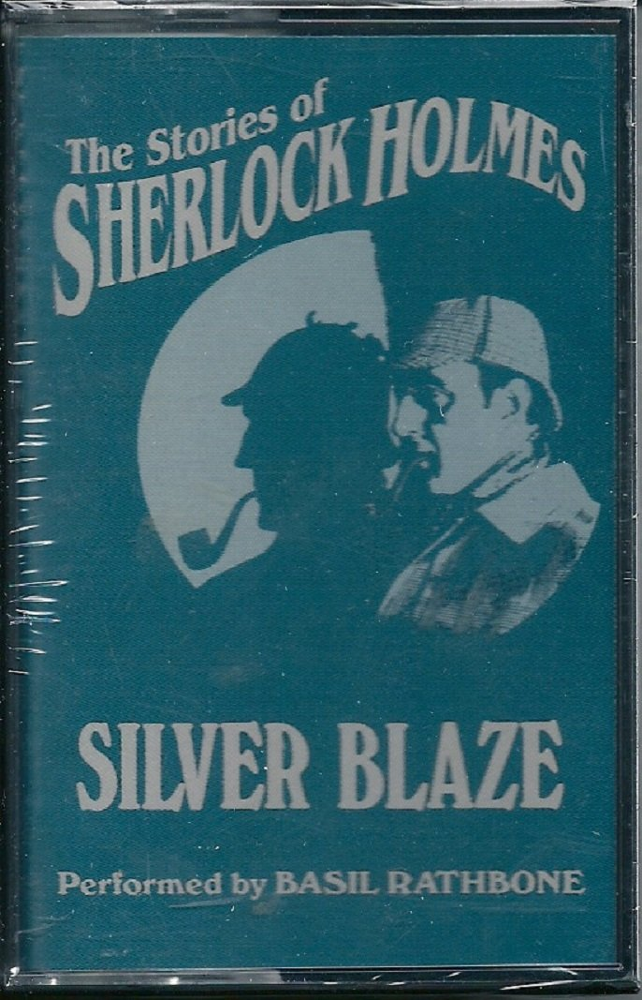

0
стр. з
0
сторінок

завантаження...

Артур Конан Дойл
Серебряный Огонь
книгу адаптировал Сергей Андреевский
Метод чтения Ильи Франка
Сontents
Silver Blaze
(Серебряный Огонь; blaze — пламя, яркий огонь)
"I am afraid, Watson, that I shall have to go ("я боюсь, Ватсон, мне придется уехать"), said Holmes, as we sat down together to our breakfast one morning (сказал Холмс, когда однажды утром мы вместе сели завтракать: "сказал Холмс, когда мы сели вместе за наш завтрак одним утром).
"Go (уехать)! Where to (куда же)?"
"To Dartmoor; to King’s Pyland (в Дартмур, в Кингз-Пайлэнд)."
I was not surprised (я не был удивлен). Indeed, my only wonder was (на самом деле мое удивление заключалось только лишь в том: "мое единственное удивление заключалось /в том/") that he had not already been mixed up in this extraordinary case (что он еще не занялся этим необыкновенным делом; already — уже; еще не /в отрицательных предложениях/; to mix up — впутывать, вовлекать /кого-л. во что-л./; extraordinary — чрезвычайный; необычайный, исключительный; case — положение дел; случай, дело), which was the one topic of conversation through the length and breadth of England (которое являлось темой для разговоров во всех уголках Англии; through the length and breadth — "через длину и ширину", вдоль и поперек, из края в край).
extraordinary [Iks'trO:dnrI], through [Tru:], breadth [bredT]
"I am afraid, Watson, that I shall have to go," said Holmes, as we sat down together to our breakfast one morning.
"Go! Where to?"
"To Dartmoor; to King’s Pyland."
I was not surprised. Indeed, my only wonder was that he had not already been mixed up in this extraordinary case, which was the one topic of conversation through the length and breadth of England.
For a whole day my companion had rambled about the room (в течение всего /предшествующего/ дня мой товарищ бродил по комнате; whole — целый, полный; весь, целый) with his chin upon his chest and his brows knitted (/опустив/ подбородок на грудь и нахмурив брови; to knit — вязать; хмурить /брови/), charging and recharging his pipe with the strongest black tobacco (набивая снова и снова свою трубку крепчайшим черным табаком; to charge — нагружать, загружать; наполнять; re- /прист./ — образует слова от глагольных основ со значением "повторить", "сделать повторно"; strong — сильный, обладающий большой физической силой; крепкий /о напитках, сигаретах и т. п./), and absolutely deaf to any of my questions or remarks (и /оставаясь/ совершенно глухим к любым моим вопросам или замечаниям). Fresh editions of every paper (свежие выпуски всех газет; every — каждый, всякий) had been sent up by our news agent (присланные нашим поставщиком прессы; to send; news agent — "новостной агент", газетный киоскер), only to be glanced over and tossed down into a corner (лишь бегло просматривались и отбрасывались в угол; to glance over — окидывать взглядом).
whole [hqul], knit [nIt], absolutely ['xbsqlu:tlI]
For a whole day my companion had rambled about the room with his chin upon his chest and his brows knitted, charging and recharging his pipe with the strongest black tobacco, and absolutely deaf to any of my questions or remarks. Fresh editions of every paper had been sent up by our news agent, only to be glanced over and tossed down into a corner.
Yet, silent as he was, I knew perfectly well (однако, несмотря на его молчание: "/каким/ бы молчаливым он /не/ был", я прекрасно знал; perfectly well — "совершенно хорошо", отлично) what it was over which he was brooding (что это такое, над чем он размышляет; to brood — сидеть на яйцах, высиживать /птенцов/; размышлять). There was but one problem before the public (лишь один вопрос занимал внимание общественности: "перед общественностью был лишь один вопрос"; problem — проблема; вопрос) which could challenge his powers of analysis (который мог бросить вызов его аналитическим способностям; analysis — анализ, исследование; аналитический метод), and that was the singular disappearance of the favorite for the Wessex Cup (и это было необыкновенное исчезновение основного претендента: "фаворита" на Кубок Уэссекса; singular — единственный, единичный; странный, необычный), and the tragic murder of its trainer (и трагическое убийство его тренера).
analysis [q'nxlqsIs], disappearance ["dIsq'pIqr(q)ns], favorite ['feIvqrIt]
Yet, silent as he was, I knew perfectly well what it was over which he was brooding. There was but one problem before the public which could challenge his powers of analysis, and that was the singular disappearance of the favorite for the Wessex Cup, and the tragic murder of its trainer.
When, therefore, he suddenly announced his intention (поэтому, когда он вдруг объявил о своем намерении) of setting out for the scene of the drama (отправиться на место, /где произошло/ это драматическое событие; to set out — выступать /в поход/, выехать; scene — сцена, подмостки; место /события, происшествия и т. п./; drama — пьеса, драма; драматическое событие) it was only what I had both expected and hoped for (это оказалось лишь тем, что я и ожидал и /на что/ надеялся; both — оба; и тот и другой).
"I should be most happy to go down with you (я буду чрезвычайно рад поехать с вами; most — больше всего; в высшей степени, чрезвычайно) if I should not be in the way," said I (если не стану помехой, — сказал я; to be in the way — стоять поперек дороги, мешать).
"My dear Watson, you would confer a great favor upon me by coming (мой дорогой Ватсон, вы окажете мне большое одолжение, /если/ поедете; to confer — даровать, предоставлять; favor — благосклонность, расположение; одолжение, любезность). And I think that your time will not be misspent (и я полагаю, что ваше время не будет потрачено зря; to think — думать, мыслить; полагать, считать; to misspend), for there are points about the case (поскольку в этом деле есть /определенные/ моменты; point — точка; пункт, момент) which promise to make it an absolutely unique one (которые обещают сделать его совершенно уникальным).
scene [si:n], announce [q'nauns], unique [ju:'ni:k]
When, therefore, he suddenly announced his intention of setting out for the scene of the drama it was only what I had both expected and hoped for.
"I should be most happy to go down with you if I should not be in the way," said I.
"My dear Watson, you would confer a great favor upon me by coming. And I think that your time will not be misspent, for there are points about the case which promise to make it an absolutely unique one.
We have, I think, just time to catch our train at Paddington (у нас есть, я полагаю, как раз время, чтобы успеть на поезд с Паддингтонского вокзала; to catch — поймать, схватить; успеть /на поезд, самолет и т. п./; Paddington — Паддингтон /район Лондона/; Паддингтонский вокзал), and I will go further into the matter upon our journey (и я расскажу более подробно об этом деле /во время/ нашего путешествия; to go into /smth./ — описывать подробно, изучать в деталях /что-л./; far — далеко, на большом расстоянии; ; matter — вещество, материал; дело, вопрос). You would oblige me (вы меня /весьма/ обяжете) by bringing with you your very excellent field-glass (/если/ возьмете с собой ваш "очень" превосходный полевой бинокль; glass — стекло; бинокль)."
journey ['dZq:nI], oblige [q'blaIdZ], excellent ['eks(q)lqnt]
We have, I think, just time to catch our train at Paddington, and I will go further into the matter upon our journey. You would oblige me by bringing with you your very excellent field-glass."
And so it happened that an hour or so later (так вот и случилось, что примерно часом позже; or so — что-то около того) I found myself in the corner of a first-class carriage (я оказался в углу вагона первого класса; to find oneself somewhere — "обнаружить себя где-л.", оказаться, очутиться где-л.; carriage — перевозка, транспортировка; пассажирский вагон) flying along en route for Exeter (мчащегося в сторону Эксетера; to fly — летать, лететь; нестись, мчаться; en route /фр./ — по пути, по дороге), while Sherlock Holmes, with his sharp, eager face (а Шерлок Холмс в это время со своим умным, сосредоточенным лицом; sharp — острый; умный, сообразительный; eager — страстно стремящийся /к чему-л./, жаждущий /чего-л./; напряженный) framed in his ear-flapped travelling-cap (обрамленным дорожным кепи с опущенными ушами; to frame — собирать /конструкцию/; обрамлять; to flap — слегка ударять, шлепать; опускать /поля шляпы/; travelling — путешествующий; используемый в дороге, путешествии), dipped rapidly into the bundle of fresh papers (быстро просматривал пачку: "связку" свежих газет; to dip — погружать/ся/, окунать/ся/; бегло знакомиться, просматривать) which he had procured at Paddington (которые он приобрел на Паддингтонском вокзале; to procure — быть причиной, вызывать /арх./; доставать, добывать).
hour ['auq], en route ["qn'ru:t], procure [prq'kjuq]
And so it happened that an hour or so later I found myself in the corner of a first-class carriage flying along en route for Exeter, while Sherlock Holmes, with his sharp, eager face framed in his ear-flapped travelling-cap, dipped rapidly into the bundle of fresh papers which he had procured at Paddington.
We had left Reading far behind us (мы уже оставили Ридинг далеко позади нас; to leave) before he thrust the last one of them under the seat (прежде чем он сунул последнюю из них под сиденье; to thrust — толкать, тыкать; совать, засовывать), and offered me his cigar-case (и предложил мне свой портсигар).
"We are going well (а мы хорошо идем)," said he, looking out the window and glancing at his watch (сказал он, выглядывая в окно и посматривая на часы). "Our rate at present is fifty-three and a half miles an hour (наша скорость в данный момент составляет пятьдесят три с половиной мили в час; rate — ставка, тариф; скорость, темп; at present — в настоящее время)."
"I have not observed the quarter-mile posts," said I (я не заметил столбиков четвертьмильной /разметки/, — сказал я; to observe — наблюдать; замечать).
"Nor have I (я тоже). But the telegraph posts upon this line are sixty yards apart (но телеграфные столбы на этом направлении находятся в шестидесяти ярдах друг от друга; line — веревка, линь; рельсовый путь; apart — раздельно, порознь), and the calculation is a simple one (и подсчет прост). I presume that you have looked into this matter (я полагаю, что вы уже изучили это дело; to look into — исследовать, изучать) of the murder of John Straker and the disappearance of Silver Blaze (об убийстве Джона Стрэйкера и исчезновении Серебряного Огня)?"
cigar-case [sI'ga:"keIs], quarter-mile ['kwO:tqmaIl], murder ['mq:dq]
We had left Reading far behind us before he thrust the last one of them under the seat, and offered me his cigar-case.
"We are going well," said he, looking out the window and glancing at his watch. "Our rate at present is fifty-three and a half miles an hour."
"I have not observed the quarter-mile posts," said I.
"Nor have I. But the telegraph posts upon this line are sixty yards apart, and the calculation is a simple one. I presume that you have looked into this matter of the murder of John Straker and the disappearance of Silver Blaze?"
"I have seen what the Telegraph and the Chronicle have to say (я видел, что говорится в "Телеграф" и "Кроникл": "что "Телеграф" и "Кроникл" имеют сказать")."
"It is one of those cases (это один из тех случаев) where the art of the reasoner (когда искусство человека мыслящего; to reason — размышлять, рассуждать /логически/) should be used rather for the sifting of details (должно быть использовано скорее для анализа деталей; to sift — просеивать; тщательно исследовать, анализировать) than for the acquiring of fresh evidence (чем для обнаружения: "получения" новых фактов; evidence — явность, очевидность; данные, факты; to acquire — приобретать; получать; fresh — свежий, натуральный; новый, дополнительный). The tragedy has been so uncommon (это трагическое событие настолько незаурядно; tragedy — трагедия; трагическое событие), so complete and of such personal importance to so many people (настолько переполнено подробностями и /имеет/ такое судьбоносное значение для множества людей; complete — полный; детальный; personal — личный, персональный; затрагивающий личность; importance — значение, важность), that we are suffering from a plethora of surmise, conjecture, and hypothesis (что мы страдаем от избытка предположений, догадок и гипотез; plethora — полнокровие /мед./; изобилие, избыток).
Chronicle ['krOnIkl], acquire [q'kwaIq], complete [kqm'pli:t], hypothesis [haI'pOTIsIs]
"I have seen what the Telegraph and the Chronicle have to say."
"It is one of those cases where the art of the reasoner should be used rather for the sifting of details than for the acquiring of fresh evidence. The tragedy has been so uncommon, so complete and of such personal importance to so many people, that we are suffering from a plethora of surmise, conjecture, and hypothesis.
The difficulty is to detach the framework of fact (сложность заключается в том, чтобы отделить границы факта; framework — каркас, несущая конструкция; рамки, пределы) —of absolute undeniable fact (совершенно неоспоримого факта) —from the embellishments of theorists and reporters (от измышлений теоретиков и репортеров; embellishment — украшение; приукрашивание, преувеличение /в рассказе/). Then, having established ourselves upon this sound basis (затем, когда мы укрепимся на этом прочном фундаменте; to establish — устанавливать, создавать; упрочивать, укреплять; sound — здоровый, неповрежденный; устойчивый, прочный), it is our duty to see (нашей задачей станет выяснить; duty — долг, моральное обязательство; миссия, задача; to see — видеть, смотреть; выяснять) what inferences may be drawn (какие выводы можно сделать; to draw — тащить, волочить; извлекать /вывод, заключение/) and what are the special points (и в чем заключаются ключевые: "особые" моменты; point — точка; пункт, момент) upon which the whole mystery turns (на которых и держится вся загадка; to turn — поворачивать/ся/; держаться /на чем-л./; mystery — тайна; загадка, головоломка).
undeniable ["AndI'naIqbl], drawn [drO:n], special ['speS(q)l]
The difficulty is to detach the framework of fact—of absolute undeniable fact—from the embellishments of theorists and reporters. Then, having established ourselves upon this sound basis, it is our duty to see what inferences may be drawn and what are the special points upon which the whole mystery turns.
On Tuesday evening I received telegrams (в четверг вечером я получил телеграммы) from both Colonel Ross, the owner of the horse (и от полковника Росса, владельца лошади; both — оба; и тот и другой), and from Inspector Gregory, who is looking after the case (и от инспектора Грегори, который занимается этим делом; to look after — заниматься /чем-л./), inviting my cooperation (/в которых они/ просят моего содействия: "сотрудничества"; to invite — приглашать, звать; просить, призывать)."
"Tuesday evening!" I exclaimed (во вторник вечером! — воскликнул я). "And this is Thursday morning (а сейчас утро четверга). Why didn’t you go down yesterday (почему же вы не поехали вчера)?"
"Because I made a blunder, my dear Watson (потому что я совершил большую ошибку, мой дорогой Ватсон; to make — делать, изготовлять; делать, совершать) —which is, I am afraid, a more common occurrence (которая, боюсь, случается чаще; common — общий, совместный; частый, обычный; occurrence — происшествие, случай) than any one would think (чем подумал бы любой; any one — кто бы то ни было; любой /человек/) who only knew me through your memoirs (кто знаком со мной по вашим запискам; to know — знать, иметь представление; быть знакомым с /кем-л./; memoirs — мемуары, воспоминания).
colonel [kq:nl], occurrence [q'kAr(q)ns], memoir ['memwQ:]
On Tuesday evening I received telegrams from both Colonel Ross, the owner of the horse, and from Inspector Gregory, who is looking after the case, inviting my cooperation."
"Tuesday evening!" I exclaimed. "And this is Thursday morning. Why didn’t you go down yesterday?"
"Because I made a blunder, my dear Watson—which is, I am afraid, a more common occurrence than any one would think who only knew me through your memoirs.
The fact is that I could not believe it possible (дело в том, что я не мог поверить, будто возможно; the fact is that — дело в том, что) that the most remarkable horse in England (что самого знаменитого скакуна в Англии; remarkable — замечательный, примечательный; выдающийся, знаменитый; horse — лошадь, конь) could long remain concealed (могут долго скрывать: "оставлять скрытым"; to remain — оставаться; оставаться в каком-л. состоянии), especially in so sparsely inhabited a place as the north of Dartmoor (особенно в таком малонаселенном месте как северная /часть/ Дартмура; sparsely — скудно, негусто). From hour to hour yesterday I expected to hear (вчера с часу на час я ожидал услышать) that he had been found (что он найден; to find), and that his abductor was the murderer of John Straker (и что его похититель и есть убийца Джона Стрэйкера). When, however, another morning had come (когда, однако же, наступило сегодняшнее утро; another — другой, еще один), and I found that beyond the arrest of young Fitzroy Simpson (и я убедился, что помимо ареста юного Фицроя Симпсона; to find — находить, отыскивать; убеждаться, приходить к заключению) nothing had been done (ничего не сделано), I felt that it was time for me to take action (я понял, что мне пришло время действовать; to feel — трогать, щупать; понимать, сознавать; action — действие, поступок).
conceal [kqn'si:l], sparsely ['spQ:slI], however [hau'evq]
The fact is that I could not believe it possible that the most remarkable horse in England could long remain concealed, especially in so sparsely inhabited a place as the north of Dartmoor. From hour to hour yesterday I expected to hear that he had been found, and that his abductor was the murderer of John Straker. When, however, another morning had come, and I found that beyond the arrest of young Fitzroy Simpson nothing had been done, I felt that it was time for me to take action.
Yet in some ways I feel that yesterday has not been wasted (тем не менее, в какой-то мере я чувствую, что вчерашний день не был потрачен впустую; in some ways — в некоторой степени; to feel — трогать, щупать; чувствовать; to waste — опустошать, разорять; пропадать попусту)."
"You have formed a theory, then (значит, вы уже составили свое мнение; to form — придавать форму, вид; создавать, составлять; theory — понятие, представление; особое мнение, взгляд /разг./; then — тогда, в то время; значит, следовательно)?"
"At least I have got a grip of the essential facts of the case (во всяком случае, я хорошо понимаю основные события этого дела; at least — по крайней мере, во всяком случае; to have /got/ a grip of — хорошо понимать /задачу, ситуацию и т. п./; grip — схватывание; essential — относящийся к сущности, к существу /предмета, дела/; основной, существенно важный). I shall enumerate them to you (я перечислю их вам), for nothing clears up a case so much (ибо ничто так хорошо не проясняет дело) as stating it to another person (как изложение его другому человеку; to state — устанавливать; излагать /факты и т. п./), and I can hardly expect your co-operation (и я едва ли могу рассчитывать на ваше содействие; to expect — ожидать, ждать; рассчитывать, надеяться) if I do not show you the position (если не обозначу для вас: "если не покажу вам" рубежи; position — положение, местонахождение; позиция, рубеж /воен./) from which we start (с которых мы начнем; to start — вскакивать; начинать, приступать /к чему-л./)."
essential [I'senS(q)l], enumerate [I'nju:mqreIt], expect [Iks'pekt]
Yet in some ways I feel that yesterday has not been wasted."
"You have formed a theory, then?"
"At least I have got a grip of the essential facts of the case. I shall enumerate them to you, for nothing clears up a case so much as stating it to another person, and I can hardly expect your co-operation if I do not show you the position from which we start."
I lay back against the cushions, puffing at my cigar (я откинулся на подушки, попыхивая сигарой; to lie back — "лечь назад", откинуться /на подушку, спинку стула и т. п./; to puff — дуть порывами; дымить, пускать клубы дыма), while Holmes, leaning forward (тогда как Холмс, наклонившись вперед), with his long, thin forefinger (своим длинным тонким указательным пальцем) checking off the points upon the palm of his left hand (отмечая пункты на ладони левой руки; to check off — отмечать галочкой /проверенное, выполненное/; point — точка; пункт, момент), gave me a sketch of the events (давал мне краткий обзор событий; sketch — эскиз, набросок; краткий обзор) which had led to our journey (которые послужили поводом для нашего путешествия; to lead to — привести к, повлечь за собой).
"Silver Blaze," said he, "is from the Somomy stock (Серебряный Огонь, — сказал он, — из рода Сомоми; stock — главный ствол /дерева/; род, семья), and holds as brilliant a record as his famous ancestor (и устанавливает такие же блестящие рекорды, как и его знаменитый предок; to hold a record — удерживать рекорд, быть рекордсменом; record — запись, регистрация; достижения; рекорд /спорт./). He is now in his fifth year (сейчас ему идет пятый год), and has brought in turn each of the prizes of the turf (и /он/ приносит один за другим каждый из призов на скачках; to bring; in turn — по очереди; turf — дерн; скачки) to Colonel Ross, his fortunate owner (полковнику Россу, своему счастливому владельцу).
forefinger ['fO:"fINgq], ancestor ['xnsIstq], fortunate ['fO:tSnIt]
I lay back against the cushions, puffing at my cigar, while Holmes, leaning forward, with his long, thin forefinger checking off the points upon the palm of his left hand, gave me a sketch of the events which had led to our journey.
"Silver Blaze," said he, "is from the Somomy stock, and holds as brilliant a record as his famous ancestor. He is now in his fifth year, and has brought in turn each of the prizes of the turf to Colonel Ross, his fortunate owner.
Up to the time of the catastrophe (вплоть до этих трагических событий; up to — вплоть до; time время; определенный момент времени; catastrophe — бедствие, катастрофа; трагическая развязка) he was the first favorite for the Wessex Cup (он был первым претендентом на Кубок Уэссекса), the betting being three to one on him (ставки на него были три к одному). He has always, however, been a prime favorite with the racing public (однако он всегда был основным любимцем /интересующейся/ скачками публики; prime — первоначальный; главный, основной; racing — относящийся к скачкам, бегам), and has never yet disappointed them (и еще ни разу не разочаровал ее), so that even at those odds (так что даже при таких неравных шансах; odds — неравенство; перевес /в чью-л. пользу/) enormous sums of money have been laid upon him (на него поставлены громадные суммы денег; to lay — класть, положить; делать ставку). It is obvious, therefore, that there were many people (поэтому, очевидно, что существует много людей) who had the strongest interest in preventing Silver Blaze (которые имеют самую крайнюю заинтересованность в том, чтобы помешать Серебряному Огню; strong — физически сильный, крепкий; чрезвычайный; to prevent — предотвращать; мешать, препятствовать) from being there at the fall of the flag next Tuesday (оказаться там во время отмашки флагом: "при падении флага" в следующий вторник).
catastrophe [kq'txstrOfI], enormous [I'nO:mqs], obvious ['ObvIqs]
Up to the time of the catastrophe he was the first favorite for the Wessex Cup, the betting being three to one on him. He has always, however, been a prime favorite with the racing public, and has never yet disappointed them, so that even at those odds enormous sums of money have been laid upon him. It is obvious, therefore, that there were many people who had the strongest interest in preventing Silver Blaze from being there at the fall of the flag next Tuesday.
"The fact was, of course, appreciated at King’s Pyland (это обстоятельство, конечно, прекрасно понимали в Кингз-Пайлэнд; fact — событие, факт; обстоятельство; to appreciate — ценить, высоко ставить; понимать значение), where the Colonel’s training-stable is situated (где расположена = находится тренировочная конюшня полковника; stable — стойло, хлев; конюшня). Every precaution was taken to guard the favorite (были предприняты все меры предосторожности по охране фаворита: "чтобы охранять фаворита"). The trainer, John Straker, is a retired jockey (тренер, Джон Стрэйкер, это бывший жокей; retired — удалившийся от дел; отставной) who rode in Colonel Ross’s colors (который выступал в /куртке/ цветов полковника Росса; to ride — ехать, скакать верхом; участвовать в верховых состязаниях; color — цвет, оттенок; герб /семьи, рода/; colors — форменная одежда /армейская, спортивная и т. п./) before he became too heavy for the weighing-chair (до того, как он стал слишком тяжел для стула на взвешивании; to become; weighing — взвешивание; определение веса). He has served the Colonel for five years as jockey (он прослужил у полковника Росса в течение пяти лет в качестве жокея) and for seven as trainer (и в течение семи — в качестве тренера), and has always shown himself to be a zealous and honest servant (и всегда показывал себя усердным и честным работником; to show; servant — слуга, служитель).
appreciated [q'pri:SIeItId], precaution [prI'kO:S(q)n], weighing ['weIIng]
"The fact was, of course, appreciated at King’s Pyland, where the Colonel’s training-stable is situated. Every precaution was taken to guard the favorite. The trainer, John Straker, is a retired jockey who rode in Colonel Ross’s colors before he became too heavy for the weighing-chair. He has served the Colonel for five years as jockey and for seven as trainer, and has always shown himself to be a zealous and honest servant.
Under him were three lads (под ним = у него в подчинении было три конюха; lad — юноша, парень; помощник конюха /брит./); for the establishment was a small one (поскольку конюшня была маленькой; establishment — установление, основание; учреждение, заведение), containing only four horses in all (/в ней/ содержалось всего только четыре лошади; in all — всего). One of these lads sat up each night in the stable (один из этих парней каждую ночь дежурил в конюшне; to sit up — не ложиться спать, бодрствовать), while the others slept in the loft (в то время как остальные спали на чердаке; to sleep). All three bore excellent characters (все трое имели превосходную репутацию; to bear — носить, нести; нести на себе, иметь; character — литера, печатный знак; репутация). John Straker, who is a married man, lived in a small villa (Джон Стрэйкер, человек женатый, жил на маленькой вилле; villa — усадьба /в Древнем Риме/; вилла, загородный дом) about two hundred yards from the stables (приблизительно в двухстах ярдах от конюшни). He has no children, keeps one maid-servant (детей он не имеет, держит служанку; maid — девушка, девица /поэт./; служанка, горничная), and is comfortably off (и хорошо обеспечен; comfortably off — обеспеченный, состоятельный).
excellent ['eks(q)lqnt], character ['kxrIktq], comfortably ['kAmfqtqblI]
Under him were three lads; for the establishment was a small one, containing only four horses in all. One of these lads sat up each night in the stable, while the others slept in the loft. All three bore excellent characters. John Straker, who is a married man, lived in a small villa about two hundred yards from the stables. He has no children, keeps one maid-servant, and is comfortably off.
The country round is very lonely (местность вокруг совсем: "очень" пустынная; lonely — одинокий; малолюдный, пустынный), but about half a mile to the north (но приблизительно в полумиле к северу) there is a small cluster of villas (находится несколько вилл; cluster — кисть, гроздь; группа домов с общим двором и садом) which have been built by a Tavistock contractor for the use of invalids (которые построил подрядчик из Тавистока для нужд: "для пользы" больных; to build; use — употребление, использование; польза, толк) and others who may wish to enjoy the pure Dartmoor air (и всех остальных, кто, возможно, пожелает насладиться чистым воздухом Дартмура; other — второй, другой /из двух или трех/; еще один, другой). Tavistock itself lies two miles to the west (сам Тависток расположен в двух милях к западу; to lie — лежать; располагаться, находиться), while across the moor, also about two miles distant (тогда как по ту сторону вересковой пустоши, тоже приблизительно на расстоянии двух миль; across — от края до края, поперек; по ту сторону; moor — участок, поросший вереском), is the larger training establishment of Mapleton (находится более крупное тренировочное заведение Мэйплтон), which belongs to Lord Backwater (которое принадлежит лорду Бэкуотеру), and is managed by Silas Brown (а управляет /им/ Сайлас Браун).
half [hQ:f], air [Fq], while [waIl]
The country round is very lonely, but about half a mile to the north there is a small cluster of villas which have been built by a Tavistock contractor for the use of invalids and others who may wish to enjoy the pure Dartmoor air. Tavistock itself lies two miles to the west, while across the moor, also about two miles distant, is the larger training establishment of Mapleton, which belongs to Lord Backwater, and is managed by Silas Brown.
In every other direction the moor is a complete wilderness (во всех остальных направлениях эта поросшая вереском равнина совершенно пустынна; complete — полный, цельный; совершенный, абсолютный; moor — участок, поросший вереском; wilderness — дикая местность; пустынное пространство), inhabited only by a few roaming gypsies (населяют /ее/ лишь немногие бродячие цыгане; to inhabite — жить, обитать; населять). Such was the general situation last Monday night (такой была в общем обстановка в ночь прошлого понедельника; general — общий, всеобщий; основной) when the catastrophe occurred (когда произошло несчастье).
"On that evening the horses had been exercised and watered as usual (в тот вечер лошадей потренировали и напоили, как обычно), and the stables were locked up at nine o’clock (и конюшню закрыли в девять часов). Two of the lads walked up to the trainer’s house (двое конюхов пошли в дом тренера), where they had supper in the kitchen (где на кухне они поужинали), while the third, Ned Hunter, remained on guard (тогда как третий — Нед Хантер — остался на дежурстве).
gypsies ['dZIpsIz], occur [q'kq:], guard [gQ:d]
In every other direction the moor is a complete wilderness, inhabited only by a few roaming gypsies. Such was the general situation last Monday night when the catastrophe occurred.
"On that evening the horses had been exercised and watered as usual, and the stables were locked up at nine o’clock. Two of the lads walked up to the trainer’s house, where they had supper in the kitchen, while the third, Ned Hunter, remained on guard.
At a few minutes after nine the maid, Edith Baxter (в начале десятого: "через несколько минут после девяти" служанка, Эдит Бакстер), carried down to the stables his supper (принесла в конюшню его ужин), which consisted of a dish of curried mutton (который состоял из тарелки: "блюда" баранины, приправленной карри). She took no liquid (она не брала /с собой/ никакого питья), as there was a water-tap in the stables (поскольку на конюшне есть кран с водой), and it was the rule that the lad on duty should drink nothing else (а существовало правило, что конюх на дежурстве не должен пить ничего другого). The maid carried a lantern with her (девушка принесла с собой фонарь), as it was very dark (потому что было очень темно; maid — девушка; служанка) and the path ran across the open moor (а тропинка шла через открытую местность, поросшую вереском; to run — бегать, бежать; тянуться, простираться).
"Edith Baxter was within thirty yards of the stables (Эдит Бакстер находилась в тридцати ярдах от конюшни), when a man appeared out of the darkness (когда какой-то человек появился из темноты) and called to her to stop (и, окликнув ее, /попросил/ остановиться; to call — кричать; звать, окликать).
curried ['kArId], minute ['mInIt], liquid ['lIkwId]
At a few minutes after nine the maid, Edith Baxter, carried down to the stables his supper, which consisted of a dish of curried mutton. She took no liquid, as there was a water-tap in the stables, and it was the rule that the lad on duty should drink nothing else. The maid carried a lantern with her, as it was very dark and the path ran across the open moor.
"Edith Baxter was within thirty yards of the stables, when a man appeared out of the darkness and called to her to stop.
As he stepped into the circle of yellow light (когда он шагнул в круг желтого света) thrown by the lantern (отбрасываемого фонарем; to throw — бросать) she saw that he was a person of gentlemanly bearing (она увидела, что это человек с манерами джентльмена; gentlemanly — свойственный джентльмену; bearing — ношение; поведение, манера держаться), dressed in a gray suit of tweeds, with a cloth cap (одетый в серый костюм из твида и матерчатую кепку). He wore gaiters, and carried a heavy stick with a knob to it (он носил гетры и имел при себе тяжелую трость с набалдашником на ней; to wear — носить /одежду/; to carry — нести, переносить; иметь при себе; stick — палка; трость; knob — выпуклость, шишка; набалдашник). She was most impressed, however (более всего, однако, она была необычайно поражена; to impress — делать отпечаток; производить впечатление, поражать; most — больше всего; в высшей степени, чрезвычайно), by the extreme pallor of his face (чрезвычайной бледностью его лица) and by the nervousness of his manner (и нервностью его поведения; manner — метод, способ; манера, поведение). His age, she thought, would be rather over thirty than under it (лет ему, как ей показалось, было, скорее, больше тридцати, чем меньше: "возраст его, предположила она, был над тридцатью, чем под этим"; age — продолжительность жизни; возраст; to think — думать, мыслить; предполагать).
circle [sq:kl], extreme [Iks'tri:m], nervousness ['nq:vqsnIs]
As he stepped into the circle of yellow light thrown by the lantern she saw that he was a person of gentlemanly bearing, dressed in a gray suit of tweeds, with a cloth cap. He wore gaiters, and carried a heavy stick with a knob to it. She was most impressed, however, by the extreme pallor of his face and by the nervousness of his manner. His age, she thought, would be rather over thirty than under it.
"‘Can you tell me where I am?’ he asked (вы можете мне сказать, где я нахожусь? — спросил он). ‘I had almost made up my mind to sleep on the moor (я почти уже решил ночевать в поле; to make up one’s mind — решить, принять решение; to sleep — спать; ночевать; moor — местность, поросшая вереском), when I saw the light of your lantern (когда увидел свет вашего фонаря).’
"‘You are close to the King’s Pyland training-stables,’ said she (вы находитесь рядом с тренировочной конюшней Кингз-Пайлэнд, — сказала она).
"‘Oh, indeed (да ну)! What a stroke of luck!’ he cried (какая удача! — воскликнул он; stroke of luck — удача, везение; stroke — удар; неожиданный случай; luck — счастье, удача; to cry — кричать; восклицать). ‘I understand that a stable-boy sleeps there alone every night (я /так/ понимаю, что какой-то работник конюшни один дежурит там каждую ночь; boy — мальчик; слуга мужского пола; to sleep — спать; ночевать). Perhaps that is his supper which you are carrying to him (вероятно, это его ужин, который вы несете ему). Now I am sure that you would not be too proud (я уверен, что вы не будете слишком гордой) to earn the price of a new dress, would you (чтобы заработать на новое платье: "чтобы заработать цену нового платья", не так ли)?’
almost ['O:lmqust], sure [Suq], proud [praud]
"‘Can you tell me where I am?’ he asked. ‘I had almost made up my mind to sleep on the moor, when I saw the light of your lantern.’
"‘You are close to the King’s Pyland training-stables,’ said she.
"‘Oh, indeed! What a stroke of luck!’ he cried. ‘I understand that a stable-boy sleeps there alone every night. Perhaps that is his supper which you are carrying to him. Now I am sure that you would not be too proud to earn the price of a new dress, would you?’
He took a piece of white paper folded up out of his waistcoat pocket (он вынул сложенный листок белой бумаги из жилетного кармана; to take out — вынимать; piece — кусок, часть; отдельный предмет). ‘See that the boy has this to-night (проследите, чтобы работник получил это сегодня вечером; to see — видеть, смотреть; проследить /за чем-л./, позаботиться /о чем-л./), and you shall have the prettiest frock (и у вас будет самое красивое платье) that money can buy (которое можно купить за деньги: "которое деньги могут купить").’
"She was frightened by the earnestness of his manner (она испугалась горячности его поведения; earnest — горячий, ревностный), and ran past him to the window (и побежала мимо него к окну) through which she was accustomed to hand the meals (через которое привыкла: "была приучена" передавать еду). It was already opened (оно уже было открыто), and Hunter was seated at the small table inside (и Хантер сидел внутри за маленьким столиком). She had begun to tell him of what had happened (/только/ она начала рассказывать ему о том, что случилось), when the stranger came up again (как незнакомец подошел снова; to come up — подходить).
frighten ['fraItn], through [Tru:], accustom [q'kAstqm]
He took a piece of white paper folded up out of his waistcoat pocket. ‘See that the boy has this to-night, and you shall have the prettiest frock that money can buy.’
"She was frightened by the earnestness of his manner, and ran past him to the window through which she was accustomed to hand the meals. It was already opened, and Hunter was seated at the small table inside. She had begun to tell him of what had happened, when the stranger came up again.
"‘Good-evening,’ said he, looking through the window (добрый вечер, — сказал он, заглядывая в окно). ‘I wanted to have a word with you (я хотел бы сказать вам пару слов; to have a word with smb. — кратко переговорить с кем-л.).’ The girl has sworn that as he spoke she noticed (девушка клялась, что когда он говорил, она заметила; to swear) the corner of the little paper packet (что уголок какой-то свернутой бумажки: "угол маленького бумажного свертка"; packet — пакет, сверток) protruding from his closed hand (торчит из его сжатой в кулак руки: "из его закрытой руки").
"‘What business have you here?’ asked the lad (какое у вас здесь дело? — спросил конюх).
"‘It’s business that may put something into your pocket,’ said the other (дело, которое может положить кое-что в ваш карман, — сказал тот; other — второй, другой /из двух или трех/). ‘You’ve two horses in for the Wessex Cup (у вас внутри есть две лошади, /которые будут участвовать в скачках/ на кубок Уэссекса) —Silver Blaze and Bayard (Серебряный Огонь и Баярд). Let me have the straight tip (дайте мне: "позвольте мне иметь" верные сведения; straight tip — надежный совет о том, на какую лошадь следует ставить) and you won’t be a loser (и вы в проигрыше не останетесь: "и вы не будете проигравшим").
protrude [prq'tru:d], business ['bIznIs], loser ['lu:zq]
"‘Good-evening,’ said he, looking through the window. ‘I wanted to have a word with you.’ The girl has sworn that as he spoke she noticed the corner of the little paper packet protruding from his closed hand.
"‘What business have you here?’ asked the lad.
"‘It’s business that may put something into your pocket,’ said the other. ‘You’ve two horses in for the Wessex Cup—Silver Blaze and Bayard. Let me have the straight tip and you won’t be a loser.
Is it a fact that at the weights (верно ли, что /неся на себе/ полный вес; fact —событие, факт; истина; weight — вес; полный/нужный вес) Bayard could give the other a hundred yards in five furlongs (Баярд смог бы дать второму = Серебряному Огню сотню ярдов на пяти фарлонгах; furlong — фарлонг /единица длины в системе английских мер, используется для измерения расстояния на скачках, равна 201,168 м/), and that the stable have put their money on him (и что /вся/ конюшня ставят свои деньги на него)?’
"‘So, you’re one of those damned touts!’ cried the lad (так вы один из тех мерзких "жучков"! — воскликнул конюх; damned — проклятый; отвратительный, ужасный /эмоц.-усил./; tout — акт выслеживания/высматривания; человек, добывающий и продающий сведения о лошадях перед скачками, "жучок"). ‘I’ll show you how we serve them in King’s Pyland (я покажу вам, как мы поступаем с ними в Кингз-Пайлэнд; to serve — служить, быть слугой; обходиться, поступать /с кем-л./, /разг./).’ He sprang up and rushed across the stable (он вскочил и бросился в другой конец конюшни; to spring — прыгать, скакать; вскакивать; across — поперек; на ту сторону) to unloose the dog (чтобы спустить собаку; to unloose — ослаблять; освобождать, выпускать на волю). The girl fled away to the house (девушка бросилась бежать к дому; to flee — убегать, спасаться бегством), but as she ran she looked back and saw (но когда бежала, оглянулась: "посмотрела назад" и увидела) that the stranger was leaning through the window (что незнакомец, наклонившись, /просунул голову/ в окно; through — сквозь, через).
furlong ['fq:lON], damned [dxmd], unloose [An'lu:s]
Is it a fact that at the weights Bayard could give the other a hundred yards in five furlongs, and that the stable have put their money on him?’
"‘So, you’re one of those damned touts!’ cried the lad. ‘I’ll show you how we serve them in King’s Pyland.’ He sprang up and rushed across the stable to unloose the dog. The girl fled away to the house, but as she ran she looked back and saw that the stranger was leaning through the window.
A minute later, however, when Hunter rushed out with the hound (минутой позже, однако, когда Хантер выбежал с собакой; to rush — бросаться, устремляться; hound — охотничья собака) he was gone (того /уже/ не было; to be gone — уходить, исчезать), and though he ran all round the buildings (и хотя он = Хантер обежал вокруг всех зданий) he failed to find any trace of him (ему не удалось отыскать никаких следов незнакомца: "никаких его следов")."
"One moment," I asked (одну минутку, — попросил я). "Did the stable-boy, when he ran out with the dog (а конюх, когда выбежал с собакой), leave the door unlocked behind him (оставил дверь незапертой за собой)?"
"Excellent, Watson, excellent!" murmured my companion (превосходно, Ватсон, превосходно! — пробормотал мой товарищ). "The importance of the point struck me so forcibly (важность этого момента заинтересовала меня настолько сильно; to strike — ударять, бить; привлекать внимание; forcibly — насильственно, принудительно; энергично, сильно) that I sent a special wire to Dartmoor yesterday (что вчера я отправил срочную телеграмму в Дартмур; to send; special — особый, особенный; экстренный; wire — проволока; телеграфный провод; телеграмма) to clear the matter up (чтобы прояснить этот вопрос).
though [Dqu], murmur ['mq:mq], forcibly ['fO:sqblI]
A minute later, however, when Hunter rushed out with the hound he was gone, and though he ran all round the buildings he failed to find any trace of him."
"One moment," I asked. "Did the stable-boy, when he ran out with the dog, leave the door unlocked behind him?"
"Excellent, Watson, excellent!" murmured my companion. "The importance of the point struck me so forcibly that I sent a special wire to Dartmoor yesterday to clear the matter up.
The boy locked the door before he left it (парень закрыл дверь, перед тем как выйти из конюшни: "перед тем как он покинул ее"; to leave). The window, I may add, was not large enough (окно, я должен добавить, не было достаточно широким) for a man to get through (чтобы сквозь него мог пролезть человек; to get — получать, добывать; входить, проникать /куда-л./).
"Hunter waited until his fellow-grooms had returned (Хантер подождал, пока не вернутся его товарищи-конюхи), when he sent a message to the trainer (и тогда послал сообщение тренеру) and told him what had occurred (и рассказал ему, что произошло). Straker was excited at hearing the account (Стрэйкер встревожился, услышав этот отчет; to excite — возбуждать, волновать), although he does not seem to have quite realized its true significance (хотя, кажется, недостаточно осознал его истинное значение). It left him, however, vaguely uneasy (тем не менее, это оставило у него /в душе/ смутное беспокойство; to leave — оставлять, покидать; оставлять в каком-л. состоянии; uneasy — неудобный; беспокойный, тревожный), and Mrs. Straker, waking at one in the morning (и миссис Стрэйкер, проснувшись в час ночи: "в час утра"), found that he was dressing (обнаружила, что он одевается; to find — находить, отыскивать; застать /за каким-л. занятием/).
enough [I'nAf], quite [kwaIt], vaguely ['veIglI]
The boy locked the door before he left it. The window, I may add, was not large enough for a man to get through.
"Hunter waited until his fellow-grooms had returned, when he sent a message to the trainer and told him what had occurred. Straker was excited at hearing the account, although he does not seem to have quite realized its true significance. It left him, however, vaguely uneasy, and Mrs. Straker, waking at one in the morning, found that he was dressing.
In reply to her inquiries, he said (в ответ на ее расспросы он сказал) that he could not sleep on account of his anxiety about the horses (что не может спать из-за тревоги за лошадей; on account of — из-за, вследствие), and that he intended to walk down to the stables (и что он намерен пройтись до конюшни) to see that all was well (посмотреть, все ли хорошо). She begged him to remain at home (она просила его остаться дома), as she could hear the rain pattering against the window (потому что слышала: "смогла услышать", как дождь барабанит в окно), but in spite of her entreaties (но, несмотря на ее мольбы; in spite of — несмотря на) he pulled on his large mackintosh and left the house (он натянул свой широкий прорезиненный плащ и покинул дом).
"Mrs. Straker awoke at seven in the morning (миссис Стрэйкер проснулась в семь утра; to awake), to find that her husband had not yet returned (и увидела: "обнаружила", что муж еще не вернулся). She dressed herself hastily, called the maid (она поспешно оделась, позвала служанку), and set off for the stables (и отправилась на конюшню; to set off — отправляться в путь).
inquiry [In'kwaIqrI], anxiety [xN'zaIqtI], entreaty [In'tri:tI]
In reply to her inquiries, he said that he could not sleep on account of his anxiety about the horses, and that he intended to walk down to the stables to see that all was well. She begged him to remain at home, as she could hear the rain pattering against the window, but in spite of her entreaties he pulled on his large mackintosh and left the house.
"Mrs. Straker awoke at seven in the morning, to find that her husband had not yet returned. She dressed herself hastily, called the maid, and set off for the stables.
The door was open (дверь была открыта); inside, huddled together upon a chair (внутри, съежившись на стуле; to huddle together — съеживаться, свертываться калачиком), Hunter was sunk in a state of absolute stupor (/сидел/ Хантер, погруженный в состояние абсолютного оцепенения; to sink — погружать/ся/), the favorite’s stall was empty (стойло фаворита опустело: "было пустым"), and there were no signs of his trainer (и не было никаких признаков его тренера; sign — знак, символ; признак).
"The two lads who slept in the chaff-cutting loft (тех двух конюхов, которые спали на чердаке, где нарезают солому; to cut — резать, разрезать) above the harness-room (над помещением для хранения сбруи) were quickly aroused (быстро разбудили). They had heard nothing during the night (они ничего не слышали на протяжении ночи), for they are both sound sleepers (поскольку оба спят очень крепко; sound sleep — крепкий сон). Hunter was obviously under the influence of some powerful drug (Хантер явно находился под влиянием какого-то сильного наркотика), and as no sense could be got out of him (и, так как ничего вразумительного невозможно было добиться от него; sense — ощущение, восприятие; /здравый/ смысл; to get out — выведать, выспросить), he was left to sleep it off (его оставили отсыпаться) while the two lads and the two women (тогда как двое конюхов и две женщины) ran out in search of the absentees (выбежали наружу на поиски отсутствующих).
huddle [hAdl], obviously ['ObvIqslI], absentee ["xbsqn'ti:]
The door was open; inside, huddled together upon a chair, Hunter was sunk in a state of absolute stupor, the favorite’s stall was empty, and there were no signs of his trainer.
"The two lads who slept in the chaff-cutting loft above the harness-room were quickly aroused. They had heard nothing during the night, for they are both sound sleepers. Hunter was obviously under the influence of some powerful drug, and as no sense could be got out of him, he was left to sleep it off while the two lads and the two women ran out in search of the absentees.
They still had hopes (они все еще надеялись) that the trainer had for some reason taken out the horse for early exercise (что тренер по каким-то соображениям вывел коня на раннюю прогулку; to take out — выводить /из дому, на прогулку и т. п./; exercise — упражнение, тренировка), but on ascending the knoll near the house (но, поднявшись на бугор рядом с домом), from which all the neighboring moors were visible (с которого были видны все окрестные вересковые поля), they not only could see no signs of the missing favorite (они не только не увидели никаких следов: "не смогли увидеть никаких признаков" пропавшего фаворита), but they perceived something which warned them (но они заметили кое-что такое, что навело их на мысль: "что предупредило их") that they were in the presence of a tragedy (что неподалеку произошло трагическое событие: "что они находятся в присутствии трагического события").
ascend [q'send], neighboring ['neIbqrIN], sign [saIn]
They still had hopes that the trainer had for some reason taken out the horse for early exercise, but on ascending the knoll near the house, from which all the neighboring moors were visible, they not only could see no signs of the missing favorite, but they perceived something which warned them that they were in the presence of a tragedy.
"About a quarter of a mile from the stables (приблизительно в четверти мили от конюшни) John Straker’s overcoat was flapping from a furze-bush (с куста дрока свисал плащ Джона Стрэйкера; to flap — слегка ударять, хлопать; спускаться, свисать). Immediately beyond there was a bowl-shaped depression in the moor (прямо позади /него/ находилось чашеобразное углубление; immediately — непосредственно; shaped — имеющий определенную форму; depression — нажатие вниз, придавливание; котловина, впадина), and at the bottom of this (а на ее дне: "на дне этого") was found the dead body of the unfortunate trainer (было найдено мертвое тело несчастного тренера). His head had been shattered by a savage blow from some heavy weapon (его голову размозжил жестокий удар каким-то тяжелым предметом: "тяжелым оружием"; to shatter — разбить вдребезги; savage — дикий, невозделанный; свирепый, жестокий), and he was wounded on the thigh (и он был ранен в бедро), where there was a long, clean cut (где находился длинный ровный порез; clean — чистый; гладкий, ровный), inflicted evidently by some very sharp instrument (несомненно нанесенный каким-то очень острым инструментом).
weapon ['wepqn], thigh ['TaI], wounded [wu:ndId]
"About a quarter of a mile from the stables John Straker’s overcoat was flapping from a furze-bush. Immediately beyond there was a bowl-shaped depression in the moor, and at the bottom of this was found the dead body of the unfortunate trainer. His head had been shattered by a savage blow from some heavy weapon, and he was wounded on the thigh, where there was a long, clean cut, inflicted evidently by some very sharp instrument.
It was clear, however (однако не вызывало сомнений; clear — отчетливый, ясный; понятный, не вызывающий сомнений), that Straker had defended himself vigorously against his assailants (что Стрэйкер активно защищался от нападавших; vigorous — сильный, энергичный), for in his right hand he held a small knife (ибо в своей правой руке он держал маленький ножик; to hold), which was clotted with blood up to the handle (который до самой рукоятки /покрывала/ запекшаяся кровь; to clot — свертываться, сгущаться; запекаться /о крови/), while in his left he clasped a red and black silk cravat (а в своей левой руке он сжимал красно-черный шелковый шарф; to clasp — застегивать на пряжки; сжимать; cravat — шейный платок /ист./; галстук-шарф), which was recognized by the maid (который, был опознан служанкой) as having been worn on the preceding evening by the stranger (как /тот, что/ носил в предшествующий вечер незнакомец) who had visited the stables (который побывал на конюшне). Hunter, on recovering from his stupor (Хантер, выйдя из своего оцепенения; to recover — получать обратно, возвращать себе; приходить в себя), was also quite positive as to the ownership of the cravat (тоже был совершенно уверен в принадлежности шарфа; positive — положительный; уверенный /в чем-л./).
vigorously ['vIgqrqslI], knife [naIf], precede [pri:'si:d]
It was clear, however, that Straker had defended himself vigorously against his assailants, for in his right hand he held a small knife, which was clotted with blood up to the handle, while in his left he clasped a red and black silk cravat, which was recognized by the maid as having been worn on the preceding evening by the stranger who had visited the stables. Hunter, on recovering from his stupor, was also quite positive as to the ownership of the cravat.
He was equally certain (в равной степени он был убежден) that the same stranger had, while standing at the window (что этот же незнакомец, пока стоял у окна), drugged his curried mutton (подмешал наркотики в его баранину с карри), and so deprived the stables of their watchman (и таким образом лишил конюшню сторожа). As to the missing horse (что же касается пропавшего коня), there were abundant proofs in the mud (то было множество доказательств в той грязи; abundant — обильный, изобильный) which lay at the bottom of the fatal hollow (которая покрывала дно этой роковой лощины; to lie — лежать; находиться; hollow — пустота, полость; углубление; лощина) that he had been there at the time of the struggle (что он находился там во время борьбы). But from that morning he has disappeared (но с того утра он исчез), and although a large reward has been offered (и хотя было предложено крупное вознаграждение), and all the gypsies of Dartmoor are on the alert (и все цыгане Дартмура подняты на ноги; on the alert — начеку, настороже), no news has come of him (никаких вестей еще о нем не поступило: "не пришло").
equally ['i:kw(q)lI], certain ['sq:tn], abundant [q'bAndqnt], reward [rI'wO:d]
He was equally certain that the same stranger had, while standing at the window, drugged his curried mutton, and so deprived the stables of their watchman. As to the missing horse, there were abundant proofs in the mud which lay at the bottom of the fatal hollow that he had been there at the time of the struggle. But from that morning he has disappeared, and although a large reward has been offered, and all the gypsies of Dartmoor are on the alert, no news has come of him.
Finally, an analysis has shown (наконец, анализы показали; to show) that the remains of his supper left by the stable-lad (что остатки ужина конюха: "остатки его ужина, оставленные конюхом") contain an appreciable quantity of powdered opium (содержат значительное количество опиумного порошка; appreciable — поддающийся оценке; существенный, значительный), while the people at the house (тогда как обитатели дома: "люди в доме") partook of the same dish on the same night without any ill effect (ели то же блюдо тем же вечером без каких-либо дурных последствий; to partake — принимать участие; отведать /чего-л./, поесть).
"Those are the main facts of the case (таковы основные факты этого дела), stripped of all surmise, and stated as baldly as possible (очищенные от всех домыслов и изложенные настолько просто, как /только/ возможно; to strip — раздевать/ся/, снимать одежду; снимать, счищать; to state — помещать, располагать /редк./; излагать, формулировать; bald — оголенный, лишенный растительности; неприкрашенный, открытый). I shall now recapitulate (сейчас я перечислю /те действия/) what the police have done in the matter (которые предприняла: "сделала" полиция по этому поводу; matter — вещество, материал; повод, основание).
appreciable [q'pri:Sqbl], quantity ['kwOntItI], recapitulate ["ri:kq'pItjuleIt]
Finally, an analysis has shown that the remains of his supper left by the stable-lad contain an appreciable quantity of powdered opium, while the people at the house partook of the same dish on the same night without any ill effect.
"Those are the main facts of the case, stripped of all surmise, and stated as baldly as possible. I shall now recapitulate what the police have done in the matter.
"Inspector Gregory, to whom the case has been committed (инспектор Грегори, которому поручено это дело; to commit — совершать /чаще дурное/; поручать, вверять), is an extremely competent officer (чрезвычайно компетентный полицейский; officer — чиновник, служащий; полицейский). Were he but gifted with imagination (будь он еще и одарен воображением) he might rise to great heights in his profession (то мог бы подняться на большие высоты в своей профессии). On his arrival he promptly found and arrested the man (по прибытии он немедленно отыскал и арестовал того человека) upon whom suspicion naturally rested (на которого, естественно, падало подозрение; to rest — отдыхать; возлагать /ответственность и т. п./). There was little difficulty in finding him (найти его оказалось нетрудно: "было мало трудного в отыскании его"), for he inhabited one of those villas (поскольку он проживал на одной из тех вилл) which I have mentioned (о которых я упоминал). His name, it appears, was Fitzroy Simpson (его зовут: "его имя", как оказалось, Фицрой Симпсон; to appear — появляться, показываться; казаться).
might [maIt], arrival [q'raIv(q)l], suspicion [sqs'pIS(q)n]
"Inspector Gregory, to whom the case has been committed, is an extremely competent officer. Were he but gifted with imagination he might rise to great heights in his profession. On his arrival he promptly found and arrested the man upon whom suspicion naturally rested. There was little difficulty in finding him, for he inhabited one of those villas which I have mentioned. His name, it appears, was Fitzroy Simpson.
He was a man of excellent birth and education (он потомок: "человек" знатного рода и с превосходным образованием; birth — рождение; знатное происхождение), who had squandered a fortune upon the turf (который промотал состояние на скачках; fortune — удача, счастливый случай; богатство, состояние; turf — дерн; скачки), and who lived now by doing a little quiet and genteel book-making (и который жил теперь на то, что понемногу спокойно и благопристойно занимался букмекерством; to do — делать; заниматься /чем-л./; a little — немного; genteel — благородный /устар./; благовоспитанный) in the sporting clubs of London (в спортивных клубах Лондона). An examination of his betting-book shows (изучение его книги для записи ставок показало) that bets to the amount of five thousand pounds (что ставки на сумму в пять тысяч фунтов; to the amount of — на сумму) had been registered by him against the favorite (были приняты: "зарегистрированы" им против фаворита).
birth [bq:T], squander ['skwOndq], amount [q'maunt]
He was a man of excellent birth and education, who had squandered a fortune upon the turf, and who lived now by doing a little quiet and genteel book-making in the sporting clubs of London. An examination of his betting-book shows that bets to the amount of five thousand pounds had been registered by him against the favorite.
On being arrested he volunteered the statement (когда /его/ арестовали, он добровольно сделал заявление; to volunteer — предлагать /свою помощь, услуги/; сделать /что-л./ по своей инициативе) that he had come down to Dartmoor (что он приехал в Дартмур) in the hope of getting some information about the King’s Pyland horses (в надежде получить какие-нибудь сведения о лошадях Кингз-Пайлэнда), and also about Desborough, the second favorite (а также о Дезборо, втором фаворите), which was in charge of Silas Brown at the Mapleton stables (который находится под опекой Сайласа Брауна в конюшне Мэйплтона). He did not attempt to deny (он не пытался отрицать) that he had acted as described upon the evening before (что в предыдущий вечер действовал так, как описано /выше/), but declared that he had no sinister designs (но заявил, что не имел дурных намерений; sinister — зловещий, предвещающий несчастье; дурной; design — рисунок, чертеж; цель, намерение), and had simply wished to obtain first-hand information (а просто хотел получить сведения из первых рук).
volunteer ["vOlqn'tIq], sinister ['sɪnɪstə], design [dI'zaIn]
On being arrested he volunteered the statement that he had come down to Dartmoor in the hope of getting some information about the King’s Pyland horses, and also about Desborough, the second favorite, which was in charge of Silas Brown at the Mapleton stables. He did not attempt to deny that he had acted as described upon the evening before, but declared that he had no sinister designs, and had simply wished to obtain first-hand information.
When confronted with his cravat, he turned very pale (когда ему предъявили его шарф, он сильно побледнел: "сделался очень бледным"; to confront — противостоять, встретиться лицом к лицу; предъявлять; to turn — поворачивать/ся/; становиться, делаться /как глагол-связка/), and was utterly unable to account for its presence (и был совершенно неспособен объяснить его присутствие; to account for — давать отчет /кому-л. в чем-л./) in the hand of the murdered man (в руке убитого человека). His wet clothing showed (его мокрая одежда свидетельствовала: "показывала") that he had been out in the storm of the night before (что он попал в грозу предыдущей ночью), and his stick, which was a Penang-lawyer weighted with lead (а его трость, /так называемая/ "Законовед Пинанга", утяжеленная свинцом; Penang-lawyer — трость, палка /тж. для наказаний/; Penang — штат в Малайзии, расположенный на северо-западном побережье Малаккского полуострова, бывшая британская колония; lawyer — законовед, правовед), was just such a weapon (была именно таким оружием) as might, by repeated blows, have inflicted the terrible injuries (которое могло несколькими: "повторяющимися" ударами нанести те ужасные повреждения) to which the trainer had succumbed (от которых и погиб тренер).
cravat [krq'vxt], utterly ['AtqlI], succumb [sq'kAm]
When confronted with his cravat, he turned very pale, and was utterly unable to account for its presence in the hand of the murdered man. His wet clothing showed that he had been out in the storm of the night before, and his stick, which was a Penang-lawyer weighted with lead, was just such a weapon as might, by repeated blows, have inflicted the terrible injuries to which the trainer had succumbed.
On the other hand, there was no wound upon his person (с другой стороны, на нем самом нет ни /одной/ раны; on the other hand — с другой стороны; person — личность, особа; внешность, облик), while the state of Straker’s knife would show (тогда как состояние ножа Стрэйкера свидетельствует: "показывает") that one at least of his assailants must bear his mark upon him (что, по крайней мере, один из нападавших на него должен носить его отметину на себе; at least — по крайней мере). There you have it all in a nutshell, Watson (вот это все в двух словах, Ватсон; in a nutshell — кратко, в двух словах; nutshell — ореховая скорлупа), and if you can give me any light (и если вы сможете что-то добавить: "дать мне какие-нибудь сведения"; light — свет; новые сведения) I shall be infinitely obliged to you (я буду бесконечно вам обязан)."
I had listened with the greatest interest to the statement (я слушал с величайшим интересом это перечисление фактов; statement — заявление, утверждение; отчет) which Holmes, with characteristic clearness, had laid before me (которые Холмс с характерной /для него/ ясностью изложил мне; to lay — класть, положить; излагать, представлять /факты, сведения/).
knife [naIf], listen [lIsn], characteristic ["kxrIktq'rIstIk]
On the other hand, there was no wound upon his person, while the state of Straker’s knife would show that one at least of his assailants must bear his mark upon him. There you have it all in a nutshell, Watson, and if you can give me any light I shall be infinitely obliged to you."
I had listened with the greatest interest to the statement which Holmes, with characteristic clearness, had laid before me.
Though most of the facts were familiar to me (хоть большинство фактов и были мне известны: "знакомы"; familiar — близкий, семейный; давно знакомый), I had not sufficiently appreciated their relative importance (до этого я не оценивал в достаточной мере ни их соответствующей важности; to appreciate — ценить, высоко ставить; понимать значение; relative — относительный; соответственный), nor their connection to each other (ни их связи друг с другом).
"Is it not possible," I suggested (а не возможно ли такое, — предположил я), "that the incised wound upon Straker (что рассеченная рана у Стрэйкера) may have been caused by his own knife in the convulsive struggles (могла быть нанесена: "причинена" его собственным ножом во время судорожных телодвижений; struggle — борьба; напряжение, усилие) which follow any brain injury (которые следуют за любым повреждением мозга)?"
"It is more than possible; it is probable," said Holmes (это более чем возможно, это /весьма/ вероятно, — сказал Холмс). "In that case one of the main points in favor of the accused disappears (в таком случае /мы/ теряем один из главных пунктов в защиту обвиняемого; point — точка; пункт, момент; in favor — в пользу; to disappear — исчезать; пропадать, теряться)."
sufficiently [sq'fIS(q)ntlI], incise [In'saIz], convulsive [kqn'vAlsIv], injury ['IndZqrI]
Though most of the facts were familiar to me, I had not sufficiently appreciated their relative importance, nor their connection to each other.
"Is it not possible," I suggested, "that the incised wound upon Straker may have been caused by his own knife in the convulsive struggles which follow any brain injury?"
"It is more than possible; it is probable," said Holmes. "In that case one of the main points in favor of the accused disappears."
"And yet," said I, "even now I fail to understand (и все же, — сказал я, — даже сейчас я не в состоянии понять; to fail — терпеть неудачу; быть не в состоянии /сделать что-л./) what the theory of the police can be (какая версия может быть у полиции; theory — теория; предположение, догадка /разг./)."
"I am afraid that whatever theory we state (боюсь, любая версия, какую бы не выдвинули: "не изложили"; whatever — какой бы ни; любой) has very grave objections to it," returned my companion (имеет очень серьезные недостатки, — возразил мой товарищ; grave — мрачный, печальный; серьезный, веский; objection — возражение; недостаток, основание для возражений; to return — возвращаться; отвечать, возражать). "The police imagine, I take it (полиция полагает, как я понимаю; to imagine — воображать, представлять себе; полагать; to take — брать; понимать, воспринимать), that this Fitzroy Simpson, having drugged the lad (что этот Фицрой Симпсон, подсыпав наркотик конюху), and having in some way obtained a duplicate key (и добыв каким-то образом дубликат ключа; duplicate — двойной, состоящий из двух одинаковых частей; воспроизведенный в точности, скопированный), opened the stable door and took out the horse (открыл дверь конюшни и вывел коня; to take out — выводить /из дому, на прогулку/), with the intention, apparently, of kidnapping him altogether (с намерением, очевидно, выкрасть его совсем; to kidnap похищать людей /особ. детей/ с целью получения выкупа). His bridle is missing (его уздечка отсутствует; to miss — обнаружить отсутствие), so that Simpson must have put this on (так что Симпсон, должно быть, надел ее на /лошадь/; to put on — надевать).
police [pq'li:s], duplicate ['dju:plIkIt], altogether [O:ltq'geDq]
"And yet," said I, "even now I fail to understand what the theory of the police can be."
"I am afraid that whatever theory we state has very grave objections to it," returned my companion. "The police imagine, I take it, that this Fitzroy Simpson, having drugged the lad, and having in some way obtained a duplicate key, opened the stable door and took out the horse, with the intention, apparently, of kidnapping him altogether. His bridle is missing, so that Simpson must have put this on.
Then, having left the door open behind him (затем, оставив дверь открытой после себя), he was leading the horse away over the moor (он повел коня через вересковую пустошь), when he was either met or overtaken by the trainer (где был встречен или настигнут тренером; to meet; to overtake — догонять, наверстывать). A row naturally ensued (естественно, последовала драка; row — шумная ссора; драка, свалка). Simpson beat out the trainer’s brains with his heavy stick (Симпсон выбил тренеру мозги своей тяжелой тростью) without receiving any injury from the small knife (не получив никаких повреждений: "без получения повреждений" от его маленького ножа) which Straker used in self-defence (который Стрэйкер использовал для самозащиты), and then the thief either led the horse on to some secret hiding-place (а потом вор либо отвел лошадь в какое-то потайное место; to lead; to hide — прятать, скрывать), or else it may have bolted during the struggle (либо она могла убежать во время борьбы; or else — или, иначе; to bolt — стрелять из арбалета; убегать, удирать), and be now wandering out on the moors (и теперь бродит по пустоши).
either ['aIDq], ensue [In'sju:], wander ['wOndq]
Then, having left the door open behind him, he was leading the horse away over the moor, when he was either met or overtaken by the trainer. A row naturally ensued. Simpson beat out the trainer’s brains with his heavy stick without receiving any injury from the small knife which Straker used in self-defence, and then the thief either led the horse on to some secret hiding-place, or else it may have bolted during the struggle, and be now wandering out on the moors.
That is the case as it appears to the police (вот так это дело представляется полиции; to appear — появляться, показываться; представляться, производить впечатление), and improbable as it is (и, каким бы неправдоподобным это не казалось: "каким бы маловероятным это не было"; as it is — как бы ни, хотя и), all other explanations are more improbable still (все остальные объяснения еще более неправдоподобны; still — до сих пор, все еще; еще /в сравнении/). However, I shall very quickly test the matter (тем не менее, я очень быстро проверю все это: "этот дело"; matter — материал, вещество; дело, вопрос) when I am once upon the spot (как только окажусь на месте; spot — пятно, пятнышко; место, участок местности), and until then I cannot really see (а до того времени я, право, не вижу; until then — до того времени; really — действительно; по правде говоря) how we can get much further than our present position (как мы сможем продвинуться "намного" дальше наших нынешних позиций; to get — получать; добираться /до какого-л. места/)."
It was evening before we reached the little town of Tavistock (наступил вечер, прежде чем достигли Тавистока, маленького городка; to reach — протягивать, вытягивать /особенно руку/; достигать, добираться), which lies, like the boss of a shield (который расположен, словно умбон на щите; to lie — лежать; быть расположенным; boss — выпуклость, бугорок; умбон /металлическая бляха-накладка полусферической или конической формы, размещенная посередине щита/), in the middle of the huge circle of Dartmoor (в центре: "в середине" огромной окружности Дартмура).
improbable [Im'prObqbl], further ['fq:Dq], shield [Si:ld]
That is the case as it appears to the police, and improbable as it is, all other explanations are more improbable still. However, I shall very quickly test the matter when I am once upon the spot, and until then I cannot really see how we can get much further than our present position."
It was evening before we reached the little town of Tavistock, which lies, like the boss of a shield, in the middle of the huge circle of Dartmoor.
Two gentlemen were awaiting us in the station (на станции нас ожидали два джентльмена) —the one a tall, fair man with lion-like hair and beard (один — высокий блондин с волосами и бородой, /напоминавшими/ львиную гриву; fair — красивый, прекрасный /арх., поэт./; белокурый, светлый) and curiously penetrating light blue eyes (и с необычайно проницательными светло-голубыми глазами; curiously — любопытно; необычайно; penetrating — проникающий; проницательный); the other a small, alert person, very neat and dapper (второй — маленький, подвижный человечек, очень опрятно и щегольски одетый; alert — бдительный; резвый), in a frock-coat and gaiters (в сюртуке и гетрах), with trim little side-whiskers and an eye-glass (с аккуратно подстриженными бакенбардами и моноклем; trim — приведенный в порядок). The latter was Colonel Ross, the well-known sportsman (последний оказался полковником Россом, известным спортсменом); the other, Inspector Gregory (а другой — инспектором Грегори), a man who was rapidly making his name in the English detective service (человеком, который быстро делал себе имя в английской сыскной службе).
curiously ['kjuqrIqslI], alert [q'lq:t], whiskers ['wIskqz]
Two gentlemen were awaiting us in the station—the one a tall, fair man with lion-like hair and beard and curiously penetrating light blue eyes; the other a small, alert person, very neat and dapper, in a frock-coat and gaiters, with trim little side-whiskers and an eye-glass. The latter was Colonel Ross, the well-known sportsman; the other, Inspector Gregory, a man who was rapidly making his name in the English detective service.
"I am delighted that you have come down, Mr. Holmes (я очень рад, что вы приехали, мистер Холмс; to delight — доставлять наслаждение, большое удовольствие)," said the Colonel (сказал полковник). "The Inspector here has done all that could possibly be suggested (инспектор здесь сделал все, что только можно вообразить: "предположить"; possibly — возможно, вероятно; как только возможно /усил./; to suggest — предлагать, советовать; предполагать), but I wish to leave no stone unturned (но я желаю, чтобы ни одного камня не осталось неперевернутым) in trying to avenge poor Straker and in recovering my horse (в попытках отомстить за беднягу Стрэйкера и вернуть мою лошадь)."
"Have there been any fresh developments (произошли какие-нибудь новые события; fresh — свежий, неконсервированный; новый, дополнительный; development — развитие, рост; событие)?" asked Holmes (спросил Холмс).
"I am sorry to say (каюсь: "мне жаль говорить") that we have made very little progress (но мы продвинулись не очень далеко: "мы сделали очень маленькое продвижение вперед")," said the Inspector (сказал инспектор). "We have an open carriage outside (у нас тут снаружи коляска; open carriage — пролетка), and as you would no doubt like to see the place (и поскольку вы, несомненно, захотите увидеть место /происшествия/; to like — любить /что-л./; хотеть, желать) before the light fails (прежде чем стемнеет: "прежде чем свет ослабеет"; to fail — терпеть неудачу; ослабевать, терять силу), we might talk it over as we drive (мы могли бы обговорить это по дороге: "когда мы /будем/ ехать"; to drive — гнать, погонять /скот/; ехать)."
delight [dI'laIt], carriage ['kxrIdZ], doubt [daut]
"I am delighted that you have come down, Mr. Holmes," said the Colonel. "The Inspector here has done all that could possibly be suggested, but I wish to leave no stone unturned in trying to avenge poor Straker and in recovering my horse."
"Have there been any fresh developments?" asked Holmes.
"I am sorry to say that we have made very little progress," said the Inspector. "We have an open carriage outside, and as you would no doubt like to see the place before the light fails, we might talk it over as we drive."
A minute later we were all seated in a comfortable landau (минутой позже мы все сидели в удобном ландо), and were rattling through the quaint old Devonshire city (и мчались по живописному старинному девонширскому городку; to rattle — грохотать, греметь; мчаться, нестись; quaint — привлекательный своей оригинальностью или старомодностью, причудливый). Inspector Gregory was full of his case (инспектор Грегори был совершенно поглощен своим делом; full — полный, заполненный; исполненный, преисполненный), and poured out a stream of remarks (и изливал потоки /своих/ наблюдений и замечаний; to pour — лить; сыпать словами; remark — замечание, наблюдение), while Holmes threw in an occasional question or interjection (тогда как Холмс время от времени вставлял то вопрос, то восклицание; to throw in — вставлять /замечание/; occasional — случайный, нерегулярный). Colonel Ross leaned back with his arms folded (полковник Росс откинулся назад, сложив руки /на груди/; to lean back — откинуться: "наклониться" назад) and his hat tilted over his eyes (и надвинув: "наклонив" шляпу на глаза), while I listened with interest to the dialogue of the two detectives (а я в это время прислушивался с интересом к беседе двух сыщиков).
landau ['lxndO:], quaint [kweInt], dialogue ['daIqlOg]
A minute later we were all seated in a comfortable landau, and were rattling through the quaint old Devonshire city. Inspector Gregory was full of his case, and poured out a stream of remarks, while Holmes threw in an occasional question or interjection. Colonel Ross leaned back with his arms folded and his hat tilted over his eyes, while I listened with interest to the dialogue of the two detectives.
Gregory was formulating his theory (Грегори излагал свою гипотезу), which was almost exactly (которая оказалась почти точь-в-точь такой) what Holmes had foretold in the train (какую Холмс поведал мне в поезде; to foretell — предсказывать, прогнозировать).
"The net is drawn pretty close round Fitzroy Simpson," he remarked (сеть затягивается все сильнее вокруг Фицроя Симпсона, — заметил он; to draw — тащить, волочить; притягивать; close — близко; pretty — довольно, в значительной степени), "and I believe myself that he is our man (и лично я полагаю, что он-то нам и нужен: "что он — наш человек"; to believe — верить; полагать, считать). At the same time I recognize (в то же время я признаю; to recognize — узнавать, опознавать; признавать /что-л./) that the evidence is purely circumstantial (что улики всего лишь косвенные; purely — чисто; только, лишь; evidence — явность, очевидность; доказательства, улики /юр./; circumstantial — зависящий от обстоятельств; косвенный /об уликах, доказательствах/), and that some new development may upset it (и что какое-нибудь новое обстоятельство может опровергнуть их; development — развитие, рост; событие, происшествие; to upset — опрокидывать; расстраивать /планы/)."
"How about Straker’s knife (а как насчет ножа Стрэйкера)?"
drawn [drO:n], pretty ['prItI], purely ['pjuqlI], circumstantial ["sq:kqm'stxnS(q)l]
Gregory was formulating his theory, which was almost exactly what Holmes had foretold in the train.
"The net is drawn pretty close round Fitzroy Simpson," he remarked, "and I believe myself that he is our man. At the same time I recognize that the evidence is purely circumstantial, and that some new development may upset it."
"How about Straker’s knife?"
"We have quite come to the conclusion (мы уже полностью пришли к выводу) that he wounded himself in his fall (что он ранил сам себя при падении)."
"My friend Dr. Watson made that suggestion to me (мой друг доктор Ватсон сделал такое предположение "мне") as we came down (когда мы ехали сюда; to come down — приезжать из столицы на периферию). If so, it would tell against this man Simpson (если так, то это свидетельствует против этого человека — Симпсона)."
"Undoubtedly (несомненно). He has neither a knife nor any sign of a wound (у него нет ни ножа, ни каких-либо признаков ранения; sign — знак, символ; признак, свидетельство). The evidence against him is certainly very strong (улики против него, безусловно, очень сильные; evidence — явность, очевидность; улика). He had a great interest in the disappearance of the favorite (он имел огромную = сильную заинтересованность в исчезновении фаворита).
conclusion [kqn'klu:Z(q)n], suggestion [sq'dZestS(q)n], disappearance ["dIsq'pIqr(q)ns]
"We have quite come to the conclusion that he wounded himself in his fall."
"My friend Dr. Watson made that suggestion to me as we came down. If so, it would tell against this man Simpson."
"Undoubtedly. He has neither a knife nor any sign of a wound. The evidence against him is certainly very strong. He had a great interest in the disappearance of the favorite.
He lies under suspicion of having poisoned the stable-boy (он находится под подозрением в отравлении конюха; to lie under — находиться под /подозрением/), he was undoubtedly out in the storm (он, без сомнения, попадал в грозу), he was armed with a heavy stick (он был вооружен тяжелой тростью), and his cravat was found in the dead man’s hand (а его шарф нашли в руке погибшего: "в руке мертвого человека"). I really think we have enough (я и вправду полагаю, что /доказательств/ у нас достаточно; really — действительно, на самом деле; to think — думать, размышлять; полагать, считать) to go before a jury (чтобы предстать: "выйти" перед судом присяжных")."
Holmes shook his head (Холмс покачал головой; to shake — трясти, встряхивать; качать /головой/). "A clever counsel would tear it all to rags," said he (толковый адвокат порвет это все на клочки, — сказал он; clever — умелый, искусный; умный; counsel — совет; представитель защиты/обвинения). "Why should he take the horse out of the stable (с какой стати он вывел лошадь из конюшни)? If he wished to injure it (если он хотел причинить ей вред) why could he not do it there (почему он не мог сделать этого там)? Has a duplicate key been found in his possession (а дубликат ключа был найден у него: "в его владении")?
suspicion [sqs'pIS(q)n], duplicate ['dju:plIkIt], possession [pq'zeS(q)n]
He lies under suspicion of having poisoned the stable-boy, he was undoubtedly out in the storm, he was armed with a heavy stick, and his cravat was found in the dead man’s hand. I really think we have enough to go before a jury."
Holmes shook his head. "A clever counsel would tear it all to rags," said he. "Why should he take the horse out of the stable? If he wished to injure it why could he not do it there? Has a duplicate key been found in his possession?
What chemist sold him the powdered opium (какой аптекарь продал ему порошок опиума; chemist — химик; аптекарь, фармацевт; to sell)? Above all, where could he, a stranger to the district, hide a horse (и прежде всего: где смог он, чужак в этих краях, спрятать лошадь; above all — прежде всего, главным образом; district — округ, район), and such a horse as this (да еще такую лошадь, как эта)? What is his own explanation as to the paper (каковы его объяснения относительно той бумажки) which he wished the maid to give to the stable-boy (которую он хотел, чтобы служанка передала конюху)?"
"He says that it was a ten-pound note (он говорит, что это была банкнота в десять фунтов; note — знак; банкнота). One was found in his purse (ее нашли в его кошельке). But your other difficulties are not so formidable (а другие упомянутые вами трудности не настолько страшные; difficulty — трудность; возражение, протест; formidable — жуткий, грозный; огромный, внушительный) as they seem (какими они кажутся). He is not a stranger to the district (он не чужак в этих краях). He has twice lodged at Tavistock in the summer (он уже дважды квартировал в Тавистоке за это лето). The opium was probably brought from London (опиум, вероятно, был привезен из Лондона).
chemist ['kemIst], opium ['qupIqm], brought [brO:t]
What chemist sold him the powdered opium? Above all, where could he, a stranger to the district, hide a horse, and such a horse as this? What is his own explanation as to the paper which he wished the maid to give to the stable-boy?"
"He says that it was a ten-pound note. One was found in his purse. But your other difficulties are not so formidable as they seem. He is not a stranger to the district. He has twice lodged at Tavistock in the summer. The opium was probably brought from London.
The key, having served its purpose, would be hurled away (ключ, выполнив свое назначение, был выброшен). The horse may be at the bottom of one of the pits or old mines upon the moor (лошадь может находиться на дне одной из ям или старых шахт на пустоши)."
"What does he say about the cravat (а что он сказал по поводу шарфа)?"
"He acknowledges that it is his (он подтвердил, что он = шарф его), and declares that he had lost it (и заявил, что потерял его /ранее/; to lose). But a new element has been introduced into the case (но в этом деле добавилось новое обстоятельство; element — составная часть, элемент; to introduce — вставлять, вводить; привносить) which may account for his leading the horse from the stable (которое может объяснить, почему он увел лошадь из конюшни; to account — отчитываться, давать отчет; объяснять /что-л./)."
Holmes pricked up his ears (Холмс навострил уши; to prick up — торчать острием вверх; to prick — колоть, прокалывать).
acknowledge [qk'nOlIdZ], introduce ["Intrq'dju:s], account [q'kaunt]
The key, having served its purpose, would be hurled away. The horse may be at the bottom of one of the pits or old mines upon the moor."
"What does he say about the cravat?"
"He acknowledges that it is his, and declares that he had lost it. But a new element has been introduced into the case which may account for his leading the horse from the stable."
Holmes pricked up his ears.
"We have found traces which show (мы обнаружили следы, которые показывают) that a party of gypsies encamped on Monday night (что вечером в понедельник табор цыган стоял; party — сторона /в сражении, споре/; компания, группа /людей/; to encamp — располагаться лагерем) within a mile of the spot where the murder took place (в миле от того места, где произошло убийство; to take place — случаться). On Tuesday they were gone (во вторник их уже не было; to be gone — пропадать, исчезать). Now, presuming that there was some understanding (а теперь, если предположить, что существовала некая договоренность; understanding — понимание; соглашение) between Simpson and these gypsies (между Симпсоном и этими цыганами), might he not have been leading the horse to them (не мог ли он вести коня к ним) when he was overtaken (когда его нагнал /тренер/), and may they not have him now (и не может ли он = конь сейчас находиться у них)?"
"It is certainly possible (весьма вероятно: "это определенно возможно")."
Tuesday ['tju:zdI], presume [prI'zju:m], between [bI'twi:n]
"We have found traces which show that a party of gypsies encamped on Monday night within a mile of the spot where the murder took place. On Tuesday they were gone. Now, presuming that there was some understanding between Simpson and these gypsies, might he not have been leading the horse to them when he was overtaken, and may they not have him now?"
"It is certainly possible."
"The moor is being scoured for these gypsies (пустошь прочесывают в поисках этих цыган; to scour — рыскать, бегать /в поисках чего-л./; тщательно искать, прочесывать). I have also examined every stable and out-house in Tavistock (я также уже осмотрел все конюшни и дворовые постройки в Тавистоке; every — каждый; всякий, все; out-house — надворное строение), and for a radius of ten miles (в радиусе десяти миль)."
"There is another training-stable quite close, I understand (есть еще одна тренировочная конюшня совсем рядом, как я понимаю)?"
"Yes, and that is a factor (да, и это такое обстоятельство; factor — агент, представитель; обстоятельство) which we must certainly not neglect (которым мы, безусловно, не должны пренебрегать). As Desborough, their horse, was second in the betting (поскольку Дезборо, их жеребец, шел вторым по сумме ставок; betting — заключение пари), they had an interest in the disappearance of the favorite (у них была заинтересованность в исчезновении фаворита).
moor [muq], scour ['skauq], radius ['reIdIqs]
"The moor is being scoured for these gypsies. I have also examined every stable and out-house in Tavistock, and for a radius of ten miles."
"There is another training-stable quite close, I understand?"
"Yes, and that is a factor which we must certainly not neglect. As Desborough, their horse, was second in the betting, they had an interest in the disappearance of the favorite.
Silas Brown, the trainer, is known (известно, что Сайлас Браун, тренер) to have had large bets upon the event (сделал крупные ставки на этот забег; event — событие; соревнование), and he was no friend to poor Straker (и другом бедняге Стрэйкеру он не был). We have, however, examined the stables (однако мы осмотрели /его/ конюшню), and there is nothing to connect him with the affair (но там нет ничего, что связывало бы его с этим делом)."
"And nothing to connect this man Simpson with the interests of the Mapleton stables (и ничего, что связывало бы этого человека Симпсона с интересами конюшни Мэйплтона)?"
"Nothing at all (совсем ничего; at all — нисколько, вообще не)."
Holmes leaned back in the carriage (Холмс откинулся назад в коляске; to lean back — откинуться назад), and the conversation ceased (и разговор прекратился). A few minutes later our driver pulled up (спустя несколько минут наш возница остановился; to pull up — останавливаться) at a neat little red-brick villa with overhanging eaves (у опрятной маленькой виллы из красного кирпича с нависающим карнизом) which stood by the road (которая стояла у дороги).
event [I'vent], few [fju:], villa ['vIlq]
Silas Brown, the trainer, is known to have had large bets upon the event, and he was no friend to poor Straker. We have, however, examined the stables, and there is nothing to connect him with the affair."
"And nothing to connect this man Simpson with the interests of the Mapleton stables?"
"Nothing at all."
Holmes leaned back in the carriage, and the conversation ceased. A few minutes later our driver pulled up at a neat little red-brick villa with overhanging eaves which stood by the road.
Some distance off, across a paddock (в некотором отдалении, по ту сторону загона), lay a long gray-tiled out-building (находилось длинное строение, покрытое серой черепицей; to lie; out-building — надворная постройка). In every other direction the low curves of the moor (во всех направлениях невысокие: "низкие" изгибы пустоши), bronze-colored from the fading ferns (окрашенные в бронзовый цвет увядающим папоротником), stretched away to the sky-line (тянулись до линии горизонта; sky-line — линия видимого горизонта), broken only by the steeples of Tavistock (прерываемые лишь островерхими крышами Тавистока; to break — ломать; прерывать, нарушать; steeple — высокая башня, колокольня; пирамидальная крыша), and by a cluster of houses away to the westward (и группой домиков на западе; cluster — кисть, гроздь; группа, скопление /однородных предметов/) which marked the Mapleton stables (которые обозначали мэйплтонскую конюшню; to mark — ставить знак, метку; отмечать, обозначать /место/). We all sprang out with the exception of Holmes (мы все выпрыгнули из /коляски/, за исключением Холмса; to spring — скакать, прыгать), who continued to lean back (который продолжал /сидеть/ откинувшись назад) with his eyes fixed upon the sky in front of him (уставив взгляд в небо перед собою; eyes — глаза; взгляд, взор), entirely absorbed in his own thoughts (полностью захваченный своими "собственными" мыслями; to absorb — всасывать, впитывать; поглощать; захватывать /внимание/).
direction [dI'rekS(q)n, daI'rekS(q)n], exception [Ik'sepS(q)n], continue [kqn'tInju:]
Some distance off, across a paddock, lay a long gray-tiled out-building. In every other direction the low curves of the moor, bronze-colored from the fading ferns, stretched away to the sky-line, broken only by the steeples of Tavistock, and by a cluster of houses away to the westward which marked the Mapleton stables. We all sprang out with the exception of Holmes, who continued to lean back with his eyes fixed upon the sky in front of him, entirely absorbed in his own thoughts.
It was only when I touched his arm (только когда я тронул его за руку) that he roused himself with a violent start (он, резко вздрогнув, очнулся; to rouse — вспугивать, поднимать /дичь/; пробуждаться; violent — неистовый, яростный; сильный, резкий) and stepped out of the carriage (и выбрался: "шагнул" из коляски).
"Excuse me," said he, turning to Colonel Ross (простите меня, — сказал он, поворачиваясь к полковнику Россу), who had looked at him in some surprise (который смотрел на него с некоторым удивлением). "I was day-dreaming (я замечтался; day-dreaming — мечтание, фантазирование)." There was a gleam in his eyes (в его глазах был блеск) and a suppressed excitement in his manner (а в поведении — /едва/ сдерживаемое возбуждение; to suppress — подавлять /сопротивление/; сдерживать; manner — способ, метод; манера, поведение) which convinced me, used as I was to his ways (которые убедили меня, привыкшего к его манере поведения; be used to — быть привыкшим к /чему-л./; way — путь, дорога; манера поведения), that his hand was upon a clue (что в его руках находится ключ к разгадке; clue — клубок, моток /ниток, пряжи/; ключ /к разгадке чего-л./), though I could not imagine (хотя я и представить не мог) where he had found it (где он нашел его).
violent ['vaIqlqnt], excitement [Ik'saItmqnt], clue [klu:]
It was only when I touched his arm that he roused himself with a violent start and stepped out of the carriage.
"Excuse me," said he, turning to Colonel Ross, who had looked at him in some surprise. "I was day-dreaming." There was a gleam in his eyes and a suppressed excitement in his manner which convinced me, used as I was to his ways, that his hand was upon a clue, though I could not imagine where he had found it.
"Perhaps you would prefer (может быть, вы предпочли бы) at once to go on to the scene of the crime, Mr. Holmes (немедленно отправиться на место преступления, мистер Холмс; at once — тотчас же, сразу же; scene — сцена, подмостки; место /события, происшествия и т. п./)?" said Gregory (сказал = спросил Грегори).
"I think that I should prefer to stay here a little (полагаю, что предпочел бы остаться здесь ненадолго; to think — думать, мыслить; полагать, считать) and go into one or two questions of detail (и изучить несколько вопросов более тщательно: "в подробностях"; to go into — тщательно рассматривать; one or two — "один или два", несколько). Straker was brought back here, I presume (Стрэйкера принесли сюда, я полагаю; to bring back — приносить обратно, возвращать)?"
"Yes; he lies upstairs (да, он лежит наверху). The inquest is to-morrow (дознание будет /проводиться/ завтра)."
"He has been in your service some years, Colonel Ross (он был у вас на службе несколько лет, так, полковник Росс)?"
prefer [prI'fq:], once [wAns], inquest ['Inkwest]
"Perhaps you would prefer at once to go on to the scene of the crime, Mr. Holmes?" said Gregory.
"I think that I should prefer to stay here a little and go into one or two questions of detail. Straker was brought back here, I presume?"
"Yes; he lies upstairs. The inquest is to-morrow."
"He has been in your service some years, Colonel Ross?"
"I have always found him an excellent servant (я всегда находил = считал его прекрасным работником: "служащим")."
"I presume that you made an inventory (полагаю, вы составили перечень) of what he had in his pockets at the time of his death, Inspector (того, что у него было в карманах на момент смерти, инспектор)?"
"I have the things themselves in the sitting-room (сами вещи я держу в гостиной), if you would care to see them (если вы желаете увидеть их; to care — беспокоиться, тревожиться; иметь желание, хотеть)."
"I should be very glad (я очень бы этого хотел: "я был бы очень рад")." We all filed into the front room (мы все один за другим прошли в гостиную; to file — идти гуськом; front room — гостиная, зала /в небольшом доме/) and sat round the central table (и сели вокруг /стоящего/ в центре стола) while the Inspector unlocked a square tin box (в то время как инспектор отпер квадратный жестяной ящик) and laid a small heap of things before us (и положил перед нами небольшую кучку предметов; to lay).
always ['O:lwqz], death [dqT], square [skwFq]
"I have always found him an excellent servant."
"I presume that you made an inventory of what he had in his pockets at the time of his death, Inspector?"
"I have the things themselves in the sitting-room, if you would care to see them."
"I should be very glad." We all filed into the front room and sat round the central table while the Inspector unlocked a square tin box and laid a small heap of things before us.
There was a box of vestas (там была коробка восковых спичек; vesta /устар., брит./ = wax vesta — восковая спичка), two inches of tallow candle, an A D P brier-root pipe (двухдюймовая сальная свеча, курительная трубка из корня верескового дерева, фирмы "Эй. Ди. Пи."; A. D. P. /абр./ = Alfred Dunhill Pipe /курительная трубка, произведенная компанией Алфреда Данхилла/), a pouch of seal-skin with half an ounce of long-cut Cavendish (кисет тюленьей кожи с половиной унции нарезанного длинными /полосками/ плиточного табаку; pouch — сумка, мешочек; кисет для табака), a silver watch with a gold chain (серебряные часы с золотой цепочкой), five sovereigns in gold, an aluminum pencil-case, a few papers (пять соверенов золотом, алюминиевый пенал, несколько каких-то документов; paper — бумага; документ), and an ivory-handled knife (и нож с рукояткой из слоновой кости) with a very delicate, inflexible blade marked Weiss & Co., London (с очень тонким негнущимся лезвием, маркированным "Вайс-энд-Ко., Лондон"; delicate — приятный на вкус, изысканный; тонкий, точный /о приборе/).
ounce [auns], sovereign ['sOvrIn], aluminum [q'lHmInqm], delicate ['delIkIt]
There was a box of vestas, two inches of tallow candle, an A D P brier-root pipe, a pouch of seal-skin with half an ounce of long-cut Cavendish, a silver watch with a gold chain, five sovereigns in gold, an aluminum pencil-case, a few papers, and an ivory-handled knife with a very delicate, inflexible blade marked Weiss & Co., London.
"This is a very singular knife (это весьма необычный нож; singular — единственный, единичный; необычный, своеобразный)," said Holmes, lifting it up and examining it minutely (сказал Холмс, поднимая его и внимательно рассматривая; minutely — подробно, скрупулезно; minute — мелкий, мельчайший; подробный, детальный). "I presume, as I see blood-stains upon it (я полагаю, поскольку я вижу пятна крови на нем), that it is the one which was found in the dead man’s grasp (что это и есть тот /нож/, который был найден зажатым в /руке/ погибшего: "мертвого человека"; grasp — крепкое сжатие). Watson, this knife is surely in your line (Ватсон, этот нож, несомненно, по вашей части: "по вашей специальности"; line — веревка, линь; линия; род занятий, специальность)?"
"It is what we call a cataract knife," said I (это то, что мы называем "катарактный нож", — сказал я).
"I thought so (я так и подумал). A very delicate blade devised for very delicate work (очень тонкое лезвие предназначено для очень тонкой работы; to devise — разрабатывать, продумывать /планы, идеи/; предназначать). A strange thing for a man to carry with him (странный предмет, чтобы носить с собой человеку; strange — незнакомый, неизвестный; странный, необычный) upon a rough expedition (/отправившемуся/ в рискованный поход; rough — шероховатый, шершавый; драчливый, хулиганствующий; expedition — поход, путешествие), especially as it would not shut in his pocket (в особенности потому, что его нельзя сложить и положить в карман: "что он не складывается в его кармане"; to shut — закрывать, запирать; складывать /нож, зонтик и т. п./)."
minutely ['mInItlI], blood [blAd], rough [rAf]
"This is a very singular knife," said Holmes, lifting it up and examining it minutely. "I presume, as I see blood-stains upon it, that it is the one which was found in the dead man’s grasp. Watson, this knife is surely in your line?"
"It is what we call a cataract knife," said I.
"I thought so. A very delicate blade devised for very delicate work. A strange thing for a man to carry with him upon a rough expedition, especially as it would not shut in his pocket."
"The tip was guarded by a disk of cork (кончик /ножа/ был защищен кругляшком из пробки; disk — диск, круг) which we found beside his body (который мы нашли рядом с телом)," said the Inspector (сказал инспектор). "His wife tells us that the knife had lain upon the dressing-table (его жена говорит "нам", что этот нож лежал на туалетном столике), and that he had picked it up as he left the room (и что он = Стрэйкер прихватил его, когда выходил из комнаты; to pick up — поднимать; to pick — выбирать, отбирать; подбирать; to leave — оставлять, покидать; уходить). It was a poor weapon (это было жалким оружием), but perhaps the best that he could lay his hands on at the moment (но, вероятно, лучшим, что он мог найти в ту минуту; to lay one’s hand on — "положить свою руку на /что-л./"; найти /что-л./)."
"Very possible (очень /даже/ возможно). How about these papers (а что насчет этих документов)?"
"Three of them are receipted hay-dealers’ accounts (три из них — это оплаченные счета от поставщиков сена; to receipt — выдать расписку в получении). One of them is a letter of instructions from Colonel Ross (один "из них" — письмо с указаниями от полковника Росса).
perhaps [pq'hxps, prxps], receipt [rI'si:t], colonel [kq:nl]
"The tip was guarded by a disk of cork which we found beside his body," said the Inspector. "His wife tells us that the knife had lain upon the dressing-table, and that he had picked it up as he left the room. It was a poor weapon, but perhaps the best that he could lay his hands on at the moment."
"Very possible. How about these papers?"
"Three of them are receipted hay-dealers’ accounts. One of them is a letter of instructions from Colonel Ross.
This other is a milliner’s account for thirty-seven pounds fifteen (вот этот: "этот другой" — счет от модистки на тридцать семь фунтов пятнадцать шиллингов) made out by Madame Lesurier, of Bond Street, to William Derbyshire (выписанный мадам Лезурье с Бонд-стрит Уильяму Дербиширу; to make out — составлять, выписывать). Mrs. Straker tells us that Derbyshire was a friend of her husband’s (миссис Стрэйкер говорит "нам", что этот Дербишир — друг ее мужа) and that occasionally his letters were addressed here (и что время от времени его письма были адресованы сюда)."
"Madam Derbyshire had somewhat expensive tastes (у мадам Дербишир недешевые: "немного дорогие" вкусы)," remarked Holmes, glancing down the account (заметил Холмс, просматривая счет; to glance — быстро просмотреть, мельком взглянуть). "Twenty-two guineas is rather heavy for a single costume (двадцать две гинеи довольно много для одного женского наряда; heavy — тяжелый, тяжеловесный; высокий /о цене, налоге/; costume — театральный костюм, принадлежащий к определенной исторической эпохе; женский костюм /юбка и жакет/). However there appears to be nothing more to learn (однако, кажется, тут /мы/ больше ничего не выясним; to appear — появляться, показываться; казаться, производить впечатление; to learn — изучать, учить; узнавать), and we may now go down to the scene of the crime (и можем теперь отправиться на место преступления)."
occasionally [q'keIZ(q)n(q)lI], guinea ['gInI], costume ['kOstju:m]
This other is a milliner’s account for thirty-seven pounds fifteen made out by Madame Lesurier, of Bond Street, to William Derbyshire. Mrs. Straker tells us that Derbyshire was a friend of her husband’s and that occasionally his letters were addressed here."
"Madam Derbyshire had somewhat expensive tastes," remarked Holmes, glancing down the account. "Twenty-two guineas is rather heavy for a single costume. However there appears to be nothing more to learn, and we may now go down to the scene of the crime."
As we emerged from the sitting-room (когда мы вышли из гостиной; to emerge — всплывать, появляться на поверхности; выходить /откуда-л./) a woman, who had been waiting in the passage (какая-то женщина, которая ждала в коридоре; passage — прохождение, проход; коридор, передняя), took a step forward (сделала шаг вперед) and laid her hand upon the Inspector’s sleeve (и положила руку на рукав инспектора). Her face was haggard and thin and eager (на ее изможденном, худом, напряженном лице; thin — тонкий; худой), stamped with the print of a recent horror (лежал отпечаток недавно /пережитого/ ужаса; to stamp — ставить штамп, печать).
"Have you got them (вы поймали их; to get — получать, добывать; поймать, схватить)? Have you found them?" she panted (вы их нашли? — задыхаясь, спросила она; to pant — часто и тяжело дышать; говорить задыхаясь).
"No, Mrs. Straker (нет, миссис Стрэйкер). But Mr. Holmes here has come from London to help us (но вот мистер Холмс приехал из Лондона, чтобы помочь нам), and we shall do all that is possible (и мы сделаем все, что возможно)."
emerge [i:'mq:dZ], forward ['fO:wqd], recent [ri:snt]
As we emerged from the sitting-room a woman, who had been waiting in the passage, took a step forward and laid her hand upon the Inspector’s sleeve. Her face was haggard and thin and eager, stamped with the print of a recent horror.
"Have you got them? Have you found them?" she panted.
"No, Mrs. Straker. But Mr. Holmes here has come from London to help us, and we shall do all that is possible."
"Surely I met you in Plymouth (я уверен, что встречал вас в Плимуте; surely — с уверенностью; без сомнений) at a garden-party some little time ago, Mrs. Straker?" said Holmes (на одном приеме не так давно, миссис Стрэйкер? — спросил Холмс; garden-party — прием гостей на открытом воздухе; a little time ago — совсем недавно, только что).
"No, sir; you are mistaken (нет, сэр, вы ошибаетесь; to mistake)."
"Dear me (неужели; dear me! — не может быть! вот как!)! Why, I could have sworn to it (я мог бы поклясться в этом; to swear). You wore a costume of dove-colored silk with ostrich-feather trimming (на вас был туалет из серого шелка с отделкой из страусовых перьев; to wear — носить одежду; dove-color — "голубиный цвет", сизый цвет)."
"I never had such a dress, sir," answered the lady (у меня никогда не было такого платья, сэр, — отвечала дама).
"Ah, that quite settles it," said Holmes (а, тогда все понятно, — сказал Холмс; that settles it — это решает дело, теперь все ясно; quite — вполне, совсем). And with an apology he followed the Inspector outside (и с извинениями он последовал за инспектором наружу). A short walk across the moor took us to the hollow (короткая пешая прогулка по пустоши привела нас ко лощине; to take smb. to a place — доставлять, отводить кого-л. куда-л.) in which the body had been found (в которой было найдено тело).
Plymouth ['plImqT], feather ['feDq], apology [q'pOlqdZI]
"Surely I met you in Plymouth at a garden-party some little time ago, Mrs. Straker?" said Holmes.
"No, sir; you are mistaken."
"Dear me! Why, I could have sworn to it. You wore a costume of dove-colored silk with ostrich-feather trimming."
"I never had such a dress, sir," answered the lady.
"Ah, that quite settles it," said Holmes. And with an apology he followed the Inspector outside. A short walk across the moor took us to the hollow in which the body had been found.
At the brink of it was the furze-bush (на ее краю рос: "находился" куст дрока) upon which the coat had been hung (на котором ранее и висел плащ; to hang).
"There was no wind that night, I understand," said Holmes (в ту ночь ветра не было, как я понимаю, — сказал Холмс).
"None; but very heavy rain (нет, но был сильный дождь; heavy — тяжелый; интенсивный)."
"In that case the overcoat was not blown against the furze-bush (в таком случае плащ не ветром занесло на куст дрока; to blow — дуть, веять /о ветре/), but placed there (а /его/ положили: "поместили" туда)."
"Yes, it was laid across the bush (да, он лежал поперек куста)."
"You fill me with interest (очень интересно: "вы наполняете меня интересом"), I perceive that the ground has been trampled up a good deal (я смотрю, земля изрядно истоптана; to perceive — понимать, постигать; a good deal — очень много, изрядное количество). No doubt many feet have been here since Monday night (несомненно, с понедельника здесь побывало множество ног)."
understand ["Andq'stxnd], overcoat ['quvqkqut], since [sIns]
At the brink of it was the furze-bush upon which the coat had been hung.
"There was no wind that night, I understand," said Holmes.
"None; but very heavy rain."
"In that case the overcoat was not blown against the furze-bush, but placed there."
"Yes, it was laid across the bush."
"You fill me with interest, I perceive that the ground has been trampled up a good deal. No doubt many feet have been here since Monday night."
"A piece of matting has been laid here at the side (здесь сбоку положили кусок рогожи), and we have all stood upon that (и мы все вставали на нее)."
"Excellent (превосходно)."
"In this bag I have one of the boots which Straker wore (в этом мешке у меня один из ботинок, которые носил Стрэйкер; to wear), one of Fitzroy Simpson’s shoes (одна из туфлей Фицроя Симпсона), and a cast horseshoe of Silver Blaze (и отпавшая: "отброшенная" подкова Серебряного Огня; to cast — бросать)."
"My dear Inspector, you surpass yourself (мой дорогой инспектор, вы превзошли самого себя)!" Holmes took the bag (Холмс взял мешок), and, descending into the hollow (и, спускаясь в лощину), he pushed the matting into a more central position (он подтянул рогожу ближе к центру: "толкнул рогожу в более центральное положение"). Then stretching himself upon his face (затем растянувшись на /на ней/ лицом /вниз/) and leaning his chin upon his hands (и оперевшись подбородком о руки; to lean — наклоняться, нагибаться; опираться), he made a careful study of the trampled mud in front of him (он /стал/ пристально изучать истоптанную грязь перед собой; to make a study — тщательно изучать).
surpass [sq:'pQ:s], descend [dI'send], horseshoe ['hO:sSu:]
"A piece of matting has been laid here at the side, and we have all stood upon that."
"Excellent."
"In this bag I have one of the boots which Straker wore, one of Fitzroy Simpson’s shoes, and a cast horseshoe of Silver Blaze."
"My dear Inspector, you surpass yourself!" Holmes took the bag, and, descending into the hollow, he pushed the matting into a more central position. Then stretching himself upon his face and leaning his chin upon his hands, he made a careful study of the trampled mud in front of him.
"Hullo!" said he, suddenly (ого! — сказал он вдруг; hullo! — возглас удивления). "What’s this (а это что)?" It was a wax vesta half burned (это была восковая спичка, наполовину сгоревшая), which was so coated with mud (которую настолько покрывала грязь) that it looked at first like a little chip of wood (что поначалу она была похожа на щепку: "на маленький кусочек дерева"; to look like — выглядеть как, быть похожим; at first — вначале, на первых порах).
"I cannot think how I came to overlook it (не могу и представить, как мне удалось проглядеть ее; to think — думать, мыслить; представлять себе; to come to do smth. — дойти до того, чтобы сделать что-л.)," said the Inspector, with an expression of annoyance (сказал инспектор с досадой: "с выражением досады").
"It was invisible, buried in the mud (ее не было заметно в грязи: "она была невидима, погруженная в грязь"; to bury — прятать, скрывать; погружать). I only saw it because I was looking for it (я увидел ее только потому, что /именно/ ее и искал; to look for — искать)."
"What! You expected to find it (вот как! вы рассчитывали найти ее)?"
suddenly ['sAdnlI], annoyance [q'nOIqns], expect [Iks'pekt]
"Hullo!" said he, suddenly. "What’s this?" It was a wax vesta half burned, which was so coated with mud that it looked at first like a little chip of wood.
"I cannot think how I came to overlook it," said the Inspector, with an expression of annoyance.
"It was invisible, buried in the mud. I only saw it because I was looking for it."
"What! You expected to find it?"
"I thought it not unlikely."
"I thought it not unlikely (я полагал, что это весьма вероятно: "что это не невероятно")."
He took the boots from the bag (он достал: "взял" ботинки из мешка), and compared the impressions of each of them with marks upon the ground (и сравнил отпечаток каждого из них со следами на земле; mark — знак, метка; след, отпечаток). Then he clambered up to the rim of the hollow (затем он вскарабкался на край лощины), and crawled about among the ferns and bushes (и /принялся/ ползать среди папоротников и кустов).
"I am afraid that there are no more tracks," said the Inspector (боюсь, что больше следов нет, — сказал инспектор). "I have examined the ground very carefully for a hundred yards in each direction (я очень тщательно осмотрел землю в сотне ярдах во всех направлениях: "в каждом направлении")."
"Indeed!" said Holmes, rising (не сомневаюсь, — сказал Холмс поднимаясь; indeed — в само деле, действительно). "I should not have the impertinence to do it again (мне не следует иметь дерзость делать это снова) after what you say (после того, что вы говорите). But I should like to take a little walk over the moor (но мне бы хотелось предпринять небольшую прогулку по пустоши; to take a walk — гулять, прогуливаться) before it grows dark (прежде чем стемнеет: "прежде чем станет темно"; to grow — расти; делаться, становиться), that I may know my ground to-morrow (чтобы завтра я мог /хорошо/ ориентироваться на местности: "знать местность"; ground — земля, почва; местность, район), and I think that I shall put this horseshoe into my pocket for luck (и думаю, что положу эту подкову себе в карман на счастье)."
crawl [krO:l], indeed [In'di:d], impertinence [Im'pq:tInqns]
He took the boots from the bag, and compared the impressions of each of them with marks upon the ground. Then he clambered up to the rim of the hollow, and crawled about among the ferns and bushes.
"I am afraid that there are no more tracks," said the Inspector. "I have examined the ground very carefully for a hundred yards in each direction."
"Indeed!" said Holmes, rising. "I should not have the impertinence to do it again after what you say. But I should like to take a little walk over the moor before it grows dark, that I may know my ground to-morrow, and I think that I shall put this horseshoe into my pocket for luck."
Colonel Ross, who had shown some signs of impatience (полковник Росс, который проявлял признаки нетерпения; to show — показывать, демонстрировать; проявлять, обнаруживать; sign — знак, символ; признак) at my companion’s quiet and systematic method of work (из-за спокойного и систематического метода работы моего друга), glanced at his watch (посмотрел на часы). "I wish you would come back with me, Inspector," said he (мне бы хотелось, чтобы вы пошли со мной, инспектор, — сказал он). "There are several points on which I should like your advice (есть несколько вопросов, по которым мне хотелось бы /получить/ ваш совет), and especially as to whether we do not owe it to the public (и в особенности касательно того, нет ли у нас долга перед публикой) to remove our horse’s name from the entries for the Cup (убрать имя нашей лошади из списков /претендентов/ на Кубок; entry — вход; список участников /конкурса, соревнования/)."
"Certainly not," cried Holmes, with decision (определенно, нет, — воскликнул Холмс решительно: "с решительностью"; decision — решение; решимость, решительность). "I should let the name stand (я бы это имя оставил: "я бы позволил этому имени остаться")."
impatience [Im'peIS(q)ns], owe ['qu], remove [rI'mu:v]
Colonel Ross, who had shown some signs of impatience at my companion’s quiet and systematic method of work, glanced at his watch. "I wish you would come back with me, Inspector," said he. "There are several points on which I should like your advice, and especially as to whether we do not owe it to the public to remove our horse’s name from the entries for the Cup."
"Certainly not," cried Holmes, with decision. "I should let the name stand."
The Colonel bowed (полковник поклонился; to bow — сгибать/ся/; кланяться). "I am very glad to have had your opinion, sir," said he (я очень рад услышать: "иметь/получить" ваше мнение, сэр, — сказал он). "You will find us at poor Straker’s house (вы найдете нас в доме бедняги Стрэйкера) when you have finished your walk (когда закончите свою прогулку), and we can drive together into Tavistock (и мы можем вместе поехать в Тависток)."
He turned back with the Inspector (они с инспектором повернули назад; to turn — вращать/ся/; поворачивать), while Holmes and I walked slowly across the moor (тогда как Холмс и я медленно побрели по пустоши). The sun was beginning to sink behind the stables of Mapleton (солнце начинало опускаться за /здания/ мэйплтонской конюшни; to sink — погружаться; опускаться), and the long, sloping plain in front of us (и нескончаемая, идущая под уклон равнина впереди нас; long — длинный; обладающий определенной протяженностью) was tinged with gold, deepening into rich, ruddy browns (окрашивалась в золотистый цвет, превращавшийся в густой красновато-бурый; to deepen — углублять, делать глубже; делать интенсивнее, темнее /о цвете/; rich — богатый; густой, яркий /о цвете/) where the faded ferns and brambles caught the evening light (/там/, где увядающие папоротники и /кусты/ ежевики освещались вечерним светом; to catch the light — сиять, быть освещенным: "ловить/поймать свет").
opinion [q'pInjqn], walk ['wO:k], caught [kO:t]
The Colonel bowed. "I am very glad to have had your opinion, sir," said he. "You will find us at poor Straker’s house when you have finished your walk, and we can drive together into Tavistock."
He turned back with the Inspector, while Holmes and I walked slowly across the moor. The sun was beginning to sink behind the stables of Mapleton, and the long, sloping plain in front of us was tinged with gold, deepening into rich, ruddy browns where the faded ferns and brambles caught the evening light.
But the glories of the landscape were all wasted upon my companion (но красоты пейзажа были совершенно безразличны моему товарищу; glory — слава; glories — великолепие, красота; to be wasted upon smb. — не произвести впечатления на кого-л.; to waste — расточать, растрачивать; пропадать попусту), who was sunk in the deepest thought (который был погружен в глубочайшую задумчивость; to sink).
"It’s this way, Watson," said he at last (дело обстоит так, Ватсон, — сказал он наконец; way — путь, дорога; положение, состояние). "We may leave the question of who killed John Straker for the instant (в настоящий момент мы можем отложить вопрос о том, кто убил Джона Стрэйкера; instant — миг, момент; момент времени), and confine ourselves to finding out what has become of the horse (и ограничиться выяснением того, что же стало с конем; to find out — разузнать, выяснить; to become). Now, supposing that he broke away during or after the tragedy (так вот, предположим, что он ускакал во время: "в течение" или после трагических событий; to break away — сбежать от /кого-л./, вырваться), where could he have gone to (куда он мог направиться)? The horse is a very gregarious creature (этот конь — очень общительное создание; gregarious — стадный; общительный). If left to himself his instincts would have been (предоставленный самому себе, /он, руководствуясь/ своими инстинктами; to leave) either to return to King’s Pyland or go over to Mapleton (либо вернулся бы в Кингз-Пайлэнд, либо ускакал в Мэйплтон).
tragedy ['trxdZIdI], gregarious [grq'gFqrIqs], creature ['kri:tSq]
But the glories of the landscape were all wasted upon my companion, who was sunk in the deepest thought.
"It’s this way, Watson," said he at last. "We may leave the question of who killed John Straker for the instant, and confine ourselves to finding out what has become of the horse. Now, supposing that he broke away during or after the tragedy, where could he have gone to? The horse is a very gregarious creature. If left to himself his instincts would have been either to return to King’s Pyland or go over to Mapleton.
Why should he run wild upon the moor (с чего бы ему в одиночку бегать по пустоши; to run wild — расти без присмотра /о детях/; wild — дикий)? He would surely have been seen by now (его наверняка уже заметили бы к этому времени). And why should gypsies kidnap him (и зачем цыганам похищать его)? These people always clear out (эти люди всегда срываются с места; to clear out — уехать/уйти внезапно /разг./) when they hear of trouble (как только прослышат о неприятностях), for they do not wish to be pestered by the police (потому что не желают, чтобы их донимала полиция). They could not hope to sell such a horse (они не могли и надеяться продать такую лошадь). They would run a great risk (они бы подверглись огромному риску; to run a risk — подвергаться риску) and gain nothing by taking him (и ничего бы не заработали, завладев им). Surely that is clear (это совершенно: "несомненно" ясно)."
"Where is he, then (и где же он тогда)?"
should [Sud], trouble [trAbl], surely ['SuqlI]
Why should he run wild upon the moor? He would surely have been seen by now. And why should gypsies kidnap him? These people always clear out when they hear of trouble, for they do not wish to be pestered by the police. They could not hope to sell such a horse. They would run a great risk and gain nothing by taking him. Surely that is clear."
"Where is he, then?"
"I have already said (я уже говорил) that he must have gone to King’s Pyland or to Mapleton (что он должен был ускакать или в Кингз-Пайлэнд или в Мэйплтон). He is not at King’s Pyland (в Кингз-Пайлэнде его нет). Therefore he is at Mapleton (следовательно, он в Мэйплтоне). Let us take that as a working hypothesis (давайте примем это в качестве рабочей гипотезы) and see what it leads us to (и посмотрим, куда она приведет нас). This part of the moor, as the Inspector remarked (/почва/ в этой части пустоши, как заметил инспектор), is very hard and dry (очень твердая и сухая). But it falls away towards Mapleton (но по направлению к Мэйплтону она = пустошь идет под уклон; to fall away — постепенно сходить вниз, спускаться), and you can see from here (и оттуда можно увидеть) that there is a long hollow over yonder (что там имеется длинная лощина; hollow — пустота, полость; лощина, лощина), which must have been very wet on Monday night (в которой, должно быть, было очень сыро ночью в понедельник). If our supposition is correct (если наше предположение верно), then the horse must have crossed that (тогда конь должен был пересечь ее), and there is the point where we should look for his tracks (и там есть место, где нам следует искать его следы; point — точка; место, пункт; to look for — искать)."
hypothesis [haI'pOTIsIs], fall [fO:l], towards [tq'wO:dz]
"I have already said that he must have gone to King’s Pyland or to Mapleton. He is not at King’s Pyland. Therefore he is at Mapleton. Let us take that as a working hypothesis and see what it leads us to. This part of the moor, as the Inspector remarked, is very hard and dry. But it falls away towards Mapleton, and you can see from here that there is a long hollow over yonder, which must have been very wet on Monday night. If our supposition is correct, then the horse must have crossed that, and there is the point where we should look for his tracks."
We had been walking briskly during this conversation (мы шли быстро в течение этого разговора), and a few more minutes brought us to the hollow in question (и еще несколько минут /ходьбы/ привели нас к искомой лощине; in question — обсуждаемый, рассматриваемый). At Holmes’ request I walked down the bank to the right (по просьбе Холмса я пошел вниз по склону вправо), and he to the left (а он — влево), but I had not taken fifty paces (но не сделал я и пятидесяти шагов; to take a pace — сделать шаг) before I heard him give a shout (прежде чем услышал, как он издал возглас: "крик"), and saw him waving his hand to me (и увидел, что он машет мне рукой). The track of a horse was plainly outlined in the soft earth in front of him (след лошади был ясно очерчен на мягкой земле перед ним; to outline — обвести/нарисовать контур; очертить), and the shoe which he took from his pocket (и подкова, которую он достал из кармана; shoe — туфля; подкова) exactly fitted the impression (в точности соответствовала отпечатку).
question ['kwestS(q)n], shout [Saut], earth [q:T]
We had been walking briskly during this conversation, and a few more minutes brought us to the hollow in question. At Holmes’ request I walked down the bank to the right, and he to the left, but I had not taken fifty paces before I heard him give a shout, and saw him waving his hand to me. The track of a horse was plainly outlined in the soft earth in front of him, and the shoe which he took from his pocket exactly fitted the impression.
"See the value of imagination," said Holmes (/теперь вы/ понимаете, /какое значение имеет/ воображение; to see — видеть; понимать, осознавать; value — ценность; значение). "It is the one quality which Gregory lacks (это единственное качество, которого недостает Грегори). We imagined what might have happened (мы вообразили, что могло произойти), acted upon the supposition (действовали согласно этому предположению), and find ourselves justified (и оказались правы; to find oneself — оказываться; to justify — оправдывать; подтверждать). Let us proceed (давайте продолжим путь; to proceed — продолжить движение /после остановки/)."
We crossed the marshy bottom (мы пересекли болотистое дно) and passed over a quarter of a mile of dry, hard turf (и шли с четверть мили по сухому жесткому дерну). Again the ground sloped (снова почва пошла под уклон), and again we came on the tracks (и снова мы наткнулись на следы). Then we lost them for half a mile (затем мы потеряли их на полмили; to lose), but only to pick them up once more quite close to Mapleton (только чтобы снова обнаружить их у самого Мэйплтона: "совсем близко к Мэйплтону"; to pick up — подбирать /с земли/; находить).
value ['vxlju:], quality ['kwOlItI], proceed [prq'si:d]
"See the value of imagination," said Holmes. "It is the one quality which Gregory lacks. We imagined what might have happened, acted upon the supposition, and find ourselves justified. Let us proceed."
We crossed the marshy bottom and passed over a quarter of a mile of dry, hard turf. Again the ground sloped, and again we came on the tracks. Then we lost them for half a mile, but only to pick them up once more quite close to Mapleton.
It was Holmes who saw them first (именно Холмс увидел их первым), and he stood pointing with a look of triumph upon his face (и он стоял, указывая /на них/, с торжествующим выражением лица; look — взгляд; выражение /лица и т. п./; triumph — победа, торжество). A man’s track was visible beside the horse’s (рядом с лошадиными виднелись следы человека).
"The horse was alone before," I cried (прежде лошадь была одна, — сказал я).
"Quite so (именно так). It was alone before (прежде она была одна). Hullo, what is this (ого, а это что)?"
The double track turned sharp off (двойные следы резко сворачивали; to turn off — сворачивать /на другую дорогу/; sharp — острый, отточенный; крутой, резкий) and took the direction of King’s Pyland (и направлялись в /сторону/ Кингз-Пайлэнда; to take the direction of — "брать направление", направляться). Holmes whistled, and we both followed along after it (Холмс присвистнул, и мы оба последовали за ними). His eyes were on the trail (его взгляд был /прикован/ к следам), but I happened to look a little to one side (но мне посчастливилось взглянуть "немного" в сторону; to happen — случаться, происходить; посчастливиться), and saw to my surprise (и увидеть к своему удивлению) the same tracks coming back again in the opposite direction (что те же самые следы снова возвращаются в противоположном направлении; to come back — возвращаться).
triumph ['traIqmf], whistle [wIsl], surprise [sq'praIz]
It was Holmes who saw them first, and he stood pointing with a look of triumph upon his face. A man’s track was visible beside the horse’s.
"The horse was alone before," I cried.
"Quite so. It was alone before. Hullo, what is this?"
The double track turned sharp off and took the direction of King’s Pyland. Holmes whistled, and we both followed along after it. His eyes were on the trail, but I happened to look a little to one side, and saw to my surprise the same tracks coming back again in the opposite direction.
"One for you, Watson," said Holmes (одно /очко/ в вашу /пользу/, — сказал Холмс), when I pointed it out (когда я указал на это). "You have saved us a long walk (вы избавили нас от продолжительной прогулки; to save — спасать; избавлять, освобождать /от чего-л./), which would have brought us back on our own traces (которая вернула бы нас к нашим собственным следам; to bring back — "приносить назад", возвращать). Let us follow the return track (давайте пойдем по следу, который ведет обратно; return — возвращение)."
We had not to go far (нам не пришлось идти далеко). It ended at the paving of asphalt (он заканчивался у асфальтовой дорожки; to pave — мостить, выстилать) which led up to the gates of the Mapleton stables (которая вела к воротам мэйплтонской конюшни; to lead). As we approached, a groom ran out from them (как только мы подошли, из них выбежал конюх).
"We don’t want any loiterers about here," said he (зеваки нам здесь не нужны, — сказал он; loiterer — бездельник; зевака;to loiter — медлить, мешкать, копаться; /= loiter about/ слоняться без дела, околачиваться).
"I only wished to ask a question (я только хотел бы задать: "спросить" один вопрос)," said Holmes, with his finger and thumb in his waistcoat pocket (сказал Холмс, /засовывая указательный/ и большой пальцы в жилетный карман).
asphalt ['xsfxlt], approach [q'prqutS], thumb [TAm]
"One for you, Watson," said Holmes, when I pointed it out. "You have saved us a long walk, which would have brought us back on our own traces. Let us follow the return track."
We had not to go far. It ended at the paving of asphalt which led up to the gates of the Mapleton stables. As we approached, a groom ran out from them.
"We don’t want any loiterers about here," said he.
"I only wished to ask a question," said Holmes, with his finger and thumb in his waistcoat pocket.
"Should I be too early to see your master, Mr. Silas Brown (будет /не/ слишком рано встретиться с вашим хозяином, мистером Сайласом Брауном), if I were to call at five o’clock to-morrow morning (если я приду завтра в пять часов утра; to call at — заходить к /кому-л. домой/; to call — кричать; приходить с визитом)?"
"Bless you, sir, if any one is about he will be (Господь с вами: "благослови вас /Господь/", сэр, если кто и будет /здесь в такое время/, так это он; to be about — быть на ногах, приступить к работе), for he is always the first stirring (потому как он всегда первым /начинает/ шевелиться). But here he is, sir, to answer your questions for himself (но вот и он, сэр, чтобы самому ответить на ваши вопросы). No, sir, no (нет-нет, сэр); it is as much as my place is worth (это может стоить мне места: "это так много, сколько мое место стоит"; worth — имеющий ценность/стоимость) to let him see me touch your money (если дать ему увидеть, что я прикоснулся к вашим деньгам). Afterwards, if you like (попозже, если вы пожелаете)."
As Sherlock Holmes replaced the half-crown (только Шерлок Холмс положил назад полкроны; to replace —класть на место, возвращать обратно) which he had drawn from his pocket (которые прежде достал: "вытащил" из кармана; to draw), a fierce-looking elderly man strode out from the gate (как из ворот шагнул свирепого вида пожилой человек; to stride) with a hunting-crop swinging in his hand (покачивая в руке охотничьим хлыстом).
answer ['Q:nsq], afterwards ['Q:ftqwqdz], fierce [fIqs]
"Should I be too early to see your master, Mr. Silas Brown, if I were to call at five o’clock to-morrow morning?"
"Bless you, sir, if any one is about he will be, for he is always the first stirring. But here he is, sir, to answer your questions for himself. No, sir, no; it is as much as my place is worth to let him see me touch your money. Afterwards, if you like."
As Sherlock Holmes replaced the half-crown which he had drawn from his pocket, a fierce-looking elderly man strode out from the gate with a hunting-crop swinging in his hand.
"What’s this, Dawson!" he cried (что это такое, Доусон! — крикнул он). "No gossiping (никакой болтовни; to gossip — болтать; беседовать, разговаривать; сплетничать)! Go about your business (занимайся своим делом; to go about — заниматься /чем-л./)! And you, what the devil do you want here (а вы, какого черта вам здесь нужно)?"
"Ten minutes’ talk with you, my good sir (десятиминутный разговор с вами, мой дорогой сэр)," said Holmes in the sweetest of voices (сказал Холмс наилюбезнейшим тоном: "голосом"; sweet — сладкий; приятный; любезный).
"I’ve no time to talk to every gadabout (у меня нет времени болтать с каждым бродягой). We want no stranger here (нам здесь чужаки не нужны). Be off, or you may find a dog at your heels (убирайтесь, или вы обнаружите собаку у своих пяток = или я спущу на вас собаку; to be off — уходить, убираться /разг./)."
Holmes leaned forward and whispered something in the trainer’s ear (Холмс наклонился вперед и прошептал что-то в ухо тренеру). He started violently and flushed to the temples (тот сильно вздрогнул и покраснел до ушей: "до висков").
"It’s a lie!" he shouted, "an infernal lie (это ложь! — закричал он, — гнусная ложь; infernal — адский; отвратительный /разг./)!"
gadabout ['gxdqbaut], violently ['vaIqlqnt], whisper ['wIspq]
"What’s this, Dawson!" he cried. "No gossiping! Go about your business! And you, what the devil do you want here?"
"Ten minutes’ talk with you, my good sir," said Holmes in the sweetest of voices.
"I’ve no time to talk to every gadabout. We want no stranger here. Be off, or you may find a dog at your heels."
Holmes leaned forward and whispered something in the trainer’s ear. He started violently and flushed to the temples.
"It’s a lie!" he shouted, "an infernal lie!"
"Very good (очень хорошо). Shall we argue about it here in public (мы будем спорить об этом на людях) or talk it over in your parlor (или обсудим это в вашей гостиной)?"
"Oh, come in if you wish to (ну, идемте внутрь, если вы желаете)."
Holmes smiled (Холмс улыбнулся). "I shall not keep you more than a few minutes, Watson," said he (я не задержу вас более, чем на несколько минут, Ватсон, — сказал он; to keep — хранить, держать; задерживать, не отпускать). "Now, Mr. Brown, I am quite at your disposal (теперь, мистер Браун, я полностью в вашем распоряжении; disposal — размещение, расположение; право распоряжаться)."
It was twenty minutes, and the reds had all faded into grays (прошло двадцать минут, и алые /краски/ выцвели, /сделавшись/ серыми) before Holmes and the trainer reappeared (прежде чем Холмс и тренер появились вновь). Never have I seen such a change (никогда не видел я такой перемены) as had been brought about in Silas Brown in that short time (которая произошла: "осуществилась" в Сайласе Брауне за столь короткое время; to bring about — осуществлять).
argue ['Q:gju:], parlor ['pQ:lq], disposal [dIs'pquz(q)l]
"Very good. Shall we argue about it here in public or talk it over in your parlor?"
"Oh, come in if you wish to."
Holmes smiled. "I shall not keep you more than a few minutes, Watson," said he. "Now, Mr. Brown, I am quite at your disposal."
It was twenty minutes, and the reds had all faded into grays before Holmes and the trainer reappeared. Never have I seen such a change as had been brought about in Silas Brown in that short time.
His face was ashy pale (его лицо было пепельно-бледным), beads of perspiration shone upon his brow (бусинки пота сверкали на его бровях; to shine), and his hands shook (а руки его тряслись; to shake) until the hunting-crop wagged like a branch in the wind (так что охотничий хлыст раскачивался, как ветка на ветру). His bullying, overbearing manner was all gone too (его нахрапистая, властная манера тоже исчезла; to bully — запугивать, стращать; to go идти, ходить; исчезать, проходить), and he cringed along at my companion’s side (и он семенил рядом с моим другом; to cringe — съеживаться, сжиматься /от страха/; раболепствовать; at smb.’s side — возле кого-л., рядом с кем-л.) like a dog with its master (словно собака со своим хозяином).
"Your instructions will be done (ваши указания будут выполнены). It shall all be done," said he (все будет сделано, — сказал он).
"There must be no mistake (ошибки быть не должно)," said Holmes, looking round at him (сказал Холмс, оглядывая его; to look round — осматривать). The other winced as he read the menace in his eyes (тот: "другой" отшатнулся, словно прочитал угрозу в его глазах).
overbearing ["quvq'bFqrIN], branch [brQ:ntS], companion [kqm'pxnjqn]
His face was ashy pale, beads of perspiration shone upon his brow, and his hands shook until the hunting-crop wagged like a branch in the wind. His bullying, overbearing manner was all gone too, and he cringed along at my companion’s side like a dog with its master.
"Your instructions will be done. It shall all be done," said he.
"There must be no mistake," said Holmes, looking round at him. The other winced as he read the menace in his eyes.
"Oh no, there shall be no mistake (о нет, ошибки не будет). It shall be there (он будет там). Should I change it first or not (нужно ли мне сначала изменить его или нет)?"
Holmes thought a little and then burst out laughing (Холмс подумал немного, а потом разразился смехом; to burst out — начинать бурно/внезапно). "No, don’t," said he (нет, не нужно, — сказал он); "I shall write to you about it (я напишу вам об этом). No tricks, now, or (никаких фокусов, иначе) —"
"Oh, you can trust me, you can trust me (о, вы можете доверять мне, можете доверять мне)!"
"Yes, I think I can (да, полагаю, могу). Well, you shall hear from me to-morrow (что ж, завтра вы получите от меня указания; to hear — слышать; получать известие, сообщение)." He turned upon his heel, disregarding the trembling hand (он повернулся на пятках, проигнорировав трясущуюся руку; to disregard — не уважать; не обращать внимания) which the other held out to him (которую тот протянул ему; to hold out — протягивать, предлагать), and we set off for King’s Pyland (и мы отправились в Кингз-Пайлэнд; to set off — отправляться в путь).
burst [bq:st], laugh [lQ:f], disregard ["dIsrI'gQ:d]
"Oh no, there shall be no mistake. It shall be there. Should I change it first or not?"
Holmes thought a little and then burst out laughing. "No, don’t," said he; "I shall write to you about it. No tricks, now, or—"
"Oh, you can trust me, you can trust me!"
"Yes, I think I can. Well, you shall hear from me to-morrow." He turned upon his heel, disregarding the trembling hand which the other held out to him, and we set off for King’s Pyland.
"A more perfect compound of the bully, coward, and sneak than Master Silas Brown (с более идеальной смесью из задиры, труса и подлеца, чем мистер Сайлас Браун) I have seldom met with (я редко встречался; to meet)," remarked Holmes as we trudged along together (заметил Холмс, когда мы вместе устало брели /назад/).
"He has the horse, then (значит, лошадь у него)?"
"He tried to bluster out of it (он пытался с негодованием это отрицать; to bluster — бушевать, реветь /о буре/; неистовствовать, бесноваться), but I described to him so exactly (но я описал ему так точно) what his actions had been upon that morning (какими были его действия в то утро) that he is convinced that I was watching him (что он /теперь/ убежден, будто я следил за ним). Of course you observed (вы, конечно же, заметили) the peculiarly square toes in the impressions (по-особенному квадратные носки ботинок на отпечатках; toe — палец ноги; носок, мысок /башмака/), and that his own boots exactly corresponded to them (и что его собственные ботинки в точности соответствуют им). Again, of course no subordinate would have dared to do such a thing (опять же, конечно, никто из слуг: "ни один подчиненный" не отважился бы на подобный поступок; thing — вещь, предмет; действие, поступок).
coward ['kauqd], peculiarly [pI'kju:ljqlI], subordinate [sq'bO:dnIt]
"A more perfect compound of the bully, coward, and sneak than Master Silas Brown I have seldom met with," remarked Holmes as we trudged along together.
"He has the horse, then?"
"He tried to bluster out of it, but I described to him so exactly what his actions had been upon that morning that he is convinced that I was watching him. Of course you observed the peculiarly square toes in the impressions, and that his own boots exactly corresponded to them. Again, of course no subordinate would have dared to do such a thing.
I described to him (я описал ему) how, when according to his custom (как, в соответствии со своей привычкой) he was the first down (он встал первым: "он первым был внизу"; down — указывает на движение вниз), he perceived a strange horse wandering over the moor (/как/ он заметил чужую лошадь, блуждающую по пустоши). How he went out to it (как он вышел к ней), and his astonishment at recognizing (и его изумление, когда /он/ понял; to recognize — опознавать; сознавать, осознавать), from the white forehead which has given the favorite its name (по белому /пятну на/ лбу, которое и дало фавориту его кличку), that chance had put in his power the only horse (что случай отдает в его власть единственную лошадь; power — способность, возможность; власть) which could beat the one (которая может обскакать ту; to beat — бить, ударять; побить, победить) upon which he had put his money (на которую он поставил свои деньги).
perceive [pq'si:v], forehead ['fOrId], chance [tSQ:ns]
I described to him how, when according to his custom he was the first down, he perceived a strange horse wandering over the moor. How he went out to it, and his astonishment at recognizing, from the white forehead which has given the favorite its name, that chance had put in his power the only horse which could beat the one upon which he had put his money.
Then I described how his first impulse had been (затем я описал ему, как его первым побуждением было) to lead him back to King’s Pyland (отвести коня: "его" назад в Кингз-Пайлэнд), and how the devil had shown him (и как дьявол показал ему; to show) how he could hide the horse until the race was over (что он может прятать коня, пока скачки не закончатся; to be over — окончиться, завершиться), and how he had led it back and concealed it at Mapleton (и как он отвел его назад и спрятал в Мэйплтоне; to lead). When I told him every detail (когда я рассказал ему все подробности) he gave it up and thought only of saving his own skin (он сдался и думал лишь о том, как сохранить свою шкуру; to give up — сдаться, уступить)."
"But his stables had been searched (но его же конюшню обыскали)?"
"Oh, an old horse-faker like him has many a dodge (о, у такого матерого плута, /занимающегося/ лошадьми, как он, есть множество уловок; old — старый; закоренелый; faker — фальсификатор; мошенник, жулик)."
impulse ['ImpAls], conceal [kqn'si:l], thought [TO:t]
Then I described how his first impulse had been to lead him back to King’s Pyland, and how the devil had shown him how he could hide the horse until the race was over, and how he had led it back and concealed it at Mapleton. When I told him every detail he gave it up and thought only of saving his own skin."
"But his stables had been searched?"
"Oh, an old horse-faker like him has many a dodge."
"But are you not afraid to leave the horse in his power now (а вы не боитесь сейчас оставлять лошадь в его власти), since he has every interest in injuring it (поскольку он всячески заинтересован в том, чтобы нанести ему вред; every — каждый, любой; всяческий)?"
"My dear fellow, he will guard it as the apple of his eye (мой дорогой друг, он будет беречь: "охранять" его как зеницу ока; apple — яблоко; глазное яблоко). He knows that his only hope of mercy (он понимает, что единственная для него надежда на милосердие; to know — знать, иметь представление; понимать) is to produce it safe (это предъявить его = коня целым невредимым)."
"Colonel Ross did not impress me as a man (полковник Росс не произвел на меня впечатления человека; to impress — делать отпечаток; производить впечатление) who would be likely to show much mercy in any case (который станет выказывать много милосердия в каком бы то ни было случае; likely — вероятный, возможный)."
"The matter does not rest with Colonel Ross (этот вопрос не касается полковника Росса; matter — вещество; дело, вопрос; to rest with smb. — зависеть от кого-л.). I follow my own methods (я следую своим собственным методам), and tell as much or as little as I choose (и рассказываю так много или так мало, как считаю нужным; to choose — выбирать; считать необходимым). That is the advantage of being unofficial (в этом и есть преимущество /лица/ неофициального: "быть неофициальным").
produce ['prɔdjuːs], advantage [əd'vɑːntɪʤ]; unofficial [ˌʌnə'fɪʃ(ə)l]
"But are you not afraid to leave the horse in his power now, since he has every interest in injuring it?"
"My dear fellow, he will guard it as the apple of his eye. He knows that his only hope of mercy is to produce it safe."
"Colonel Ross did not impress me as a man who would be likely to show much mercy in any case."
"The matter does not rest with Colonel Ross. I follow my own methods, and tell as much or as little as I choose. That is the advantage of being unofficial.
I don’t know whether you observed it, Watson (не знаю, заметили ли вы это, Ватсон), but the Colonel’s manner has been just a trifle cavalier to me (но поведение полковника было немного высокомерным по отношению ко мне; manner — метод, способ; манера поведения; a trifle — слегка, немножко; trifle — пустяк, мелочь; небольшое количество). I am inclined now to have a little amusement at his expense (я склонен теперь немного повеселиться на его счет; amusement — развлечение; веселье). Say nothing to him about the horse (ничего не говорите ему о лошади)."
"Certainly not without your permission (конечно нет, без вашего позволения)."
"And of course this is all quite a minor point (и, конечно, это все сущие пустяки; quite — вполне, совсем; minor point — мелочь, неважный момент) compared to the question of who killed John Straker (в сравнении с вопросом, кто же убил Джона Стрэйкера)."
"And you will devote yourself to that (и вы посвятите себя этому)?"
"On the contrary, we both go back to London by the night train (напротив, мы оба возвращаемся в Лондон вечерним поездом; on the contrary — наоборот, напротив; to go back — возвращаться /на прежнее место/)."
cavalier ["kxvq'lIq], incline [In'klaIn], minor ['maInq]
I don’t know whether you observed it, Watson, but the Colonel’s manner has been just a trifle cavalier to me. I am inclined now to have a little amusement at his expense. Say nothing to him about the horse."
"Certainly not without your permission."
"And of course this is all quite a minor point compared to the question of who killed John Straker."
"And you will devote yourself to that?"
"On the contrary, we both go back to London by the night train."
I was thunderstruck by my friend’s words (я был ошеломлен словами моего друга; thunderstruck — сраженный ударом молнии; ошеломленный, как громом пораженный; thunder — гром; to strike — бить; поражать). We had only been a few hours in Devonshire (мы пробыли всего лишь несколько часов в Девоншире), and that he should give up an investigation (и то, что он бросит расследование; to give up — отказываться, махнуть рукой) which he had begun so brilliantly (которое начал столь блестяще; to begin) was quite incomprehensible to me (было совершенно непонятно для меня). Not a word more could I draw from him (ни слова более не смог я вытянуть из него) until we were back at the trainer’s house (пока мы не вернулись к дому тренера; to be back — вернуться). The Colonel and the Inspector were awaiting us in the parlor (полковник и инспектор ожидали нас в гостиной).
"My friend and I return to town by the night-express," said Holmes (мой друг и я возвращаемся в город ночным экспрессом, — сказал Холмс). "We have had a charming little breath of your beautiful Dartmoor air (мы уже глотнули немного вашего прекрасного дартмурского воздуха; to have a fresh breath — подышать свежим воздухом)."
incomprehensible [In"kOmprI'hensqbl], brilliantly ['brIljqntlI], breath [breT]
I was thunderstruck by my friend’s words. We had only been a few hours in Devonshire, and that he should give up an investigation which he had begun so brilliantly was quite incomprehensible to me. Not a word more could I draw from him until we were back at the trainer’s house. The Colonel and the Inspector were awaiting us in the parlor.
"My friend and I return to town by the night-express," said Holmes. "We have had a charming little breath of your beautiful Dartmoor air."
The Inspector opened his eyes (инспектор /широко/ раскрыл глаза), and the Colonel’s lip curled in a sneer (а губы полковника изогнулись в презрительной усмешке; to curl — виться /о волосах/; кривить, искривлять).
"So you despair of arresting the murderer of poor Straker," said he (значит, вы отчаялись арестовать убийцу бедняги Стрэйкера, — сказал он).
Holmes shrugged his shoulders (Холмс пожал плечами). "There are certainly grave difficulties in the way," said he (есть, конечно, серьезные трудности в этом отношении, — сказал он; way — путь, дорога; отношение, аспект). "I have every hope, however, that your horse will start upon Tuesday (однако я очень надеюсь: "у меня есть все надежды", что ваша лошадь будет на старте во вторник; to start — вскакивать; стартовать), and I beg that you will have your jockey in readiness (и я прошу, чтобы вы держали своего жокея в /полной/ готовности). Might I ask for a photograph of Mr. John Straker (могу я попросить фотографию мистера Джона Стрэйкера)?"
The Inspector took one from an envelope and handed it to him (инспектор вынул одну из конверта и протянул ее ему).
despair [dIs'pFq], murderer ['mq:dqrq], certainly ['sq:tnlI]
The Inspector opened his eyes, and the Colonel’s lip curled in a sneer.
"So you despair of arresting the murderer of poor Straker," said he.
Holmes shrugged his shoulders. "There are certainly grave difficulties in the way," said he. "I have every hope, however, that your horse will start upon Tuesday, and I beg that you will have your jockey in readiness. Might I ask for a photograph of Mr. John Straker?"
The Inspector took one from an envelope and handed it to him.
"My dear Gregory, you anticipate all my wants (мой дорогой Грегори, вы предугадываете все мои желания; to anticipate — предвидеть, предчувствовать; предугадывать; want — недостаток, нехватка /чего-л./). If I might ask you to wait here for an instant (могу я попросить вас подождать здесь минутку), I have a question which I should like to put to the maid (у меня есть вопрос, который я хотел бы задать служанке; to put — класть; задавать, ставить /вопрос/)."
"I must say that I am rather disappointed in our London consultant (должен сказать, я несколько разочаровался в нашем лондонском консультанте; rather — лучше, скорее; до некоторой степени)," said Colonel Ross, bluntly, as my friend left the room (прямо сказал полковник Росс, когда мой друг покинул комнату; to leave). "I do not see that we are any further (я не вижу, чтобы мы находились дальше) than when he came (чем были до его приезда: "чем когда он приехал")."
"At least you have his assurance (во всяком случае, у вас есть его заверение; at least — по крайней мере, во всяком случае) that your horse will run," said I (что ваша лошадь будет бежать, — сказал я).
"Yes, I have his assurance (да, у меня есть его заверение)," said the Colonel, with a shrug of his shoulders (сказал полковник, пожав плечами: "с пожиманием плечами"). "I should prefer to have the horse (я бы предпочел иметь лошадь)."
anticipate [xn'tIsIpeIt], consultant [kqn'sAltqnt], assurance [q'Suqr(q)ns]
"My dear Gregory, you anticipate all my wants. If I might ask you to wait here for an instant, I have a question which I should like to put to the maid."
"I must say that I am rather disappointed in our London consultant," said Colonel Ross, bluntly, as my friend left the room. "I do not see that we are any further than when he came."
"At least you have his assurance that your horse will run," said I.
"Yes, I have his assurance," said the Colonel, with a shrug of his shoulders. "I should prefer to have the horse."
I was about to make some reply in defence of my friend (я было собрался ответить что-то в защиту моего друга; to be about — собираться, намереваться; to make reply — дать ответ) when he entered the room again (когда он снова вошел в комнату).
"Now, gentlemen," said he (что ж, джентльмены, — сказал он), "I am quite ready for Tavistock (я вполне готов /ехать/ в Тависток)."
As we stepped into the carriage (когда мы садились в коляску; to step into — садиться в /автомобиль и т. п./; to step — шагать, ступать) one of the stable-lads held the door open for us (один из конюхов держал для нас дверцу открытой). A sudden idea seemed to occur to Holmes (внезапно, видимо, Холмсу пришла в голову мысль; to seem — казаться, представляться), for he leaned forward and touched the lad upon the sleeve (потому что он наклонился вперед и тронул конюха за рукав).
"You have a few sheep in the paddock," he said (у вас в загоне есть несколько овец, — сказал он). "Who attends to them (кто за ними присматривает; to attend — уделять внимание; заботиться, следить /за кем-л., чем-л./)?"
"I do, sir (я, сэр)."
"Have you noticed anything amiss with them of late (вы замечали в последнее время, что с ними что-то не так; amiss — неверный, неправильный; of late — недавно, за последнее время)?"
reply [rI'plaI], idea [aI'dIq], occur [q'kq:]
I was about to make some reply in defence of my friend when he entered the room again.
"Now, gentlemen," said he, "I am quite ready for Tavistock."
As we stepped into the carriage one of the stable-lads held the door open for us. A sudden idea seemed to occur to Holmes, for he leaned forward and touched the lad upon the sleeve.
"You have a few sheep in the paddock," he said. "Who attends to them?"
"I do, sir."
"Have you noticed anything amiss with them of late?"
"Well, sir, not of much account (нет, сэр, ничего серьезного; of much account — имеющий значение); but three of them have gone lame, sir (но три из них стали хромать, сэр; to go lame — начать хромать)."
I could see that Holmes was extremely pleased (я увидел: "смог увидеть", что Холмс чрезвычайно доволен), for he chuckled and rubbed his hands together (ибо он усмехнулся и потер руки).
"A long shot, Watson; a very long shot (смелое предположение, Ватсон, очень смелое предположение; long shot — выстрел на большое расстояние; смелое предположение; shot — выстрел; предположение, догадка)," said he, pinching my arm (сказал он, сжимая мою руку; to pinch — ущипнуть; сдавливать, сжимать). "Gregory, let me recommend to your attention (Грегори, позвольте рекомендовать вашему вниманию) this singular epidemic among the sheep (эту необыкновенную эпидемию среди овец). Drive on, coachman (поехали, кучер)!"
extremely [Iks'tri:mlI], chuckle [tSAkl], coachman ['kqutSmqn]
"Well, sir, not of much account; but three of them have gone lame, sir."
I could see that Holmes was extremely pleased, for he chuckled and rubbed his hands together.
"A long shot, Watson; a very long shot," said he, pinching my arm. "Gregory, let me recommend to your attention this singular epidemic among the sheep. Drive on, coachman!"
Colonel Ross still wore an expression (лицо полковника Росса по-прежнему носило выражение; to wear — быть одетым /во что-л./, носить /одежду и т. п./; иметь вид; expression — выражение /чего-л./; выражение /лица, глаз и т. п./) which showed the poor opinion (демонстрирующее то невысокое мнение; poor — бедный, неимущий; незначительный, ничтожный) which he had formed of my companion’s ability (которое он составил о способностях моего друга; to form — придавать форму, вид; создавать, составлять), but I saw by the Inspector’s face (но я заметил по лицу инспектора) that his attention had been keenly aroused (что в нем пробудился живейший интерес; attention — внимание, внимательность; keen — острый, остро отточенный; напряженный, интенсивный; to arouse — будить, пробуждать; просыпаться).
"You consider that to be important?" he asked (вы считаете это важным? — спросил он).
"Exceedingly so (чрезвычайно)."
"Is there any point (а есть еще какой-нибудь момент) to which you would wish to draw my attention (на который вы бы хотели обратить мое внимание; to draw smb.’s attention to smth. — привлечь чье-л. внимание к чему-л.)?"
"To the curious incident of the dog in the night-time (на любопытный эпизод с собакой той ночью: "в ночное время")."
ability [q'bIlItI], exceedingly [Ik'si:dINlI], draw [drO:]
Colonel Ross still wore an expression which showed the poor opinion which he had formed of my companion’s ability, but I saw by the Inspector’s face that his attention had been keenly aroused.
"You consider that to be important?" he asked.
"Exceedingly so."
"Is there any point to which you would wish to draw my attention?"
"To the curious incident of the dog in the night-time."
"The dog did nothing in the night-time (собака ничего не сделала той ночью)."
"That was the curious incident," remarked Sherlock Holmes (вот это и является любопытным эпизодом, — заметил Шерлок Холмс; incident — случай, происшествие; эпизод).
Four days later Holmes and I (четырьмя днями позже Холмс и я = мы с Холмсом) were again in the train, bound for Winchester (снова находились в поезде, направлявшемся в Винчестер; to be bound for some place — направляться куда-л.; to bind — вязать, связывать; обязывать /законом, договором/) to see the race for the Wessex Cup (чтобы посмотреть скачки на Кубок Уэссекса). Colonel Ross met us by appointment outside the station (полковник Росс встретил нас, как и условились, снаружи /здания/ вокзала; by appointment — по предварительной договоренности; to appoint — назначать /на пост/; договариваться, условливаться /о времени, месте/), and we drove in his drag to the course beyond the town (и мы поехали в его экипаже к ипподрому за городом; to drive; drag — волочение; экипаж, запряженный четверкой, с сиденьями внутри и наверху; course — курс, направление; скаковой круг). His face was grave (лицо его было мрачным), and his manner was cold in the extreme (а манера держаться в высшей степени холодной; in the extreme — крайне, в высшей степени).
incident ['InsId(q)nt], again [q'geIn, q'gen], course [kO:s]
"The dog did nothing in the night-time."
"That was the curious incident," remarked Sherlock Holmes.
Four days later Holmes and I were again in the train, bound for Winchester to see the race for the Wessex Cup. Colonel Ross met us by appointment outside the station, and we drove in his drag to the course beyond the town. His face was grave, and his manner was cold in the extreme.
"I have seen nothing of my horse," said he.
"I have seen nothing of my horse," said he (я не видел ничего /похожего/ на своего коня, — сказал он).
"I suppose that you would know him when you saw him?" asked Holmes (я полагаю, вы узнаете его, когда увидите? — спросил Холмс).
The Colonel was very angry (полковник пришел в ярость: "полковник был очень рассержен"). "I have been on the turf for twenty years (я занимаюсь скачками: "нахожусь на беговой дорожке" уже двадцать лет; turf — дерн; беговая дорожка /ипподрома/), and never was asked such a question as that before," said he (и /мне/ никогда прежде не задавали такого вопроса, как этот, — сказа он). "A child would know Silver Blaze (ребенок узнал бы Серебряного Огня), with his white forehead and his mottled off-foreleg (с его белым лбом и чубарой передней ногой; mottled — пятнистый, крапчатый; чубарый /о лошади, собаке/)."
"How is the betting (каковы ставки)?"
"Well, that is the curious part of it (ну, а это /самый/ необъяснимый аспект этого = нынешних скачек; curious — любознательный, пытливый; странный, чудной; part — часть, доля; сторона, аспект). You could have got fifteen to one yesterday (вчера можно было получить пятнадцать к одному), but the price has become shorter and shorter (но /разрыв между/ ставками становился все короче и короче; price — цена; ставка /в пари/), until you can hardly get three to one now (так, что теперь едва можно получить три к одному; until — до тех пор, пока не; до того, что /интенсивность действия/)."
suppose [sq'pquz], foreleg ['fO:leg], hardly ['hQ:dlI]
"I suppose that you would know him when you saw him?" asked Holmes.
The Colonel was very angry. "I have been on the turf for twenty years, and never was asked such a question as that before," said he. "A child would know Silver Blaze, with his white forehead and his mottled off-foreleg."
"How is the betting?"
"Well, that is the curious part of it. You could have got fifteen to one yesterday, but the price has become shorter and shorter, until you can hardly get three to one now."
"Hum!" said Holmes (хм! — сказал Холмс). "Somebody knows something, that is clear (кто-то что-то прознал, это ясно)."
As the drag drew up in the enclosure near the grand stand (когда экипаж остановился у ограды главной трибуны; to draw up — останавливаться; enclosure — огороженное место; ограда, ограждение; stand — стойка, подставка; трибуна /на стадионе/) I glanced at the card to see the entries (я взглянул на афишу, чтобы посмотреть список участников; card — карточка, карта; программа /скачек и т. п./; entry — вход, въезд; список участников /соревнования/).
Wessex Plate [it ran] 50 sovs each h ft (скачки на Кубок Уэссекса /она гласила/, пятьдесят соверенов за каждый фут роста; plate — тарелка, блюдо; скачки на кубок; to run — бегать, бежать; гласить; h = height — высота; рост; ft = фут) with 1000 sovs added for four and five year olds (с тысячью соверенов дополнительно за /жеребцов/ четырех и пяти лет). Second, L300 (второй приз — триста фунтов; L /сокр./ = libra /лат./ — фунт стерлингов). Third, L200 (третий приз — двести фунтов). New course (one mile and five furlongs) (новый круг (одна миля и пять фарлонгов)). Mr. Heath Newton’s The Negro (Негр мистера Хита Ньютона). Red cap (красный шлем). Cinnamon jacket (светло-коричневая блуза; jacket — куртка, жакет; блуза жокея). Colonel Wardlaw’s Pugilist (Боксер полковника Уодлоу). Pink cap (розовый шлем). Blue and black jacket (голубая с черным блуза). Lord Backwater’s Desborough (Дезборо лорда Бэкуотера). Yellow cap and sleeves (желтый шлем и рукава).
enclosure [In'klquZq], furlong ['fq:lON], cinnamon ['sInqmqn], pugilist ['pju:dZIlIst]
"Hum!" said Holmes. "Somebody knows something, that is clear."
As the drag drew up in the enclosure near the grand stand I glanced at the card to see the entries.
Wessex Plate [it ran] 50 sovs each h ft with 1000 sovs added for four and five year olds. Second, L300. Third, L200. New course (one mile and five furlongs). Mr. Heath Newton’s The Negro. Red cap. Cinnamon jacket. Colonel Wardlaw’s Pugilist. Pink cap. Blue and black jacket. Lord Backwater’s Desborough. Yellow cap and sleeves.
Colonel Ross’s Silver Blaze (Серебряный Огонь полковника Росса). Black cap (черный шлем). Red jacket (красная блуза). Duke of Balmoral’s Iris (Герцог Бэлморала Айриса). Yellow and black stripes (желтые и черные полосы). Lord Singleford’s Rasper (Распер лорда Синглфорда). Purple cap (пурпурный шлем). Black sleeves (черные рукава).
"We scratched our other one (мы вычеркнули нашу вторую лошадь; to scratch — царапать; вычеркивать, перечеркивать), and put all hopes on your word," said the Colonel (и возложили все надежды на ваше слово, — сказал полковник). "Why, what is that (но что это)? Silver Blaze favorite (Серебряный Огонь — фаворит)?"
"Five to four against Silver Blaze!" roared the ring (пять к четырем против Серебряного Огня! — ревела трибуна; ring — кольцо; арена, ринг). "Five to four against Silver Blaze (пять к четырем против Серебряного Огня)! Five to fifteen against Desborough (пять к пятнадцати против Дезборо)! Five to four on the field (пять к четырем на остальных участников; field — поле, луг; участники соревнования)!"
purple [pq:pl], favorite ['feIvqrIt], roar [rO:]
Colonel Ross’s Silver Blaze. Black cap. Red jacket. Duke of Balmoral’s Iris. Yellow and black stripes. Lord Singleford’s Rasper. Purple cap. Black sleeves.
"We scratched our other one, and put all hopes on your word," said the Colonel. "Why, what is that? Silver Blaze favorite?"
"Five to four against Silver Blaze!" roared the ring. "Five to four against Silver Blaze! Five to fifteen against Desborough! Five to four on the field!"
"There are the numbers up," I cried (номера на старте, — воскликнул я; to be up — находиться в состоянии готовности; number — число, количество; элемент списка). "They are all six there (они там все шестеро)."
"All six there (там все шестеро)? Then my horse is running (значит, мой конь бежит)," cried the Colonel in great agitation (вскричал полковник в сильнейшем волнении; great — огромный, громадный; сильный, глубокий /о чувствах/). "But I don’t see him (но я не вижу его). My colors have not passed (в моих цветах /никто/ не проходил)."
"Only five have passed (только пятеро прошли). This must be he (вот это, должно быть, он)."
As I spoke a powerful bay horse (пока я говорил, могучий гнедой конь) swept out from the weighing enclosure (выбежал из загона для взвешиваний; to sweep — мести, подметать; нестись, мчаться) and cantered past us (и проскакал галопом мимо нас; to sweep out — выметать; пробегать весь интервал), bearing on its back the well-known black and red of the Colonel (неся на своей спине хорошо известные черный и красный /цвета/ полковника).
agitation ["xdZI'teIS(q)n], powerful ['pauqful], weigh [weI]
"There are the numbers up," I cried. "They are all six there."
"All six there? Then my horse is running," cried the Colonel in great agitation. "But I don’t see him. My colors have not passed."
"Only five have passed. This must be he."
As I spoke a powerful bay horse swept out from the weighing enclosure and cantered past us, bearing on its back the well-known black and red of the Colonel.
"That’s not my horse," cried the owner (это не мой конь, — воскликнул владелец). "That beast has not a white hair upon its body (у этого животного нет белой шерсти на теле). What is this that you have done, Mr. Holmes (что вы такое сделали, мистер Холмс)?"
"Well, well, let us see how he gets on (ну-ну, давайте посмотрим, как у него дальше дела пойдут; to get on — продвигаться, делать успехи)," said my friend, imperturbably (сказал мой друг невозмутимо). For a few minutes he gazed through my field-glass (в течение нескольких минут он внимательно смотрел через мой полевой бинокль). "Capital! An excellent start!" he cried suddenly (превосходно! великолепный старт! — внезапно воскликнул он; capital — главный, основной; превосходный /разг./). "There they are, coming round the curve (вон они, проходят поворот; to come round — объехать, обойти кругом; curve — кривизна, изогнутость; изгиб, поворот /дороги/)!"
From our drag we had a superb view (из нашего экипажа нам было прекрасно видно: "у нас был превосходный вид") as they came up the straight (как они выходят на финишную прямую; straight — прямизна; финишная прямая).
owner ['qunq], imperturbably ["Impq:'tq:bqblI], field-glass ['fi:ld"glQ:s]
"That’s not my horse," cried the owner. "That beast has not a white hair upon its body. What is this that you have done, Mr. Holmes?"
"Well, well, let us see how he gets on," said my friend, imperturbably. For a few minutes he gazed through my field-glass. "Capital! An excellent start!" he cried suddenly. "There they are, coming round the curve!"
From our drag we had a superb view as they came up the straight.
The six horses were so close together (шесть лошадей были = шли настолько близко друг к другу; together — вместе; друг с другом) that a carpet could have covered them (что их можно было бы укрыть одним ковром), but half way up the yellow of the Mapleton stable showed to the front (но на полпути желтый цвет мэйплтонской конюшни оказался впереди; to show — показывать, демонстрировать; выделяться, обнаруживаться). Before they reached us, however (однако, прежде чем они поравнялись с нами: "достигли нас"; to reach — протягивать, вытягивать /особенно руку/; достигать, добираться), Desborough’s bolt was shot (Десборо выдохся; to shoot one’s bolt — "выстрелить своей арбалетной стрелой"; исчерпать все свои ресурсы и энергию), and the Colonel’s horse, coming away with a rush (и конь полковника, стремительным движением отделился /от остальных/; to come away — отделяться, отходить), passed the post a good six lengths before its rival (миновал финишный столб на добрых шесть корпусов впереди своего соперника; post — мачта, стойка; столб /у старта или финиша/; length — длина; длина корпуса /спорт./), the Duke of Balmoral’s Iris making a bad third (а Герцог Бэлморала Айриса с большим /отрывом/ пришел третьим; to make — делать, изготавливать; достигать /какого-л. места/; bad — плохой, скверный; большой, изрядный).
together [tq'geDq], half [hQ:f], third [Tq:d]
The six horses were so close together that a carpet could have covered them, but half way up the yellow of the Mapleton stable showed to the front. Before they reached us, however, Desborough’s bolt was shot, and the Colonel’s horse, coming away with a rush, passed the post a good six lengths before its rival, the Duke of Balmoral’s Iris making a bad third.
"It’s my race, anyhow (в любом случае, это мой забег; race — состязание в беге, гонка; забег, заезд)," gasped the Colonel, passing his hand over his eyes (выдохнул полковник, проводя рукой по глазам). "I confess that I can make neither head nor tail of it (я признаюсь, что совершенно ничего не могу понять; you can make neither head nor tail — "вы не можете различить ни головы, ни хвоста"; сам черт не разберет; to make of — понимать, расценивать). Don’t you think (вам не кажется; to think — думать, мыслить; полагать, считать) that you have kept up your mystery long enough, Mr. Holmes (что вы храните свою тайну слишком: "достаточно" долго, мистер Холмс; to keep)?"
"Certainly, Colonel, you shall know everything (несомненно, полковник, вы узнаете все). Let us all go round (давайте все пойдем; to go round — пойти /проведать кого-л./) and have a look at the horse together (и взглянем на жеребца вместе). Here he is," he continued (вот он, — продолжал он), as we made our way into the weighing enclosure (когда мы направились в загон для взвешиваний; to make one’s way — направиться /куда-л./), where only owners and their friends find admittance (куда лишь владельцы /лошадей/ и их друзья имеют: "получают" доступ; to find — находить; получать, достигать). "You have only to wash his face and his leg in spirits of wine (вам нужно лишь обмыть его морду и ногу спиртом; spirits of wine — винный спирт), and you will find that he is the same old Silver Blaze as ever (и вы обнаружите, что это тот же Серебряный Огонь, что и прежде: "что и всегда")."
anyhow ['enIhau], neither ['naIDq], admittance [qd'mItqns]
"It’s my race, anyhow," gasped the Colonel, passing his hand over his eyes. "I confess that I can make neither head nor tail of it. Don’t you think that you have kept up your mystery long enough, Mr. Holmes?"
"Certainly, Colonel, you shall know everything. Let us all go round and have a look at the horse together. Here he is," he continued, as we made our way into the weighing enclosure, where only owners and their friends find admittance. "You have only to wash his face and his leg in spirits of wine, and you will find that he is the same old Silver Blaze as ever."
"You take my breath away (вы меня совершенно ошеломили; to take someone’s breath away — "забрать чье-л. дыхание", удивить, поразить кого-л.)!"
"I found him in the hands of a faker (я обнаружил его в лапах одного мошенника), and took the liberty of running him (и взял на себя смелость выпустить на ипподром; to take the liberty — свобода; вольность; to run — бежать, бегать; участвовать /в скачках/) just as he was sent over (как только его доставили; to send over — передавать, посылать)."
"My dear sir, you have done wonders (мой дорогой сэр, вы совершили чудеса). The horse looks very fit and well (лошадь выглядит очень здоровой и в прекрасной форме; fit — соответствующий, подходящий; находящийся в хорошей форме /спорт./). It never went better in its life (она лучше никогда в жизни не шла). I owe you a thousand apologies (я должен /принести/ вам тысячу извинений) for having doubted your ability (за то, что усомнился в ваших способностях). You have done me a great service by recovering my horse (вы оказали мне огромную услугу, возвратив лошадь; service — служба; одолжение, услуга). You would do me a greater still (вы бы оказали мне еще большую) if you could lay your hands on the murderer of John Straker (если бы смогли найти убийцу Джона Стрэйкера; to lay hands on — "положить руки на", найти, заполучить /кого-л., что-л./)."
wonder ['wAndq], thousand ['Tauzqnd], apology [q'pOlqdZI]
"You take my breath away!"
"I found him in the hands of a faker, and took the liberty of running him just as he was sent over."
"My dear sir, you have done wonders. The horse looks very fit and well. It never went better in its life. I owe you a thousand apologies for having doubted your ability. You have done me a great service by recovering my horse. You would do me a greater still if you could lay your hands on the murderer of John Straker."
"I have done so," said Holmes quietly (я уже сделал это, — сказал Холмс спокойно).
The Colonel and I stared at him in amazement (полковник и я уставились на него в изумлении). "You have got him (вы поймали его; to get — получать, добывать; поймать, схватить)! Where is he, then (где же он тогда)?"
"He is here (он здесь)."
"Here! Where (здесь! где же)?"
"In my company at the present moment (в моем обществе в настоящий момент)."
The Colonel flushed angrily (полковник вспыхнул от гнева). "I quite recognize that I am under obligations to you, Mr. Holmes," said he (я полностью отдаю себе отчет, что я перед вами в долгу, мистер Холмс, — сказал он; to recognize — узнавать, опознавать; отдавать себе отчет; under obligation to smb. — обязанный кому-л.), "but I must regard what you have just said (но я должен расценивать то, что вы только что сказали; to regard — принимать во внимание; расценивать, рассматривать) as either a very bad joke or an insult (либо как очень плохую шутку, либо как оскорбление)."
Sherlock Holmes laughed (Шерлок Холмс рассмеялся). "I assure you that I have not associated you with the crime, Colonel," said he (я уверяю вас, что не связываю вас с преступлением, полковник, — сказал он; to associate — присоединять/ся/; ассоциировать, связывать /с кем-л., чем-л./).
amazement [q'meIzmqnt], obligation ["OblI'geIS(q)n], recognize ['rekqgnaIz], associate [q'squSIeIt]
"I have done so," said Holmes quietly.
The Colonel and I stared at him in amazement. "You have got him! Where is he, then?"
"He is here."
"Here! Where?"
"In my company at the present moment."
The Colonel flushed angrily. "I quite recognize that I am under obligations to you, Mr. Holmes," said he, "but I must regard what you have just said as either a very bad joke or an insult."
Sherlock Holmes laughed. "I assure you that I have not associated you with the crime, Colonel," said he.
"The real murderer is standing immediately behind you (истинный убийца стоит непосредственно позади вас)." He stepped past (он шагнул мимо /полковника/) and laid his hand upon the glossy neck of the thoroughbred (и положил руку на лоснящуюся шею благородного скакуна; thoroughbred — чистокровное, породистое животное).
"The horse!" cried both the Colonel and myself (конь! — воскликнули оба, полковник и я).
"Yes, the horse (да, конь). And it may lessen his guilt if I say (и, возможно, это облегчит: "уменьшить" его вину, если я скажу) that it was done in self-defence (что это было сделано в /целях/ самообороны), and that John Straker was a man (и что Джон Стрэйкер являлся человеком) who was entirely unworthy of your confidence (который был совершенно недостоин вашего доверия). But there goes the bell (но вот звенит колокол; to go — идти, ходить; звенеть, звонить /о колоколах и т. п./), and as I stand to win a little on this next race (и поскольку у меня есть все шансы выиграть немного в следующем заезде; to stand — стоять; иметь в перспективе; to win — победить, выиграть), I shall defer a lengthy explanation until a more fitting time (я отложу подробные: "длительные" объяснения до более подходящего времени; length — длина; длительность, продолжительность)."
thoroughbred ['TArqbred], entirely [In'taIqlI], unworthy [An'wq:DI]
"The real murderer is standing immediately behind you." He stepped past and laid his hand upon the glossy neck of the thoroughbred.
"The horse!" cried both the Colonel and myself.
"Yes, the horse. And it may lessen his guilt if I say that it was done in self-defence, and that John Straker was a man who was entirely unworthy of your confidence. But there goes the bell, and as I stand to win a little on this next race, I shall defer a lengthy explanation until a more fitting time."
We had the corner of a Pullman car to ourselves that evening (тем же вечером в нашем распоряжении было купе пульмановского вагона; corner — угол, уголок; часть, небольшое место) as we whirled back to London (когда мы мчались назад в Лондон; to whirl — вертеть/ся/, кружить/ся/; нестись, мчаться), and I fancy that the journey was a short one to Colonel Ross (и мне кажется, что путешествие было коротким для полковника Росса; to fancy — воображать, представлять себе; полагать, считать) as well as to myself (как и для меня самого), as we listened to our companion’s narrative of the events (поскольку мы слушали рассказ нашего спутника о событиях) which had occurred at the Dartmoor training-stables upon the Monday night (которые произошли в дартмурской тренировочной конюшне в понедельник ночью), and the means by which he had unravelled them (и о способах, при помощи которых он воссоздал их; to unravel — распутывать; обнаруживать).
whirl [wq:l], journey ['dZq:nI], narrative ['nxrqtIv]
We had the corner of a Pullman car to ourselves that evening as we whirled back to London, and I fancy that the journey was a short one to Colonel Ross as well as to myself, as we listened to our companion’s narrative of the events which had occurred at the Dartmoor training-stables upon the Monday night, and the means by which he had unravelled them.
"I confess," said he (признаюсь, — сказал он), "that any theories which I had formed from the newspaper reports (что все версии, которые я построил по газетным отчетам) were entirely erroneous (оказались всецело ошибочными). And yet there were indications there (и, однако же, там имелись подсказки; indication — указание; подсказка), had they not been overlaid by other details (не будь они так перегружены подробностями; to overlay — покрывать, накладывать слой /чего-л./; нагружать, обременять) which concealed their true import (которые скрывали их истинное значение). I went to Devonshire with the conviction (я приехал в Девоншир с убеждением) that Fitzroy Simpson was the true culprit (что Фицрой Симпсон и есть преступник; culprit — обвиняемый; преступник), although, of course, I saw (хотя, конечно, я понимал; to see — видеть, смотреть; понимать) that the evidence against him was by no means complete (что улики против него отнюдь не бесспорны; by no means — никоим образом, нисколько не; complete — полный; доскональный, абсолютный). It was while I was in the carriage (именно когда я находился в коляске), just as we reached the trainer’s house (как раз когда мы подъехали к дому тренера; to reach — протягивать, вытягивать /особенно руку/; доезжать, добираться), that the immense significance of the curried mutton occurred to me (я понял необыкновенную важность баранины, приправленной карри; immense — безмерный, очень большой; безграничный, грандиозный; to occur — происходить, случаться; приходить на ум).
erroneous [ɪ'rəunɪəs], [e'r'əu-], culprit ['kʌlprɪt], carriage ['kærɪʤ]
"I confess," said he, "that any theories which I had formed from the newspaper reports were entirely erroneous. And yet there were indications there, had they not been overlaid by other details which concealed their true import. I went to Devonshire with the conviction that Fitzroy Simpson was the true culprit, although, of course, I saw that the evidence against him was by no means complete. It was while I was in the carriage, just as we reached the trainer’s house, that the immense significance of the curried mutton occurred to me.
You may remember that I was distrait (вы можете припомнить, какой я был рассеянный), and remained sitting after you had all alighted (и остался сидеть, после того, как вы все вышли). I was marvelling in my own mind (я изумлялся самому себе: "в своем собственном мозгу") how I could possibly have overlooked so obvious a clue (как же я мог не обратить внимания на столь очевидную подсказку; possibly — возможно, вероятно; как только возможно /усил./; to overlook — смотреть сверху /на что-л./, обозревать; не придавать значения; clue — клубок, моток /ниток, пряжи/; ключ к разгадке)."
"I confess," said the Colonel (признаюсь, — сказал полковник), "that even now I cannot see how it helps us (что даже сейчас я не могу понять, как это поможет нам)."
"It was the first link in my chain of reasoning (это было первым звеном в цепочке моих умозаключений: "в моей цепочке умозаключений"). Powdered opium is by no means tasteless (опиум в порошке отнюдь не безвкусен; by no means — нисколько не). The flavor is not disagreeable (его запах не то, чтобы неприятный), but it is perceptible (но он ощутим).
obvious ['ObvIqs], disagreeable ["dIsq'grIqbl], perceptible [pq'septqbl]
You may remember that I was distrait, and remained sitting after you had all alighted. I was marvelling in my own mind how I could possibly have overlooked so obvious a clue."
"I confess," said the Colonel, "that even now I cannot see how it helps us."
"It was the first link in my chain of reasoning. Powdered opium is by no means tasteless. The flavor is not disagreeable, but it is perceptible.
Were it mixed with any ordinary dish (если его смешать с обычной пищей; dish — блюдо /плоская тарелка/; кушанье) the eater would undoubtedly detect it (едок несомненно обнаружит его), and would probably eat no more (и, возможно, больше есть не станет). A curry was exactly the medium (карри как раз и является тем средством; medium — середина, промежуточное звено; способ, средство) which would disguise this taste (которое замаскирует этот вкус; to disguise — изменять внешность; маскировать). By no possible supposition could this stranger, Fitzroy Simpson (нет никаких возможных предположений = невозможно даже предположить, чтобы этот чужак, Фицрой Симпсон, смог), have caused curry to be served in the trainer’s family that night (сделать так, чтобы в семействе тренера тем вечером подали карри; to cause — послужить причиной, поводом; добиваться; to serve — служить, быть слугой; подавать на стол), and it is surely too monstrous a coincidence (и, несомненно, это было бы слишком невероятным совпадением; monstrous — чудовищный; невероятный /эмоц.-усил./) to suppose that he happened to come along with powdered opium upon the very night (если предположить, что у него случайно оказался с собой порошок опиума в тот самый вечер; to happen — случаться, происходить; непреднамеренно совершить какое-л. действие; to come along — идти вместе /с кем-л./) when a dish happened to be served (когда случайно подали блюдо) which would disguise the flavor (которое маскировало его привкус).
disguise [dIs'gaIz], monstrous ['mOnstrqs], coincidence [kqu'InsIdqns]
Were it mixed with any ordinary dish the eater would undoubtedly detect it, and would probably eat no more. A curry was exactly the medium which would disguise this taste. By no possible supposition could this stranger, Fitzroy Simpson, have caused curry to be served in the trainer’s family that night, and it is surely too monstrous a coincidence to suppose that he happened to come along with powdered opium upon the very night when a dish happened to be served which would disguise the flavor.
That is unthinkable (это немыслимо). Therefore Simpson becomes eliminated from the case (следовательно, Симпсона можно исключить: "Симпсон становится исключенным" из этого дела), and our attention centers upon Straker and his wife (и наше внимание сосредоточивается на Стрэйкере и его жене), the only two people (на единственных двух людях) who could have chosen curried mutton for supper that night (которые могли выбрать баранину с карри на ужин тем вечером; to choose). The opium was added after the dish was set aside for the stable-boy (опиум добавили после того, как тарелку для конюха отставили в сторону), for the others had the same for supper with no ill effects (поскольку остальные ели на ужин то же самое, но без дурных последствий effect — результат, следствие). Which of them, then, had access to that dish (тогда, кто из них имел доступ к этому блюду) without the maid seeing them (так, чтобы не видела служанка)?
unthinkable [An'TINkqbl], access ['xkses], without [wI'Daut]
That is unthinkable. Therefore Simpson becomes eliminated from the case, and our attention centers upon Straker and his wife, the only two people who could have chosen curried mutton for supper that night. The opium was added after the dish was set aside for the stable-boy, for the others had the same for supper with no ill effects. Which of them, then, had access to that dish without the maid seeing them?
"Before deciding that question (прежде чем решить эту задачу; question — вопрос; проблема, задача) I had grasped the significance of the silence of the dog (я осознал важность того факта, что собака молчала: "я осознал важность молчания собаки"; to grasp — схватывать, зажимать /в руке/; понять, осмыслить; significance — значение; важность, значительность), for one true inference invariably suggests others (ибо одно верное умозаключение приводит к другим; to suggest — предлагать, советовать; наводить на мысль). The Simpson incident had shown me (происшествие с Симпсоном указало мне; to show — показывать; указывать) that a dog was kept in the stables (что в конюшне содержится собака), and yet, though some one had been in and had fetched out a horse (и, однако же, несмотря на то, что кто-то побывал внутри и вывел коня; to fetch out — извлекать, вытаскивать), he had not barked enough (он = пес не лаял достаточно /громко/) to arouse the two lads in the loft (чтобы разбудить двух конюхов, /спящих/ на чердаке). Obviously the midnight visitor was some one (полночный посетитель явно был кем-то) whom the dog knew well (кого пес хорошо знал).
decide [dI'saId], invariably [In'vFqrIqblI], midnight ['mIdnaIt]
"Before deciding that question I had grasped the significance of the silence of the dog, for one true inference invariably suggests others. The Simpson incident had shown me that a dog was kept in the stables, and yet, though some one had been in and had fetched out a horse, he had not barked enough to arouse the two lads in the loft. Obviously the midnight visitor was some one whom the dog knew well.
"I was already convinced, or almost convinced (я был уже убежден, или почти убежден), that John Straker went down to the stables in the dead of the night (что Джон Стрэйкер приходил в конюшню глубокой ночью; in the dead of the night — глубокой ночью) and took out Silver Blaze (и увел Серебряного Огня; to take out — забирать, брать с собой). For what purpose (с какой целью)? For a dishonest one, obviously (с бесчестной, очевидно), or why should he drug his own stable-boy (иначе с какой стати ему травить своего собственного конюха)? And yet I was at a loss to know why (и тем не менее, я еще не понимал, зачем; at a loss — в затруднении, в недоумении). There have been cases before now (и прежде бывали случаи; before now — до сих пор) where trainers have made sure of great sums of money (когда тренеры получали огромные суммы денег; to make sure of smth. — обеспечить что-л., заручиться чем-л.) by laying against their own horses, through agents (делая ставки против собственных лошадей через посредников; to lay — класть, положить; делать ставку на скачках), and then preventing them from winning by fraud (а впоследствии не давая им победить посредством /какого-нибудь/ мошенничества; to prevent — предотвращать; препятствовать, мешать).
convinced [kqn'vInst], dishonest [dIs'OnIst], fraud [frO:d]
"I was already convinced, or almost convinced, that John Straker went down to the stables in the dead of the night and took out Silver Blaze. For what purpose? For a dishonest one, obviously, or why should he drug his own stable-boy? And yet I was at a loss to know why. There have been cases before now where trainers have made sure of great sums of money by laying against their own horses, through agents, and then preventing them from winning by fraud.
Sometimes it is a pulling jockey (порой это бывает жокей, придерживающий лошадь; to pull — тянуть, тащить; сдерживать лошадь на скачках /чтобы не допустить выигрыша/). Sometimes it is some surer and subtler means (а порой это бывает какое-то более надежное и хитрое средство; sure — уверенный; надежный; subtle — утонченный; хитрый, коварный). What was it here (что же было здесь)? I hoped that the contents of his pockets (я надеялся, что предметы, содержащиеся в его карманах; content — содержимое) might help me to form a conclusion (смогут помочь мне прийти к правильному выводу: "сформировать умозаключение"; to form — придавать форму; вырабатывать, формулировать; conclusion — окончание, завершение; умозаключение, вывод).
"And they did so (и они помогли: "и они сделали так"). You cannot have forgotten the singular knife (вряд ли вы забыли: "не может быть, чтобы вы забыли" о том необычном ноже; to forget) which was found in the dead man’s hand (который нашли в руке мертвеца), a knife which certainly no sane man (ноже, который ни один человек в здравом уме) would choose for a weapon (не выберет в качестве оружия). It was, as Dr. Watson told us, a form of knife (это был, как доктор Ватсон рассказал нам, нож такого рода; form — форма; вид, разновидность) which is used for the most delicate operations (который используется для самых тонких операций) known in surgery (известных в хирургии).
subtle [sAtl], delicate ['delIkIt], surgery ['sq:dZ(q)rI]
Sometimes it is a pulling jockey. Sometimes it is some surer and subtler means. What was it here? I hoped that the contents of his pockets might help me to form a conclusion.
"And they did so. You cannot have forgotten the singular knife which was found in the dead man’s hand, a knife which certainly no sane man would choose for a weapon. It was, as Dr. Watson told us, a form of knife which is used for the most delicate operations known in surgery.
And it was to be used for a delicate operation that night (и он должен был использоваться для тонкой операции той ночью). You must know, with your wide experience of turf matters, Colonel Ross (вы должны знать, с вашим богатым опытом в скаковых вопросах, полковник Росс; wide — широкий; обширный, большой; matter — материал, вещество; дело, вопрос), that it is possible to make a slight nick (что это возможно — сделать легкий надрез; nick — зарубка, засечка; разрез, надрез) upon the tendons of a horse’s ham (на сухожилиях лошадиного бедра), and to do it subcutaneously (и сделать это подкожно), so as to leave absolutely no trace (чтобы не оставить абсолютно никаких следов). A horse so treated would develop a slight lameness (у лошади, подвергшейся такой операции, появляется легкая хромота; to treat — иметь дело /с кем-л./; обрабатывать, подвергать действию; to develop — раскрывать, обнаруживать; приобретать), which would be put down to a strain in exercise (которую припишут либо переутомлению от тренировок; to put down to — приписывать /чему-л./, относить на счет /кого-л., чего-л./; strain — натяжение; переутомление) or a touch of rheumatism (либо приступу ревматизма; touch — прикосновение; легкий приступ /болезни/), but never to foul play (но никак не /чьему-то/ мошенничеству; foul play — грязная игра; обман, жульничество)."
experience [Iks'pIqrIqns], subcutaneously ["sAbkju:'teInIqslI], rheumatism ['ru:mqtIz(q)m]
And it was to be used for a delicate operation that night. You must know, with your wide experience of turf matters, Colonel Ross, that it is possible to make a slight nick upon the tendons of a horse’s ham, and to do it subcutaneously, so as to leave absolutely no trace. A horse so treated would develop a slight lameness, which would be put down to a strain in exercise or a touch of rheumatism, but never to foul play."
"Villain! Scoundrel!" cried the Colonel (негодяй! мерзавец! — воскликнул полковник; villain — виллан, крепостной /ист./; злодей, негодяй).
"We have here the explanation (теперь у нас есть объяснение) of why John Straker wished (почему Джон Стрэйкер хотел) to take the horse out on to the moor (вывести лошадь на пустошь; to take out — выводить /из дому, на прогулку и т. п./). So spirited a creature would have certainly roused the soundest of sleepers (такое горячее создание наверняка разбудило бы спящих /даже/ самым крепким сном; spirited — живой, энергичный; sound — здоровый; крепкий, глубокий /о сне/) when it felt the prick of the knife (когда почувствовало бы укол ножа; to feel — ощупывать, осязать; чувствовать, ощущать). It was absolutely necessary to do it in the open air (совершенно необходимо было делать это на открытом воздухе)."
"I have been blind!" cried the Colonel (я был слеп! — воскликнул полковник). "Of course that was why he needed the candle (конечно, вот зачем ему понадобилась свеча), and struck the match (и /вот почему он/ зажигал спичку; to strike— ударять, бить; высекать /огонь/, зажигать)."
scoundrel ['skaundr(q)l], creature ['kri:tSq], necessary ['nesIs(q)rI]
"Villain! Scoundrel!" cried the Colonel.
"We have here the explanation of why John Straker wished to take the horse out on to the moor. So spirited a creature would have certainly roused the soundest of sleepers when it felt the prick of the knife. It was absolutely necessary to do it in the open air."
"I have been blind!" cried the Colonel. "Of course that was why he needed the candle, and struck the match."
"Undoubtedly (несомненно). But in examining his belongings I was fortunate enough (но при осмотре его вещей я был достаточно удачлив = мне повезло) to discover not only the method of the crime (установить: "обнаружить" не только способ /совершения/ преступления), but even its motives (но даже его мотивы). As a man of the world, Colonel, you know (как человек, много повидавший на своем веку, полковник, вы знаете; a man of the world — человек, умудренный опытом) that men do not carry other people’s bills about in their pockets (что люди не носят счета других людей в своих карманах). We have most of us quite enough to do (большинству из нас и так есть чем заняться; quite — вполне; enough — достаточное количество) to settle our own (оплачивая свои собственные; to settle — поселиться, обосноваться; оплачивать /что-л./). I at once concluded (я тут же сделал вывод; at once — сразу же, немедленно; to conclude — завершать, закрывать; прийти к заключению) that Straker was leading a double life (что Стрэйкер вел двойную жизнь), and keeping a second establishment (и содержал еще одну жену; second — второй /по счету/; другой, второй; establishment — установление, основание; семья, домочадцы). The nature of the bill showed (содержание этого счета показало; nature — природа; сущность, основное свойство) that there was a lady in the case (что в этом деле присутствует дама), and one who had expensive tastes (и такая /дама/, которая имеет очень дорогостоящие вкусы).
conclude [kqn'klu:d], double [dAbl], nature ['neItSq]
"Undoubtedly. But in examining his belongings I was fortunate enough to discover not only the method of the crime, but even its motives. As a man of the world, Colonel, you know that men do not carry other people’s bills about in their pockets. We have most of us quite enough to do to settle our own. I at once concluded that Straker was leading a double life, and keeping a second establishment. The nature of the bill showed that there was a lady in the case, and one who had expensive tastes.
Liberal as you are with your servants (каким бы щедрым вы не были с вашими слугами; liberal — свободомыслящий; щедрый), one can hardly expect (едва ли можно ожидать) that they can buy twenty-guinea walking dresses for their ladies (что они могут покупать платья для прогулок /стоимостью/ двадцать пять гиней). I questioned Mrs. Straker as to the dress (я расспросил миссис Стрэйкер насчет этого платья так) without her knowing it (что она не поняла этого: "без ее понимания этого"), and having satisfied myself that it had never reached her (и убедился, что она его никогда в руках не держала: "что оно никогда не доходило до нее"; to satisfy — удовлетворять; убеждать, доказывать; to reach — протягивать /руку/; доходить, добираться), I made a note of the milliner’s address, and felt (я записал адрес модистки и понял; to make notes — делать заметки/записи; to feel — ощупывать, осязать; полагать, быть убежденным) that by calling there with Straker’s photograph (что, зайдя туда с фотографией Стрэйкера; to call — кричать; навещать, наносить визит) I could easily dispose of the mythical Derbyshire (я смогу легко разделаться с этим мифическим Дербиширом; to dispose — размещать, располагать; расправляться, разделываться).
guinea ['gInI], address [q'dres], mythical ['mITIk(q)l]
Liberal as you are with your servants, one can hardly expect that they can buy twenty-guinea walking dresses for their ladies. I questioned Mrs. Straker as to the dress without her knowing it, and having satisfied myself that it had never reached her, I made a note of the milliner’s address, and felt that by calling there with Straker’s photograph I could easily dispose of the mythical Derbyshire.
"From that time on all was plain (с того момента все стало понятно). Straker had led out the horse to a hollow (Стрэйкер привел коня в лощину) where his light would be invisible (чтобы свет его свечи не был виден: "где его свет был бы невидим"). Simpson in his flight had dropped his cravat (Симпсон во время бегства обронил свой шарф; to drop — капать; ронять), and Straker had picked it up (а Стрэйкер подобрал его; to pick up — поднимать, подбирать) —with some idea (с какой-то целью; idea — представление, понятие; намерение, замысел), perhaps, that he might use it in securing the horse’s leg (возможно, он мог воспользоваться им, чтобы зафиксировать ногу лошади; to secure — защищать, оберегать; закреплять, фиксировать). Once in the hollow, he had got behind the horse (/спустившись/ в лощину, он встал позади коня; once — как только, после того как) and had struck a light (и зажег огонь; to strike — ударять, бить; высекать /огонь/, зажигать); but the creature frightened at the sudden glare (но лошадь испугалась внезапного яркого света; creature — создание, творение; животное), and with the strange instinct of animals feeling (и необыкновенным животным чутьем ощущая; strange — чужой, незнакомый; необыкновенный, удивительный) that some mischief was intended (что затевается что-то недоброе; mischief — вред; беда, зло; to intend — предполагать /что-л. сделать/, планировать), had lashed out (резко лягнула /ногой/; to lash out — неожиданно лягнуть; to lash — хлестать, стегать),
flight [flaIt], frighten [fraItn], mischief ['mIstSIf], intend [In'tend]
"From that time on all was plain. Straker had led out the horse to a hollow where his light would be invisible. Simpson in his flight had dropped his cravat, and Straker had picked it up—with some idea, perhaps, that he might use it in securing the horse’s leg. Once in the hollow, he had got behind the horse and had struck a light; but the creature frightened at the sudden glare, and with the strange instinct of animals feeling that some mischief was intended, had lashed out,
and the steel shoe had struck Straker full on the forehead (и стальная подкова ударила Стрэйкера прямо в лоб; shoe туфля; подкова; full — полностью; как раз, прямиком). He had already, in spite of the rain, taken off his overcoat (он уже, несмотря на дождь, снял свой плащ; to take off — снимать, сбрасывать) in order to do his delicate task (чтобы выполнить /столь/ тонкую операцию; task — задача, дело), and so, as he fell, his knife gashed his thigh (и таким образом, при падении: "когда он падал", его нож распорол ему бедро; to fall; to gash — наносить глубокую рану). Do I make it clear (я понятно /все/ объясняю; to make clear — прояснять)?"
"Wonderful!" cried the Colonel (поразительно! — вскричал полковник). "Wonderful! You might have been there (поразительно! вы будто побывали там)!"
"My final shot was, I confess a very long one (последнее мое предположение, сознаюсь, было очень смелым; long shot — выстрел на большое расстояние; смелое предположение; shot — выстрел; предположение, догадка). It struck me that so astute a man as Straker (мне пришло в голову, что такой хитроумный человек, как Стрэйкер; to strike — бить, ударять; приходить в голову) would not undertake this delicate tendon-nicking (не предпринял бы этой сложной /процедуры/ по надрезу сухожилия; delicate — утонченный; непростой) without a little practice (не попрактиковавшись немного: "без небольшой практики").
thigh [TaI], wonderful ['wAndqf(q)l], astute [qs'tju:t]
and the steel shoe had struck Straker full on the forehead. He had already, in spite of the rain, taken off his overcoat in order to do his delicate task, and so, as he fell, his knife gashed his thigh. Do I make it clear?"
"Wonderful!" cried the Colonel. "Wonderful! You might have been there!"
"My final shot was, I confess a very long one. It struck me that so astute a man as Straker would not undertake this delicate tendon-nicking without a little practice.
What could he practice on (на ком же он мог практиковаться)? My eyes fell upon the sheep (мой взгляд упал на овец; eyes — глаза; взгляд; to fall), and I asked a question (и я задал вопрос) which, rather to my surprise, showed (который, к моему некоторому удивлению, показал; rather — лучше, скорее; до некоторой степени) that my surmise was correct (что моя догадка верна).
"When I returned to London (когда я вернулся в Лондон) I called upon the milliner (я зашел к модистке; to call upon — навещать, наносить визит), who had recognized Straker (которая опознала Стрэйкера) as an excellent customer of the name of Derbyshire (как одного из своих лучших клиентов: "как превосходного клиента" по имени Дербишир), who had a very dashing wife (у которого жена — большая модница; dash — стремительный; стильный, франтоватый), with a strong partiality for expensive dresses (с необыкновенным пристрастием к дорогим платьям; strong — крепкий, сильный; крайний, чрезвычайный; partiality — пристрастность; склонность, пристрастие). I have no doubt (у меня нет сомнений) that this woman had plunged him over head and ears in debt (что /запросы/ этой женщины погрузили его по уши: "выше головы и ушей" в долги), and so led him into this miserable plot (и поэтому стали причиной его преступного замысла; to lead — вести, быть проводником; приводить /к каким-л. результатам/, быть причиной /чего-л./; miserable — жалкий, несчастный; непростительный; plot — земельный надел, делянка; карта, план; интрига, заговор)."
rather ['rQ:Dq], surmise ['sq:maIz], partiality ["pQ:SI'xlItI]
What could he practice on? My eyes fell upon the sheep, and I asked a question which, rather to my surprise, showed that my surmise was correct.
"When I returned to London I called upon the milliner, who had recognized Straker as an excellent customer of the name of Derbyshire, who had a very dashing wife, with a strong partiality for expensive dresses. I have no doubt that this woman had plunged him over head and ears in debt, and so led him into this miserable plot."
"You have explained all but one thing," cried the Colonel (вы объяснили все, кроме одной вещи, — воскликнул полковник). "Where was the horse (где находился конь)?"
"Ah, it bolted (а он удрал; to bolt — стрелять из арбалета; удирать, давать деру /разг./), and was cared for by one of your neighbors (и о нем позаботился один из ваших соседей). We must have an amnesty in that direction, I think (нам следует простить его: "мы должны иметь помилование в этом направлении", я полагаю). This is Clapham Junction, if I am not mistaken (это Клапамская узловая станция, если я не ошибаюсь; junction — связывание, соединение; железнодорожный узел, узловая станция; to mistake), and we shall be in Victoria in less than ten minutes (и мы будем на /вокзале/ "Виктория" менее, чем через десять минут). If you care to smoke a cigar in our rooms, Colonel (если пожелаете выкурить сигару в нашей квартире, полковник; to care — проявлять внимание, заботу; иметь желание; room — место, пространство; комната, помещение), I shall be happy to give you any other details (я буду рад предоставить = поведать вам любые другие подробности) which might interest you (которые могут интересовать вас)."
junction ['dZAnkS(q)n], amnesty ['xmnestI], neighbor ['neIbq], cigar [sI'gQ:]
"You have explained all but one thing," cried the Colonel. "Where was the horse?"
"Ah, it bolted, and was cared for by one of your neighbors. We must have an amnesty in that direction, I think. This is Clapham Junction, if I am not mistaken, and we shall be in Victoria in less than ten minutes. If you care to smoke a cigar in our rooms, Colonel, I shall be happy to give you any other details which might interest you."
The Naval Treaty
(Морской договор)
The July which immediately succeeded my marriage (июль, который непосредственно последовал за моей женитьбой; to succeed — наследовать, быть преемником; следовать за /кем-л., чем-л./) was made memorable by three cases of interest (запомнился: "стал памятным" тремя интересными случаями), in which I had the privilege (/при расследовании/ которых я имел честь; privilege — исключительное право, привилегия; честь) of being associated with Sherlock Holmes and of studying his methods (находиться рядом с Шерлоком Холмсом и изучать его методы; to associate — соединять, присоединять; действовать совместно). I find them recorded in my notes under the headings of (в моих заметках они значатся под заголовками: "я нахожу их записанными в моих заметках под заголовками") "The Adventure of the Second Stain (Случай: "приключение" со Вторым пятном)," "The Adventure of the Naval Treaty (Случай с Морским договором)," and "The Adventure of the Tired Captain" (и " Случай с Усталым капитаном").
succeed [sqk'si:d], marriage ['mxrIdZ], privilege ['prIvIlIdZ], adventure [qd'ventSq]
The July which immediately succeeded my marriage was made memorable by three cases of interest, in which I had the privilege of being associated with Sherlock Holmes and of studying his methods. I find them recorded in my notes under the headings of "The Adventure of the Second Stain," "The Adventure of the Naval Treaty," and "The Adventure of the Tired Captain."
The first of these, however, deals with interest of such importance (в первом из них, однако, затрагивались интересы такой важности; to deal — распределять; касаться /темы/) and implicates so many of the first families in the kingdom (и /было/ вовлечено так много знатнейших семейств королевства; first — первый /по счету/; первый /по значению/, выдающийся) that for many years it will be impossible to make it public (что многие годы не представлялось возможным: "было невозможно" предать его гласности; to make public — сделать общедоступным). No case, however, in which Holmes was engaged (однако ни одно другое дело, к которому привлекали Холмса; to engage — быть обязанным, связанным обязательствами; привлекать, вовлекать) has ever illustrated the value of his analytical methods so clearly (никогда не демонстрировало его аналитических методов так очевидно; to illustrate — освещать, пояснять; демонстрировать) or has impressed those who were associated with him so deeply (и не впечатляло тех, кто находился рядом с ним, так сильно; deeply — глубоко; крайне, сильно).
implicate ['ImplIkeIt], value ['vxlju:], engage [In'geIdZ], impress [Im'pres]
The first of these, however, deals with interest of such importance and implicates so many of the first families in the kingdom that for many years it will be impossible to make it public. No case, however, in which Holmes was engaged has ever illustrated the value of his analytical methods so clearly or has impressed those who were associated with him so deeply.
I still retain an almost verbatim report of the interview (я все еще храню в памяти почти дословный отчет о той беседе; to retain — держать, удерживать; помнить, хранить в памяти) in which he demonstrated the true facts of the case (в которой он представил истинные факты дела; to demonstrate — показывать, демонстрировать; доказывать) to Monsieur Dubugue of the Paris police (месье Дюбюгу из парижской полиции), and Fritz von Waldbaum, the well-known specialist of Dantzig (и Фрицу фон Вальдбауму, знаменитому: "хорошо известному" специалисту из Данцига), both of whom had wasted their energies (обоим, которые потратили свои силы; energy — энергия; силы) upon what proved to be side-issues (на то, что оказалось несущественным; to prove — доказывать; оказываться; side issue — второстепенный, несущественный вопрос). The new century will have come, however (однако наступит новый век), before the story can be safely told (прежде чем эту историю можно будет рассказать).
interview ['Intqvju:], monsieur [mq'sjq:], Paris ['pxrIs], issue ['Isju:]
I still retain an almost verbatim report of the interview in which he demonstrated the true facts of the case to Monsieur Dubugue of the Paris police, and Fritz von Waldbaum, the well-known specialist of Dantzig, both of whom had wasted their energies upon what proved to be side-issues. The new century will have come, however, before the story can be safely told.
Meanwhile I pass on to the second on my list (тем временем я перехожу ко второму /случаю/ в моем списке), which promised also at one time to be of national importance (который также обещал одно время стать /делом/ государственной важности), and was marked by several incidents (и был отмечен несколькими эпизодами; incident — случайное происшествие; событие, эпизод) which give it a quite unique character (которые придают ему совершенно исключительный характер).
During my school-days I had been intimately associated with a lad named Percy Phelps (в школьные годы: "в течение моих школьных дней" я близко сошелся с парнем по имени Перси Фелпс; intimate — близко знакомый; to associate — присоединять/ся/; общаться), who was of much the same age as myself (который был почти такого же возраста, как я; much — весьма, в большой степени; около, почти), though he was two classes ahead of me (хотя и на два класса старше: "на два класса впереди меня").
meanwhile ['mi:n'waIl], several ['sevr(q)l], unique [ju:'ni:k]
Meanwhile I pass on to the second on my list, which promised also at one time to be of national importance, and was marked by several incidents which give it a quite unique character.
During my school-days I had been intimately associated with a lad named Percy Phelps, who was of much the same age as myself, though he was two classes ahead of me.
He was a very brilliant boy (он был очень выдающимся мальчиком = он был мальчиком с выдающимися способностями; brilliant — блестящий, сверкающий; выдающийся, замечательный /о человеке/), and carried away every prize which the school had to offer (и уносил = забирал все награды, которые школа могла: "имела" предложить), finished his exploits by winning a scholarship (закончил свои подвиги выигрышем стипендии; scholarship — образованность; стипендия) which sent him on to continue his triumphant career at Cambridge (/благодаря/ которой он отправился продолжать свой триумфальный успех в Кембридже; to send — посылать; отправлять). He was, I remember, extremely well connected (он имел, мне помнится, чрезвычайно влиятельных родственников; well connected — имеющий родственные связи с влиятельными или состоятельными людьми), and even when we were all little boys together we knew (и, даже когда мы все были маленькими мальчиками, мы знали; together — вместе, совместно; вместе взятые) that his mother’s brother was Lord Holdhurst (что братом его матери был лорд Холдхерст), the great conservative politician (крупный политический деятель от партии консерваторов). This gaudy relationship did him little good at school (эти блестящие родственные связи в школе приносили ему мало пользы; gaudy — цветистый, яркий; to do good — приносить пользу).
scholarship ['skOlqSIp], triumphant [traI'Amfqnt], career [kq'rIq]
He was a very brilliant boy, and carried away every prize which the school had to offer, finished his exploits by winning a scholarship which sent him on to continue his triumphant career at Cambridge. He was, I remember, extremely well connected, and even when we were all little boys together we knew that his mother’s brother was Lord Holdhurst, the great conservative politician. This gaudy relationship did him little good at school.
On the contrary, it seemed rather a piquant thing to us (наоборот, нам казалось довольно привлекательным "делом"; piquant — пикантный; привлекательный, соблазнительный) to chevy him about the playground (гоняться за ним по игровой площадке) and hit him over the shins with a wicket (и ударять его по голеням крикетными воротцами; wicket — калитка; воротца /в крикете/). But it was another thing when he came out into the world (но другое дело, когда он ступил во взрослый мир; to come out — выходить в свет; world — жизнь /человека/; окружающий мир). I heard vaguely that his abilities (до меня доходили слухи: "я слышал смутно", что его способности) and the influences which he commanded (и связи, которыми он располагал; influence — влияние, воздействие; влиятельность; to command — приказывать; иметь в своем распоряжении) had won him a good position at the Foreign Office (обеспечили ему хорошее место в Министерстве иностранных дел; to win — победить, выиграть; заслужить, добиться; position — положение, расположение; должность; Foreign Office — Министерство иностранных дел /в Великобритании/; foreign — иностранный, внешний; office — служба; министерство, ведомство), and then he passed completely out of my mind (а потом я совершенно о нем позабыл; to pass out of mind — быть забытым, выскочить из головы) until the following letter recalled his existence (пока следующее письмо не напомнило о его существовании):
piquant ['pi:kqnt], foreign ['fOrIn], existence [Ig'zIst(q)ns]
On the contrary, it seemed rather a piquant thing to us to chevy him about the playground and hit him over the shins with a wicket. But it was another thing when he came out into the world. I heard vaguely that his abilities and the influences which he commanded had won him a good position at the Foreign Office, and then he passed completely out of my mind until the following letter recalled his existence:
Briarbrae, Woking (Брайабре, Уокинг). My dear Watson (мой дорогой Ватсон),—I have no doubt that you can remember "Tadpole" Phelps (у меня нет сомнений, что вы вспомните: "что вы можете вспомнить" "Головастика" Фелпса), who was in the fifth form (который был в пятом классе) when you were in the third (когда вы были в третьем). It is possible even that you may have heard (вероятно даже, что вы могли слышать) that through my uncle’s influence (что посредством влияния моего дяди) I obtained a good appointment at the Foreign Office (я получил хорошее назначение в Министерстве иностранных дел), and that I was in a situation of trust and honour (и что я имел и доверие и уважение: "что я был в положении доверия и уважения"; situation — местоположение; состояние, положение; honour — честь; уважение, почет) until a horrible misfortune came suddenly (пока внезапно не произошло ужасное несчастье; to come — приходить; случаться, происходить) to blast my career (/которое может/ погубить мою карьеру; to blast — взрывать, уничтожать /что-л./ при помощи взрыва; разрушать, уничтожать).
heard [hq:d], uncle [ANkl], career [kq'rIq]
Briarbrae, Woking. My dear Watson,—I have no doubt that you can remember "Tadpole" Phelps, who was in the fifth form when you were in the third. It is possible even that you may have heard that through my uncle’s influence I obtained a good appointment at the Foreign Office, and that I was in a situation of trust and honour until a horrible misfortune came suddenly to blast my career.
There is no use writing of the details of that dreadful event (нет нужды в том, чтобы описывать подробности этого жуткого события). In the event of your acceding to my request (в случае, если вы откликнетесь на мою просьбу; in the event — в том случае, если; to accede — примыкать, присоединяться; соглашаться на /удовлетворение требований и т. п./) it is probable that I shall have to narrate them to you (вероятно, мне придется рассказать их вам). I have only just recovered from nine weeks of brain-fever (я только что оправился от нервной горячки, /длившейся/ девять недель; to recover — возвращать, получать обратно; оправляться, выздоравливать; brain — мозг; fever — жар, лихорадка; нервное возбуждение), and am still exceedingly weak (и все еще чрезвычайно слаб). Do you think that you could bring your friend Mr. Holmes down (/как/ вы думаете, вы могли бы привезти своего друга, мистера Холмса; down — указывает на движение вниз; указывает на движение от центра к периферии) to see me (навестить меня; to see — видеть; повидаться, навестить)? I should like to have his opinion of the case (я бы хотел услышать: "иметь" его мнение по этому делу; to like — любить /что-л./; хотеть, желать), though the authorities assure me (хотя представители властей заверяют меня; authority — авторитетный источник; власть; authorities — /органы/ власти) that nothing more can be done (что ничего более сделать нельзя).
request [rI'kwest], fever ['fi:vq], authorities [O:'TOrItIz]
There is no use writing of the details of that dreadful event. In the event of your acceding to my request it is probable that I shall have to narrate them to you. I have only just recovered from nine weeks of brain-fever, and am still exceedingly weak. Do you think that you could bring your friend Mr. Holmes down to see me? I should like to have his opinion of the case, though the authorities assure me that nothing more can be done.
Do try to bring him down (пожалуйста, попытайтесь привезти его), and as soon as possible (и как можно скорее: "так быстро, как возможно"). Every minute seems an hour (каждая минута кажется часом) while I live in this state of horrible suspense (покуда я живу в этом ужасном состоянии неопределенности). Assure him that if I have not asked his advice sooner (заверьте его, что если я и не просил его совета ранее; soon — скоро, вскоре; рано) it was not because I did not appreciate his talents (то не потому, что я не ценю его способностей), but because I have been off my head (а потому, что я был не в себе; to be off one’s head — сойти с ума, спятить; head — голова; умственные способности) ever since the blow fell (с тех пор как /на меня/ обрушился этот удар; ever since — с тех пор, с того времени).
advice [qd'vaIs], appreciate [q'pri:SIeIt], because [bI'kOz]
Do try to bring him down, and as soon as possible. Every minute seems an hour while I live in this state of horrible suspense. Assure him that if I have not asked his advice sooner it was not because I did not appreciate his talents, but because I have been off my head ever since the blow fell.
Now I am clear again (сейчас я снова в здравом уме; clear — светлый, ясный; здоровый), though I dare not think of it too much for fear of a relapse (хотя и не осмеливаюсь размышлять об этом слишком много из боязни рецидива). I am still so weak (я все еще так слаб) that I have to write, as you see, by dictating (что мне, как вы видите, приходится это письмо надиктовывать: "приходится писать, как вы видите, диктуя"). Do try to bring him (пожалуйста, попытайтесь привезти его).
Your old school-fellow, Percy Phelps (ваш старый школьный товарищ, Перси Фелпс).
There was something that touched me (было что-то такое, что взволновало меня) as I read this letter (когда я читал это письмо), something pitiable in the reiterated appeals to bring Holmes (что-то жалостливое в повторенных /несколько раз/ просьбах привезти Холмса).
touch [tAtS], pitiable ['pItIqbl], reiterated [ri:'ItqreItId]
Now I am clear again, though I dare not think of it too much for fear of a relapse. I am still so weak that I have to write, as you see, by dictating. Do try to bring him.
Your old school-fellow,
Percy Phelps.
There was something that touched me as I read this letter, something pitiable in the reiterated appeals to bring Holmes.
So moved was I (настолько я был тронут; to move — двигать/ся/, передвигать/ся/; трогать, волновать) that even had it been a difficult matter (что будь это даже трудным делом; matter — вещество; дело, вопрос) I should have tried it (я бы попытался /выполнить/ его), but of course I knew well (но, конечно, я хорошо знал) that Holmes loved his art (что Холмс любит свое искусство), so that he was ever as ready to bring his aid (поэтому он всегда был настолько же готов предоставить свою помощь; to bring — приносить, доставлять) as his client could be to receive it (насколько его клиент мог быть /готов/ получить ее). My wife agreed with me (моя жена согласилась со мной) that not a moment should be lost (что не должно быть потеряно ни минуты; to lose) in laying the matter before him (в том, чтобы ознакомить его с этим делом; to lay — класть, положить; предоставлять, передавать на рассмотрение), and so within an hour of breakfast-time (и вот, не прошло и часа после завтрака; within — внутри; в течение, не позднее; breakfast-time — время завтрака) I found myself back once more in the old rooms in Baker Street (как я оказался снова в старой квартире: "в старых комнатах" на Бейкер-стрит; to find — находить, обнаруживать; оказываться /где-л./; back — назад /в обратном направлении/; обратно /на прежнее место/).
receive [rI'si:v], agree [q'gri:], within [wI'DIn]
So moved was I that even had it been a difficult matter I should have tried it, but of course I knew well that Holmes loved his art, so that he was ever as ready to bring his aid as his client could be to receive it. My wife agreed with me that not a moment should be lost in laying the matter before him, and so within an hour of breakfast-time I found myself back once more in the old rooms in Baker Street.
Holmes was seated at his side-table clad in his dressing-gown (Холмс сидел за своим рабочим столом в домашнем халате; side-table — приставной/пристенный стол; clad — одетый, в убранстве), and working hard over a chemical investigation (и усердно трудился над каким-то химическим исследованием; to work hard — упорно работать). A large curved retort was boiling furiously (/что-то/ бурно кипело в большой изогнутой реторте; furiously — яростно; бурно, неистово) in the bluish flame of a Bunsen burner (над голубоватым пламенем бунзеновской горелки), and the distilled drops were condensing into a two-litre measure (и капли дистиллята собирались в двухлитровую емкость; measure — мера, система измерений; измеритель; to condense — уплотнять, сгущать; собирать воедино). My friend hardly glanced up as I entered (мой друг едва взглянул, когда я вошел), and I, seeing that his investigation must be of importance (и я, понимая, что его исследование, должно быть, важное; to see — видеть; понимать), seated myself in an arm-chair and waited (устроился в кресле и /принялся/ ждать; to seat oneself down — садиться, усаживаться).
chemical ['kemIk(q)l], furiously ['fjuqrIqs], measure ['meZq]
Holmes was seated at his side-table clad in his dressing-gown, and working hard over a chemical investigation. A large curved retort was boiling furiously in the bluish flame of a Bunsen burner, and the distilled drops were condensing into a two-litre measure. My friend hardly glanced up as I entered, and I, seeing that his investigation must be of importance, seated myself in an arm-chair and waited.
He dipped into this bottle or that (он погружал то в одну, то в другую бутыль), drawing out a few drops of each with his glass pipette (набирая из каждой по нескольку капель, стеклянную пипетку; to draw out — вытаскивать, вынимать), and finally brought a test-tube containing a solution over to the table (и в конце концов перенес пробирку, содержащую раствор, на стол). In his right hand he held a slip of litmus-paper (в правой руке он держал узкую полоску лакмусовой бумаги).
"You come at a crisis, Watson," said he (вы пришли в ответственный момент, Ватсон, — сказал он; crisis — переломный момент; решительный момент). "If this paper remains blue, all is well (если эта бумажка останется синей, все хорошо). If it turns red, it means a man’s life (если она изменит цвет на красный, человек может поплатиться жизнью: "это означает человеческую жизнь"; to turn — поворачивать/ся/; менять цвет; to mean — значить, означать)." He dipped it into the test-tube (он погрузил ее в пробирку) and it flushed at once into a dull, dirty crimson (и она тут же окрасилась в тусклый, грязно-малиновый цвет; to flush — внезапно хлынуть, обильно течь; раскраснеться; at once — сразу же, немедленно; dull — глупый, тупой; тусклый, неяркий). "Hum! I thought as much!" he cried (хм! я так и думал! — воскликнул он; as much — столько же, не меньше). "I will be at your service in an instant, Watson (я буду к вашим услугам через минуту, Ватсон). You will find tobacco in the Persian slipper (вы найдете табак в персидской туфле; slippers — комнатные туфли, тапочки)."
pipette [pI'pet], brought [brO:t], solution [sq'lu:S(q)n]
He dipped into this bottle or that, drawing out a few drops of each with his glass pipette, and finally brought a test-tube containing a solution over to the table. In his right hand he held a slip of litmus-paper.
"You come at a crisis, Watson," said he. "If this paper remains blue, all is well. If it turns red, it means a man’s life." He dipped it into the test-tube and it flushed at once into a dull, dirty crimson. "Hum! I thought as much!" he cried. "I will be at your service in an instant, Watson. You will find tobacco in the Persian slipper."
He turned to his desk and scribbled off several telegrams (он повернулся к письменному столу и начеркал несколько телеграмм; to scribble — писать быстро и небрежно), which were handed over to the page-boy (которые были вручены посыльному; page-boy — мелкий служащий). Then he threw himself down into the chair opposite (потом он плюхнулся: "бросился" на стул напротив; to throw), and drew up his knees (и потянул вверх колени) until his fingers clasped round his long, thin shins (пока пальцами не обхватил свои длинные, худые голени; to clasp — застегивать /на пряжки/; крепко схватить; thin — тонкий; худой).
"A very commonplace little murder," said he (весьма банальное, неинтересное убийство, — сказал он; little — маленький; незначительный, несерьезный). "You’ve got something better, I fancy (у вас есть кое-что получше, я полагаю; to fancy — воображать, представлять себе; предполагать). You are the stormy petrel of crime, Watson (вы — буревестник преступлений, Ватсон). What is it (и что же это)?"
I handed him the letter (я вручил ему письмо), which he read with the most concentrated attention (которое он прочел самым внимательным образом: "с наиболее сосредоточенным вниманием").
"It does not tell us very much, does it (оно не сообщает нам слишком много, не так ли)?" he remarked, as he handed it back to me (заметил он, когда протягивал его мне назад).
threw [Tru:], chair [tSFq], commonplace ['kOmqnpleIs]
He turned to his desk and scribbled off several telegrams, which were handed over to the page-boy. Then he threw himself down into the chair opposite, and drew up his knees until his fingers clasped round his long, thin shins.
"A very commonplace little murder," said he. "You’ve got something better, I fancy. You are the stormy petrel of crime, Watson. What is it?"
I handed him the letter, which he read with the most concentrated attention.
"It does not tell us very much, does it?" he remarked, as he handed it back to me.
"Hardly anything (почти ничего: "едва ли что-нибудь")."
"And yet the writing is of interest (и однако же, почерк интересный; writing — писание /процесс/; почерк)."
"But the writing is not his own (но почерк-то не его "собственный")."
"Precisely (именно). It is a woman’s (он женский)."
"A man’s surely," I cried (мужской, несомненно, — воскликнул я).
"No, a woman’s, and a woman of rare character (нет, женский, и /принадлежит/ женщине с редким характером; character — — литера, печатный знак; характер, темперамент). You see, at the commencement of an investigation it is something to know (видите ли, в начале расследования важно знать; something — кое-что, что-нибудь; нечто важное) that your client is in close contact with some one (что ваш клиент находится в тесном общении с тем; contact — соприкосновение, контакт) who, for good or evil, has an exceptional nature (кто, хорошо это или плохо: "к добру или ко злу", имеет незаурядный характер; exceptional — исключительный; незаурядный; nature — природа; характер, нрав). My interest is already awakened in the case (мой интерес к этому делу уже пробудился). If you are ready we will start at once for Woking (если вы готовы, мы немедленно отправимся в Уокинг; to start — вскакивать; отправляться, пускаться в путь), and see this diplomatist who is in such evil case (и навестим этого дипломата, который находится в столь бедственном положении; to see — видеть, смотреть; навещать /кого-л./, приходить /к кому-л./; evil — злой, дурной; гибельный; case — случай; положение), and the lady to whom he dictates his letters (и ту даму, которой он диктовал свое письмо)."
precisely [prI'saIslI], exceptional [Ik'sepSnql], evil ['i:vl]
"Hardly anything."
"And yet the writing is of interest."
"But the writing is not his own."
"Precisely. It is a woman’s."
"A man’s surely," I cried.
"No, a woman’s, and a woman of rare character. You see, at the commencement of an investigation it is something to know that your client is in close contact with some one who, for good or evil, has an exceptional nature. My interest is already awakened in the case. If you are ready we will start at once for Woking, and see this diplomatist who is in such evil case, and the lady to whom he dictates his letters."
We were fortunate enough to catch an early train at Waterloo (нам удалось успеть: "мы были достаточно удачливы, /чтобы/ успеть" на ранний поезд с /вокзала/ Ватерлоо; to catch — поймать, схватить; успеть, поспеть /на поезд, самолет и т. п./), and in a little under an hour (и чуть меньше, чем через час) we found ourselves among the fir-woods and the heather of Woking (мы оказались среди хвойных лесов и вереска Уокинга; to find — находить, обнаруживать; оказываться /где-л./). Briarbrae proved to be a large detached house (Брайабре оказался большим особняком; to prove — доказывать; оказываться; detached — отдельный, стоящий особняком) standing in extensive grounds (стоящим на обширном участке; ground — земля; участок вокруг дома) within a few minutes’ walk of the station (в нескольких минутах ходьбы от железнодорожной станции; station — местоположение; железнодорожная станция, вокзал). On sending in our cards (после того, как мы послали свои визитные карточки) we were shown into an elegantly appointed drawing-room (нас проводили в изящно обставленную гостиную; to show — показывать; показывать /путь/, провожать; to appoint — назначать, определять /время, место/; приводить в порядок, устраивать), where we were joined in a few minutes by a rather stout man (где к нам присоединился через несколько минут весьма дородный мужчина; rather — скорее; весьма, в значительной степени; stout — отважный, смелый; полный, тучный) who received us with much hospitality (который принял нас с большим радушием: "гостеприимством").
prove [pru:v], heather ['heDq], hospitality ["hOspI'txlItI]
We were fortunate enough to catch an early train at Waterloo, and in a little under an hour we found ourselves among the fir-woods and the heather of Woking. Briarbrae proved to be a large detached house standing in extensive grounds within a few minutes’ walk of the station. On sending in our cards we were shown into an elegantly appointed drawing-room, where we were joined in a few minutes by a rather stout man who received us with much hospitality.
His age may have been nearer forty than thirty (его возраст, вероятно: "возможно", был скорее ближе к сорока, нежели к тридцати), but his cheeks were so ruddy and his eyes so merry (но его щеки были такими румяными, а глаза такими веселыми) that he still conveyed the impression of a plump and mischievous boy (что он все еще производил впечатление пухлого и озорного мальчугана; to convey — перевозить, переправлять; передавать /звук, запах, впечатление и т. п./).
"I am so glad that you have come (я так рад, что вы приехали)," said he, shaking our hands with effusion (сказал он, с чувством пожимая нам руки; to shake — трясти, встряхивать; пожимать /руку/; effusion — излияние, пролитие; душевное излияние, поток /слов, чувств и т. п./). "Percy has been inquiring for you all morning (Перси спрашивает о вас все утро). Ah, poor old chap, he clings to any straw (бедняга, он цепляется за любую соломинку; poor — бедный, малоимущий; бедный, несчастный; old chap — "старый парень", приятель, старина)! His father and his mother asked me to see you (его отец с матерью попросили меня встретить вас; to ask — спрашивать; просить; to see — видеть; встречать, сопровождать), for the mere mention of the subject is very painful to them (поскольку малейшее упоминание об этом деле очень болезненно для них; subject — тема, предмет разговора)."
mischievous ['mIstSIvqs], effusion [I'fju:Z(q)n], straw [strO:]
His age may have been nearer forty than thirty, but his cheeks were so ruddy and his eyes so merry that he still conveyed the impression of a plump and mischievous boy.
"I am so glad that you have come," said he, shaking our hands with effusion. "Percy has been inquiring for you all morning. Ah, poor old chap, he clings to any straw! His father and his mother asked me to see you, for the mere mention of the subject is very painful to them."
"We have had no details yet," observed Holmes (мы еще не знаем всех подробностей: "мы еще не владеем подробностями", — заметил Холмс). "I perceive that you are not yourself a member of the family (я /так/ понимаю, что вы сами не являетесь членом семьи)."
Our acquaintance looked surprised (наш знакомец выглядел удивленным; to look — смотреть; выглядеть), and then, glancing down, he began to laugh (а затем, глянув вниз, он начал смеяться; to begin).
"Of course you saw the J H monogram on my locket," said he (конечно же, вы увидели монограмму "Дж. Х." на моей пряжке, — сказал он). "For a moment I thought you had done something clever (на мгновение я подумал, что вы проделали какой-то ловкий трюк: "сделали что-то искусное"). Joseph Harrison is my name (меня зовут Джозеф Харрисон), and as Percy is to marry my sister Annie (а поскольку Перси собирается: "должен" жениться на моей сестре Энни) I shall at least be a relation by marriage (я во всяком случае стану родственником со стороны жены: "стану родственником посредством брака").
perceive [pq'si:v], acquaintance [q'kweIntqns], laugh [lQ:f]
"We have had no details yet," observed Holmes. "I perceive that you are not yourself a member of the family."
Our acquaintance looked surprised, and then, glancing down, he began to laugh.
"Of course you saw the J H monogram on my locket," said he. "For a moment I thought you had done something clever. Joseph Harrison is my name, and as Percy is to marry my sister Annie I shall at least be a relation by marriage.
You will find my sister in his room (вы найдете мою сестру в его комнате), for she has nursed him hand-and-foot this two months back (потому что она, не жалея сил, нянчится с ним эти два месяца; hand-and-foot — "руками и ногами", не за страх, а за совесть). Perhaps we’d better go in at once (вероятно, нам лучше пройти /туда/ немедленно), for I know how impatient he is (поскольку мне известно, как он нетерпелив = что он вас ждет с нетерпением)."
The chamber in which we were shown (комната, в которую нас проводили) was on the same floor as the drawing-room (находилась на том же этаже, что и гостиная). It was furnished partly as a sitting (меблирована она была, частично как гостиная; sitting room — общая комната, гостиная) and partly as a bedroom (а частично как спальня), with flowers arranged daintily in every nook and corner (с цветами, со вкусом расставленными повсюду; in every nook and corner — в каждом уголке, повсюду; nook — укромный уголок; угол /чего-л./; corner — угол, уголок).
impatient [Im'peIS(q)nt], furnish ['fq:nIS], arrange [q'reIndZ]
You will find my sister in his room, for she has nursed him hand-and-foot this two months back. Perhaps we’d better go in at once, for I know how impatient he is."
The chamber in which we were shown was on the same floor as the drawing-room. It was furnished partly as a sitting and partly as a bedroom, with flowers arranged daintily in every nook and corner.
A young man, very pale and worn (молодой человек, очень бледный и изможденный; to wear — носить; изнашивать; истощать, изнурять), was lying upon a sofa near the open window (лежал на диване возле открытого окна), through which came the rich scent of the garden (сквозь которое вливались насыщенный аромат сада; to come — приходить; доходить, доноситься; rich — богатый; сильный /о запахе/) and the balmy summer air (и благоухающий летний воздух). A woman was sitting beside him (рядом с ним сидела женщина), who rose as we entered (которая поднялась, когда мы вошли; to rise).
"Shall I leave, Percy?" she asked (мне уйти, Перси? — спросила она; to leave — оставлять, покидать; уходить).
He clutched her hand to detain her (он схватил ее за руку, чтобы удержать). "How are you, Watson?" said he, cordially (как вы /поживаете/, Ватсон? — спросил он сердечно). "I should never have known you under that moustache (я никогда бы не узнал вас с этими усами), and I dare say you would not be prepared to swear to me (и, осмелюсь сказать, вы бы не были готовы присягнуть, /что узнали/ меня; to swear — клясться; давать показания под присягой). This I presume is your celebrated friend, Mr. Sherlock Holmes (а это, я полагаю, ваш знаменитый друг, мистер Шерлок Холмс)?"
scent [sent], cordially ['kO:djqlI], moustache [mqs'tQ:S]
A young man, very pale and worn, was lying upon a sofa near the open window, through which came the rich scent of the garden and the balmy summer air. A woman was sitting beside him, who rose as we entered.
"Shall I leave, Percy?" she asked.
He clutched her hand to detain her. "How are you, Watson?" said he, cordially. "I should never have known you under that moustache, and I dare say you would not be prepared to swear to me. This I presume is your celebrated friend, Mr. Sherlock Holmes?"
I introduced him in a few words (я представил его в нескольких словах), and we both sat down (и мы оба сели). The stout young man had left us (пухлый молодой человек оставил нас), but his sister still remained (но его сестра, однако, осталась; still — до сих пор, все еще; однако, тем не менее) with her hand in that of the invalid (/держа/ свою руку в руке больного). She was a striking-looking woman (она была женщиной с очень яркой внешностью; to strike — ударять, наносить удар; поражать, производить впечатление; to look — смотреть; выглядеть, иметь вид), a little short and thick for symmetry (несколько полновата для своего небольшого роста: "немного низкой и плотной для соразмерности"; a little — немного, отчасти; short — короткий; низкий, невысокий; thick — толстый; плотный, упитанный /устар./; symmetry — симметрия; соразмерность, гармония), but with a beautiful olive complexion (но с прекрасным оливковым цветом лица), large, dark, Italian eyes (большими темными итальянскими глазами), and a wealth of deep black hair (и густыми иссиня-черных волосами; wealth — богатство; изобилие; deep — глубокий; насыщенный, темный /о цвете/). Her rich tints made the white face of her companion (ее яркие тона делали бледное лицо ее суженого; rich — богатый; интенсивный, яркий /о цвете/; white — белый; бледный; companion — товарищ, партнер) the more worn and haggard by the contrast (в сравнении /с ними/ еще более изможденным и осунувшимся; contrast — противоположность; сопоставление, сравнение).
invalid ['Invqli:d], beautiful ['bju:tqful], olive ['OlIv]
I introduced him in a few words, and we both sat down. The stout young man had left us, but his sister still remained with her hand in that of the invalid. She was a striking-looking woman, a little short and thick for symmetry, but with a beautiful olive complexion, large, dark, Italian eyes, and a wealth of deep black hair. Her rich tints made the white face of her companion the more worn and haggard by the contrast.
"I won’t waste your time (не буду тратить попусту ваше время)," said he, raising himself upon the sofa (сказал он приподнимаясь на диване). "I’ll plunge into the matter without further preamble (я перейду к делу: "погружусь в дело" без дальнейших предисловий). I was a happy and successful man, Mr. Holmes (я был счастливым и успешным человеком, мистер Холмс), and on the eve of being married (и собирался жениться: "/был/ накануне /того, чтобы/ стать женатым"), when a sudden and dreadful misfortune wrecked all my prospects in life (как /вдруг/ внезапное и ужасное несчастье разрушило все мои жизненные планы; prospect — вид, зрелище; надежда; to wreck — вызывать крушение /судна/; рушить /планы, надежды/; prospects — планы на будущее).
"I was, as Watson may have told you, in the Foreign Office (я служил: "находился", как Ватсон, возможно, рассказывал вам, в Министерстве иностранных дел), and through the influences of my uncle, Lord Holdhurst (и посредством влияния моего дядюшки, лорда Холдхерста), I rose rapidly to a responsible position (я быстро поднялся на ответственную должность).
dreadful ['dredf(q)l], preamble [pri:'xmbl], influence ['Influqns]
"I won’t waste your time," said he, raising himself upon the sofa. "I’ll plunge into the matter without further preamble. I was a happy and successful man, Mr. Holmes, and on the eve of being married, when a sudden and dreadful misfortune wrecked all my prospects in life.
"I was, as Watson may have told you, in the Foreign Office, and through the influences of my uncle, Lord Holdhurst, I rose rapidly to a responsible position.
When my uncle became foreign minister in this administration (когда мой дядюшка сделался министром иностранных дел при нынешнем правительстве; administration — управление; правительство) he gave me several missions of trust (он /стал/ давать мне ответственные поручения; trust — вера, доверие; ответственность; mission — делегация; поручение), and as I always brought them to a successful conclusion (и поскольку я всегда приводил их к успешному завершению), he came at last to have the utmost confidence in my ability and tact (он, наконец, получил полную уверенность в моих способностях и деликатности; to come to do smth. — дойти до того, чтобы сделать что-л.; at last — наконец; utmost — самый отдаленный; крайний, предельный; tact — такт, тактичность; деликатность).
"Nearly ten weeks ago (приблизительно десять недель назад) —to be more accurate, on the 23d of May (если быть более точным, двадцать третьего мая) —he called me into his private room (он вызвал меня в свой личный кабинет), and, after complimenting me on the good work which I had done (и, похвалив меня за хорошую работу, которую я проделал), he informed me (он сообщил мне) that he had a new commission of trust for me to execute (что у него имеется новое ответственное поручение, которое я /должен/ выполнить; commission — совершение /какого-л. проступка/; поручение; trust — доверие; ответственность).
successful [sqk'sesf(q)l], utmost ['Atmqust], ability [q'bIlItI], execute ['eksIkju:t]
When my uncle became foreign minister in this administration he gave me several missions of trust, and as I always brought them to a successful conclusion, he came at last to have the utmost confidence in my ability and tact.
"Nearly ten weeks ago—to be more accurate, on the 23d of May—he called me into his private room, and, after complimenting me on the good work which I had done, he informed me that he had a new commission of trust for me to execute.
"‘This,’ said he, taking a gray roll of paper from his bureau (это, — сказал он, беря = доставая серый свиток бумаги из своего стола; bureau — бюро, письменный стол), ‘is the original of that secret treaty between England and Italy (оригинал тайного договора между Англией и Италией) of which, I regret to say (о котором, к сожалению: "я сожалею говорить"), some rumors have already got into the public press (кое-какие слухи уже попали в печать; public — общественный; общедоступный; press — надавливание, нажатие; печать, пресса). It is of enormous importance (чрезвычайно важно; enormous — гигантский, громадный) that nothing further should leak out (чтобы в дальнейшем ничего /более/ не просочилось; to leak — пропускать жидкость; просачиваться, течь /о жидкости/). The French or the Russian embassy would pay an immense sum (французское и русское посольства заплатили бы непомерную сумму) to learn the contents of these papers (чтобы узнать содержание этих бумаг; to learn — учиться, учить; узнавать). They should not leave my bureau (им не следовало бы покидать /ящик/ моего стола) were it not that it is absolutely necessary to have them copied (не будь совершенно необходимо снять с них копии). You have a desk in your office (у вас есть письменный стол в кабинете; office — служба; кабинет, служебное помещение)?"
bureau [bju(q)'rqu], secret ['si:krIt], enormous [I'nO:mqs], necessary ['nesIs(q)rI]
"‘This,’ said he, taking a gray roll of paper from his bureau, ‘is the original of that secret treaty between England and Italy of which, I regret to say, some rumors have already got into the public press. It is of enormous importance that nothing further should leak out. The French or the Russian embassy would pay an immense sum to learn the contents of these papers. They should not leave my bureau were it not that it is absolutely necessary to have them copied. You have a desk in your office?"
"‘Yes, sir (да, сэр).’
"‘Then take the treaty and lock it up there (тогда возьмите Договор и заприте его там). I shall give directions (я дам указание) that you may remain behind when the others go (чтобы вам можно было оставаться после того, как остальные уйдут), so that you may copy it at your leisure (так, чтобы вы могли снять копию во внеурочное время; at leisure — на досуге) without fear of being overlooked (не боясь: "без страха", что /за вами/ подсмотрят; to overlook — обозревать, смотреть сверху; следить). When you have finished (когда вы закончите), relock both the original and the draft in the desk (снова заприте и оригинал и копию в ящик стола), and hand them over to me personally to-morrow morning (и передадите их мне лично завтра утром).’
"I took the papers and (я взял бумаги и) —"
"Excuse me an instant," said Holmes (простите, одну минутку, — сказал Холмс). "Were you alone during this conversation (вы были одни во время этого разговора)?"
"Absolutely (совершенно)."
"In a large room (в большом помещении)?"
"Thirty feet each way (тридцать футов во всех направлениях; way — путь, дорога; направление)."
treaty ['tri:tI], leisure ['leZq], personally ['pq:s(q)n(q)lI]
"‘Yes, sir.’
"‘Then take the treaty and lock it up there. I shall give directions that you may remain behind when the others go, so that you may copy it at your leisure without fear of being overlooked. When you have finished, relock both the original and the draft in the desk, and hand them over to me personally to-morrow morning.’
"I took the papers and—"
"Excuse me an instant," said Holmes. "Were you alone during this conversation?"
"Absolutely."
"In a large room?"
"Thirty feet each way."
"In the centre (/вы стояли/ в центре)?"
"Yes, about it (да, приблизительно)."
"And speaking low (и говорили тихо)?"
"My uncle’s voice is always remarkably low (голос у моего дяди всегда необыкновенно тихий; remarkably — замечательно, примечательно; в высшей степени). I hardly spoke at all (я вообще почти не говорил; at all — нисколько, совсем)."
"Thank you," said Holmes, shutting his eyes (спасибо "вам", — сказал Холмс, прикрывая глаза); "pray go on (прошу, продолжайте; to pray — молиться; молить, упрашивать)."
"I did exactly what he indicated (я сделал в точности, как он указывал), and waited until the other clerks had departed (и подождал, пока не уйдут остальные служащие). One of them in my room, Charles Gorot (одному из них, /работавшему/ со мной в одном кабинете: "в моей комнате", Чарльзу Горо), had some arrears of work to make up (нужно было доделать кое-какие дела; arrear — задняя, конечная часть /устар./; отставание, недоделка; to make up — наверстывать), so I left him there and went out to dine (поэтому я оставил его там и пошел пообедать). When I returned he was gone (когда я вернулся, он уже ушел).
remarkably [rI'mQ:kqblI], depart [dI'pQ:t], arrears [q'rIqz]
"In the centre?"
"Yes, about it."
"And speaking low?"
"My uncle’s voice is always remarkably low. I hardly spoke at all."
"Thank you," said Holmes, shutting his eyes; "pray go on."
"I did exactly what he indicated, and waited until the other clerks had departed. One of them in my room, Charles Gorot, had some arrears of work to make up, so I left him there and went out to dine. When I returned he was gone.
I was anxious to hurry my work (я очень хотел ускорить свою работу; anxious — беспокоящийся, озабоченный; сильно желающий /сделать что-л./), for I knew that Joseph—the Mr. Harrison whom you saw just now—was in town (поскольку знал, что Джозеф — мистер Харрисон, которого вы только что видели, — находится в городе), and that he would travel down to Woking by the eleven-o’clock train (и что он поедет в Уокинг одиннадцатичасовым поездом), and I wanted if possible to catch it (и я хотел, если будет возможно, поспеть на него; to want — испытывать недостаток, нуждаться /в чем-л./; хотеть, желать; to catch — поймать, схватить; успеть /на поезд, самолет и т. п./).
"When I came to examine the treaty (когда я принялся изучать Договор; to come to — приступать к /какому-л. делу/) I saw at once that it was of such importance (то сразу понял, что он такой важности) that my uncle had been guilty of no exaggeration (что дядюшку нельзя обвинить в преувеличении: "что мой дядюшка не был виноват в преувеличении") in what he had said (того, что он говорил).
anxious ['xNkSqs], guilty ['gIltI], exaggeration [Ig"zxdZq'reIS(q)n]
I was anxious to hurry my work, for I knew that Joseph—the Mr. Harrison whom you saw just now—was in town, and that he would travel down to Woking by the eleven-o’clock train, and I wanted if possible to catch it.
"When I came to examine the treaty I saw at once that it was of such importance that my uncle had been guilty of no exaggeration in what he had said.
Without going into details, I may say (не вдаваясь в подробности, могу сказать) that it defined the position of Great Britain towards the Triple Alliance (что он = Договор обусловливал позицию Великобритании по отношению к Тройственному союзу; to define — определять, устанавливать), and fore-shadowed the policy which this country would pursue (и предопределял политику, которой страна будет следовать; fore- /прист./ — обозначает действие, предшествующее чему-л.; to shadow — отбрасывать тень, затенять; предвещать, предсказывать; to pursue — преследовать /кого-л./, гнаться за /кем-л./; следовать намеченному курсу) in the event of the French fleet gaining a complete ascendancy (в случае, если французский флот получит полное преимущество; ascendancy — господство, доминирующее влияние) over that of Italy in the Mediterranean (над итальянским в Средиземном море). The questions treated in it were purely naval (вопросы, которые рассматривались в нем, были исключительно военно-морскими; to treat — иметь дело /с кем-л./, вести переговоры; трактовать, рассматривать; purely — чисто, без примесей; исключительно, только). At the end were the signatures of the high dignitaries (в конце стояли: "находились" подписи высших сановников) who had signed it (которые подписали его).
pursue [pq'sju:], ascendancy [q'sendqnsI], Mediterranean ["medItq'reInIqn], signature ['sIgnItSq]
Without going into details, I may say that it defined the position of Great Britain towards the Triple Alliance, and fore-shadowed the policy which this country would pursue in the event of the French fleet gaining a complete ascendancy over that of Italy in the Mediterranean. The questions treated in it were purely naval. At the end were the signatures of the high dignitaries who had signed it.
I glanced my eyes over it (я пробежал его глазами; to glance — бросить взгляд, взглянуть мельком), and then settled down to my task of copying (и затем уселся за переписывание: "за свое задание переписывания"; to settle down — устраиваться, усаживаться).
"It was a long document, written in the French language (это был длинный документ, написанный на французском языке), and containing twenty-six separate articles (и содержащий двадцать шесть отдельных статей). I copied as quickly as I could (я переписывал так быстро, как мог), but at nine o’clock I had only done nine articles (но к девяти часам я осилил: "сделал" только девять статей), and it seemed hopeless for me to attempt to catch my train (и мне казалось, что пытаться успеть на поезд — /дело/ безнадежное; to catch — поймать, схватить; успеть, поспеть /на поезд и т. п./). I was feeling drowsy and stupid (я чувствовал себя сонным и отупевшим), partly from my dinner (отчасти потому что пообедал: "из-за своего обеда") and also from the effects of a long day’s work (а также из-за последствий работы /в течение всего/ долгого дня). A cup of coffee would clear my brain (чашечка кофе взбодрила бы: "просветлила бы" мой мозг).
language ['lxNgwIdZ], article ['Q:tIkl], drowsy ['drauzI]
I glanced my eyes over it, and then settled down to my task of copying.
"It was a long document, written in the French language, and containing twenty-six separate articles. I copied as quickly as I could, but at nine o’clock I had only done nine articles, and it seemed hopeless for me to attempt to catch my train. I was feeling drowsy and stupid, partly from my dinner and also from the effects of a long day’s work. A cup of coffee would clear my brain.
A commissionnaire remains all night (швейцар остается на всю ночь) in a little lodge at the foot of the stairs (в маленькой комнатке у основания лестницы; lodge — сторожка, домик /у ворот парка, поместья/; швейцарская /в гостинице и т. п./; foot — ступня; подножие, основание), and is in the habit of making coffee at his spirit-lamp for any of the officials (и обычно готовит кофе на спиртовке для чиновников; to be in the habit of doing smth. — иметь обыкновение что-л. делать) who may be working over time (кто может /остаться/ работать сверхурочно). I rang the bell, therefore, to summon him (поэтому я позвонил в звонок, чтобы вызвать его; to ring; bell — колокол; звонок).
"To my surprise, it was a woman who answered the summons (к моему удивлению на мой вызов /пришла/ женщина), a large, coarse-faced, elderly woman, in an apron (крупная, пожилая женщина с грубым лицом и в переднике). She explained that she was the commissionnaire’s wife (она объяснила, что она — жена швейцара), who did the charing (и занимается уборкой; to chare — выполнять поденную работу; делать уборку /о поденщице/), and I gave her the order for the coffee (я отдал ей распоряжение = попросил ее /принести/ кофе; order — порядок; распоряжение; заказ).
commissionnaire [kq"mISq'neq], official [q'fIS(q)l], coarse [kO:s]
A commissionnaire remains all night in a little lodge at the foot of the stairs, and is in the habit of making coffee at his spirit-lamp for any of the officials who may be working over time. I rang the bell, therefore, to summon him.
"To my surprise, it was a woman who answered the summons, a large, coarse-faced, elderly woman, in an apron. She explained that she was the commissionnaire’s wife, who did the charing, and I gave her the order for the coffee.
"I wrote two more articles (я /пере/писал еще две статьи; to write) and then, feeling more drowsy than ever (а потом, почувствовав еще большую сонливость, чем прежде), I rose and walked up and down the room (я поднялся и прошелся взад и вперед по кабинету: "по комнате"; to rise; up and down — вверх и вниз; взад и вперед) to stretch my legs (чтобы размять: "растянуть" ноги). My coffee had not yet come (кофе мне еще не принесли: "мой кофе еще не прибыл"), and I wondered what the cause of the delay could be (и мне стало интересно, какова может быть причина этой задержки; to wonder — удивляться; интересоваться, желать знать). Opening the door, I started down the corridor to find out (открыв дверь, я пошел по коридору, чтобы выяснить /это/; to start — вскакивать; отправляться, пускаться в путь; to find out — разузнать, выяснить). There was a straight passage, dimly lighted (там имеется прямой коридор, тускло освещенный; passage — прохождение, проход; коридор, холл), which led from the room in which I had been working (который ведет из кабинета, в котором я работал), and was the only exit from it (и является единственным выходом из него). It ended in a curving staircase (он заканчивается изогнутой лестницей), with the commissionnaire’s lodge in the passage at the bottom (с комнаткой швейцара в проходе у /ее/ основания).
delay [dI'leI], staircase ['stFqkeIs], bottom ['bOtqm]
"I wrote two more articles and then, feeling more drowsy than ever, I rose and walked up and down the room to stretch my legs. My coffee had not yet come, and I wondered what the cause of the delay could be. Opening the door, I started down the corridor to find out. There was a straight passage, dimly lighted, which led from the room in which I had been working, and was the only exit from it. It ended in a curving staircase, with the commissionnaire’s lodge in the passage at the bottom.
Half way down this staircase is a small landing (посередине этой лестницы: "в половине пути по этой лестнице" находится маленькая площадка), with another passage running into it at right angles (с еще одним коридором, идущим к ней под прямым углом; to run — бежать; простираться, тянуться; right — правильный; прямой /об угле/). This second one leads by means of a second small stair to a side door (этот второй коридор ведет посредством второй небольшой лестницы к боковой двери; by means of — посредством), used by servants, and also as a short cut by clerks (используемой прислугой, а также в качестве кратчайшего пути — клерками; short cut — кратчайший путь; cut — порез, разрез; просека /дорога, проложенная через лес/) when coming from Charles Street (когда /они/ приходят с Чарльз-стрит). Here is a rough chart of the place (вот приблизительная схема помещения; rough — грубый; приблизительный, примерный; place — место, занятое пространство; здание, помещение)."
"Thank you (благодарю вас). I think that I quite follow you," said Sherlock Holmes (полагаю, что вполне вас понимаю, — сказал Шерлок Холмс; to follow — следовать, идти за; следить /за речью/, слушать).
another [q'nADq], clerk [klQ:k], quite [kwaIt]
Half way down this staircase is a small landing, with another passage running into it at right angles. This second one leads by means of a second small stair to a side door, used by servants, and also as a short cut by clerks when coming from Charles Street. Here is a rough chart of the place."
"Thank you. I think that I quite follow you," said Sherlock Holmes.
"It is of the utmost importance that you should notice this point (крайне важно, чтобы вы обратили внимание на этот момент; point — точка, пятнышко; пункт, момент). I went down the stairs and into the hall (я спустился: "пошел" вниз по лестнице и вышел в вестибюль), where I found the commissionnaire fast asleep in his box (где я обнаружил швейцара, спящего в своей будке; to fall asleep — заснуть; box — коробка, ящик; будка, пост), with the kettle boiling furiously upon the spirit-lamp (и чайник, неистово кипящий на спиртовке). I took off the kettle and blew out the lamp (я снял чайник /с огня/ и задул спиртовку; to take off — снимать), for the water was spurting over the floor (потому что вода выплескивалась на пол; to spurt — забить струей, хлынуть). Then I put out my hand (потом я протянул руку; to put out — вытягивать, высовывать) and was about to shake the man (и собрался /было/ потрясти того человека; to be about — собираться, намереваться), who was still sleeping soundly (который по-прежнему крепко спал), when a bell over his head rang loudly (как /вдруг/ громко зазвенел звонок над его головой; to ring), and he woke with a start (и он, вздрогнув, проснулся: "проснулся со вздрагиванием"; to wake).
furiously ['fjuqrIqs], blew [blu:], loudly [laudlI]
"It is of the utmost importance that you should notice this point. I went down the stairs and into the hall, where I found the commissionnaire fast asleep in his box, with the kettle boiling furiously upon the spirit-lamp. I took off the kettle and blew out the lamp, for the water was spurting over the floor. Then I put out my hand and was about to shake the man, who was still sleeping soundly, when a bell over his head rang loudly, and he woke with a start.
"‘Mr. Phelps, sir!’ said he, looking at me in bewilderment (мистер Фелпс, сэр! — сказал он, глядя на меня в замешательстве).
"‘I came down to see if my coffee was ready (я спустился, чтобы узнать, готов ли мой кофе).’
"‘I was boiling the kettle when I fell asleep, sir (я заваривал чайник, когда /вдруг/ уснул, сэр).’ He looked at me and then up at the still quivering bell (он взглянул на меня, а потом на все еще подрагивающий звонок; to quiver — дрожать мелкой дрожью) with an ever-growing astonishment upon his face (с растущим изумлением на лице; ever-growing — постоянно растущий).
"‘If you was here, sir, then who rang the bell?’ he asked (если вы были здесь, сэр, то кто же тогда звонил в звонок? — спросил он).
"‘The bell!’ I cried (в звонок? — воскликнул я). ‘What bell is it (что это за звонок)?’
"‘It’s the bell of the room you were working in (это звонок из того кабинета, в котором вы работали).’
bewilderment [bI'wIldqmqnt], quivering ['kwIvqrIN], astonishment [qs'tOnISmqnt]
"‘Mr. Phelps, sir!’ said he, looking at me in bewilderment.
"‘I came down to see if my coffee was ready.’
"‘I was boiling the kettle when I fell asleep, sir.’ He looked at me and then up at the still quivering bell with an ever-growing astonishment upon his face.
"‘If you was here, sir, then who rang the bell?’ he asked.
"‘The bell!’ I cried. ‘What bell is it?’
"‘It’s the bell of the room you were working in.’
"A cold hand seemed to close round my heart (казалось, ледяная рука сжала мое сердце: "холодная рука сомкнулась вокруг моего сердца"; to close — закрываться/ся/; смыкать/ся/). Some one, then, was in that room (значит, кто-то находился в том кабинете) where my precious treaty lay upon the table (где лежал на столе мой драгоценный Договор). I ran frantically up the stair and along the passage (я как сумасшедший побежал вверх по лестнице и по коридору; frantically — безумно, неистово). There was no one in the corridors, Mr. Holmes (в коридорах никого не было, мистер Холмс). There was no one in the room (никого не было и в кабинете). All was exactly as I left it (все находилось в точности так, как я оставил), save only that the papers which had been committed to my care (за исключением того, что бумаги, которые вверили моим заботам) had been taken from the desk (исчезли: "были взяты" со стола) on which they lay (на котором они лежали; to lie). The copy was there, and the original was gone (копии находились там, а оригинал пропал; gone — пропащий, потерянный)."
heart [hQ:t], precious ['preSqs], original [q'rIdZqnl]
"A cold hand seemed to close round my heart. Some one, then, was in that room where my precious treaty lay upon the table. I ran frantically up the stair and along the passage. There was no one in the corridors, Mr. Holmes. There was no one in the room. All was exactly as I left it, save only that the papers which had been committed to my care had been taken from the desk on which they lay. The copy was there, and the original was gone."
Holmes sat up in his chair and rubbed his hands (Холмс выпрямился на стуле и потер руки; to sit up — выпрямляться /сидя в кресле и т. п./). I could see that the problem was entirely to his heart (я видел: "мог видеть", что эта задача всецело пришлась ему по сердцу). "Pray, what did you do then?" he murmured (прошу /прощения/, а что вы сделали потом? — пробормотал он).
"I recognized in an instant (в одно мгновение я сообразил) that the thief must have come up the stairs from the side door (что вор, должно быть, поднялся по лестнице, /войдя/ через боковую дверь). Of course I must have met him (конечно, я должен был встретить его) if he had come the other way (пойди он другой дорогой)."
"You were satisfied (а вы были убеждены; to satisfy — удовлетворять /требования, запросы/; убеждать) that he could not have been concealed in the room all the time (что он не мог прятаться в кабинете все это время), or in the corridor which you have just described as dimly lighted (или в коридоре, который вы описали как тускло освещенный)?"
entirely [In'taIqlI], murmur ['mq:mq], describe [dIs'kraIb]
Holmes sat up in his chair and rubbed his hands. I could see that the problem was entirely to his heart. "Pray, what did you do then?" he murmured.
"I recognized in an instant that the thief must have come up the stairs from the side door. Of course I must have met him if he had come the other way."
"You were satisfied that he could not have been concealed in the room all the time, or in the corridor which you have just described as dimly lighted?"
"It is absolutely impossible (это совершенно невозможно). A rat could not conceal himself either in the room or the corridor (и крыса не смогла бы спрятаться ни в кабинете, ни в коридоре). There is no cover at all (там вообще нет никаких укрытий; cover — крышка, колпачок; убежище, укрытие)."
"Thank you (благодарю вас). Pray proceed (пожалуйста, продолжайте)."
"The commissionnaire, seeing by my pale face (швейцар, видя по моему побледневшему лицу) that something was to be feared (что произошло нечто ужасное: "что чего-то нужно бояться"), had followed me upstairs (последовал за мной вверх по лестнице). Now we both rushed along the corridor (и вот мы оба бросились по коридору) and down the steep steps which led to Charles Street (и вниз по крутой лестнице, которая ведет на Чарльз-стрит). The door at the bottom was closed, but unlocked (дверь у ее основания была закрыта, но не заперта). We flung it open and rushed out (мы распахнули ее и бросились на улицу; to fling open — распахнуть, раскрыть настежь). I can distinctly remember that as we did so (я отчетливо помню, что, когда мы сделали это) there came three chimes from a neighboring clock (раздались три удара часов на соседней /церкви/; to come — приходить; достигать, доноситься; to chime — колокольный звон; clock — часы с боем). It was quarter to ten (было без четверти десять)."
conceal [kqn'si:l], cover ['kAvq], proceed prq'si:d]
"It is absolutely impossible. A rat could not conceal himself either in the room or the corridor. There is no cover at all."
"Thank you. Pray proceed."
"The commissionnaire, seeing by my pale face that something was to be feared, had followed me upstairs. Now we both rushed along the corridor and down the steep steps which led to Charles Street. The door at the bottom was closed, but unlocked. We flung it open and rushed out. I can distinctly remember that as we did so there came three chimes from a neighboring clock. It was quarter to ten."
"That is of enormous importance (это чрезвычайно важно; enormous — громадный, неимоверный)," said Holmes, making a note upon his shirt-cuff (сказал Холмс, делая заметку у себя на манжете рубашки).
"The night was very dark (вечер был очень темным), and a thin, warm rain was falling (и падал мелкий теплый дождик; thin — тонкий; мелкий /о дожде/). There was no one in Charles Street (на Чарльз-стрит не было никого), but a great traffic was going on, as usual, in Whitehall, at the extremity (но движение происходило, как обычно на Уайтхолл, самое интенсивное; great — большой, огромный; многочисленный, интенсивный; to go on — продолжаться; extremity — крайность, крайняя степень). We rushed along the pavement, bare-headed as we were (мы помчались по тротуару, как были, с непокрытыми головами; bare — голый, нагой; непокрытый), and at the far corner we found a policeman standing (и на дальнем углу мы нашли стоящего /там/ полисмена).
usual ['ju:Zuql], extremity [Iks'tremItI], policeman [pq'li:smqn]
"That is of enormous importance," said Holmes, making a note upon his shirt-cuff.
"The night was very dark, and a thin, warm rain was falling. There was no one in Charles Street, but a great traffic was going on, as usual, in Whitehall, at the extremity. We rushed along the pavement, bare-headed as we were, and at the far corner we found a policeman standing.
"‘A robbery has been committed,’ I gasped (совершена кража, — задыхаясь, выпалил я; robbery — ограбление; to gasp — дышать с трудом, задыхаться; сказать на выдохе). ‘A document of immense value has been stolen from the Foreign Office (документ чрезвычайной: "безмерной" важности был украден из Министерства иностранных дел; to steal). Has any one passed this way (кто-нибудь проходил этой дорогой)?’
"‘I have been standing here for a quarter of an hour, sir,’ said he (я стою здесь в течение четверти часа, сэр, — сказал он); ‘only one person has passed during that time (только один человек прошел за это время) —a woman, tall and elderly, with a Paisley shawl (женщина, высокая и пожилая, в шотландской шали; Paisley shawl — пестрая шаль, похожая на кашемировую; Paisley — Пейсли /город в Шотландии/).’
"‘Ah, that is only my wife,’ cried the commissionnaire (а, это всего лишь моя жена, — воскликнул швейцар); ‘has no one else passed (еще кто-то проходил)?’
"‘No one (никто).’
"‘Then it must be the other way that the thief took (тогда, должно быть, вор выбрал другой путь; to take — брать; выбрать /дорогу, путь/),’ cried the fellow, tugging at my sleeve (воскликнул этот парень и потянул меня за рукав).
during ['djuqrIN], shawl [SO:l], thief [Ti:f]
"‘A robbery has been committed,’ I gasped. ‘A document of immense value has been stolen from the Foreign Office. Has any one passed this way?’
"‘I have been standing here for a quarter of an hour, sir,’ said he; ‘only one person has passed during that time—a woman, tall and elderly, with a Paisley shawl.’
"‘Ah, that is only my wife,’ cried the commissionnaire; ‘has no one else passed?’
"‘No one.’
"‘Then it must be the other way that the thief took,’ cried the fellow, tugging at my sleeve.
"‘But I was not satisfied (но я не был удовлетворен), and the attempts which he made to draw me away (и попытки, которые он делал, чтобы оттащить меня прочь) increased my suspicions (усилили мои подозрения).
"‘Which way did the woman go?’ I cried (какой дорогой пошла эта женщина? — крикнул я).
"‘I don’t know, sir (не знаю, сэр). I noticed her pass (я заметил, как она проходила), but I had no special reason for watching her (но у меня не было особых причин следить за ней). She seemed to be in a hurry (она, казалось, спешила; hurry — суматоха, суета; спешка).’
"‘How long ago was it (как давно: "как долго тому назад" это было)?’
"‘Oh, not very many minutes (о, всего несколько минут: "не очень много минут").’
"‘Within the last five (в течение последних пяти)?’
"‘Well, it could not be more than five (да, не больше пяти: "не могло быть больше, чем пять").’
increase [In'kri:s], suspicion [sqs'pIS(q)n], hurry ['hArI]
"‘But I was not satisfied, and the attempts which he made to draw me away increased my suspicions.
"‘Which way did the woman go?’ I cried.
"‘I don’t know, sir. I noticed her pass, but I had no special reason for watching her. She seemed to be in a hurry.’
"‘How long ago was it?’
"‘Oh, not very many minutes.’
"‘Within the last five?’
"‘Well, it could not be more than five.’
"‘You’re only wasting your time, sir (вы только зря тратите время, сэр), and every minute now is of importance,’ cried the commissionnaire (а каждая минута сейчас важна, — воскликнул швейцар); ‘take my word for it that my old woman has nothing to do with it (уверяю вас, моя старуха не имеет никакого отношения к этому; take my word for it — "примите мое слово за это", уверяю вас; to have to do with — иметь отношение к /кому-л., чему-л./), and come down to the other end of the street (и пойдемте на другой конец улицы). Well, if you won’t, I will (что ж, если вы не желаете, я пойду /сам/).’ And with that he rushed off in the other direction (и с этими /словами/ он помчался в другом направлении).
"But I was after him in an instant (но через мгновение я последовал за ним; to be after smb. — преследовать кого-л.) and caught him by the sleeve (и схватил его за рукав; to catch).
"‘Where do you live?’ said I (где вы живете? — сказал = спросил я).
sir [sq:], caught [kO:t], sleeve [sli:v]
"‘You’re only wasting your time, sir, and every minute now is of importance,’ cried the commissionnaire; ‘take my word for it that my old woman has nothing to do with it, and come down to the other end of the street. Well, if you won’t, I will.’ And with that he rushed off in the other direction.
"But I was after him in an instant and caught him by the sleeve.
"‘Where do you live?’ said I.
"‘16 Ivy Lane, Brixton,’ he answered (шестнадцатый дом по Айви-лейн в Брикстоне, — отвечал он). ‘But don’t let yourself be drawn away upon a false scent, Mr. Phelps (но не дайте себя увести: "утащить" по ложному следу, мистер Фелпс; scent — запах, аромат; след). Come to the other end of the street (пойдемте на другой конец улицы) and let us see if we can hear of anything (и давайте посмотрим, сможем ли мы /там/ что-нибудь выяснить; to hear — слышать, обладать слухом; услышать, узнать).’
"Nothing was to be lost by following his advice (/мы/ ничего не теряли, следуя его совету). With the policeman we both hurried down (с полисменом мы оба поспешили вниз по улице), but only to find the street full of traffic (но только чтобы обнаружить, что движение /там/ интенсивное: "улица полна движения"), many people coming and going (что взад и вперед снует множество людей; to come and go — ходить туда и сюда), but all only too eager to get to a place of safety (но все только очень: "слишком" жаждут добраться до безопасного места) upon so wet a night (в такой дождливый вечер; wet — влажный, мокрый; сырой, дождливый /о погоде/). There was no lounger (не было ни одного зеваки) who could tell us who had passed (который мог бы рассказать нам, кто проходил /здесь ранее/).
false [fO:ls], eager ['i:gq], lounger ['laundZq]
"‘16 Ivy Lane, Brixton,’ he answered. ‘But don’t let yourself be drawn away upon a false scent, Mr. Phelps. Come to the other end of the street and let us see if we can hear of anything.’
"Nothing was to be lost by following his advice. With the policeman we both hurried down, but only to find the street full of traffic, many people coming and going, but all only too eager to get to a place of safety upon so wet a night. There was no lounger who could tell us who had passed.
"Then we returned to the office (потом мы вернулись в Министерство), and searched the stairs and the passage without result (и обыскали лестницу и коридор, но безрезультатно). The corridor which led to the room (коридор, который ведет: "вел" в кабинет; to lead) was laid down with a kind of creamy linoleum (застелен кремового цвета линолеумом; to lay — класть, положить; накрывать, стелить; kind — сорт, вид) which shows an impression very easily (на котором очень заметны отпечатки: "который показывает отпечатки очень легко"). We examined it very carefully (мы обследовали его очень внимательно), but found no outline of any footmark (но не обнаружили и признаков каких-либо отпечатков ног; outline — очертание, контур)."
"Had it been raining all evening (дождь шел весь вечер)?"
"Since about seven (приблизительно с семи часов)."
"How is it, then (тогда, как же так /получилось/), that the woman who came into the room about nine (что женщина, которая входила в кабинет около девяти) left no traces with her muddy boots (не оставила никаких следов своими грязными башмаками)?"
result [rI'zAlt], creamy [kri:mI], linoleum [lI'nquljqm]
"Then we returned to the office, and searched the stairs and the passage without result. The corridor which led to the room was laid down with a kind of creamy linoleum which shows an impression very easily. We examined it very carefully, but found no outline of any footmark."
"Had it been raining all evening?"
"Since about seven."
"How is it, then, that the woman who came into the room about nine left no traces with her muddy boots?"
"I am glad you raised the point (я рад, что вы подняли этот вопрос). It occurred to me at the time (это и мне пришло в голову в тот момент; to occur — происходить, случаться; приходить на ум; time — время; промежуток времени). The charwomen are in the habit of taking off their boots at the commissionnaire’s office (но уборщицы обычно снимают свои ботинки в швейцарской; to be in the habit of doing smth. — иметь обыкновение что-л. делать; office — служба; служебное помещение), and putting on list slippers (и надевают комнатные туфли; to put on — надевать; list slippers — комнатные туфли из обрезков /кожи, материи/)."
"That is very clear (с этим все "очень" понятно; clear — ясный, светлый; ясный, понятный). There were no marks, then (значит, не было никаких следов), though the night was a wet one (несмотря на то, что вечер был дождливым)? The chain of events is certainly one of extraordinary interest (ход событий, безусловно, чрезвычайно интересный; chain — цепь, цепочка; последовательность, ход /событий и т. п./). What did you do next (что же вы сделали затем; next — в следующий раз; затем, после)?
charwoman ['tSQ:"wumqn], certainly ['sq:tnlI], extraordinary [Iks'trO:dnrI]
"I am glad you raised the point. It occurred to me at the time. The charwomen are in the habit of taking off their boots at the commissionnaire’s office, and putting on list slippers."
"That is very clear. There were no marks, then, though the night was a wet one? The chain of events is certainly one of extraordinary interest. What did you do next?
"We examined the room also (мы также обследовали кабинет). There is no possibility of a secret door (потайной двери там быть не может: "нет возможности"), and the windows are quite thirty feet from the ground (а окна вообще находятся в тридцати футах над землей; quite — вполне, совершенно). Both of them were fastened on the inside (оба они запираются изнутри; to fasten — закреплять; запирать /на защелку, засов/). The carpet prevents any possibility of a trap-door (ковер исключает любую возможность /существования/ люка), and the ceiling is of the ordinary whitewashed kind (а потолок с обычной побелкой; kind — сорт, вид). I will pledge my life (головой ручаюсь: "клянусь своей жизнью"; to pledge — отдавать в залог; клясться) that whoever stole my papers (что тот, кто украл мои бумаги; whoever — кто бы ни; тот кто, любой; to steal) could only have come through the door (мог зайти только через дверь)."
"How about the fireplace (а как насчет камина)?"
secret ['si:krIt], ceiling ['si:lIN], whoever [hu:'evq]
"We examined the room also. There is no possibility of a secret door, and the windows are quite thirty feet from the ground. Both of them were fastened on the inside. The carpet prevents any possibility of a trap-door, and the ceiling is of the ordinary whitewashed kind. I will pledge my life that whoever stole my papers could only have come through the door."
"How about the fireplace?"
"They use none (им не пользуются). There is a stove (там есть печка). The bell-rope hangs from the wire just to the right of my desk (шнур от звонка свисает с проволоки как раз справа от моего письменного стола). Whoever rang it must have come right up to the desk (кто бы ни звонил, /он/ должен был подойти прямо к столу) to do it (чтобы сделать это). But why should any criminal wish to ring the bell (но с какой стати преступнику звонить в звонок)? It is a most insoluble mystery (это самая неразрешимая загадка)."
"Certainly the incident was unusual (определенно, происшествие необычное). What were your next steps (какими были ваши следующие шаги)? You examined the room, I presume (вы осмотрели помещение, я полагаю), to see if the intruder had left any traces (чтобы убедиться, не оставил ли пришелец каких-либо следов) —any cigar-end or dropped glove or hairpin or other trifle (сигарного окурка, оброненной перчатки, шпильки для волос или другой мелочи)?"
"There was nothing of the sort (ничего подобного там не было)."
"No smell (никакого запаха)?"
"Well, we never thought of that (ну, мы и не подумали об этом; never — никогда; нисколько, никоим образом)."
insoluble [In'sOljubl], hairpin ['hFqpIn], trifle [traIfl]
"They use none. There is a stove. The bell-rope hangs from the wire just to the right of my desk. Whoever rang it must have come right up to the desk to do it. But why should any criminal wish to ring the bell? It is a most insoluble mystery."
"Certainly the incident was unusual. What were your next steps? You examined the room, I presume, to see if the intruder had left any traces—any cigar-end or dropped glove or hairpin or other trifle?"
"There was nothing of the sort."
"No smell?"
"Well, we never thought of that."
"Ah, a scent of tobacco would have been worth a great deal to us (а запах табака был бы весьма ценен для нас; a great deal — немало, весьма) in such an investigation (в подобном расследовании)."
"I never smoke myself (я сам вообще не курю), so I think I should have observed it (поэтому, полагаю, я бы заметил) if there had been any smell of tobacco (если бы там был какой-то запах табака). There was absolutely no clue of any kind (но не было абсолютно никаких зацепок: "никаких улик любого рода"; clue — клубок, моток /ниток, пряжи/; улика). The only tangible fact was (единственным существенным обстоятельством было то; tangible — осязаемый;) that the commissionnaire’s wife—Mrs. Tangey was the name (что жена швейцара, миссис Тэйнджи ее имя) —had hurried out of the place (в спешке покинула здание: "поспешила прочь из здания"; place — место, занятое пространство; здание, помещение). He could give no explanation (он не мог дать никаких объяснений) save that it was about the time (за исключением того, что примерно в такое же время) when the woman always went home (эта женщина всегда уходит домой).
worth [wq:T], observe [qb'zq:v], tangible ['txndZqbl]
"Ah, a scent of tobacco would have been worth a great deal to us in such an investigation."
"I never smoke myself, so I think I should have observed it if there had been any smell of tobacco. There was absolutely no clue of any kind. The only tangible fact was that the commissionnaire’s wife—Mrs. Tangey was the name—had hurried out of the place. He could give no explanation save that it was about the time when the woman always went home.
The policeman and I agreed (полисмен и я сошлись на том; to agree — соглашаться; сходиться во мнениях) that our best plan would be to seize the woman (что лучшее, что мы можем сделать, это арестовать эту женщину; plan — чертеж, карта; план, замысел; образ действий; to seize — хватать, схватить; арестовать) before she could get rid of the papers (прежде чем она сможет избавиться от бумаг; to get rid of — избавиться, отделаться от), presuming that she had them (если допустить, что она взяла их).
"The alarm had reached Scotland Yard by this time (тревожная весть уже достигла Скотленд-Ярд к тому времени), and Mr. Forbes, the detective, came round at once (и мистер Форбс, сыщик, прибыл немедленно; to come round — заходить, заезжать) and took up the case with a great deal of energy (и весьма энергично: "с изрядной энергией" принялся за дело; to take up — браться /за что-л./). We hired a hansom (мы наняли двуколку), and in half an hour we were at the address (и через полчаса мы находились по адресу) which had been given to us (который нам дали). A young woman opened the door (дверь открыла молодая девушка), who proved to be Mrs. Tangey’s eldest daughter (которая оказалась старшей дочерью миссис Тэйнджи; to prove — доказывать; оказываться).
seize [si:z], detective [dI'tektIv], daughter ['dO:tq], half [hQ:f]
The policeman and I agreed that our best plan would be to seize the woman before she could get rid of the papers, presuming that she had them.
"The alarm had reached Scotland Yard by this time, and Mr. Forbes, the detective, came round at once and took up the case with a great deal of energy. We hired a hansom, and in half an hour we were at the address which had been given to us. A young woman opened the door, who proved to be Mrs. Tangey’s eldest daughter.
Her mother had not come back yet (ее мать еще не вернулась; to come back — "приходить назад", возвращаться), and we were shown into the front room to wait (и нас провели в гостиную, /чтоб мы ее там/ подождали; to show — показывать; показывать /путь/, провожать; front room — "передняя комната", гостиная, зала).
"About ten minutes later a knock came at the door (минут десять спустя раздался стук в дверь; to come — приходить; доходить, доноситься), and here we made the one serious mistake (и тут мы совершили одну серьезную ошибку; to make) for which I blame myself (за которую я виню /только/ себя). Instead of opening the door ourselves (вместо того, чтобы открыть дверь самим), we allowed the girl to do so (мы позволили девушке сделать это). We heard her say (мы услыхали, как она говорит), ‘Mother, there are two men in the house waiting to see you (мама, там в доме два человека ожидают, чтобы увидеть тебя),’ and an instant afterwards we heard (и мгновением позже мы услышали) the patter of feet rushing down the passage (топот ног, удалявшихся: "бросившихся вниз" по коридору; patter — стук /дождевых капель и т. п./). Forbes flung open the door (Форбс распахнул дверь; to fling open — распахнуть, раскрыть настежь), and we both ran into the back room or kitchen (и мы оба вбежали в заднюю комнату или кухню; to run), but the woman had got there before us (но женщина оказалась там прежде нас; to get — получать; добираться, достигать).
knock [nOk], serious ['sIqrIqs], instead [In'sted]
Her mother had not come back yet, and we were shown into the front room to wait.
"About ten minutes later a knock came at the door, and here we made the one serious mistake for which I blame myself. Instead of opening the door ourselves, we allowed the girl to do so. We heard her say, ‘Mother, there are two men in the house waiting to see you,’ and an instant afterwards we heard the patter of feet rushing down the passage. Forbes flung open the door, and we both ran into the back room or kitchen, but the woman had got there before us.
She stared at us with defiant eyes (она уставилась на нас вызывающим взглядом; eyes — глаза; взгляд), and then, suddenly recognizing me (а потом вдруг узнала меня), an expression of absolute astonishment came over her face (и выражение крайнего изумления появилось на ее лице).
"‘Why, if it isn’t Mr. Phelps, of the office!’ she cried (ба! да это же мистер Фелпс из Министерства! — воскликнула она).
"‘Come, come, who did you think we were (ну да! конечно! а кто же, вы думали, мы такие; come! /межд./ — полно!, ну-ну!) when you ran away from us (когда вы убегали от нас)?’ asked my companion (спросил мой спутник).
"‘I thought you were the brokers,’ said she (я думала, что вы судебные исполнители, — сказала она; broker — брокер, маклер; лицо, производящее продажу описанного имущества), ‘we have had some trouble with a tradesman (у нас кое-какие неприятности с лавочником; tradesman — торговец; лавочник; trouble — беспокойство, волнение; неприятность).’
"‘That’s not quite good enough,’ answered Forbes (это не достаточно убедительно, — отвечал Форбс; quite — вполне, совсем; good — хороший; убедительный, обоснованный).
defiant [dI'faIqnt], expression [Iks'preS(q)n], companion [kqm'pxnjqn]
She stared at us with defiant eyes, and then, suddenly recognizing me, an expression of absolute astonishment came over her face.
"‘Why, if it isn’t Mr. Phelps, of the office!’ she cried.
"‘Come, come, who did you think we were when you ran away from us?’ asked my companion.
"‘I thought you were the brokers,’ said she, ‘we have had some trouble with a tradesman.’
"‘That’s not quite good enough,’ answered Forbes.
‘We have reason to believe (у нас есть причина полагать; to believe — верить; думать, полагать) that you have taken a paper of importance from the Foreign Office (что вы взяли важный документ из Министерства иностранных дел; paper — бумага; документ), and that you ran in here to dispose of it (и что прибежали сюда, чтобы избавиться от него; to dispose — помещать, располагать; отделать, избавиться). You must come back with us to Scotland Yard to be searched (вы должны вернуться с нами в Скотленд-Ярд, /где вас/ обыщут).’
"It was in vain that she protested and resisted (напрасно она протестовала и сопротивлялась; in vain — напрасно, тщетно). A four-wheeler was brought (подогнали карету; four-wheeler — "четырехколесник", извозчичья карета; to bring — приносить, привозить; доставлять), and we all three drove back in it (и мы все втроем поехали в ней назад; to drive). We had first made an examination of the kitchen (но прежде мы сделали осмотр кухни; first — сначала; раньше, прежде), and especially of the kitchen fire (и особенно кухонной печи; fire — огонь, пламя; печь, камин), to see whether she might have made away with the papers (чтобы выяснить, могла ли она уничтожить бумаги; to see — видеть, смотреть; выяснять, узнавать; to make away — покончить c, разрушить) during the instant that she was alone (в течение той минуты, пока находилась одна).
search [sq:tS], wheeler ['wi:lq], whether ['weDq]
‘We have reason to believe that you have taken a paper of importance from the Foreign Office, and that you ran in here to dispose of it. You must come back with us to Scotland Yard to be searched.’
"It was in vain that she protested and resisted. A four-wheeler was brought, and we all three drove back in it. We had first made an examination of the kitchen, and especially of the kitchen fire, to see whether she might have made away with the papers during the instant that she was alone.
There were no signs, however, of any ashes or scraps (однако никаких признаков пепла или обрывков там не было). When we reached Scotland Yard (когда мы добрались до Скотленд-Ярда; to reach — протягивать, вытягивать /особ. руку/; доезжать, добираться) she was handed over at once to the female searcher (ее сразу же передали сотруднице полиции для обыска; female — женского пола; searcher — лицо, производящее досмотр). I waited in an agony of suspense (я ожидал в муках неизвестности) until she came back with her report (пока она не вернулась со своим докладом). There were no signs of the papers (никаких "признаков" документов не было).
"Then for the first time the horror of my situation came in its full force (тут в первый раз ужас моего положения охватил меня во всей полноте: "в своей полной силе"). Hitherto I had been acting, and action had numbed thought (до сих пор я действовал, и действие притупляло мысли; to numb — вызывать онемение, окоченение). I had been so confident of regaining the treaty at once (я настолько был уверен, что сразу же получу Договор назад; to regain — обретать снова) that I had not dared to think of (что я не осмеливался и думать о том) what would be the consequence (какими будут последствия) if I failed to do so (если мне не удастся сделать этого; to fail — терпеть неудачу).
hitherto ['hIDqtu:], numb [nAm], consequence ['kOnsIkwqns]
There were no signs, however, of any ashes or scraps. When we reached Scotland Yard she was handed over at once to the female searcher. I waited in an agony of suspense until she came back with her report. There were no signs of the papers.
"Then for the first time the horror of my situation came in its full force. Hitherto I had been acting, and action had numbed thought. I had been so confident of regaining the treaty at once that I had not dared to think of what would be the consequence if I failed to do so.
But now there was nothing more to be done (но теперь делать более было нечего), and I had leisure to realize my position (и у меня появилось время осознать свое положение; leisure — досуг, свободное время). It was horrible (оно было ужасным). Watson there would tell you (вот Ватсон расскажет вам) that I was a nervous, sensitive boy at school (что в школе я был нервозным, чувствительным мальчиком). It is my nature (такова моя сущность; nature — природа; сущность, основное свойство). I thought of my uncle and of his colleagues in the Cabinet (я думал о своем дядюшке и о его коллегах по Кабинету министров), of the shame which I had brought upon him (о стыде, который я навлек на него), upon myself, upon every one connected with me (на себя, на каждого, кто связан со мной). What though I was the victim of an extraordinary accident (а что, если я /стал/ жертвой какой-то невероятной случайности; what though…? — что из того…?; extraordinary — исключительный, необычайный)? No allowance is made for accidents (никаких поправок не делается на случайности; allowance — позволение; поправка, скидка /на что-л./) where diplomatic interests are at stake (когда на кону дипломатические интересы; stake — ставка, заклад /в азартных играх/). I was ruined, shamefully, hopelessly ruined (я был уничтожен, постыдно, безнадежно уничтожен; to ruin — рушить, превращать в руины; портить, губить).
colleague ['kOli:g], extraordinary [Iks'trO:dnrI], allowance [q'lauqns]
But now there was nothing more to be done, and I had leisure to realize my position. It was horrible. Watson there would tell you that I was a nervous, sensitive boy at school. It is my nature. I thought of my uncle and of his colleagues in the Cabinet, of the shame which I had brought upon him, upon myself, upon every one connected with me. What though I was the victim of an extraordinary accident? No allowance is made for accidents where diplomatic interests are at stake. I was ruined, shamefully, hopelessly ruined.
I don’t know what I did (не знаю = не помню, что я делал). I fancy I must have made a scene (мне кажется, я, должно быть, сорвался; to fancy — воображать, представлять себе; предполагать; to make a scene = закатывать сцену/скандал). I have a dim recollection of a group of officials (я смутно помню нескольких полицейских чиновников: "у меня есть смутное воспоминание о группе чиновников") who crowded round me, endeavoring to soothe me (которые столпились вокруг меня, пытаясь меня успокоить). One of them drove down with me to Waterloo (один из них поехал со мною на Ватерлоо), and saw me into the Woking train (и посадил меня в поезд до Уокена; to see — видеть; провожать /кого-л. куда-л./). I believe that he would have come all the way (мне думается, что он проехал бы и весь путь; to believe — верить; думать, полагать) had it not been that Dr. Ferrier, who lives near me (не окажись доктора Ферье, который живет рядом со мной), was going down by that very train (едущего этим же самым поездом).
crowd [kraud], endeavor [In'devq], Waterloo ["wO:tq'lu:]
I don’t know what I did. I fancy I must have made a scene. I have a dim recollection of a group of officials who crowded round me, endeavoring to soothe me. One of them drove down with me to Waterloo, and saw me into the Woking train. I believe that he would have come all the way had it not been that Dr. Ferrier, who lives near me, was going down by that very train.
The doctor most kindly took charge of me (доктор весьма любезно взял на себя заботу обо мне; to take charge of — взять на себя заботу о /ком-л., чем-л./), and it was well he did so (и очень хорошо, что он это сделал), for I had a fit in the station (потому что у меня случился припадок на станции), and before we reached home I was practically a raving maniac (и, прежде чем мы добрались домой, я сделался уже, практически, буйнопомешанным; rave — бредить, говорить бессвязно; неистовствовать, бесноваться; maniac — безумец, маньяк).
"You can imagine the state of things here (вы можете себе представить то положение вещей здесь) when they were roused from their beds by the doctor’s ringing (когда все поднялись с постелей после звонка доктора) and found me in this condition (и обнаружили меня в этом состоянии). Poor Annie here and my mother were broken-hearted (вот бедняжка Энни и моя матушка были убиты горем: "были с разбитыми сердцами"). Dr. Ferrier had just heard enough from the detective at the station (доктор Ферье узнал: "услышал" достаточно от сыщика на вокзале) to be able to give an idea of what had happened (чтобы рассказать: "дать понятие" о том, что произошло), and his story did not mend matters (но его рассказ дела не поправил; to mend — чинить, ремонтировать; улучшать; matter — вещество, материал; вопрос, дело).
kindly ['kaIndlI], rouse [rauz], maniac ['meInIxk]
The doctor most kindly took charge of me, and it was well he did so, for I had a fit in the station, and before we reached home I was practically a raving maniac.
"You can imagine the state of things here when they were roused from their beds by the doctor’s ringing and found me in this condition. Poor Annie here and my mother were broken-hearted. Dr. Ferrier had just heard enough from the detective at the station to be able to give an idea of what had happened, and his story did not mend matters.
It was evident to all (для всех стало очевидно) that I was in for a long illness (что я заболел надолго; to be in for — страдать, испытывать), so Joseph was bundled out of this cheery bedroom (поэтому Джозефа выпроводили из этой развеселой спальни; to bundle — связывать в узел, упаковывать; отправлять, спроваживать), and it was turned into a sick-room for me (и ее превратили в больничную палату для меня; to turn — поворачивать/ся/; превращать /во что-л./). Here I have lain, Mr. Holmes, for over nine weeks (здесь я уже пролежал, мистер Холмс более девяти недель; to lie), unconscious, and raving with brain-fever (без сознания и в бреду из-за нервной горячки). If it had not been for Miss Harrison here (если бы вот не мисс Хэррисон) and for the doctor’s care (и не забота доктора) I should not be speaking to you now (я бы не разговаривал сейчас с вами). She has nursed me by day (она ухаживает за мной днем) and a hired nurse has looked after me by night (а нанятая сиделка присматривает за мной по ночам; to look after — присматривать, ухаживать за), for in my mad fits I was capable of anything (ибо в приступах безумия я был способен на что угодно).
bundle [bAndl], unconscious ['An'kOnSqs], fever ['fi:vq]
It was evident to all that I was in for a long illness, so Joseph was bundled out of this cheery bedroom, and it was turned into a sick-room for me. Here I have lain, Mr. Holmes, for over nine weeks, unconscious, and raving with brain-fever. If it had not been for Miss Harrison here and for the doctor’s care I should not be speaking to you now. She has nursed me by day and a hired nurse has looked after me by night, for in my mad fits I was capable of anything.
Slowly my reason has cleared (постепенно: "медленно" мой разум прояснился), but it is only during the last three days (но только в течение последних трех дней) that my memory has quite returned (моя память полностью вернулась). Sometimes I wish that it never had (порой я жалею, что это произошло: "иногда мне хочется, чтобы этого совсем не происходило"; never — никогда; никоим образом /эмоц.-усил./). The first thing that I did was to wire to Mr. Forbes (первое, что я сделал, — это написал мистеру Форбсу), who had the case in hand (который занялся этим делом; to have in hand — "получить в руки"; заниматься /каким-л. делом/). He came out, and assures me (он приехал и заверил меня) that, though everything has been done (что, хоть и сделано все /возможное/), no trace of a clue has been discovered (никаких признаков разгадки не обнаружено; trace — след, отпечаток; признак; clue — клубок, моток; ключ /к разгадке/). The commissionnaire and his wife have been examined in every way (швейцара и его жену проверили во всех отношениях; in every way — со всех сторон, во всех отношениях) without any light being thrown upon the matter (но на дело это свет не пролило; to throw light on smth. — "бросать", проливать свет на что-л.).
reason [ri:zn], assure [q'Suq], discover [dIs'kAvq]
Slowly my reason has cleared, but it is only during the last three days that my memory has quite returned. Sometimes I wish that it never had. The first thing that I did was to wire to Mr. Forbes, who had the case in hand. He came out, and assures me that, though everything has been done, no trace of a clue has been discovered. The commissionnaire and his wife have been examined in every way without any light being thrown upon the matter.
The suspicions of the police then rested upon young Gorot (тогда подозрения полиции легли на юного Горо; to rest — отдыхать; быть возложенным, лежать /об ответственности и т. п./), who, as you may remember (который, как вы, возможно, помните), stayed over time in the office that night (остался сверх положенного времени в министерстве в тот вечер). His remaining behind and his French name (то, что он задержался, и его французская фамилия; to remain behind — "оставаться позади", задерживаться /после окончания чего-л./) were really the only two points (являлись в действительности лишь теми двумя пунктами; only — единственный; point — точка, пятнышко; пункт, момент) which could suggest suspicion (которые могли бы вызвать подозрение; to suggest — внушать /мысль/, наводить на мысль); but, as a matter of fact, I did not begin work until he had gone (но на самом деле я не начинал работать, пока он не ушел; as a matter of fact — фактически, на самом деле), and his people are of Huguenot extraction (а его родственники происходят из гугенотов; people — нация, народ; родные, родственники; extraction — добывание, извлечение; происхождение, родословная), but as English in sympathy and tradition as you and I are (но такие же англичане по /своим/ предпочтениям и традициям, как вы и я; sympathy — сочувствие, сострадание; симпатия).
behind [bI'haInd], really ['rIqlI], Huguenot ['hju:gqnqu]
The suspicions of the police then rested upon young Gorot, who, as you may remember, stayed over time in the office that night. His remaining behind and his French name were really the only two points which could suggest suspicion; but, as a matter of fact, I did not begin work until he had gone, and his people are of Huguenot extraction, but as English in sympathy and tradition as you and I are.
Nothing was found to implicate him in any way (не нашли ничего, к чему /можно было бы/ хоть как-то его привлечь; to implicate — вовлекать, впутывать; in any way — так или иначе, каким-л. образом), and there the matter dropped (и эту тему оставили; matter — вещество; тема, предмет обсуждения; to drop — капать, стекать каплями; прекращать, бросать /заниматься какой-л. деятельностью/). I turn to you, Mr. Holmes, as absolutely my last hope (я обращаюсь к вам, мистер Холмс, исключительно: "абсолютно" как к своей последней надежде; to turn — поворачивать/ся/; обращаться /за помощью и т. п./). If you fail me (если вам не удастся мне помочь: "если вы подведете меня"), then my honor as well as my position are forever forfeited (тогда я навсегда лишусь не только своего положения, но и доброго имени: "тогда моя честь, как и мое положение, будет навсегда утрачена")."
The invalid sank back upon his cushions (больной откинулся "назад" на подушки; to sink — тонуть, погружаться /под воду/; опускаться), tired out by this long recital (устав от этого долгого рассказа; recital — подробное изложение), while his nurse poured him out a glass of some stimulating medicine (а его сиделка налила ему стакан какого-то укрепляющего: "стимулирующего" лекарства).
cushion ['kuS(q)n], forfeit ['fO:fIt], medicine ['medsIn]
Nothing was found to implicate him in any way, and there the matter dropped. I turn to you, Mr. Holmes, as absolutely my last hope. If you fail me, then my honor as well as my position are forever forfeited."
The invalid sank back upon his cushions, tired out by this long recital, while his nurse poured him out a glass of some stimulating medicine.
Holmes sat silently (Холмс сидел молча), with his head thrown back and his eyes closed (откинув голову назад и прикрыв глаза), in an attitude which might seem listless to a stranger (в позе, которая могла показаться апатичной человеку постороннему; stranger — чужестранец; посторонний человек), but which I knew betokened the most intense self-absorption (но которая, как мне было известно, означала самую напряженную работу мысли; self-absorption — поглощенность своими мыслями).
"Your statement has been so explicit," said he at last (ваш рассказ был столь обстоятелен, — сказал он наконец; explicit — ясный, подробный), "that you have really left me very few questions to ask (что вы, право, почти не оставили мне необходимости задавать вопросы: "оставили мне очень мало вопросов, чтобы задать"; really — действительно, в действительности; право, по правде говоря /как вводное слово/). There is one of the very utmost importance, however (однако есть один, и чрезвычайно важный: "очень предельно важный"; utmost — самый отдаленный; крайний, предельный). Did you tell any one (рассказывали ли вы кому-либо) that you had this special task to perform (что вам нужно выполнить это особое задание: "что у вас есть это особое задание, чтобы выполнить")?"
"No one (никому)."
"Not Miss Harrison here, for example (ни /даже/ вот мисс Харрисон, к примеру; here — здесь; вот /усил./)?"
silently ['saIlqntlI], attitude ['xtItju:d], explicit [Iks'plIsIt]
Holmes sat silently, with his head thrown back and his eyes closed, in an attitude which might seem listless to a stranger, but which I knew betokened the most intense self-absorption.
"Your statement has been so explicit," said he at last, "that you have really left me very few questions to ask. There is one of the very utmost importance, however. Did you tell any one that you had this special task to perform?"
"No one."
"Not Miss Harrison here, for example?"
"No (нет). I had not been back to Woking (я не возвращался в Уокинг; to be back — возвращаться) between getting the order and executing the commission (между получением приказа и выполнением поручения; commission — совершение /какого-л. проступка/; поручение)."
"And none of your people had by chance been to see you (и никто из ваших близких случайно не встречался с вами; people — нация, народ; родственники; by chance — "по случаю", случайно)?"
"None (никто)."
"Did any of them know their way about in the office (а кто-нибудь из них знал дорогу /к вашему кабинету/ в Министерстве)?"
"Oh, yes, all of them had been shown over it (о, да, всех их водили по нему; to show over — показывать /город, музей/, водить по /городу, музею/)."
"Still, of course, if you said nothing to any one about the treaty (однако, конечно, если вы не говорили ничего и никому о Договоре) these inquiries are irrelevant (эти расспросы излишни; irrelevant — неуместный; лишний, ненужный)."
"I said nothing (я не говорил ничего)."
execute ['eksIkju:t], chance [tSQ:ns], irrelevant [I'relIvqnt]
"No. I had not been back to Woking between getting the order and executing the commission."
"And none of your people had by chance been to see you?"
"None."
"Did any of them know their way about in the office?"
"Oh, yes, all of them had been shown over it."
"Still, of course, if you said nothing to any one about the treaty these inquiries are irrelevant."
"I said nothing."
"Do you know anything of the commissionnaire (вам известно что-нибудь о швейцаре)?"
"Nothing except that he is an old soldier (ничего, за исключением того, что он — старый солдат)."
"What regiment (какого полка)?"
"Oh, I have heard—Coldstream Guards (ох, как я слышал… Коулдстрим-Гардз; cold — холодный; stream — поток, река; guard — часовой, караульный; guards — гвардия)."
"Thank you (благодарю вас). I have no doubt I can get details from Forbes (не сомневаюсь: "не имею сомнений", что смогу узнать все подробности у Форбса; to get — получить /в собственность/; узнать, выяснить). The authorities are excellent at amassing facts (представители власти превосходно собирают факты; authority — авторитетный источник; власть; authorities — /органы/ власти), though they do not always use them to advantage (хотя не всегда правильно их используют: "хотя не всегда употребляют их на пользу"). What a lovely thing a rose is (что за прекрасное творение — роза; thing — вещь, предмет; существо, создание)!"
He walked past the couch to the open window (он прошел мимо кушетки к открытому окну), and held up the drooping stalk of a moss-rose (и приподнял склонившийся стебель мускусной розы; to hold up — поддерживать, подпирать), looking down at the dainty blend of crimson and green (глядя "вниз" на нежные переливы малинового и зеленого; dainty — изящный, изысканный; blend — смесь; переход одного оттенка в другой).
except [Ik'sept], soldier ['squldZq], couch [kautS]
"Do you know anything of the commissionnaire?"
"Nothing except that he is an old soldier."
"What regiment?"
"Oh, I have heard—Coldstream Guards."
"Thank you. I have no doubt I can get details from Forbes. The authorities are excellent at amassing facts, though they do not always use them to advantage. What a lovely thing a rose is!"
He walked past the couch to the open window, and held up the drooping stalk of a moss-rose, looking down at the dainty blend of crimson and green.
It was a new phase of his character to me (это сторона его характера оказалось новой для меня), for I had never before seen (ибо я никогда еще не видел) him show any keen interest in natural objects (чтобы он выказывал сильный интерес к объектам живой природы: "к природным объектам"; keen — острый, с режущим краем; сильный, интенсивный /о чувствах или ощущениях/).
"There is nothing in which deduction is so necessary as in religion (не существует ничего, в чем дедукция была бы столь необходима, как в религии)," said he, leaning with his back against the shutters (сказал он, прислоняясь спиной к ставням). "It can be built up as an exact science by the reasoner (логически мыслящий человек может возвести ее до точной науки; to build up — формировать, воздвигать; to reason — размышлять, рассуждать логически). Our highest assurance of the goodness of Providence (наша наивысшая убежденность в доброте Господней; Providence — предвидение, предусмотрительность; Божественное Провидение /рел./, Бог) seems to me to rest in the flowers (как мне кажется, основывается на цветах; to rest — отдыхать; основываться, опираться). All other things, our powers our desires, our food (все прочие вещи = все остальное: наши возможности и желания, наша пища), are all really necessary for our existence in the first instance (все это на самом деле является необходимым, прежде всего, для нашего существования; in the first instance — прежде всего, в первую очередь). But this rose is an extra (но эта роза — это /нечто, подаренное/ сверх того; extra — нечто добавочное, дополнительное).
deduction [dI'dAkS(q)n], science ['saIqns], highest ['haIIst]
It was a new phase of his character to me, for I had never before seen him show any keen interest in natural objects.
"There is nothing in which deduction is so necessary as in religion," said he, leaning with his back against the shutters. "It can be built up as an exact science by the reasoner. Our highest assurance of the goodness of Providence seems to me to rest in the flowers. All other things, our powers our desires, our food, are all really necessary for our existence in the first instance. But this rose is an extra.
Its smell and its color are an embellishment of life (ее запах и цвет — это украшения жизни), not a condition of it (а не условия /существования/ ее; condition — состояние, положение; условие). It is only goodness which gives extras (только лишь доброта преподносит дары), and so I say again (и поэтому я говорю снова) that we have much to hope from the flowers (что мы /можем/ надеяться на многое, /если принять во внимание существование/ цветов; to hope — надеяться; ожидать)."
Percy Phelps and his nurse looked at Holmes during this demonstration (Перси Фелпс и его сиделка смотрели на Холмса в течение сего лирического отступления; demonstration — показ, демонстрация; проявление /чувств/) with surprise and a good deal of disappointment (с удивлением и изрядной долей разочарования; a good deal of — изрядное количество) written upon their faces (написанными на их лицах). He had fallen into a reverie (он погрузился в мечтания; to fall — падать; впадать), with the moss-rose between his fingers (держа эту мускусную розу между пальцев). It had lasted some minutes (они длились несколько минут) before the young lady broke in upon it (прежде чем молодая дама положила этому конец; to break in upon — прерывать /что-л./).
flower ['flauq], nurse [nq:s], reverie ['revqrI]
Its smell and its color are an embellishment of life, not a condition of it. It is only goodness which gives extras, and so I say again that we have much to hope from the flowers."
Percy Phelps and his nurse looked at Holmes during this demonstration with surprise and a good deal of disappointment written upon their faces. He had fallen into a reverie, with the moss-rose between his fingers. It had lasted some minutes before the young lady broke in upon it.
"Do you see any prospect of solving this mystery, Mr. Holmes (вы видите /хоть/ какую-то надежду разрешить эту загадку, мистер Холмс)?" she asked, with a touch of asperity in her voice (спросила она с некоторой резкостью в голосе; touch — прикосновение; примесь, оттенок).
"Oh, the mystery (ах, эту загадку)!" he answered, coming back with a start to the realities of life (отвечал он, возвращаясь, вздрогнув: "со вздрагиванием", к реалиям жизни). "Well, it would be absurd to deny (что ж, было бы нелепо отрицать) that the case is a very abstruse and complicated one (что это дело весьма темное и трудное; abstruse — скрытый, тайный /о мыслях, чувствах/; трудный для понимания), but I can promise you (но я могу пообещать вам) that I will look into the matter (что я подробно изучу дело; to look into — "заглядывать внутрь /чего-л./"; расследовать, разобраться; matter — вещество; дело, вопрос) and let you know any points which may strike me (и буду сообщать вам обо всех: "о любых" соображениях, которые у меня появятся; to let smb. know — дать кому-л. знать, сообщить кому-л.; point — точка, пятнышко; важная мысль; to strike — ударять; приходить в голову)."
"Do you see any clue (вы видите /хоть/ какую-нибудь зацепку; clue — клубок, моток /ниток, пряжи/; путеводная нить)?"
absurd [qb'sq:d], deny [dI'naI], clue [klu:]
"Do you see any prospect of solving this mystery, Mr. Holmes?" she asked, with a touch of asperity in her voice.
"Oh, the mystery!" he answered, coming back with a start to the realities of life. "Well, it would be absurd to deny that the case is a very abstruse and complicated one, but I can promise you that I will look into the matter and let you know any points which may strike me."
"Do you see any clue?"
"You have furnished me with seven (вы снабдили меня семью), but, of course, I must test them (но, конечно же, я должен проверить их) before I can pronounce upon their value (прежде чем смогу объявить об их ценности)."
"You suspect some one (вы подозреваете кого-то)?"
"I suspect myself (я подозреваю себя)."
"What (что)!"
"Of coming to conclusions too rapidly (о том, что прихожу к заключениям слишком поспешно)."
"Then go to London and test your conclusions (тогда поезжайте в Лондон и проверьте ваши заключения)."
"Your advice is very excellent, Miss Harrison (ваш совет просто прекрасен: "весьма превосходен", мисс Харрисон)," said Holmes, rising (сказал Холмс поднимаясь). "I think, Watson, we cannot do better (полагаю, Ватсон, это лучшее, что мы можем сделать: "мы не можем поступить лучше"; to do — делать, выполнять; поступать, делать). Do not allow yourself to indulge in false hopes, Mr. Phelps (не позволяйте себе предаваться обманчивым надеждам, мистер Фелпс; to indulge — быть снисходительным, потворствовать; вдаваться, предаваться). The affair is a very tangled one (это дело очень запутанное)."
pronounce [prq'nauns], indulge [In'dAldZ], affair [q'fFq]
"You have furnished me with seven, but, of course, I must test them before I can pronounce upon their value."
"You suspect some one?"
"I suspect myself."
"What!"
"Of coming to conclusions too rapidly."
"Then go to London and test your conclusions."
"Your advice is very excellent, Miss Harrison," said Holmes, rising. "I think, Watson, we cannot do better. Do not allow yourself to indulge in false hopes, Mr. Phelps. The affair is a very tangled one."
"I shall be in a fever until I see you again (я не буду знать покоя: "я буду в нервном возбуждении", покуда не увижу вас снова; fever — лихорадка; нервное возбуждение)," cried the diplomatist (воскликнул дипломат).
"Well, I’ll come out by the same train to-morrow (хорошо, я приеду этим же поездом завтра; come out — в отдаленные места), though it’s more than likely (хотя, более чем вероятно) that my report will be a negative one (что в моем отчете не будет ничего нового; negative — отрицательный; не давший ожидаемого результата)."
"God bless you for promising to come," cried our client (благослови вас Господь за обещание приехать, — воскликнул наш клиент). "It gives me fresh life (мне придает свежие силы то; life — жизнь, существование; энергия, живость) to know that something is being done (что /я/ знаю, что /хоть/ что-то делается). By the way, I have had a letter from Lord Holdhurst (кстати, я получил письмо от лорда Холдхерста; by the way — кстати, между прочим; to have — иметь, обладать; получать)."
"Ha! What did he say (ха! и что же он пишет: "что он сказал")?"
cry [kraI], diplomatist [dIp'lqumatIst], client ['klaIqnt]
"I shall be in a fever until I see you again," cried the diplomatist.
"Well, I’ll come out by the same train to-morrow, though it’s more than likely that my report will be a negative one."
"God bless you for promising to come," cried our client. "It gives me fresh life to know that something is being done. By the way, I have had a letter from Lord Holdhurst."
"Ha! What did he say?"
"He was cold, but not harsh (он был холоден, но не резок; harsh — грубый /на ощупь/, жесткий; резкий, грубый /о человеке/). I dare say my severe illness prevented him from being that (мне думается, мой суровый недуг удержал его от /того, чтобы/ быть таким; I dare say — "я осмеливаюсь сказать"; полагаю, мне кажется). He repeated that the matter was of the utmost importance (он повторил, что это дело предельной важности), and added that no steps would be taken about my future (и добавил, что никаких мер не будет принято касательно мое будущего; to take steps — предпринимать шаги, принимать меры) —by which he means, of course, my dismissal (под которыми он подразумевает, конечно, мое увольнение; dismissal — роспуск; освобождение от работы) —until my health was restored (покуда мое здоровье не восстановится) and I had an opportunity of repairing my misfortune (и я не буду иметь возможности поправить свою несчастье; to repair — чинить, исправлять; восстанавливать; компенсировать, восполнять; misfortune — беда, несчастье; неудача)."
"Well, that was reasonable and considerate," said Holmes (что ж, это разумно и тактично, — сказал Холмс). "Come, Watson, for we have a good day’s work before us in town (пойдемте, Ватсон, ибо нам весь день придется изрядно потрудиться: "мы имеем перед собой целый день работы" в городе; a good — хороший; полный, целый; day’s work — трудовой день)."
severe [sI'vIq], prevent [prI'vent], opportunity ["Opq'tju:nItI]
"He was cold, but not harsh. I dare say my severe illness prevented him from being that. He repeated that the matter was of the utmost importance, and added that no steps would be taken about my future—by which he means, of course, my dismissal—until my health was restored and I had an opportunity of repairing my misfortune."
"Well, that was reasonable and considerate," said Holmes. "Come, Watson, for we have a good day’s work before us in town."
Mr. Joseph Harrison drove us down to the station (мистер Джозеф Харрисон отвез нас на станцию), and we were soon whirling up in a Portsmouth train (и вскоре мы уже мчались в портсмутском поезде; to whirl — вертеть/ся/, кружить/ся/; нестись, мчаться). Holmes was sunk in profound thought (Холмс был погружен в глубокое раздумье; to sink), and hardly opened his mouth until we had passed Clapham Junction (и почти не открывал рта, пока мы не миновали Клапамскую узловую станцию; junction — соединение; железнодорожный узел).
"It’s a very cheery thing to come into London (очень забавно подъезжать к Лондону; cheery — оживленный, бодрый; радующий) by any of these lines which run high (по одному из этих железнодорожных путей, которые проходят высоко; line — веревка, линь; железнодорожная линия; to run — бежать, бегать; проходить, тянуться), and allow you to look down upon the houses like this (и позволяют смотреть вниз на дома, похожие на этот)."
I thought he was joking (я подумал, что он шутит), for the view was sordid enough (поскольку вид был достаточно жалким; sordid — грязный, запачканный; жалкий, убогий), but he soon explained himself (но вскоре он объяснил свои слова: "но он вскоре объяснился").
Portsmouth ['pO:tsmqT], profound [prq'faund], cheery ['tSIqrI]
Mr. Joseph Harrison drove us down to the station, and we were soon whirling up in a Portsmouth train. Holmes was sunk in profound thought, and hardly opened his mouth until we had passed Clapham Junction.
"It’s a very cheery thing to come into London by any of these lines which run high, and allow you to look down upon the houses like this."
I thought he was joking, for the view was sordid enough, but he soon explained himself.
"Look at those big, isolated clumps of building (посмотрите на эти большие, обособленные группы строений; clump — глыба, ком; изолированная группа /деревьев, кустов/, скопление) rising up above the slates (поднимающиеся над шиферными крышами; slate — аспидный сланец /геол./; шиферная плита /стр./), like brick islands in a lead-colored sea (словно кирпичные острова в свинцового цвета море)."
"The board-schools (школы-интернаты; board-school /устар./ = boarding school — школа-интернат)."
"Light-houses, my boy (маяки, дружище; my boy — "мой мальчик"; дружище, старина)! Beacons of the future (путеводные огни будущего; beacon — сигнальный огонь; маяк, путеводная звезда)! Capsules with hundreds of bright little seeds in each (семенные коробочки с сотнями светлых маленьких семян в каждой), out of which will spring the wise, better England of the future (из которых вырастет мудрая, лучшая Англия будущего; to spring — прыгать, выпрыгивать; вырастать, всходить). I suppose that man Phelps does not drink (я полагаю, этот парень, Фелпс, непьющий; to drink — пить; пьянствовать)?"
"I should not think so (не думаю: "я бы так не подумал")."
island ['aIlqnd], bright [braIt], future ['fju:tSq]
"Look at those big, isolated clumps of building rising up above the slates, like brick islands in a lead-colored sea."
"The board-schools."
"Light-houses, my boy! Beacons of the future! Capsules with hundreds of bright little seeds in each, out of which will spring the wise, better England of the future. I suppose that man Phelps does not drink?"
"I should not think so."
"Nor should I (и я не /думаю/), but we are bound to take every possibility into account (но мы обязаны принять во внимание любую: "каждую" возможность). The poor devil has certainly got himself into very deep water (бедняга, несомненно, по уши увяз в трясине; poor devil — бедняга; devil — дьявол, бес; парень, малый /разг./; to get smb. into deep water — навлекать на кого-л. беду, неприятности; deep water — "глубокая вода"; неприятность, беда), and it’s a question whether we shall ever be able to get him ashore (и еще вопрос, сможем ли мы вообще вытащить его на берег; ever — всегда, когда-либо; употребляется для эмоционального усиления /разг./). What did you think of Miss Harrison (а что вы думаете о мисс Харрисон)?"
"A girl of strong character (девушка с сильным характером)."
"Yes, but she is a good sort, or I am mistaken (да, но она очень славная, если я не ошибаюсь; a good sort — хороший человек, славный малый; sort — вид, сорт; тип человека; to mistake). She and her brother are the only children of an iron-master (она и ее брат — единственные дети фабриканта железных изделий) somewhere up Northumberland way (/проживающего/ где-то на севере, в стороне Нортумберленда; up — обозначает движение снизу вверх или нахождение наверху; обозначает движение на север или нахождение на севере; way — путь, дорога; направление).
ashore [q'SO:], character ['kxrIktq], Northumberland [nO: 'TAmbqlqnd]
"Nor should I, but we are bound to take every possibility into account. The poor devil has certainly got himself into very deep water, and it’s a question whether we shall ever be able to get him ashore. What did you think of Miss Harrison?"
"A girl of strong character."
"Yes, but she is a good sort, or I am mistaken. She and her brother are the only children of an iron-master somewhere up Northumberland way.
He got engaged to her when traveling last winter (он = Фелпс обручился с ней, когда путешествовал прошлой зимой; to engage — брать на себя обязательство; обручиться), and she came down to be introduced to his people (и она приехала, чтобы познакомиться с его родственниками: "чтобы быть представленной его родственникам"; to come down — приезжать с севера на юг; people — народ, нация; родные, родственники), with her brother as escort (со своим братом в качестве сопровождающего). Then came the smash (тут произошло это несчастье; to come — приходить; происходить, случаться; smash — крушение; сокрушительный удар /разг./), and she stayed on to nurse her lover (и она осталась, чтобы ухаживать за своим возлюбленным; on — нахождение на поверхности чего-л.; указывает на продолжение действия), while brother Joseph, finding himself pretty snug, stayed on too (а ее брат Джозеф, посчитав, что ему /там/ достаточно комфортно, остался тоже; to find — находить, обнаруживать; считать, полагать; snug — аккуратный; удобный, приятный; pretty — довольно, достаточно /разг./). I’ve been making a few independent inquiries (я уже провожу: "делаю" несколько независимых расследований; a few — несколько; inquiry — вопрос, запрос; расследование, следствие /юр./), you see (знаете ли; to see — видеть; знать). But to-day must be a day of inquiries (но сегодня должен быть день расследований = но сегодня мы должны весь день посвятить расследованиям)."
engage [In'geIdZ], escort ['eskO:t], inquiry [In'kwaIqrI]
He got engaged to her when traveling last winter, and she came down to be introduced to his people, with her brother as escort. Then came the smash, and she stayed on to nurse her lover, while brother Joseph, finding himself pretty snug, stayed on too. I’ve been making a few independent inquiries, you see. But to-day must be a day of inquiries."
"My practice—" I began (мои пациенты…, — начал я; practice — практика; деятельность /врача, юриста/; to begin).
"Oh, if you find your own cases more interesting than mine (о, если вы находите, что ваши "собственные" случаи интереснее, чем мои) —" said Holmes, with some asperity (сказал Холмс с некоторой резкостью).
"I was going to say that my practice (я собирался сказать, что мои пациенты) could get along very well for a day or two (могут прекрасно: "очень хорошо" обойтись денек-другой /без меня/; to get along — жить; обходиться; продержаться), since it is the slackest time in the year (поскольку сейчас самое спокойное время в году; slack — провисающий, ненатянутый /о веревке, канате и т. п./; вялый, неактивный)."
"Excellent," said he, recovering his good-humor (превосходно, — сказал он, вновь приходя в хорошее настроение: "возвращая свое хорошее настроение"; humor — влага, жидкость как основное начало в живом теле /ист., филос./; настроение, расположение духа). "Then we’ll look into this matter together (значит, мы разберемся с этим делом вместе; to look into — разобраться с). I think that we should begin by seeing Forbes (я думаю, нам следует начать со встречи с Форбсом). He can probably tell us all the details we want (он сможет, вероятно, сообщить нам все подробности, которых нам недостает; to want — испытывать недостаток, нуждаться /в чем-л./) until we know (пока мы не узнаем) from what side the case is to be approached (с какой стороны нужно подходить к этому делу)."
practice ['prxktIs], asperity [xs'perItI], want ['wOnt], together [tq'geDq]
"My practice—" I began.
"Oh, if you find your own cases more interesting than mine—" said Holmes, with some asperity.
"I was going to say that my practice could get along very well for a day or two, since it is the slackest time in the year."
"Excellent," said he, recovering his good-humor. "Then we’ll look into this matter together. I think that we should begin by seeing Forbes. He can probably tell us all the details we want until we know from what side the case is to be approached."
"You said you had a clue (вы говорили, что у вас есть зацепка)?"
"Well, we have several (ну, у нас есть несколько), but we can only test their value by further inquiry (но мы можем проверить их ценность только дальнейшим расследованием). The most difficult crime to track (сложнее всего проследить = раскрыть преступление; to track — оставлять следы; следить, прослеживать) is the one which is purposeless (которое совершается без выгоды; purpose —цель, намерение; польза, выгода). Now this is not purposeless (ну а это совершено не без выгоды). Who is it who profits by it (кто же получает пользу от него)? There is the French ambassador, there is the Russian (есть французский посол, есть русский), there is whoever might sell it to either of these (есть еще тот, кто мог бы продать его любому из них: "из этих"), and there is Lord Holdhurst (и есть лорд Холдхерст)."
"Lord Holdhurst (лорд Холдхерст)!"
"Well, it is just conceivable (ну, вполне вероятно; conceivable — постижимый, понятный; возможный, вероятный) that a statesman might find himself in a position (что государственный деятель может оказаться в таком положении; to find oneself — оказываться, оказаться) where he was not sorry (когда не станет жалеть) to have such a document accidentally destroyed (если подобный документ случайно будет уничтожен)."
several ['sevr(q)l], purposeless ['pq:pqslIs], ambassador [xm'bxsqdq]
"You said you had a clue?"
"Well, we have several, but we can only test their value by further inquiry. The most difficult crime to track is the one which is purposeless. Now this is not purposeless. Who is it who profits by it? There is the French ambassador, there is the Russian, there is whoever might sell it to either of these, and there is Lord Holdhurst."
"Lord Holdhurst!"
"Well, it is just conceivable that a statesman might find himself in a position where he was not sorry to have such a document accidentally destroyed."
"Not a statesman with the honorable record of Lord Holdhurst (но не государственный деятель с биографией лорда Холдхерста; record — свидетельство; характеристика, биография)?"
"It is a possibility and we cannot afford to disregard it (это возможность, и мы не можем позволить себе пренебрегать ею). We shall see the noble lord to-day (мы встретимся с благородным лордом сегодня) and find out if he can tell us anything (и выясним, может ли он рассказать нам что-нибудь; to find out — узнать, выяснить). Meanwhile I have already set inquiries on foot (между тем, я уже начал расследование; to set on foot — "поставить на ноги"; запускать, приводить в движение)."
"Already (уже)?"
"Yes, I sent wires from Woking station (да; я разослал телеграммы со станции в Уокинге; to send; wire — проволока; телеграфный провод; телеграмма) to every evening paper in London (во все вечерние газеты в Лондоне). This advertisement will appear in each of them (объявление появится в каждой из них)."
He handed over a sheet torn from a note-book (он протянул листок, вырванный из записной книжки; to hand — протягивать руку; давать, передавать; to tear — рвать).
honorable ['Onqrqbl], disregard ['dIsrI'gQ:d], appear [q'pIq]
"Not a statesman with the honorable record of Lord Holdhurst?"
"It is a possibility and we cannot afford to disregard it. We shall see the noble lord to-day and find out if he can tell us anything. Meanwhile I have already set inquiries on foot."
"Already?"
"Yes, I sent wires from Woking station to every evening paper in London. This advertisement will appear in each of them."
He handed over a sheet torn from a note-book.
On it was scribbled in pencil (на нем было нацарапано карандашом; to scribble — писать быстро/небрежно): "£10 reward (награда десять фунтов). The number of the cab which dropped a fare (за номер кэба, который высадил пассажира; to drop — стекать каплями; сбрасывать; ссаживать, высаживать; fare — плата за проезд; седок, пассажир) at or about the door of the Foreign Office in Charles Street (у — или неподалеку от — входа в Министерство иностранных дел по Чарлз-стрит; door — дверь; вход в помещение) at quarter to ten in the evening of May 23d (без четверти десять вечером двадцать третьего мая). Apply 221 B, Baker Street (обращаться: Бейкер-стрит, 221-б; to apply — прикладывать, прилагать; обращаться /с просьбой/)."
"You are confident that the thief came in a cab (а вы уверены, что вор приехал в кэбе)?"
"If not, there is no harm done (если нет, никакого вреда не будет "сделано"). But if Mr. Phelps is correct in stating (но если мистер Фелпс не ошибается, утверждая: "если мистер Фелпс точен в утверждении") that there is no hiding-place either in the room or the corridors (что не существует потайного места ни в кабинете, ни в коридоре), then the person must have come from outside (значит, человек пришел снаружи; person — личность, особа; человек).
pencil [pensl], reward [rI'wO:d], thief [Ti:f]
On it was scribbled in pencil: "£10 reward. The number of the cab which dropped a fare at or about the door of the Foreign Office in Charles Street at quarter to ten in the evening of May 23d. Apply 221 B, Baker Street."
"You are confident that the thief came in a cab?"
"If not, there is no harm done. But if Mr. Phelps is correct in stating that there is no hiding-place either in the room or the corridors, then the person must have come from outside.
If he came from outside on so wet a night (если он пришел снаружи в такой дождливый вечер; wet — мокрый, влажный; дождливый, сырой), and yet left no trace of damp upon the linoleum (и, однако же, не оставил никаких мокрых следов: "следов сырости" на линолеуме; to leave), which was examined within a few minutes of his passing (который был осмотрен в течение нескольких минут после его прихода), then it is exceeding probable that he came in a cab (значит, весьма: "чрезвычайно" вероятно, что он приехал в кэбе). Yes, I think that we may safely deduce a cab (да, я полагаю, что мы можем с уверенностью заключить, /что это был/ кэб; safely — безопасно; с уверенностью; to deduce — проследить, установить /чье-л. происхождение/; выводить /заключение, формулу и т. п./)."
"It sounds plausible (звучит правдоподобно)."
"That is one of the clues of which I spoke (это одна из зацепок, о которых я говорил; to speak). It may lead us to something (она может привести нас к чему-нибудь). And then, of course, there is the bell (и потом, конечно же, звонок) —which is the most distinctive feature of the case (который является самой отличительной особенностью этого дела). Why should the bell ring (с чего бы звонку звенеть)?
exceed [Ik'si:d], deduce [dI'dju:s], plausible ['plO:zqbl], feature ['fi:tSq]
If he came from outside on so wet a night, and yet left no trace of damp upon the linoleum, which was examined within a few minutes of his passing, then it is exceeding probable that he came in a cab. Yes, I think that we may safely deduce a cab."
"It sounds plausible."
"That is one of the clues of which I spoke. It may lead us to something. And then, of course, there is the bell—which is the most distinctive feature of the case. Why should the bell ring?
Was it the thief who did it out of bravado (был ли это вор, который сделал это из /пустой/ бравады)? Or was it some one who was with the thief (или это был некто, кто был с вором) who did it in order to prevent the crime (и кто сделал это, чтобы предотвратить преступление)? Or was it an accident (или это было случайностью)? Or was it (или это было) —?" He sank back into the state of intense and silent thought (он снова погрузился в состояние напряженных и безмолвных раздумий; to sink; back — назад; снова, опять) from which he had emerged (из которых прежде вышел; to emerge — появляться, всплывать; выходить); but it seemed to me, accustomed as I was to his every mood (но как показалось мне, привыкшему ко всем его настроениям), that some new possibility had dawned suddenly upon him (некая новая возможность внезапно пришла ему в голову; to dawn — рассветать, заниматься /о заре, рассвете/; осенять, приходить в голову).
bravado [brq'wQ:dqu], prevent [prI'vent], dawn [dO:n]
Was it the thief who did it out of bravado? Or was it some one who was with the thief who did it in order to prevent the crime? Or was it an accident? Or was it—?" He sank back into the state of intense and silent thought from which he had emerged; but it seemed to me, accustomed as I was to his every mood, that some new possibility had dawned suddenly upon him.
It was twenty past three when we reached our terminus (было двадцать минут четвертого: "двадцать после трех", когда мы достигли конечной станции; terminus — цель, место назначения; конечная станция железной дороги), and after a hasty luncheon at the buffet (и наскоро перекусив в буфете: "и после торопливого перекуса в буфете"; luncheon — второй завтрак) we pushed on at once to Scotland Yard (мы сразу поспешили в Скотленд-Ярд; to push on — спешить; at once — сразу же, немедленно). Holmes had already wired to Forbes (Холмс уже /заранее/ телеграфировал Форбсу), and we found him waiting to receive us (и тот ждал, чтобы встретить нас: "и мы застали его ждущим, чтобы встретить нас"; to find — находить, отыскивать; застать /где-л., за каким-л. занятием/; to receive — получать, получить; принимать /гостей, посетителей/) —a small, foxy man (невысокий, с лисьими /чертами/ человечек; foxy — лисий) with a sharp but by no means amiable expression (с проницательным /взглядом/, но отнюдь не дружелюбным выражением лица; sharp — острый, отточенный; проницательный, сообразительный; by no means — никоим образом не; expression — выражение /чего-л./; выражение /лица, глаз и т. п./). He was decidedly frigid in his manner to us (он вел себя подчеркнуто холодно с нами; decidedly — решительно; явно, определенно; manner — способ, метод; манера, поведение), especially when he heard the errand (особенно, когда услышал о деле; errand — поручение, задание) upon which we had come (по которому мы прибыли).
terminus ['tq:mInqs], luncheon ['lAntS(q)n], amiable ['eImjqbl]
It was twenty past three when we reached our terminus, and after a hasty luncheon at the buffet we pushed on at once to Scotland Yard. Holmes had already wired to Forbes, and we found him waiting to receive us—a small, foxy man with a sharp but by no means amiable expression. He was decidedly frigid in his manner to us, especially when he heard the errand upon which we had come.
"I’ve heard of your methods before now, Mr. Holmes (я уже слышал о ваших методах, мистер Холмс; before now — до сих пор, раньше)," said he, tartly (сказал он язвительно; tart — кислый; резкий, колкий). "You are ready enough to use all the information (вы полностью: "достаточно" готовы воспользоваться всеми сведениями) that the police can lay at your disposal (которые /сотрудники/ полиции могут предоставить в ваше распоряжение; to lay — класть, положить; передавать на рассмотрение), and then you try to finish the case yourself (а затем вы пытаетесь закончить дело самостоятельно) and bring discredit on them (чем навлекаете на них нарекания; to bring on — навлекать; discredit — недоверие; позор, дурная слава)."
"On the contrary," said Holmes (наоборот, — сказал Холмс), "out of my last fifty-three cases (из моих последних пятидесяти трех дел) my name has only appeared in four (мое имя появлялось в связи с четырьмя), and the police have had all the credit in forty-nine (а /сотрудники/ полиции получили: "имели" все почести в сорока девяти /случаях/; credit — доверие, вера; честь, заслуга). I don’t blame you for not knowing this (я вас не обвиняю в незнании этого), for you are young and inexperienced (поскольку вы молоды и неопытны), but if you wish to get on in your new duties (но если вы хотите преуспеть в /выполнении/ своих новых служебных обязанностей; to get on — делать успехи; duty — долг, моральное обязательство; служебные обязанности) you will work with me and not against me (вы будете работать со мной, а не против меня)."
disposal [dIs'pquz(q)l], appear [q'pIq], duty ['dju:tI]
"I’ve heard of your methods before now, Mr. Holmes," said he, tartly. "You are ready enough to use all the information that the police can lay at your disposal, and then you try to finish the case yourself and bring discredit on them."
"On the contrary," said Holmes, "out of my last fifty-three cases my name has only appeared in four, and the police have had all the credit in forty-nine. I don’t blame you for not knowing this, for you are young and inexperienced, but if you wish to get on in your new duties you will work with me and not against me."
"I’d be very glad of a hint or two (я был бы очень рад /получить от вас/ пару советов; hint — намек; совет, легкая подсказка)," said the detective, changing his manner (сказал сыщик, меняя свою манеру держаться: "свое поведение"). "I’ve certainly had no credit from the case so far (я уж точно не получал: "не имел" никаких почестей от этого дела до сих пор; certainly — определенно, безусловно; so far — до сих пор, пока)."
"What steps have you taken (какие шаги вы предприняли)?"
"Tangey, the commissionnaire, has been shadowed (за Тэйнджи, швейцаром, следили; to shadow — отбрасывать тень; следовать по пятам; тайно следить). He left the Guards with a good character (он ушел из Гвардии с хорошими рекомендациями; to leave — оставлять, покидать; character — литера, печатный знак; письменная рекомендация) and we can find nothing against him (и мы не можем найти ничего, /что свидетельствовало бы/ против него). His wife is a bad lot, though (однако его жена имеет дурную репутацию; bad lot — "плохой тип", подлец, мерзавец; lot — жребий; человек, тип). I fancy she knows more about this than appears (я думаю, она знает об этом /деле/ больше, чем кажется; to fancy — воображать, представлять себе; думать, предполагать; to appear — появляться; казаться)."
"Have you shadowed her (вы следили за ней)?"
commissionnaire [kq"mISq'neq], shadow ['Sxdqu], guard ['gQ:d]
"I’d be very glad of a hint or two," said the detective, changing his manner. "I’ve certainly had no credit from the case so far."
"What steps have you taken?"
"Tangey, the commissionnaire, has been shadowed. He left the Guards with a good character and we can find nothing against him. His wife is a bad lot, though. I fancy she knows more about this than appears."
"Have you shadowed her?"
"We have set one of our women on to her (мы приставили к ней одну из наших сотрудниц; to set — устанавливать, ставить; woman — женщина; работница). Mrs. Tangey drinks (миссис Тэйнджи пьет), and our woman has been with her twice (и наша сотрудница была с нею дважды) when she was well on (когда та была /уже/ "хорошей"; well — в удовлетворительном состоянии), but she could get nothing out of her (но она не смогла ничего у нее выведать; to get out — выведывать, выспрашивать)."
"I understand that they have had brokers in the house (я так понимаю, что у них в доме побывали судебные исполнители; broker — брокер, маклер; лицо, производящее продажу описанного имущества)?"
"Yes, but they were paid off (да; но с ними расплатились)."
"Where did the money come from (откуда же взялись деньги)?"
"That was all right (с этим все в порядке). His pension was due (ему как раз выплатили пенсию: "его пенсия подлежала выплате"; due — должный, надлежащий; подлежащий выплате). They have not shown any sign of being in funds (они не выказывают признаков того, что находятся при деньгах; to be in funds — быть при деньгах)."
twice [twaIs], pension ['penS(q)n], due [dju:]
"We have set one of our women on to her. Mrs. Tangey drinks, and our woman has been with her twice when she was well on, but she could get nothing out of her."
"I understand that they have had brokers in the house?"
"Yes, but they were paid off."
"Where did the money come from?"
"That was all right. His pension was due. They have not shown any sign of being in funds."
"What explanation did she give of having answered the bell (какое объяснение она дала тому, что ответила на звонок) when Mr. Phelps rang for the coffee (когда мистер Фелпс позвонил насчет кофе)?"
"She said that her husband was very tired (она сказала, что ее муж был очень уставшим) and she wished to relieve him (и она захотела помочь ему; to relieve — облегчать; оказывать помощь)."
"Well, certainly that would agree (что ж, это полностью: "определенно" соответствует; to agree — соглашаться; соответствовать) with his being found a little later asleep in his chair (тому, что его застали немного позже спящим на стуле). There is nothing against them then but the woman’s character (против них ничего нет, кроме /дурной/ репутации этой женщины). Did you ask her why she hurried away that night (вы спросили ее, почему она так поспешно удалилась тем вечером; to hurry away — спешно уезжать/уходить)? Her haste attracted the attention of the police constable (ее поспешность привлекла внимание полицейского констебля)."
coffee ['kOfI], asleep [q'sli:p], constable ['kAnstqbl]
"What explanation did she give of having answered the bell when Mr. Phelps rang for the coffee?"
"She said that her husband was very tired and she wished to relieve him."
"Well, certainly that would agree with his being found a little later asleep in his chair. There is nothing against them then but the woman’s character. Did you ask her why she hurried away that night? Her haste attracted the attention of the police constable."
"She was later than usual and wanted to get home (она задержалась дольше обычного: "она была позже, чем обычно" и хотела /поскорее/ попасть домой)."
"Did you point out to her that you and Mr. Phelps (а вы указали ей, что вы с мистером Фелпсом; to point out — указывать, обращать /чье-л./ внимание), who started at least twenty minutes after her (которые вышли как минимум на двадцать минут позже нее; to start — вскакивать; пускаться в путь; at least — по крайней мере), got home before her (попали /к ней/ домой раньше ее)?"
"She explains that by the difference between a ‘bus and a hansom’ (она объяснила это разницей между "омнибусом и кэбом"; hansom — двухколесный экипаж /с местом для кучера сзади/)."
"Did she make it clear why, on reaching her house (а она объяснила, почему, придя в свой дом; to make clear — прояснять; to reach — протягивать, вытягивать /особ. руку/; добираться), she ran into the back kitchen (она побежала в его заднюю /часть/, на кухню)?"
"Because she had the money there (потому что там у нее хранились: "имелись" деньги) with which to pay off the brokers (которыми /нужно было/ расплатиться с судебными исполнителями)."
"She has at least an answer for everything (во всяком случае, у нее есть ответ на все; at least — во всяком случае). Did you ask her whether in leaving she met any one (а вы спрашивали ее, уходя, встретила ли она кого-нибудь; to meet) or saw any one loitering about Charles Street (или видела ли кого-то, околачивающегося на Чарльз-стрит)?"
usual ['ju:Zuql], want [wOnt], least [li:st]
"She was later than usual and wanted to get home."
"Did you point out to her that you and Mr. Phelps, who started at least twenty minutes after her, got home before her?"
"She explains that by the difference between a ‘bus and a hansom."
"Did she make it clear why, on reaching her house, she ran into the back kitchen?"
"Because she had the money there with which to pay off the brokers."
"She has at least an answer for everything. Did you ask her whether in leaving she met any one or saw any one loitering about Charles Street?"
"She saw no one but the constable (она не видела никого, кроме констебля)."
"Well, you seem to have cross-examined her pretty thoroughly (что ж, похоже, вы допросили ее весьма основательно: "довольно тщательно"; to seem — казаться, представляться; иметь какое-л. представление/ощущение; to cross-examine — подвергать перекрестному допросу). What else have you done (что еще вы сделали)?"
"The clerk Gorot has been shadowed all these nine weeks (за клерком Горо следили все эти девять недель), but without result (но без результата). We can show nothing against him (мы ничего не можем представить против него; to show — показывать; представлять /доказательства/)."
"Anything else (что-нибудь еще)?"
"Well, we have nothing else to go upon (что ж, у нас больше нет ничего, от чего /можно/ оттолкнуться; else — еще, кроме; to go upon — использовать /что-л./ в качестве отправного пункта) —no evidence of any kind (никаких улик какого-либо рода; evidence — очевидность; улика)."
"Have you formed a theory (у вас есть предположение: "вы разработали теорию"; to form — придавать/принимать форму; вырабатывать, формулировать /план, мнение и т. п./) about how that bell rang (насчет того, почему зазвонил звонок; to ring)?"
pretty ['prItI], thoroughly ['TArqlI], result [rI'zAlt], upon [q'pOn]
"She saw no one but the constable."
"Well, you seem to have cross-examined her pretty thoroughly. What else have you done?"
"The clerk Gorot has been shadowed all these nine weeks, but without result. We can show nothing against him."
"Anything else?"
"Well, we have nothing else to go upon—no evidence of any kind."
"Have you formed a theory about how that bell rang?"
"Well, I must confess that it beats me (ну, должен признаться, это ставит меня в тупик; to beat — бить, колотить; озадачить /разг./). It was a cool hand, whoever it was (это был хладнокровный человек, кем бы он ни был; cool hand — "холодная рука"; хладнокровный человек), to go and give the alarm like that (чтобы вот так пойти и поднять тревогу; to give the alarm — объявить тревогу; like that — подобным образом)."
"Yes, it was a queer thing to do (да, странно, что он это сделал: "это было странным делом, чтобы делать"; thing — вещь, предмет; дело). Many thanks to you for what you have told me (премного благодарен вам: "множество благодарностей вам" за то, что вы рассказали мне). If I can put the man into your hands (если смогу передать этого человека в ваши руки; to put — класть, ставить; отдавать, передавать) you shall hear from me (я дам вам знать; to hear from smb. — получать известия, сообщения от кого-л.). Come along, Watson (пойдемте, Ватсон; to come along — идти вместе /с кем-л./)."
"Where are we going to now (куда мы теперь направляемся)?" I asked, as we left the office (спросил я, когда мы вышли из кабинета; office — должность, служба; кабинет, служебное помещение).
"We are now going to interview Lord Holdhurst (а теперь мы намерены побеседовать с лордом Холдхерстом), the cabinet minister and future premier of England (членом кабинета министров и будущим премьером Англии)."
confess [kqn'fes], queer [kwIq], premier ['premjq]
"Well, I must confess that it beats me. It was a cool hand, whoever it was, to go and give the alarm like that."
"Yes, it was a queer thing to do. Many thanks to you for what you have told me. If I can put the man into your hands you shall hear from me. Come along, Watson."
"Where are we going to now?" I asked, as we left the office.
"We are now going to interview Lord Holdhurst, the cabinet minister and future premier of England."
We were fortunate in finding (мы были счастливы обнаружить = мы были рады узнать) that Lord Holdhurst was still in his chambers in Downing Street (что лорд Холдхерст все еще находится в своих рабочих апартаментах на Даунинг-стрит; chamber — комната, покои; приемная /высокопоставленного лица/), and on Holmes sending in his card (и после того, как Холмс послал свою визитную карточку) we were instantly shown up (нас тотчас проводили наверх; to show — показывать; провожать, сопровождать /кого-л. куда-л./). The statesman received us with that old-fashioned courtesy (государственный муж принял нас с той старомодной учтивостью) for which he is remarkable (которой он был знаменит), and seated us on the two luxuriant lounges (и усадил нас на два роскошных дивана; lounge — ленивая поза; длинная кушетка) on either side of the fireplace (по обе стороны камина; either — один из двух; и тот и другой, оба). Standing on the rug between us (стоя на ковре между нами), with his slight, tall figure (своей худощавой, высокой фигурой), his sharp features, thoughtful face (заостренными чертами, задумчивым лицом), and curling hair prematurely tinged with gray (и вьющимися волосами, преждевременно тронутыми сединой; to tinge — слегка окрашивать, придавать оттенок; gray = grey — серый цвет; седина), he seemed to represent that not too common type (он, казалось, представляет /собой/ тот не слишком часто встречающийся тип; common — общий, совместный; широко распространенный), a nobleman who is in truth noble (человека благородного происхождения, который в действительности является благородным; in truth — действительно, поистине).
courtesy ['kq:tIsI], luxuriant [lAg'zjuqrIqnt], prematurely ["premq'tjuqlI]
We were fortunate in finding that Lord Holdhurst was still in his chambers in Downing Street, and on Holmes sending in his card we were instantly shown up. The statesman received us with that old-fashioned courtesy for which he is remarkable, and seated us on the two luxuriant lounges on either side of the fireplace. Standing on the rug between us, with his slight, tall figure, his sharp features, thoughtful face, and curling hair prematurely tinged with gray, he seemed to represent that not too common type, a nobleman who is in truth noble.
"Your name is very familiar to me, Mr. Holmes (ваше имя очень хорошо знакомо мне, мистер Холмс)," said he, smiling (сказал он, улыбаясь). "And, of course, I cannot pretend (и, конечно, я не могу притворяться) to be ignorant of the object of your visit (будто не имею представления о цели вашего визита; ignorant — несведущий). There has only been one occurrence in these offices (было только одно происшествие в этом здании: "в этих кабинетах") which could call for your attention (которое могло потребовать вашего внимания; to call — кричать; требовать). In whose interest are you acting, may I ask (в чьих интересах вы действуете, могу я спросить)?"
"In that of Mr. Percy Phelps," answered Holmes (в интересах мистера Фелпса, — отвечал Холмс).
"Ah, my unfortunate nephew (ах, мой несчастный племянник)! You can understand that our kinship makes it the more impossible for me (вы же понимаете: "вы можете понять", что наше родство делает еще более невозможным для меня) to screen him in any way (защищать его каким-либо образом; to screen — использовать ширму/экран /для защиты от чего-л./; прикрывать; way — путь, дорога; способ, образ действий). I fear that the incident must have a very prejudicial effect upon his career (боюсь, это происшествие должно будет иметь весьма губительное воздействие на его карьеру)."
occurrence [q'kAr(q)ns], prejudicial ["predZu'dIS(q)l], nephew ['nevju:], career [kq'rIq]
"Your name is very familiar to me, Mr. Holmes," said he, smiling. "And, of course, I cannot pretend to be ignorant of the object of your visit. There has only been one occurrence in these offices which could call for your attention. In whose interest are you acting, may I ask?"
"In that of Mr. Percy Phelps," answered Holmes.
"Ah, my unfortunate nephew! You can understand that our kinship makes it the more impossible for me to screen him in any way. I fear that the incident must have a very prejudicial effect upon his career."
"But if the document is found (но если документ найдется)?"
"Ah, that, of course, would be different (а тогда, конечно, /все/ было бы иначе; different — различный, несходный; иной, другой)."
"I had one or two questions (у меня есть несколько вопросов; one or two — "один или два", несколько) which I wished to ask you, Lord Holdhurst (которые я хотел бы задать вам, лорд Холдхерст; to ask — спрашивать)."
"I shall be happy to give you any information in my power (я буду счастлив предоставить вам любые сведения, которые будут в моем распоряжении; power — способность; право, полномочие)."
"Was it in this room (не этим ли было то помещение) that you gave your instructions as to the copying of the document (в котором вы давали указания переписать документ)?"
"It was (это оно)."
"Then you could hardly have been overheard (значит, вас вряд ли могли подслушать; to overhear)?"
"It is out of the question (это совершенно исключено; out of the question — вне обсуждения; не может быть и речи)."
document ['dOkjumqnt], power ['pauq], overheard ["ouvq'hq:d]
"But if the document is found?"
"Ah, that, of course, would be different."
"I had one or two questions which I wished to ask you, Lord Holdhurst."
"I shall be happy to give you any information in my power."
"Was it in this room that you gave your instructions as to the copying of the document?"
"It was."
"Then you could hardly have been overheard?"
"It is out of the question."
"Did you ever mention to any one (а вы когда-либо упоминали при ком-нибудь) that it was your intention to give any one the treaty to be copied (что у вас есть намерение дать кому-то переписать Договор)?"
"Never (никогда)."
"You are certain of that (вы в этом уверены)?"
"Absolutely (абсолютно)."
"Well, since you never said so (что ж, поскольку вы никогда не говорили такого), and Mr. Phelps never said so (и мистер Фелпс никогда не говорил такого), and nobody else knew anything of the matter (и никто другой не знал ничего об этом деле; matter — вещество; дело, вопрос), then the thief’s presence in the room was purely accidental (значит, присутствие вора в том кабинете было совершенно случайным; purely — чисто; совершенно, исключительно). He saw his chance and he took it (он увидел удобный случай, и он воспользовался им)."
The statesman smiled (государственный деятель улыбнулся). "You take me out of my province there," said he (это уже вне сферы моей компетентности: "вы вынимаете меня из моей сферы деятельности, — сказал он; to take out — вытаскивать, вынимать; province — область, провинция; сфера деятельности, компетенция).
intention [In'tenS(q)n], purely ['pjuqlI], province ['prOvIns]
"Did you ever mention to any one that it was your intention to give any one the treaty to be copied?"
"Never."
"You are certain of that?"
"Absolutely."
"Well, since you never said so, and Mr. Phelps never said so, and nobody else knew anything of the matter, then the thief’s presence in the room was purely accidental. He saw his chance and he took it."
The statesman smiled. "You take me out of my province there," said he.
Holmes considered for a moment (Холмс раздумывал с минуту). "There is another very important point (есть еще один очень важный вопрос; point — точка; вопрос, дело) which I wish to discuss with you," said he (который я хочу обсудить с вами, — сказал он). "You feared, as I understand (вы боитесь, как я понимаю), that very grave results might follow (что могут быть: "последовать" очень серьезные последствия; grave — мрачный, печальный; серьезный, важный) from the details of this treaty becoming known (если подробности этого Договора станут известны)."
A shadow passed over the expressive face of the statesman (на выразительном лице государственного мужа промелькнула тень; to pass — проходить). "Very grave results indeed (действительно, очень серьезные последствия)."
"And have they occurred (а они уже произошли)?"
"Not yet (еще нет)."
"If the treaty had reached, let us say, the French or Russian Foreign Office (если бы Договор попал, скажем, во французское или русское министерство иностранных дел; to reach — протягивать, вытягивать /особ. руку/; достигать, добираться; let us say — "позвольте нам сказать", скажем), you would expect to hear of it (вы бы рассчитывали на то, что узнаете об этом; to expect — ожидать; надеяться, рассчитывать /на что-л./; to hear — слышать; получить известие, сообщение)?"
discuss [dIs'kAs], indeed [In'di:d], foreign ['fOrIn]
Holmes considered for a moment. "There is another very important point which I wish to discuss with you," said he. "You feared, as I understand, that very grave results might follow from the details of this treaty becoming known."
A shadow passed over the expressive face of the statesman. "Very grave results indeed."
"And have they occurred?"
"Not yet."
"If the treaty had reached, let us say, the French or Russian Foreign Office, you would expect to hear of it?"
"I should," said Lord Holdhurst, with a wry face (мне следовало бы /узнать/, — сказал лорд Холдхерст, поморщившись: "сказал лорд Холдхерст с перекошенным лицом").
"Since nearly ten weeks have elapsed, then (значит, поскольку прошло уже почти десять недель), and nothing has been heard (и ничего /об этом/ не слышно), it is not unfair to suppose (не будет ли несправедливым предположить) that for some reason the treaty has not reached them (что по какой-то причине Договор не попал к ним)."
Lord Holdhurst shrugged his shoulders (лорд Холдхерст пожал плечами; to shrug).
"We can hardly suppose, Mr. Holmes (мы вряд ли можем предполагать, мистер Холмс), that the thief took the treaty (что вор взял Договор) in order to frame it and hang it up (чтобы вставить его в рамку и повесить /на стену/)."
"Perhaps he is waiting for a better price (возможно, он ждет, /когда ему предложат/ лучшую цену)."
"If he waits a little longer (если он прождет еще немного дольше) he will get no price at all (он не получит никакой цены). The treaty will cease to be secret in a few months (Договор перестанет быть тайным через несколько месяцев)."
nearly ['nIqlI], shrug [SrAg], shoulder ['Squldq], cease [si:s]
"I should," said Lord Holdhurst, with a wry face.
"Since nearly ten weeks have elapsed, then, and nothing has been heard, it is not unfair to suppose that for some reason the treaty has not reached them."
Lord Holdhurst shrugged his shoulders.
"We can hardly suppose, Mr. Holmes, that the thief took the treaty in order to frame it and hang it up."
"Perhaps he is waiting for a better price."
"If he waits a little longer he will get no price at all. The treaty will cease to be secret in a few months."
"That is most important," said Holmes (это чрезвычайно важно, — сказал Холмс). "Of course, it is a possible supposition (конечно, можно еще предположить: "это возможное предположение") that the thief has had a sudden illness (что вор внезапно заболел: "получил внезапную болезнь"; to have — иметь, обладать; получать) —"
"An attack of brain-fever, for example (приступ нервной горячки, например)?" asked the statesman, flashing a swift glance at him (спросил государственный муж, бросая на него быстрый взгляд; to flash — вспыхивать, давать вспышку; бросить /взгляд и т. п./).
"I did not say so," said Holmes, imperturbably (я так не говорил, — сказал Холмс невозмутимо). "And now, Lord Holdhurst (а теперь, лорд Холдхерст), we have already taken up too much of your valuable time (/поскольку/ мы уже и так отняли слишком много вашего /драго/ценного времени; to take up — отнимать время /и т. п./), and we shall wish you good-day (мы пожелаем вам хорошего дня)."
"Every success to your investigation (всяческих успехов вашему расследованию), be the criminal who it may (кто бы ни оказался преступником)," answered the nobleman, as he bowed us out the door (отвечал сей аристократ, когда прощался с нами у дверей; to bow — гнуть/ся/, сгибать/ся/; кланяться; to bow out — раскланиваться при прощании).
imperturbably ["Impq:'tq:bqblI], valuable ['vxljuqbl], criminal ['krImInl]
"That is most important," said Holmes. "Of course, it is a possible supposition that the thief has had a sudden illness—"
"An attack of brain-fever, for example?" asked the statesman, flashing a swift glance at him.
"I did not say so," said Holmes, imperturbably. "And now, Lord Holdhurst, we have already taken up too much of your valuable time, and we shall wish you good-day."
"Every success to your investigation, be the criminal who it may," answered the nobleman, as he bowed us out the door.
"He’s a fine fellow (он славный малый)," said Holmes, as we came out into Whitehall (сказал Холмс, когда мы вышли на Уайтхолл; Whitehall — английское правительство; улица в Лондоне, на которой расположены правительственные учреждения). "But he has a struggle to keep up his position (но ему приходится прикладывать усилия, чтобы поддерживать свое положение; struggle — борьба; напряжение, усилие). He is far from rich and has many calls (он далеко не богат, а ему приходится устраивать приемы: "и имеет много посещений"; call — крик; визит, посещение). You noticed, of course, that his boots had been resoled (вы заметили, конечно, что у него на ботинках заменены подметки; to resole — ставить новые подметки; sole — подошва, ступня; подметка). Now, Watson, I won’t detain you from your legitimate work any longer (что ж, Ватсон, я не буду больше отрывать вас от вашей основной: "законной" деятельности; to detain — удерживать /от/; any longer — больше не). I shall do nothing more to-day (на сегодня мне больше делать нечего), unless I have an answer to my cab advertisement (разве что я получу ответ на мое объявление насчет кэба; unless — пока не, разве только; to have — иметь, обладать; получать). But I should be extremely obliged to you (но я буду чрезвычайно обязан вам) if you would come down with me to Woking to-morrow (если завтра вы поедете со мной в Уокинг), by the same train which we took yesterday (тем же поездом, в который мы садились вчера; to take — брать; использовать /какие-л./ средства передвижения)."
struggle [strAgl], legitimate [lI'dZItImIt], oblige [q'blaIdZ]
"He’s a fine fellow," said Holmes, as we came out into Whitehall. "But he has a struggle to keep up his position. He is far from rich and has many calls. You noticed, of course, that his boots had been resoled. Now, Watson, I won’t detain you from your legitimate work any longer. I shall do nothing more to-day, unless I have an answer to my cab advertisement. But I should be extremely obliged to you if you would come down with me to Woking to-morrow, by the same train which we took yesterday."
I met him accordingly next morning (поэтому я встретился с ним следующим утром; accordingly — соответственно; следовательно, поэтому) and we traveled down to Woking together (и мы вместе отправились в Уокинг; to travel — путешествовать; ехать /по дороге/). He had had no answer to his advertisement, he said (он не получил никаких ответов на свое объявление, как он сказал), and no fresh light had been thrown upon the case (и ничего нового не открылось в этом деле; to throw fresh light on smth. — проливать новый свет на что-л.). He had, when he so willed it (он имел, когда "так" этого хотел, /способность/; to will — проявлять волю; хотеть, желать), the utter immobility of countenance of a red Indian (/придавать/ лицу полнейшую неподвижность, как у краснокожего: "/имел/ полнейшую неподвижность лица красного индейца"; countenance — выражение лица), and I could not gather from his appearance (и я не мог понять по его внешнему виду; to gather — собирать; делать вывод; appearance — появление /в поле зрения/; внешний вид, наружность) whether he was satisfied or not with the position of the case (доволен он или нет положением дел). His conversation, I remember, was about the Bertillon system of measurements (его разговоры, как мне помнится, были о системе измерений Бертильона), and he expressed his enthusiastic admiration of the French savant (и он выражал свое восторженное восхищение французским ученым).
countenance ['kauntInqns], measurement ['meZqmqnt], enthusiastic [In"Tju:zI'xstIk]
I met him accordingly next morning and we traveled down to Woking together. He had had no answer to his advertisement, he said, and no fresh light had been thrown upon the case. He had, when he so willed it, the utter immobility of countenance of a red Indian, and I could not gather from his appearance whether he was satisfied or not with the position of the case. His conversation, I remember, was about the Bertillon system of measurements, and he expressed his enthusiastic admiration of the French savant.
We found our client (мы застали нашего клиента) still under the charge of his devoted nurse (по-прежнему под присмотром его преданной сиделки; charge — нагрузка; забота, попечение), but looking considerably better than before (но выглядел /он/ значительно лучше, нежели прежде). He rose from the sofa and greeted us without difficulty (он без труда поднялся с кушетки и приветствовал нас; difficulty — трудность) when we entered (когда мы вошли).
"Any news?" he asked, eagerly (/есть/ какие-нибудь новости? — нетерпеливо спросил он; eagerly — страстно, пылко; нетерпеливо).
"My report, as I expected, is a negative one," said Holmes (в моем отчете, как я и ожидал, ничего нового не содержится, — сказал Холмс; negative — отрицательный; безрезультатный). "I have seen Forbes, and I have seen your uncle (я виделся с Форбсом, я виделся с вашим дядей), and I have set one or two trains of inquiry upon foot (и я запустил несколько /параллельных/ расследований; one or two — "один или два", несколько; train — процессия, кортеж; ряд, вереница; inquiry — наведение справок; расследование /дела/; to set on foot — запускать, приводить в движение) which may lead to something (которые могут к чему-нибудь да привести)."
charge [tSQ:dZ], eagerly ['i:gqlI], expect [Iks'pekt]
We found our client still under the charge of his devoted nurse, but looking considerably better than before. He rose from the sofa and greeted us without difficulty when we entered.
"Any news?" he asked, eagerly.
"My report, as I expected, is a negative one," said Holmes. "I have seen Forbes, and I have seen your uncle, and I have set one or two trains of inquiry upon foot which may lead to something."
"You have not lost heart, then (значит, вы не махнули /на это дело/ рукой; heart — сердце; мужество, отвага; to lose heart — терять мужество; отчаиваться, опускать руки)?"
"By no means (никоим образом; by no means — ни в коем случае)."
"God bless you for saying that (благослови вас Господь за то, что говорите так)!" cried Miss Harrison (воскликнула мисс Харрисон). "If we keep our courage and our patience (если мы сохраним нашу храбрость и наше терпение) the truth must come out (истина должна будет открыться; to come out — обнаруживаться, проявляться)."
"We have more to tell you than you have for us (у нас новостей для вас больше, чем у вас для нас: "мы имеем больше рассказать вам, чем вы нам")," said Phelps, reseating himself upon the couch (сказал Фелпс, снова садясь на кушетку).
"I hoped you might have something (я надеялся, что, возможно, у вас что-нибудь будет)."
courage ['kArIdZ], patience ['peIS(q)ns], might [maIt]
"You have not lost heart, then?"
"By no means."
"God bless you for saying that!" cried Miss Harrison. "If we keep our courage and our patience the truth must come out."
"We have more to tell you than you have for us," said Phelps, reseating himself upon the couch.
"I hoped you might have something."
"Yes, we have had an adventure during the night (да, у нас было одно приключение этой ночью; during — в течение, в продолжение), and one which might have proved to be a serious one (да такое, которое могло оказаться роковым; to prove — доказывать; оказываться; serious — серьезный; опасный, имеющий тяжелые последствия)." His expression grew very grave as he spoke (выражение его лица сделалось очень серьезным, когда он заговорил; to grow — расти, подрастать; становиться), and a look of something akin to fear (и что-то похожее на страх; look — взгляд; выражение /лица и т. п./; akin — родственный; похожий, сходный) sprang up in his eyes (промелькнуло у него в глазах; to spring — скакать, прыгать; неожиданно появиться, возникнуть). "Do you know," said he, "that I begin to believe (а вы знаете, — сказал = спросил он, — что я начинаю верить) that I am the unconscious centre of some monstrous conspiracy (будто я являюсь непроизвольным центром чудовищного заговора; unconscious — находящийся без сознания; невольный), and that my life is aimed at as well as my honor (и что цель /его/ — моя жизнь, а равно и моя честь; as well as — так же как, а также)?"
"Ah!" cried Holmes (ого! — воскликнул Холмс).
serious ['sIqrIqs], unconscious ['An'kOnSqs], conspiracy [kqn'spIrqsI]
"Yes, we have had an adventure during the night, and one which might have proved to be a serious one." His expression grew very grave as he spoke, and a look of something akin to fear sprang up in his eyes. "Do you know," said he, "that I begin to believe that I am the unconscious centre of some monstrous conspiracy, and that my life is aimed at as well as my honor?"
"Ah!" cried Holmes.
"It sounds incredible (звучит неправдоподобно), for I have not, as far as I know, an enemy in the world (поскольку у меня нет, насколько мне известно, врагов на /всем белом/ свете; as far as — насколько). Yet from last night’s experience (однако, /учитывая/ происшествие прошлой ночи; experience — жизненный опыт; происшествие) I can come to no other conclusion (я не могу прийти к иному заключению)."
"Pray let me hear it (пожалуйста, позвольте мне услышать об этом)."
"You must know (да будет вам известно: "вы должны знать") that last night was the very first night (что прошлая ночь была самой первой ночью; very — настоящий, истинный; самый) that I have ever slept without a nurse in the room (когда я вообще спал без сиделки в /своей/ комнате; ever — всегда, вечно; вообще /употребляется для усиления/; to sleep). I was so much better (мне было настолько лучше) that I thought I could dispense with one (что я подумал, что смогу обойтись без нее; to dispense — распределять; обходиться /без чего-л./). I had a night-light burning, however (однако у меня горел ночник). Well, about two in the morning (и вот, около двух часов ночи: "утра") I had sunk into a light sleep (я задремал: "погрузился в легкий сон"; to sink) when I was suddenly aroused by a slight noise (как вдруг меня разбудил тихий шорох: "шум"; slight — некрепкий, слабый; легкий, незначительный).
conclusion [kqn'klu:Z(q)n], however [hau'evq] , suddenly ['sAdnlI]
"It sounds incredible, for I have not, as far as I know, an enemy in the world. Yet from last night’s experience I can come to no other conclusion."
"Pray let me hear it."
"You must know that last night was the very first night that I have ever slept without a nurse in the room. I was so much better that I thought I could dispense with one. I had a night-light burning, however. Well, about two in the morning I had sunk into a light sleep when I was suddenly aroused by a slight noise.
It was like the sound which a mouse makes (это был такой звук, который производит мышь) when it is gnawing a plank (когда грызет доску), and I lay listening to it for some time (и я лежал, прислушиваясь к нему некоторое время; to lie) under the impression that it must come from that cause (под впечатлением = полагая, что он, должно быть, и происходит по этой причине; to come — приходить; иметь происхождение). Then it grew louder (потом он стал громче), and suddenly there came from the window a sharp metallic snick (и вдруг от окна донесся резкий металлический щелчок; sharp — острый, отточенный; резкий). I sat up in amazement (я от удивления сел /в кровати/; to sit up — садиться /из горизонтального положения/). There could be no doubt what the sounds were now (теперь не могло быть никаких сомнений /насчет того/, что это был за звук). The first ones had been caused by some one (первые звуки были вызваны кем-то; to cause — быть причиной) forcing an instrument through the slit between the sashes (вставляющим какой-то инструмент в щель между ставнями; to force — применять силу), and the second by the catch being pressed back (а вторые — шпингалетом, оттягиваемым назад; catch — поимка, захват; задвижка, шпингалет; to press — нажимать, надавливать).
gnaw [nO:], amazement [q'meIzmqnt], doubt [daut]
It was like the sound which a mouse makes when it is gnawing a plank, and I lay listening to it for some time under the impression that it must come from that cause. Then it grew louder, and suddenly there came from the window a sharp metallic snick. I sat up in amazement. There could be no doubt what the sounds were now. The first ones had been caused by some one forcing an instrument through the slit between the sashes, and the second by the catch being pressed back.
"There was a pause then for about ten minutes (затем наступил перерыв приблизительно на десять минут), as if the person were waiting (как будто этот человек ждал) to see whether the noise had awakened me (чтобы посмотреть, не разбудил ли этот шум меня). Then I heard a gentle creaking (потом я услышал легкий скрип; gentle — знатный, родовитый; легкий, слабый) as the window was very slowly opened (как будто очень медленно открывали окно). I could stand it no longer (я больше не мог этого выносить; to stand — стоять; выдерживаться, выносить), for my nerves are not what they used to be (поскольку мои нервы уже не те, что были раньше; used to — используется также при описании состояний, которые имели место в прошлом, а потом изменились). I sprang out of bed and flung open the shutters (я выпрыгнул из постели и распахнул ставни; to fling open — раскрыть настежь). A man was crouching at the window (у окна на корточках сидел мужчина). I could see little of him (я не смог хорошо его рассмотреть: "я смог увидеть мало его"), for he was gone like a flash (поскольку он мгновенно исчез: "исчез, словно вспышка"). He was wrapped in some sort of cloak (он был обернут во что-то, наподобие плаща) which came across the lower part of his face (который закрывал: "проходил через" нижнюю часть его лица).
pause [pO:z], awaken [q'weIk(q)n], wrap [rxp]
"There was a pause then for about ten minutes, as if the person were waiting to see whether the noise had awakened me. Then I heard a gentle creaking as the window was very slowly opened. I could stand it no longer, for my nerves are not what they used to be. I sprang out of bed and flung open the shutters. A man was crouching at the window. I could see little of him, for he was gone like a flash. He was wrapped in some sort of cloak which came across the lower part of his face.
One thing only I am sure of (в одном только я уверен), and that is that he had some weapon in his hand (это в том, что он держал в руке какое-то оружие). It looked to me like a long knife (оно мне показалось длинным ножом; to look — смотреть, глядеть; выглядеть, иметь вид). I distinctly saw the gleam of it (я отчетливо видел блеск его /клинка/) as he turned to run (когда тот повернулся, чтобы убежать)."
"This is most interesting," said Holmes (это чрезвычайно интересно, — сказал Холмс). "Pray what did you do then (скажите же, что вы сделали потом)?"
"I should have followed him through the open window (я бы последовал за ним в открытое окно) if I had been stronger (если бы у меня сил было побольше: "если бы я был сильнее"). As it was, I rang the bell and roused the house (на деле же я позвонил в звонок и разбудил /весь/ дом; as it is — в действительности, на самом деле: "как это есть"). It took me some little time (это заняло у меня некоторое время), for the bell rings in the kitchen (поскольку звонок звенит на кухне) and the servants all sleep upstairs (а слуги все спят наверху). I shouted, however, and that brought Joseph down (однако я закричал, на крик спустился Джозеф: "и это привело Джозефа вниз"; to bring), and he roused the others (и он разбудил остальных; to rouse — вспугивать, поднимать /дичь/; поднимать, будить).
weapon ['wepqn], saw [sO:], upstairs [Ap'stFqz]
One thing only I am sure of, and that is that he had some weapon in his hand. It looked to me like a long knife. I distinctly saw the gleam of it as he turned to run."
"This is most interesting," said Holmes. "Pray what did you do then?"
"I should have followed him through the open window if I had been stronger. As it was, I rang the bell and roused the house. It took me some little time, for the bell rings in the kitchen and the servants all sleep upstairs. I shouted, however, and that brought Joseph down, and he roused the others.
Joseph and the groom found marks on the bed outside the window (Джозеф и конюх обнаружили следы на клумбе снаружи за окном; mark — знак, метка; след; bed — постель, ложе; клумба /т.ж. flowerbed/), but the weather has been so dry lately (но погода стояла настолько сухая в последнее время) that they found it hopeless to follow the trail across the grass (что они посчитали: "нашли" бессмысленным идти: "следовать" по следу в траве; hopeless — безнадежный; бессмысленный). There’s a place, however, on the wooden fence which skirts the road (но, все же, есть место на деревянной изгороди, что идет вдоль дороги; to skirt — окаймлять, обрамлять) which shows signs, they tell me (на котором видны признаки того, как они мне рассказывали; sign — знак, символ; признак), as if some one had got over (будто кто-то перелезал через нее; to get over — перелезать, переправляться), and had snapped the top of the rail in doing so (и сломал верхнюю часть доски, делая это; to snap — хватать /зубами/, кусать; ломать /с треском/; rail — поперечина, перекладина). I have said nothing to the local police yet (я еще ничего не сообщил местной полиции), for I thought I had best have your opinion first (поскольку подумал, что сначала лучше услышать: "иметь" ваше мнение; had best — лучше бы, следовало бы)."
grass [grQ:s], sign [saIn], opinion [q'pInjqn]
Joseph and the groom found marks on the bed outside the window, but the weather has been so dry lately that they found it hopeless to follow the trail across the grass. There’s a place, however, on the wooden fence which skirts the road which shows signs, they tell me, as if some one had got over, and had snapped the top of the rail in doing so. I have said nothing to the local police yet, for I thought I had best have your opinion first."
This tale of our client’s appeared to have an extraordinary effect upon Sherlock Holmes (этот рассказ, казалось, возымел необычайное действие на Шерлока Холмса; to appear — появляться, показываться; казаться, представляться). He rose from his chair (он поднялся со своего стула) and paced about the room in uncontrollable excitement (и зашагал по комнате в крайнем: "в неуправляемом" возбуждении).
"Misfortunes never come single," said Phelps, smiling (беда никогда не приходит одна, — сказал, улыбаясь, Фелпс), though it was evident (хотя было очевидно) that his adventure had somewhat shaken him (что /это/ его приключение отчасти потрясло его; to shake).
"You have certainly had your share," said Holmes (вы, безусловно, уже получили свою долю, — сказал Холмс). "Do you think (/как/ вы думаете) you could walk round the house with me (вы смогли бы = вы в состоянии пройтись вокруг дома со мной)?"
"Oh, yes, I should like a little sunshine (о, да, немного солнечного света мне бы не помешало: "меня бы порадовало"). Joseph will come, too (Джозеф пойдет тоже)."
"And I also," said Miss Harrison (а также и я, — сказала мисс Харрисон).
excitement [Ik'saItmqnt], adventure [qd'ventSq], sunshine ['sAnSaIn]
This tale of our client’s appeared to have an extraordinary effect upon Sherlock Holmes. He rose from his chair and paced about the room in uncontrollable excitement.
"Misfortunes never come single," said Phelps, smiling, though it was evident that his adventure had somewhat shaken him.
"You have certainly had your share," said Holmes. "Do you think you could walk round the house with me?"
"Oh, yes, I should like a little sunshine. Joseph will come, too."
"And I also," said Miss Harrison.
"I am afraid not," said Holmes, shaking his head (боюсь, что нет, — сказал Холмс, покачивая головой; to shake — трясти, встряхивать; качать). "I think I must ask you (мне думается, я должен попросить вас) to remain sitting exactly where you are (остаться сидеть именно там, где вы сидите: "где вы находитесь"; exactly — в точности; как раз, именно)."
The young lady resumed her seat with an air of displeasure (молодая леди вернулась на свое место с недовольным видом: "с видом неудовольствия"; air — воздух, атмосфера; вид, выражение лица). Her brother, however, had joined us (однако ее брат присоединился к нам) and we set off all four together (и мы отправились все вместе вчетвером; to set off — отправляться в путь). We passed round the lawn (мы прошли вокруг лужайки) to the outside of the young diplomatist’s window (к наружной стороне окна молодого дипломата). There were, as he had said, marks upon the bed (на клумбе, как он и говорил, имелись следы), but they were hopelessly blurred and vague (но они были безнадежно затерты и нечетки; to blur — затуманивать, делать неясным). Holmes stopped over them for an instant (Холмс остановился /и склонился/ над ними ненадолго: "на минуту"), and then rose shrugging his shoulders (а затем поднялся, пожимая плечами).
resume [rI'zju:m], displeasure [dIs'pleZq], blur [blq:], vague [veIg]
"I am afraid not," said Holmes, shaking his head. "I think I must ask you to remain sitting exactly where you are."
The young lady resumed her seat with an air of displeasure. Her brother, however, had joined us and we set off all four together. We passed round the lawn to the outside of the young diplomatist’s window. There were, as he had said, marks upon the bed, but they were hopelessly blurred and vague. Holmes stopped over them for an instant, and then rose shrugging his shoulders.
"I don’t think any one could make much of this," said he (не думаю, что кто-то смог бы много извлечь из этого; to make of — вынести суждение, оценку о /ком-л., чем-л./). "Let us go round the house and see (давайте обойдем вокруг дома и посмотрим) why this particular room was chosen by the burglar (почему именно эту комнату избрал взломщик; particular — особый, особенный; to choose). I should have thought (мне думается: "я бы подумал") those larger windows of the drawing-room and dining-room (что те большие окна столовой и гостиной) would have had more attractions for him (имели бы большую привлекательность для него)."
"They are more visible from the road (они заметнее со /стороны/ дороги)," suggested Mr. Joseph Harrison (предположил мистер Джозеф Харрисон).
"Ah, yes, of course (ах да, конечно). There is a door here (а вот здесь есть дверь) which he might have attempted (которую он мог бы попытаться /открыть/). What is it for (для чего она)?"
"It is the side entrance for trades-people (это боковой вход для торговцев: "для торговых людей"). Of course it is locked at night (конечно же, на ночь ее запирают)."
particular [pq'tIkjulq], burglar ['bq:glq], visible ['vIzqbl]
"I don’t think any one could make much of this," said he. "Let us go round the house and see why this particular room was chosen by the burglar. I should have thought those larger windows of the drawing-room and dining-room would have had more attractions for him."
"They are more visible from the road," suggested Mr. Joseph Harrison.
"Ah, yes, of course. There is a door here which he might have attempted. What is it for?"
"It is the side entrance for trades-people. Of course it is locked at night."
"Have you ever had an alarm like this before (бывали ли у вас такие беспокойства, как это, прежде; alarm — призыв к оружию /ист./; тревога, сигнал тревоги)?"
"Never," said our client (никогда, — отвечал наш клиент).
"Do you keep plate in the house (вы держите в доме столовое серебро; plate — блюдо из золота/серебра /ист./; столовое серебро), or anything to attract burglars (или что-то еще, что /могло бы/ привлекать взломщиков)?"
"Nothing of value (ничего ценного)."
Holmes strolled round the house (Холмс неспешно пошел вокруг дома; to stroll — гулять, бродить /медленно, праздно/) with his hands in his pockets and a negligent air (с руками в карманах и беспечным видом; negligent — небрежный; беспечный) which was unusual with him (который был ему несвойственен; unusual — необыкновенный, необычный).
"By the way," said he to Joseph Harrison (а кстати, — сказал он Джозефу Харрисону), "you found some place, I understand (вы обнаружили какое-то место, как я понимаю), where the fellow scaled the fence (где этот парень перелезал через изгородь; to scale — подниматься, взбираться; перелезать /через забор, стену/). Let us have a look at that (давайте-ка поглядим на него; to have/take a look — взглянуть)!"
alarm [q'lQ:m], negligent ['neglIdZ(q)nt], unusual [An'ju:Zuql]
"Have you ever had an alarm like this before?"
"Never," said our client.
"Do you keep plate in the house, or anything to attract burglars?"
"Nothing of value."
Holmes strolled round the house with his hands in his pockets and a negligent air which was unusual with him.
"By the way," said he to Joseph Harrison, "you found some place, I understand, where the fellow scaled the fence. Let us have a look at that!"
The plump young man led us to a spot (пухлый молодой человек привел нас к месту; to lead) where the top of one of the wooden rails had been cracked (где верхушка одной из деревянных досок была надломлена; to crack — производить шум, треск; трескаться). A small fragment of the wood was hanging down (небольшой кусочек дерева свисал вниз). Holmes pulled it off and examined it critically (Холмс оттянул его и критически изучил).
"Do you think that was done last night (вы полагаете, что это было сделано прошлой ночью)? It looks rather old, does it not (а выглядит довольно старым, разве нет)?"
"Well, possibly so (ну, возможно и так)."
"There are no marks of any one jumping down upon the other side (с другой стороны нет никаких следов того, что кто-то спрыгнул вниз). No, I fancy we shall get no help here (нет, я полагаю, что это нам ничем не поможет: "что мы не получим помощи здесь"; to fancy — воображать, представлять себе; предполагать, полагать). Let us go back to the bedroom and talk the matter over (давайте вернемся в спальню и обсудим это дело; to talk over — обсуждать подробно)."
plump [plAmp], young [jAN], fragment ['frxgmqnt]
The plump young man led us to a spot where the top of one of the wooden rails had been cracked. A small fragment of the wood was hanging down. Holmes pulled it off and examined it critically.
"Do you think that was done last night? It looks rather old, does it not?"
"Well, possibly so."
"There are no marks of any one jumping down upon the other side. No, I fancy we shall get no help here. Let us go back to the bedroom and talk the matter over."
Percy Phelps was walking very slowly (Перси Фелпс шел очень медленно), leaning upon the arm of his future brother-in-law (опираясь на руку своего будущего зятя). Holmes walked swiftly across the lawn (Холмс быстро перешел через лужайку), and we were at the open window of the bedroom (и мы оказались у открытого окна спальни) long before the others came up (задолго до того, как подошли остальные).
"Miss Harrison," said Holmes (мисс Харрисон, — сказал Холмс), speaking with the utmost intensity of manner ("говоря" крайне настойчиво: "с крайней напряженностью манеры"; intensity — сила, интенсивность; напряженность; manner — метод, способ; манера), "you must stay where you are all day (вы должны оставаться там, где сидите: "находитесь", весь день). Let nothing prevent you from staying where you are all day (пусть ничто не помешает вам оставаться там, где сидите, весь день). It is of the utmost importance (это крайне важно)."
"Certainly, if you wish it, Mr. Holmes (конечно, если вы так пожелаете, мистер Холмс)," said the girl in astonishment (сказала девушка с удивлением).
future ['fju:tSq], lawn [lO:n], astonishment [qs'tOnISmqnt]
Percy Phelps was walking very slowly, leaning upon the arm of his future brother-in-law. Holmes walked swiftly across the lawn, and we were at the open window of the bedroom long before the others came up.
"Miss Harrison," said Holmes, speaking with the utmost intensity of manner, "you must stay where you are all day. Let nothing prevent you from staying where you are all day. It is of the utmost importance."
"Certainly, if you wish it, Mr. Holmes," said the girl in astonishment.
"When you go to bed (когда пойдете спать; to go to bed — идти/ложиться спать; bed — постель, ложе) lock the door of this room on the outside and keep the key (закройте дверь в эту комнату снаружи и держите ключ /при себе/). Promise to do this (пообещайте сделать так)."
"But Percy (но /как же/ Перси)?"
"He will come to London with us (он поедет с нами в Лондон)."
"And am I to remain here (а я должна остаться здесь)?"
"It is for his sake (это ради его же блага; for smb.’s sake — ради кого-л.). You can serve him (вы можете помочь ему; to serve — служить; быть полезным, оказывать помощь). Quick! Promise (ну же, пообещайте; quick! —скорее! ну же!)!"
She gave a quick nod of assent (она быстро кивнула /в знак/ согласия; to give a nod — кивнуть) just as the other two came up (в тот момент, как подошли двое других; just as — в то время как).
"Why do you sit moping there, Annie (почему ты сидишь там такая грустная, Энни; to mope — хандрить, быть в подавленном состоянии)?" cried her brother (воскликнул ее брат). "Come out into the sunshine (выходи на солнышко: "на солнечный свет")!"
"No, thank you, Joseph (нет, благодарю тебя, Джозеф). I have a slight headache (у меня слегка побаливает голова; headache — головная боль) and this room is deliciously cool and soothing (а в этой комнате так восхитительно прохладно и умиротворенно; soothing — утешительный, успокоительный)."
key [ki:], headache ['hedeIk], deliciously [dI'lISqslI]
"When you go to bed lock the door of this room on the outside and keep the key. Promise to do this."
"But Percy?"
"He will come to London with us."
"And am I to remain here?"
"It is for his sake. You can serve him. Quick! Promise!"
She gave a quick nod of assent just as the other two came up.
"Why do you sit moping there, Annie?" cried her brother. "Come out into the sunshine!"
"No, thank you, Joseph. I have a slight headache and this room is deliciously cool and soothing."
"What do you propose now, Mr. Holmes?" asked our client (что вы теперь предлагаете, мистер Холмс? — спросил наш клиент).
"Well, in investigating this minor affair (что ж, при расследовании этого менее значительного события; affair — дело; событие) we must not lose sight of our main inquiry (мы не должны забывать о нашей главной задаче: "о нашем главном расследовании"; to lose sight of — забыть, упустить что-л. из виду; inquiry — расспрашивание, наведение справок; расследование /юр./). It would be a very great help to me (мне бы очень помогло: "была бы очень большая помощь мне") if you would come up to London with us (если бы вы поехали в Лондон с нами)."
"At once (тотчас же)?"
"Well, as soon as you conveniently can (как только вы сможете, /и вам будет/ удобно). Say in an hour (скажем, через час)."
"I feel quite strong enough (я чувствую себя достаточно окрепшим; to feel — трогать, осязать; чувствовать себя), if I can really be of any help (если я действительно могу оказать какую-то помощь)."
"The greatest possible (чрезвычайно вероятно; great — большой, огромный)."
minor ['maInq], affair [q'fFq], conveniently [kqn'vi:njqnt]
"What do you propose now, Mr. Holmes?" asked our client.
"Well, in investigating this minor affair we must not lose sight of our main inquiry. It would be a very great help to me if you would come up to London with us."
"At once?"
"Well, as soon as you conveniently can. Say in an hour."
"I feel quite strong enough, if I can really be of any help."
"The greatest possible."
"Perhaps you would like me to stay there to-night (возможно, вы захотите, чтобы я остался там на ночь)?"
"I was just going to propose it (я как раз собирался предложить это)."
"Then, if my friend of the night comes to revisit me (значит, если мой ночной друг придет снова посетить меня), he will find the bird flown (он обнаружит, что птичка улетела; to fly). We are all in your hands, Mr. Holmes (мы все в ваших руках = мы все полагаемся на вас, мистер Холмс), and you must tell us exactly (и вы должны рассказать нам в точности) what you would like done (что нам нужно делать: "что бы вы хотели, чтоб было сделано). Perhaps you would prefer (возможно, вы бы предпочли) that Joseph came with us (чтобы Джозеф поехал с нами) so as to look after me (и присматривал за мной; so as — для того, чтобы; to look after — присматривать за, заботиться о)?"
"Oh, no (о, нет); my friend Watson is a medical man, you know (мой друг Ватсон — врач, как вам известно; medical man — медицинский работник; врач-терапевт), and he’ll look after you (и он позаботится о вас; to look after — присматривать за, заботиться о). We’ll have our lunch here, if you will permit us (мы перекусим: "съедим наш ланч" здесь, если вы нам позволите; to have — иметь, обладать; есть, пить), and then we shall all three set off for town together (и затем мы все втроем отправимся в город вместе)."
perhaps [pq'hxps, prxps], propose [prq'pquz], permit [pq'mIt]
"Perhaps you would like me to stay there to-night?"
"I was just going to propose it."
"Then, if my friend of the night comes to revisit me, he will find the bird flown. We are all in your hands, Mr. Holmes, and you must tell us exactly what you would like done. Perhaps you would prefer that Joseph came with us so as to look after me?"
"Oh, no; my friend Watson is a medical man, you know, and he’ll look after you. We’ll have our lunch here, if you will permit us, and then we shall all three set off for town together."
It was arranged as he suggested (было устроено, как он предложил), though Miss Harrison excused herself from leaving the bedroom (и мисс Харрисон все же осталась в спальне: "освободила себя от покидания спальни"; to excuse — извинять, прощать; освобождать /от обязанности, работы/; though — однако; все-таки), in accordance with Holmes’s suggestion (в соответствии с предложением Холмса). What the object of my friend’s manoeuvres was (какой была цель маневров моего друга) I could not conceive (я не мог понять), unless it were to keep the lady away from Phelps (разве только разлучить девушку с Фелпсом: "держать даму в стороне от Фелпса"; to keep away — держать в отдалении, не подпускать /кого-л. к чему-л./), who, rejoiced by his returning health and by the prospect of action (который обрадовавшись восстановившемуся здоровью и возможности действовать: "и перспективе действия"; to return — возвращаться, идти обратно; возвращаться в прежнее состояние; prospect — вид, панорама; виды на будущее, перспектива), lunched with us in the dining-room (позавтракал с нами в столовой; lunch — второй завтрак).
manoeuvre [mq'nu:vq], conceive [kqn'si:v], rejoice [rI'dZOIs]
It was arranged as he suggested, though Miss Harrison excused herself from leaving the bedroom, in accordance with Holmes’s suggestion. What the object of my friend’s manoeuvres was I could not conceive, unless it were to keep the lady away from Phelps, who, rejoiced by his returning health and by the prospect of action, lunched with us in the dining-room.
Holmes had a still more startling surprise for us, however (у Холмса, однако, для нас имелся еще более поразительный сюрприз; to startle — вздрагивать; поразить, сильно удивить; surprise — неожиданное действие /особ. нападение/; неожиданность, сюрприз), for, after accompanying us down to the station (ибо, сопроводив нас до станции) and seeing us into our carriage (и посадив в наш вагон; to see — видеть; провожать /кого-л. куда-л./), he calmly announced that he had no intention of leaving Woking (он спокойно объявил, что не имеет намерения покидать Уокинг).
"There are one or two small points (есть несколько кое-каких вопросов; one or two — "один или два", несколько; small — маленький; незначительный, второстепенный) which I should desire to clear up before I go," said he (которые я желал бы прояснить, прежде чем уеду, — сказал он). "Your absence, Mr. Phelps, will in some ways rather assist me (ваше отсутствие, мистер Фелпс, в некотором смысле поможет мне; in some ways — в некотором смысле; rather — скорее; довольно, отчасти). Watson, when you reach London you would oblige me (Ватсон, когда прибудете в Лондон, вы меня обяжете; to reach — протягивать, вытягивать /особ. руку/; достигать /места назначения/) by driving at once to Baker Street with our friend here (если сразу же поедете на Бейкер-стрит с нашим другом; here — здесь; вот /этот/), and remaining with him until I see you again (и останетесь с ним, покуда я не вернусь: "покуда не встречусь с вами снова"; to see — видеть, смотреть; видеться, встречаться).
accompany [q'kAmpqnI], calmly ['kQ:mlI], absence ['xbsqns], desire [dI'zaIq]
Holmes had a still more startling surprise for us, however, for, after accompanying us down to the station and seeing us into our carriage, he calmly announced that he had no intention of leaving Woking.
"There are one or two small points which I should desire to clear up before I go," said he. "Your absence, Mr. Phelps, will in some ways rather assist me. Watson, when you reach London you would oblige me by driving at once to Baker Street with our friend here, and remaining with him until I see you again.
It is fortunate that you are old school-fellows (к счастью, вы — старинные школьные приятели), as you must have much to talk over (так что у вас, должно быть, найдется: "имеется" много, о чем поговорить). Mr. Phelps can have the spare bedroom to-night (мистер Фелпс может занять свободную спальню на сегодняшнюю ночь), and I will be with you in time for breakfast (а к завтраку я /уже/ буду с вами), for there is a train which will take me into Waterloo at eight (потому как есть поезд, который привезет меня на Ватерлоо в восемь; to take smb. to a place — доставлять, отвозить кого-л. куда-л.)."
"But how about our investigation in London (но как же с нашим расследованием в Лондоне)?" asked Phelps, ruefully (удрученно спросил Фелпс).
"We can do that to-morrow (мы можем осуществить его завтра). I think that just at present (я думаю, что в настоящий момент) I can be of more immediate use here (я могу оказаться более полезным непосредственно здесь; immediate — непосредственный /без промежуточных стадий/, прямой; to be of use — быть полезным; use — польза)."
talk [tO:k], ruefully ['ru:fulI], immediate [I'mi:djqt]
It is fortunate that you are old school-fellows, as you must have much to talk over. Mr. Phelps can have the spare bedroom to-night, and I will be with you in time for breakfast, for there is a train which will take me into Waterloo at eight."
"But how about our investigation in London?" asked Phelps, ruefully.
"We can do that to-morrow. I think that just at present I can be of more immediate use here."
"You might tell them at Briarbrae (вы могли бы сказать им в Брайабре) that I hope to be back to-morrow night (что я надеюсь вернуться завтра вечером; to be back — вернуться)," cried Phelps, as we began to move from the platform (крикнул Фелпс, когда мы начали отъезжать от платформы; to move — двигать/ся/, перемещать/ся/).
"I hardly expect to go back to Briarbrae," answered Holmes (я едва ли рассчитываю вернуться в Брайабре, — ответил Холмс; to expect — ожидать, надеяться), and waved his hand to us cheerily (и весело помахал нам рукой) as we shot out from the station (когда мы понеслись прочь от станции; to shoot out — выскакивать, вылетать /разг./).
Phelps and I talked it over on our journey (Фелпс и я обсуждали это во время нашего путешествия), but neither of us could devise (но ни один из нас не мог придумать; to devise — разрабатывать, продумывать /планы, идеи/; придумывать) a satisfactory reason for this new development (удовлетворительного объяснения этому новому развитию /событий/; reason — причина, основание; объяснение, обоснование).
"I suppose he wants to find out some clue (я полагаю, он хочет отыскать какую-то улику; to find out — отыскать, обнаружить; clue — клубок, моток /ниток/; улика) as to the burglary last night (касающуюся /попытки/ взлома прошлой ночью; as to — в отношении, что касается), if a burglar it was (если это была /попытка/ взлома). For myself, I don’t believe it was an ordinary thief (лично я не верю, что это был обычный вор)."
move [mu:v], journey ['dZq:nI], devise [dI'vaIz]
"You might tell them at Briarbrae that I hope to be back to-morrow night," cried Phelps, as we began to move from the platform.
"I hardly expect to go back to Briarbrae," answered Holmes, and waved his hand to us cheerily as we shot out from the station.
Phelps and I talked it over on our journey, but neither of us could devise a satisfactory reason for this new development.
"I suppose he wants to find out some clue as to the burglary last night, if a burglar it was. For myself, I don’t believe it was an ordinary thief."
"What is your own idea, then (какова же тогда ваша собственная версия; idea — представление, понятие; предположение, догадка)?"
"Upon my word, you may put it down to my weak nerves or not (честное слово, вы можете приписывать "или нет" это моим расшатанным: "слабым" нервам; upon my word! — честное слово!; to put down — записать на /чей-л./ счет), but I believe there is some deep political intrigue going on around me (но я считаю, что вокруг меня плетется: "происходит" какая-то серьезная политическая интрига; to believe — верить; считать, полагать; deep — глубокий; серьезный; to go on — происходить), and that for some reason that passes my understanding (и что по какой-то причине, которая выше моего понимания; to pass — проходить мимо, проезжать; выходить за пределы, быть выше /понимания и т. п./) my life is aimed at by the conspirators (целью заговорщиков является моя жизнь; to aim — целиться, нацеливать; ставить /что-л./ своей целью). It sounds high-flown and absurd (это звучит высокопарно и нелепо; high — высокий; fly /flew; flown/ — летать, парить), but consider the facts (но примите во внимание факты; to consider — рассматривать, обсуждать; принимать во внимание)! Why should a thief try to break in at a bedroom window (зачем вору пытаться вломиться в окно спальни; to break in — врываться, вламываться), where there could be no hope of any plunder (где не может быть никакой надежды на добычу), and why should he come with a long knife in his hand (и с чего бы ему приходить с длинным ножом в руке)?"
intrigue [In'tri:g], conspirator [kqn'spIrqtq], absurd [qb'sq:d]
"What is your own idea, then?"
"Upon my word, you may put it down to my weak nerves or not, but I believe there is some deep political intrigue going on around me, and that for some reason that passes my understanding my life is aimed at by the conspirators. It sounds high-flown and absurd, but consider the facts! Why should a thief try to break in at a bedroom window, where there could be no hope of any plunder, and why should he come with a long knife in his hand?"
"You are sure it was not a house-breaker’s jimmy (а вы уверены, что это была не воровская фомка; house-breaker — взломщик; jimmy — воровской ломик)?"
"Oh, no, it was a knife (о нет, это был нож). I saw the flash of the blade quite distinctly (я видел блеск лезвия вполне отчетливо; flash — вспышка, сверкание)."
"But why on earth should you be pursued with such animosity (но почему же вас преследуют с такой враждебностью; on earth /усил./ — "на земле"; же, вообще, просто)?"
"Ah, that is the question (ага, в этом-то и вопрос)."
"Well, if Holmes takes the same view (что ж, если бы Холмс придерживался такой же точки зрения), that would account for his action, would it not (это объясняло бы его действия, не так ли; to account for — объяснять)? Presuming that your theory is correct (предположим, что его теория верна), if he can lay his hands upon the man (и если он сможет поймать человека; to lay hands on — "положить руки на"; схватывать, завладевать) who threatened you last night (который угрожал вам прошлой ночью) he will have gone a long way towards finding (он успешно закончит поиски того: "он пройдет долгий путь к нахождению /того/"; to go a long way — далеко пойти, преуспеть) who took the naval treaty (кто взял Морской договор).
pursue [pq'sju:], animosity ["xnI'mOsItI], threaten [Tretn]
"You are sure it was not a house-breaker’s jimmy?"
"Oh, no, it was a knife. I saw the flash of the blade quite distinctly."
"But why on earth should you be pursued with such animosity?"
"Ah, that is the question."
"Well, if Holmes takes the same view, that would account for his action, would it not? Presuming that your theory is correct, if he can lay his hands upon the man who threatened you last night he will have gone a long way towards finding who took the naval treaty.
It is absurd to suppose that you have two enemies (нелепо же предполагать, что у вас есть два врага), one of whom robs you (один из которых обкрадывает вас), while the other threatens your life (тогда как другой угрожает вашей жизни)."
"But Holmes said that he was not going to Briarbrae (но ведь Холмс сказал, что он не поедет в Брайабре)."
"I have known him for some time," said I (я знаю его уже некоторое время, — сказал я), "but I never knew him do anything yet without a very good reason (но никогда еще, насколько мне известно, он не делал что-либо без очень серьезного основания; never — никогда; good — хороший; основательный, оправданный)," and with that our conversation drifted off on to other topics (и на этом наш разговор переместился на друге темы; to drift — относить, гнать /ветром, течением/; смещаться, сдвигаться).
But it was a weary day for me (но то был очень утомительный день для меня; weary — усталый, утомленный; утомительный). Phelps was still weak after his long illness (Фелпс был все еще слаб после своей долгой болезни), and his misfortune made him querulous and nervous (а несчастье, /случившиеся/ с ним, сделало его ворчливым и нервозным; querulous — вечно жалующийся; ворчливый, раздражительный).
weary ['wIqrI], querulous ['kwerulqs], nervous ['nq:vqs]
It is absurd to suppose that you have two enemies, one of whom robs you, while the other threatens your life."
"But Holmes said that he was not going to Briarbrae."
"I have known him for some time," said I, "but I never knew him do anything yet without a very good reason," and with that our conversation drifted off on to other topics.
But it was a weary day for me. Phelps was still weak after his long illness, and his misfortune made him querulous and nervous.
In vain I endeavored to interest him in Afghanistan (тщетно я пытался заинтересовать его /беседой/ об Афганистане; in vain — напрасно, тщетно), in India, in social questions (об Индии, об общественных проблемах; question — вопрос; проблема), in anything which might take his mind out of the groove (обо всем, что могло бы отвлечь его разум от привычных /мыслей/; to take out — вынимать; groove — желобок, канавка; привычка, рутина). He would always come back to his lost treaty (он постоянно возвращался к своему пропавшему Договору; always — всегда; вечно, постоянно /неодобр./), wondering, guessing, speculating (задаваясь вопросами, строя догадки, предположения; to wonder — удивляться; желать знать, задаваться вопросом; to speculate — размышлять /над чем-л./; строить предположения), as to what Holmes was doing (насчет того, что же делает Холмс), what steps Lord Holdhurst was taking (какие шаги предпринимает лорд Холдхерст), what news we should have in the morning (какие новости мы получим утром). As the evening wore on (когда вечер подошел к концу; to wear on — медленно тянуться /о времени/) his excitement became quite painful (его волнение стало совсем невыносимым; painful — болезненный; мучительный, тягостный).
endeavor [In'devq], guess [ges], speculate ['spekjuleIt]
In vain I endeavored to interest him in Afghanistan, in India, in social questions, in anything which might take his mind out of the groove. He would always come back to his lost treaty, wondering, guessing, speculating, as to what Holmes was doing, what steps Lord Holdhurst was taking, what news we should have in the morning. As the evening wore on his excitement became quite painful.
"You have implicit faith in Holmes?" he asked (вы безоговорочно верите: "вы имеете безоговорочную веру" в Холмса? — спросил он; implicit — подразумеваемый, не выраженный прямо; безоговорочный, безусловный).
"I have seen him do some remarkable things (я видел, как он делал кое-какие поразительные: "замечательные" вещи)."
"But he never brought light into anything (но он никогда еще не добивался успеха в чем-то; to bring light into smth. — проливать свет на что-л.) quite so dark as this (таком совсем темном, как это /дело/)?"
"Oh, yes; I have known him solve questions (о, да = напротив; мне известно, что он раскрывал дела; to solve — решать; распутывать; question — вопрос; дело) which presented fewer clues than yours (в которых было меньше зацепок, чем в вашем; to present — преподносить; являть, представлять)."
"But not where such large interests are at stake (но не с такими международными интересами на кону; large — большой, крупный; крупномасштабный)?"
"I don’t know that (это мне не известно). To my certain knowledge he has acted (мне доподлинно известно, что он действовал; to my certain knowledge — мне достоверно известно) on behalf of three of the reigning houses of Europe in very vital matters (представляя интересы трех царствующих домов Европы в очень важных делах; on behalf of — по поручению, в интересах; vital — жизненный; жизненно важный)."
knowledge ['nOlIdZ], reigning [reInIN], Europe ['juqrqp]
"You have implicit faith in Holmes?" he asked.
"I have seen him do some remarkable things."
"But he never brought light into anything quite so dark as this?"
"Oh, yes; I have known him solve questions which presented fewer clues than yours."
"But not where such large interests are at stake?"
"I don’t know that. To my certain knowledge he has acted on behalf of three of the reigning houses of Europe in very vital matters."
"But you know him well, Watson (но вы же хорошо его знаете). He is such an inscrutable fellow (он такой загадочный: "непостижимый" человек) that I never quite know what to make of him (что я сов cем не представляю, как его воспринимать; to know — знать; иметь представление; never — никогда; нисколько, никоим образом /усил./; what to make of /smb./ — как оценить, понять /кого-л. — о мнении/). Do you think he is hopeful (вы полагаете, на него можно надеяться; hopeful — подающий надежды, обнадеживающий)? Do you think he expects to make a success of it (вы полагаете, он рассчитывает добиться успеха в этом /деле/)?"
"He has said nothing (он еще ничего не сказал)."
"That is a bad sign (это плохой знак)."
"On the contrary, I have noticed (наоборот, я заметил) that when he is off the trail (что когда он не может взять след: "когда он находится в стороне от следа") he generally says so (он обычно так и говорит). It is when he is on a scent (а вот когда он уже идет по следу; scent — запах; след) and is not quite absolutely sure yet that it is the right one (но еще пока полностью: "вполне абсолютно" не уверен, что он = этот след верный) that he is most taciturn (тогда он крайне молчалив).
inscrutable [In'skru:tqbl], success [sqk'ses], taciturn ['txsItq:n]
"But you know him well, Watson. He is such an inscrutable fellow that I never quite know what to make of him. Do you think he is hopeful? Do you think he expects to make a success of it?"
"He has said nothing."
"That is a bad sign."
"On the contrary, I have noticed that when he is off the trail he generally says so. It is when he is on a scent and is not quite absolutely sure yet that it is the right one that he is most taciturn.
Now, my dear fellow, we can’t help matters (но, мой дорогой друг, мы не можем помочь делам; fellow — человек, парень; товарищ, собрат) by making ourselves nervous about them (переживая по их поводу: "делая себя нервными относительно их"; about — вокруг; относительно, насчет), so let me implore you to go to bed (так что позвольте мне уговорить вас пойти спать; to implore — умолять, просить; to go to bed — идти/ложиться спать) and so be fresh (и, следовательно, быть полным сил; fresh — свежий, только что полученный; бодрый, полный сил) for whatever may await us to-morrow (для того, что может ожидать нас завтра; whatever — что бы ни)."
I was able at last (наконец мне удалось: "я был способен") to persuade my companion to take my advice (убедить своего товарища принять мой совет), though I knew from his excited manner (хоть я и понимал по его возбужденному поведению) that there was not much hope of sleep for him (что надежды заснуть у него не много: "что не было много надежды на сон для него"). Indeed, his mood was infectious (его настроение и впрямь было заразительным; indeed — действительно, в самом деле; infectious — инфекционный, вызванный инфекцией; заразительный), for I lay tossing half the night myself (ибо я сам полночи пролежал, ворочаясь), brooding over this strange problem (раздумывая над этим странным случаем; to brood — сидеть на яйцах, высиживать /птенцов/; размышлять; problem — проблема, вопрос; сложное дело, трудный случай), and inventing a hundred theories (и выдвигая сотни предположений; to invent — изобретать, выдумывать), each of which was more impossible than the last (каждое из которых было невероятнее предыдущего; impossible — невозможный, невыполнимый; невероятный, неправдоподобный).
implore [Im'plO:], persuade [pq'sweId], infectious [In'fekSqs]
Now, my dear fellow, we can’t help matters by making ourselves nervous about them, so let me implore you to go to bed and so be fresh for whatever may await us to-morrow."
I was able at last to persuade my companion to take my advice, though I knew from his excited manner that there was not much hope of sleep for him. Indeed, his mood was infectious, for I lay tossing half the night myself, brooding over this strange problem, and inventing a hundred theories, each of which was more impossible than the last.
Why had Holmes remained at Woking (почему Холмс остался в Уокинге)? Why had he asked Miss Harrison to remain in the sick-room all day (почему он попросил мисс Харрисон оставаться в комнате больного весь день)? Why had he been so careful (почему он был столь беспечен) not to inform the people at Briarbrae (и не сообщил обитателям Брайабре; people — народ, нация; жители, население) that he intended to remain near them (что намерен оставаться рядом с ними)? I cudgelled my brains (я ломал себе голову; to cudgel one’s brains — "бить дубинкой свои мозги"; ломать себе голову; cudgel — дубинка) until I fell asleep in the endeavor to find some explanation (покуда не уснул в попытках найти какое-то объяснение; to fall asleep — засыпать, уснуть) which would cover all these facts (которое оправдывало бы все эти обстоятельства; to cover — покрывать, накрывать; находить оправдание).
It was seven o’clock when I awoke (было семь часов, когда я проснулся; to awake), and I set off at once for Phelps’s room (и я сразу же отправился в комнату Фелпса; to set off — отправляться /в путь/), to find him haggard and spent after a sleepless night (чтобы обнаружить его усталым и измученным: "изнуренным и истощенным"; to spend — тратить, расходовать; исчерпывать, истощать). His first question was whether Holmes had arrived yet (его первым вопросом было, не приехал ли еще Холмс).
cudgel ['kAdZ(q)l], cover ['kAvq], haggard ['hxgqd]
Why had Holmes remained at Woking? Why had he asked Miss Harrison to remain in the sick-room all day? Why had he been so careful not to inform the people at Briarbrae that he intended to remain near them? I cudgelled my brains until I fell asleep in the endeavor to find some explanation which would cover all these facts.
It was seven o’clock when I awoke, and I set off at once for Phelps’s room, to find him haggard and spent after a sleepless night. His first question was whether Holmes had arrived yet.
"He’ll be here when he promised," said I (он будет здесь, когда обещал, — сказал я), "and not an instant sooner or later (и ни мгновением раньше или позже)."
And my words were true (и мои слова оказались правдивы), for shortly after eight a hansom dashed up to the door (ибо вскоре после восьми к нашим дверям подлетел экипаж; to dash — бросаться, мчаться) and our friend got out of it (и из него вышел наш друг; to get out — выходить, высаживаться). Standing in the window we saw (стоя у окна, мы увидели) that his left hand was swathed in a bandage (что его левая рука перевязана бинтами) and that his face was very grim and pale (и что лицо его было очень мрачным и бледным; grim — жестокий, беспощадный; мрачный). He entered the house (он вошел в дом), but it was some little time before he came upstairs (но прошло некоторое время: "немного времени", прежде чем он поднялся наверх).
"He looks like a beaten man," cried Phelps (он выглядит побитым "человеком", — воскликнул Фелпс).
I was forced to confess that he was right (я был вынужден признать, что он прав).
true [tru:], swathe [sweID], bandage ['bxndIdZ]
"He’ll be here when he promised," said I, "and not an instant sooner or later."
And my words were true, for shortly after eight a hansom dashed up to the door and our friend got out of it. Standing in the window we saw that his left hand was swathed in a bandage and that his face was very grim and pale. He entered the house, but it was some little time before he came upstairs.
"He looks like a beaten man," cried Phelps.
I was forced to confess that he was right.
"After all," said I (в конце концов, — сказал я; after all — в конце концов), "the clue of the matter lies probably here in town (ключ к этому делу находится, вероятно, здесь в городе; to lie — лежать; быть расположенным)."
Phelps gave a groan (Фелпс издал стон).
"I don’t know how it is," said he (я не знаю, как обстоят дела: "как это есть", — сказал он), "but I had hoped for so much from his return (но я так сильно надеялся на его возвращение). But surely his hand was not tied up like that yesterday (но вчера его рука, без сомнений, не была перевязана подобным образом; surely — наверняка, несомненно; to tie — связывать; перевязывать /рану/). What can be the matter (в чем может быть дело)?"
"You are not wounded, Holmes (вы не ранены, Холмс)?" I asked, as my friend entered the room (спросил я, когда мой друг вошел в комнату).
"Tut, it is only a scratch through my own clumsiness (ну, это лишь царапина из-за моей собственной неуклюжести)," he answered, nodding his good-mornings to us (ответил он, кивком желая нам доброго утра; to nod — кивать головой). "This case of yours, Mr. Phelps, is certainly one of the darkest (этот ваш случай, мистер Фелпс, определенно один из самых сложных; dark — темный; неясный, непонятный) which I have ever investigated (которые я когда-либо расследовал)."
wounded [wu:ndId], tied [taId], clumsiness ['klAmzInIs]
"After all," said I, "the clue of the matter lies probably here in town."
Phelps gave a groan.
"I don’t know how it is," said he, "but I had hoped for so much from his return. But surely his hand was not tied up like that yesterday. What can be the matter?"
"You are not wounded, Holmes?" I asked, as my friend entered the room.
"Tut, it is only a scratch through my own clumsiness," he answered, nodding his good-mornings to us. "This case of yours, Mr. Phelps, is certainly one of the darkest which I have ever investigated."
"I feared that you would find it beyond you (я боялся, что вы посчитаете его непосильным для себя; to find — находить, отыскивать; убеждаться, приходить к заключению; beyond — вне, за пределами)."
"It has been a most remarkable experience (случай совершенно незаурядный; most — больше всего; в высшей степени, чрезвычайно; remarkable — замечательный; незаурядный; experience — /жизненный/ опыт; случай, приключение)."
"That bandage tells of adventures," said I (повязка указывает на приключения, — сказал я; to tell — рассказывать; указывать, свидетельствовать). "Won’t you tell us what has happened (не хотите рассказать нам, что же произошло)?"
"After breakfast, my dear Watson (после завтрака, мой дорогой Ватсон). Remember that I have breathed thirty miles of Surrey air this morning (вспомните, я тридцать миль дышал воздухом Суррея этим утром). I suppose that there has been no answer from my cabman advertisement (я полагаю, что нет ответа на мое объявление о кэбе)? Well, well, we cannot expect to score every time (ну-ну, мы не можем каждый раз рассчитывать на удачу; to score — два десятка; удача, победа /разг./)."
beyond [bI'jOnd], answer ['Q:nsq], score [skO:]
"I feared that you would find it beyond you."
"It has been a most remarkable experience."
"That bandage tells of adventures," said I. "Won’t you tell us what has happened?"
"After breakfast, my dear Watson. Remember that I have breathed thirty miles of Surrey air this morning. I suppose that there has been no answer from my cabman advertisement? Well, well, we cannot expect to score every time."
The table was all laid (стол уже был "полностью" накрыт; to lay — класть; накрывать /на стол/), and just as I was about to ring (и только я собрался позвонить; to be about — собираться, намереваться) Mrs. Hudson entered with the tea and coffee (как миссис Хадсон вошла с чаем и кофе). A few minutes later she brought in three covers (несколько минут спустя он внесла три столовых прибора; cover — крышка, обертка; столовый прибор), and we all drew up to the table (и мы все придвинулись к столу; to draw up — приближаться, придвигаться), Holmes ravenous, I curious (проголодавшийся Холмс, я, изнывающий от любопытства; ravenous — жадный, алчный; голодный, как волк /разг./; curious — любознательный, пытливый), and Phelps in the gloomiest state of depression (и Фелпс, в самом мрачном и подавленном состоянии; gloomy — темный, мрачный; угрюмый).
"Mrs. Hudson has risen to the occasion (миссис Хадсон, /как всегда/, на высоте; to rise to the occasion — оказаться на высоте положения)," said Holmes, uncovering a dish of curried chicken (сказал Холмс, снимая крышку с блюда с курицей в карри). "Her cuisine is a little limited (ее кухня не блещет разнообразием: "ее кухня немного ограничена"), but she has as good an idea of breakfast as a Scotch-woman (но у нее, как у шотландки, правильное представление о завтраке; good — хороший; соответствующий). What have you here, Watson (что у вас тут, Ватсон)?"
ravenous ['rxv(q)nqs], occasion [q'keIZ(q)n], cuisine [kwI'zI:n]
The table was all laid, and just as I was about to ring Mrs. Hudson entered with the tea and coffee. A few minutes later she brought in three covers, and we all drew up to the table, Holmes ravenous, I curious, and Phelps in the gloomiest state of depression.
"Mrs. Hudson has risen to the occasion," said Holmes, uncovering a dish of curried chicken. "Her cuisine is a little limited, but she has as good an idea of breakfast as a Scotch-woman. What have you here, Watson?"
"Ham and eggs," I answered (ветчина и яйца, — ответил я).
"Good! What are you going to take, Mr. Phelps (хорошо! что вы намерены взять, мистер Фелпс) —curried fowl or eggs, or will you help yourself (птицу в карри или яйца, или вы сами поухаживаете за собой; to help — помогать, оказывать помощь; обслуживать /за столом/; fowl — домашняя птица)?"
"Thank you (благодарю вас). I can eat nothing," said Phelps (я не могу ничего есть, — сказал Фелпс).
"Oh, come! Try the dish before you (да полно /вам/! попробуйте кушанье, которое возле вас: "перед вами"; come! — полно! ну что вы!)."
"Thank you, I would really rather not (благодарю вас, но я и вправду не хочу; would rather — предпочитать)."
"Well, then," said Holmes, with a mischievous twinkle (что ж тогда, — сказал Холмс), "I suppose that you have no objection to helping me (полагаю, вы не имеете возражений = вы не будете против поухаживать за мной)?"
fowl [faul], mischievous ['mIstSIvqs], twinkle [twINkl]
"Ham and eggs," I answered.
"Good! What are you going to take, Mr. Phelps—curried fowl or eggs, or will you help yourself?"
"Thank you. I can eat nothing," said Phelps.
"Oh, come! Try the dish before you."
"Thank you, I would really rather not."
"Well, then," said Holmes, with a mischievous twinkle, "I suppose that you have no objection to helping me?"
Phelps raised the cover (Фелпс поднял крышку), and as he did so he uttered a scream (и когда сделал это, издал крик = и сделав это, вскрикнул), and sat there staring with a face as white (и сидел "там" в изумлении с лицом таким же белым; to stare — пристально смотреть; смотреть в изумлении) as the plate upon which he looked (как блюдо, на которое он смотрел). Across the centre of it was lying a little cylinder of blue-gray paper (посередине его лежал небольшой цилиндрик серо-голубой бумаги; across — поперек, от края до края). He caught it up, devoured it with his eyes (он схватил его и /принялся/ пожирать глазами), and then danced madly about the room (а потом заплясал по комнате, как сумасшедший; madly — бешено; безумно), pressing it to his bosom and shrieking out in his delight (прижимая его к груди и вскрикивая от восторга). Then he fell back into an arm-chair (потом упал назад в кресло) so limp and exhausted with his own emotions (настолько ослабевший и истощенный своим "собственным" душевным волнением; limp — мягкий, нежесткий; слабый, вялый) that we had to pour brandy down his throat (что нам пришлось залить бренди ему в горло) to keep him from fainting (чтобы не дать ему потерять сознание; to keep — держать, хранить; удерживать, препятствовать; to faint — слабеть, ослабевать /от усталости, голода и т. п./; терять сознание).
utter ['Atq], cylinder ['sIlIndq], exhausted [Ig'zO:stId]
Phelps raised the cover, and as he did so he uttered a scream, and sat there staring with a face as white as the plate upon which he looked. Across the centre of it was lying a little cylinder of blue-gray paper. He caught it up, devoured it with his eyes, and then danced madly about the room, pressing it to his bosom and shrieking out in his delight. Then he fell back into an arm-chair so limp and exhausted with his own emotions that we had to pour brandy down his throat to keep him from fainting.
"There! there!" said Holmes, soothing, patting him upon the shoulder (ну-ну! — сказал Холмс, утешительно похлопывая его по плечу). "It was too bad to spring it on you like this (слишком нехорошо было преподносить это вам подобным образом; to spring — прыгать, бросаться; внезапно сообщить; like this — так, таким образом), but Watson here will tell you (но вот Ватсон расскажет вам) that I never can resist a touch of the dramatic (что я никогда не могу удержаться от доли драматизма; to resist — сопротивляться; воздерживаться /от чего-л./; touch — прикосновение; оттенок, налет)."
Phelps seized his hand and kissed it (Фелпс схватил его руку и поцеловал ее). "God bless you!" he cried (благослови вас Господь! — вскричал он). "You have saved my honor (вы спасли мою честь)."
"Well, my own was at stake, you know," said Holmes (а знаете, моя собственная /честь/ тоже была на кону, — сказал Холмс). "I assure you it is just as hateful to me to fail in a case (уверяю вас, что мне точно так же неприятно: "ненавистно" не раскрыть дело; to fail — терпеть неудачу) as it can be to you to blunder over a commission (как, возможно, вам не выполнить какое-нибудь /ответственное/ поручение; to blunder — двигаться ощупью, неуверенно; плохо справляться /с чем-л./)."
seize [si:z], dramatic [drq'mxtIk], blunder ['blAndq]
"There! there!" said Holmes, soothing, patting him upon the shoulder. "It was too bad to spring it on you like this, but Watson here will tell you that I never can resist a touch of the dramatic."
Phelps seized his hand and kissed it. "God bless you!" he cried. "You have saved my honor."
"Well, my own was at stake, you know," said Holmes. "I assure you it is just as hateful to me to fail in a case as it can be to you to blunder over a commission."
Phelps thrust away the precious document into the innermost pocket of his coat (Фелпс спрятал драгоценный документ подальше, во внутренний карман сюртука; to thrust — толкать, тыкать; засовывать; away — прочь).
"I have not the heart to interrupt your breakfast any further (я не осмеливаюсь: "у меня нет смелости" и далее прерывать ваш завтрак; heart — сердце; мужество, смелость), and yet I am dying to know (и все же мне не терпится узнать; to die — умирать; сгорать от нетерпения /разг./) how you got it and where it was (как вы заполучили его, и где он был)."
Sherlock Holmes swallowed a cup of coffee (Шерлок Холмс залпом выпил: "проглотил" чашку кофе), and turned his attention to the ham and eggs (и переключил свое внимание на ветчину и яйца; to turn one’s attention — обратить внимание). Then he rose, lit his pipe (потом он встал /из-за стола/, зажег трубку; to rise; to light), and settled himself down into his chair (и устроился в своем кресле).
"I’ll tell you what I did first (я расскажу вам, что я сделал сначала), and how I came to do it afterwards," said he (и как я добился цели: "как я пришел к /тому, чтобы/ сделать это" впоследствии, — сказал он).
precious ['preSqs], interrupt ["Intq'rApt], swallow ['swOlqu]
Phelps thrust away the precious document into the innermost pocket of his coat.
"I have not the heart to interrupt your breakfast any further, and yet I am dying to know how you got it and where it was."
Sherlock Holmes swallowed a cup of coffee, and turned his attention to the ham and eggs. Then he rose, lit his pipe, and settled himself down into his chair.
"I’ll tell you what I did first, and how I came to do it afterwards," said he.
"After leaving you at the station (после оставления вас = расставшись с вами на станции) I went for a charming walk through some admirable Surrey scenery (я совершил приятнейшую: "очаровательную" прогулку по восхитительному уголку Суррея; to go for a walk — пойти на прогулку; scenery — /театральные/ декорации; пейзаж, ландшафт) to a pretty little village called Ripley (к прелестной маленькой деревеньке, называемой Рипли), where I had my tea at an inn (где в гостинице я выпил чаю), and took the precaution of filling my flask (позаботился о том, чтобы наполнить свою фляжку; to take precaution — предпринять меры предосторожности) and of putting a paper of sandwiches in my pocket (и положил в карман сверток с сэндвичами; paper — бумага; пакет). There I remained until evening (там я оставался до /наступления/ вечера), when I set off for Woking again (когда = а потом снова отправился в Уокинг), and found myself in the high-road outside Briarbrae just after sunset (и оказался на главной дороге на Брайабре как раз после заката; to find oneself — оказываться; outside — с наружной стороны).
admirable ['xdm(q)rqbl], scenery ['si:nqrI], precaution [prI'kO:S(q)n]
"After leaving you at the station I went for a charming walk through some admirable Surrey scenery to a pretty little village called Ripley, where I had my tea at an inn, and took the precaution of filling my flask and of putting a paper of sandwiches in my pocket. There I remained until evening, when I set off for Woking again, and found myself in the high-road outside Briarbrae just after sunset.
"Well, I waited until the road was clear (так вот, я дождался, когда дорога опустеет: "будет свободной"; clear — ясный, светлый; свободный /от чего-л./) —it is never a very frequented one at any time, I fancy (она никогда не бывает слишком людной: "она никогда не бывает часто посещаемой в любое время", как мне кажется; to fancy — воображать, представлять себе; полагать; to frequent — часто посещать) —and then I clambered over the fence into the grounds (и тогда я перелез через изгородь в сад; ground — земля, поверхность земли; grounds — участок земли вокруг дома, сад)."
"Surely the gate was open!" ejaculated Phelps (но ведь калитка наверняка была открыта! — воскликнул Фелпс).
"Yes, but I have a peculiar taste in these matters (да, но я питаю: "имею" особую склонность к этим = к подобным делам; taste — вкус /чувство/; склонность, пристрастие). I chose the place where the three fir-trees stand (я выбрал место, где стоят три ели; to choose), and behind their screen I got over (и под их прикрытием перебрался через /изгородь/; screen — ширма, экран; защита, прикрытие) without the least chance of (не оставив ни малейшей возможности) any one in the house being able to see me (кому-нибудь из дома увидеть меня; to be able to do smth. — быть в состоянии сделать что-л.).
frequent [frI'kwent], clamber ['klxmbq], ejaculate [I'dZxkjuleIt], peculiar [pI'kju:ljq]
"Well, I waited until the road was clear—it is never a very frequented one at any time, I fancy—and then I clambered over the fence into the grounds."
"Surely the gate was open!" ejaculated Phelps.
"Yes, but I have a peculiar taste in these matters. I chose the place where the three fir-trees stand, and behind their screen I got over without the least chance of any one in the house being able to see me.
I crouched down among the bushes on the other side (я припал /к земле/ среди кустов по ту сторону), and crawled from one to the other (и пополз от одного к другому) —witness the disreputable state of my trouser knees (/о чем/ свидетельствует истрепанное состояние коленок на моих брюках; disreputable — недостойный уважения, постыдный; истрепанный, поношенный) —until I had reached the clump of rhododendrons (пока не достиг зарослей рододендронов; clump — глыба, ком /земли/; заросли /деревьев/) just opposite to your bedroom window (как раз напротив окна вашей спальни). There I squatted down and awaited developments (там я присел на корточки и /стал/ ждать развития событий).
"The blind was not down in your room (штора не была опущена в вашей комнате), and I could see Miss Harrison (и я мог видеть мисс Харрисон) sitting there reading by the table (/которая/ читала там, сидя у стола). It was quarter-past ten when she closed her book (было четверть одиннадцатого: "четверть после десяти", когда она закрыла книгу), fastened the shutters, and retired (заперла ставни и удалилась; to fasten — прикреплять, привязывать; запирать /на защелку, засов/).
crawl [krO:l], disreputable [dIs'repjutqbl], rhododendron ["rqudq'dendrqn]
I crouched down among the bushes on the other side, and crawled from one to the other—witness the disreputable state of my trouser knees—until I had reached the clump of rhododendrons just opposite to your bedroom window. There I squatted down and awaited developments.
"The blind was not down in your room, and I could see Miss Harrison sitting there reading by the table. It was quarter-past ten when she closed her book, fastened the shutters, and retired.
"I heard her shut the door (я услышал, как она заперла дверь; to shut), and felt quite sure that she had turned the key in the lock (и уверился, что она повернула ключ в замке; to feel sure — чувствовать себя уверенным)."
"The key!" ejaculated Phelps (ключ! — воскликнул Фелпс).
"Yes; I had given Miss Harrison instructions (да; я дал мисс Харрисон указания) to lock the door on the outside and take the key with her (запереть дверь снаружи и взять ключ с собой) when she went to bed (когда она пойдет спать). She carried out every one of my injunctions to the letter (она в точности выполнила каждое из моих указаний; to carry out — выполнять; to the letter — буквально; точно), and certainly without her cooperation (и, несомненно, без ее содействия; cooperation — сотрудничество, взаимодействие) you would not have that paper in your coat-pocket (этот документ не находился бы /сейчас/ в вашем кармане: "вы не имели бы этот документ в своем кармане"; paper — бумага; документ). She departed then and the lights went out (потом она ушла, и огни погасли; light — свет; источник света; to go out — догореть, погаснуть /об огне, свете/), and I was left squatting in the rhododendron-bush (а я остался сидеть на корточках под рододендроновым кустом).
injunction [In'dZANkS(q)n], certainly ['sq:tnlI], squat [skwOt]
"I heard her shut the door, and felt quite sure that she had turned the key in the lock."
"The key!" ejaculated Phelps.
"Yes; I had given Miss Harrison instructions to lock the door on the outside and take the key with her when she went to bed. She carried out every one of my injunctions to the letter, and certainly without her cooperation you would not have that paper in your coat-pocket. She departed then and the lights went out, and I was left squatting in the rhododendron-bush.
"The night was fine (ночь была прекрасной; fine — высококачественный; прекрасный, превосходный), but still it was a very weary vigil (но все же бодрствование было очень утомительным: "это было очень утомительное бодрствование"). Of course it has the sort of excitement about it (конечно, было в нем своего рода волнение) that the sportsman feels (которое чувствует охотник) when he lies beside the water-course and waits for the big game (когда он залег у ручья: "у водного потока" в ожидании крупной дичи; to lie — лежать; залечь, укрыться; game — развлечение, забава /устар./; дичь). It was very long, though (оно было очень долгим, однако) —almost as long, Watson, as when you and I waited in that deadly room (почти таким же долгим, Ватсон, как когда вы и я ждали в той смертоносной комнате) when we looked into the little problem of the Speckled Band (когда мы расследовали то небольшое дельце о "Пестрой ленте"; to look into — "заглядывать внутрь"; исследовать; problem — проблема, вопрос; трудный случай, сложная ситуация). There was a church-clock down at Woking (в Уокинге есть часы на церкви) which struck the quarters (которые отбивали /каждую/ четверть /часа/), and I thought more than once that it had stopped (и мне не раз казалось, что они остановились; more than once — "более чем единожды", неоднократно).
vigil ['vIdZIl], deadly ['dedlI], once [wAns]
"The night was fine, but still it was a very weary vigil. Of course it has the sort of excitement about it that the sportsman feels when he lies beside the water-course and waits for the big game. It was very long, though—almost as long, Watson, as when you and I waited in that deadly room when we looked into the little problem of the Speckled Band. There was a church-clock down at Woking which struck the quarters, and I thought more than once that it had stopped.
At last however about two in the morning (наконец, однако, около двух часов утра; at last — наконец), I suddenly heard the gentle sound of a bolt being pushed back (я вдруг услышал, как тихонько отодвигается засов; gentle — знатный, родовитый; легкий, слабый; bolt — арбалетная стрела /ист./; засов, задвижка) and the creaking of a key (и со скрипом /в замке поворачивается/ ключ; to creak — скрипеть). A moment later the servants’ door was opened (мгновением позже дверь для прислуги отворилась), and Mr. Joseph Harrison stepped out into the moonlight (и мистер Джозеф Харрисон шагнул в /круг/ лунного света)."
"Joseph!" ejaculated Phelps (Джозеф! — воскликнул Фелпс).
"He was bare-headed (он был с непокрытой головой; bare — нагой, обнаженный), but he had a black coat thrown over his shoulder (но у него был черный плащ, переброшенный через плечо; to throw) so that he could conceal his face in an instant (так чтобы он мог мгновенно: "в одно мгновение" прикрыть лицо) if there were any alarm (если случится какая тревога). He walked on tiptoe under the shadow of the wall (он шел на цыпочках в тени стены), and when he reached the window (и когда достиг окна) he worked a long-bladed knife through the sash (просунул нож с длинным лезвием под оконную раму; to work — работать, трудиться; с трудом втиснуть /что-л. куда-л./) and pushed back the catch (и оттолкнул шпингалет назад; catch — поимка, захват; шпингалет).
moonlight ['mu:nlaIt], conceal [kqn'si:l], tiptoe ['tIptqu]
At last however about two in the morning, I suddenly heard the gentle sound of a bolt being pushed back and the creaking of a key. A moment later the servants’ door was opened, and Mr. Joseph Harrison stepped out into the moonlight."
"Joseph!" ejaculated Phelps.
"He was bare-headed, but he had a black coat thrown over his shoulder so that he could conceal his face in an instant if there were any alarm. He walked on tiptoe under the shadow of the wall, and when he reached the window he worked a long-bladed knife through the sash and pushed back the catch.
Then he flung open the window (затем он раскрыл настежь окно; to fling open — распахнуть, раскрыть настежь), and putting his knife through the crack in the shutters (и вставив нож в щель между ставнями; to put — класть, ставить; вставлять; crack — треск; щель), he thrust the bar up and swung them open (он подтолкнул засов вверх и распахнул их; to thrust; bar — брус, брусок; засов, щеколда; to swing open — распахивать, растворять).
"From where I lay (оттуда, где я лежал) I had a perfect view of the inside of the room (мне открывался прекрасный вид на внутреннюю часть комнаты) and of every one of his movements (и на каждое его движение). He lit the two candles (он зажег две свечи; to light) which stood upon the mantelpiece (которые стояли на каминной полке), and then he proceeded to turn back the corner of the carpet (а затем он пошел, чтобы отогнуть край ковра; to turn back — отвернуть, отогнуть /край одежды и т. п./) in the neighborhood of the door (неподалеку от двери: "по соседству с дверью"). Presently he stopped and picked out a square piece of board (тут он остановился и вынул квадратный кусок доски; presently — теперь, сейчас; to pick out — вытаскивать, выдергивать), such as is usually left to enable plumbers (какой обычно оставляют, чтобы позволить газовщикам; to enable — дать возможность; plumber — паяльщик; слесарь-сантехник) to get at the joints of the gas-pipes (добираться до стыков газовых труб).
view [vju:], mantelpiece ['mxntlpi:s], carpet ['kQ:pIt], plumber ['plAmq]
Then he flung open the window, and putting his knife through the crack in the shutters, he thrust the bar up and swung them open.
"From where I lay I had a perfect view of the inside of the room and of every one of his movements. He lit the two candles which stood upon the mantelpiece, and then he proceeded to turn back the corner of the carpet in the neighborhood of the door. Presently he stopped and picked out a square piece of board, such as is usually left to enable plumbers to get at the joints of the gas-pipes.
This one covered, as a matter of fact, the T joint (эта доска прикрывала, на самом деле, Т-образное соединение; as a matter of fact — фактически, на самом деле) which gives off the pipe (от которого отходит труба; to give off — выделять, испускать) which supplies the kitchen underneath (снабжающая /газом/ кухню, /находящуюся/ внизу). Out of this hiding-place he drew that little cylinder of paper (из этого тайника: "потайного места" он вытащил бумажный цилиндрик: "маленький цилиндр из бумаги"; to draw), pushed down the board, rearranged the carpet, blew out the candles (опустил вниз доску, откинул назад ковер, задул свечи; to rearrange — приводить в порядок; to blow), and walked straight into my arms (и пошел прямиком ко мне в руки) as I stood waiting for him outside the window (поскольку я стоял, поджидая его, у окна снаружи).
"Well, he has rather more viciousness (но у него /оказалось/ намного больше злобы) than I gave him credit for, has Master Joseph (чем, как я полагал, он имеет, /этот/ господин Джозеф; to give credit for — признавать /что-л./ за /кем-л./; master — хозяин, повелитель; мастер, господин /в обращении к юноше/). He flew at me with his knife (он набросился на меня со своим ножом; to fly — летать, лететь; броситься /на кого-л./), and I had to grasp him twice (и мне пришлось схватиться с ним дважды), and got a cut over the knuckles (и получить порез на костяшках пальцев), before I had the upper hand of him (прежде чем я одолел его; to have the upper hand — одержать верх, одолеть).
underneath ["Andq'ni:T], viciousness ['vISqsnIs], knuckles [nAklz]
This one covered, as a matter of fact, the T joint which gives off the pipe which supplies the kitchen underneath. Out of this hiding-place he drew that little cylinder of paper, pushed down the board, rearranged the carpet, blew out the candles, and walked straight into my arms as I stood waiting for him outside the window.
"Well, he has rather more viciousness than I gave him credit for, has Master Joseph. He flew at me with his knife, and I had to grasp him twice, and got a cut over the knuckles, before I had the upper hand of him.
He looked murder out of the only eye he could see with (он испепеляюще смотрел единственным глазом, которым /еще/ мог смотреть; to look murder at /smb./ — бросать уничтожающие взгляды /на кого-л./; murder — /умышленное/ убийство) when we had finished (когда мы закончили), but he listened to reason and gave up the papers (но он внял голосу разума и отдал бумаги; to listen to reason — прислушиваться к голосу разума). Having got them I let my man go (получив их, я дал моему приятелю уйти; man — человек, мужчина; приятель), but I wired full particulars to Forbes this morning (но этим утром по телеграфу сообщил все подробности Форбсу). If he is quick enough to catch his bird, well and good (если он окажется достаточно проворным, чтобы поймать эту птицу, ну и ладно; quick — быстрый, скорый; расторопный; well and good — ну и прекрасно). But if, as I shrewdly suspect (но если, как я сильно подозреваю; shrewdly — ловко; резко, сильно), he finds the nest empty (он обнаружит гнездышко опустевшим) before he gets there (прежде чем доберется туда), why, all the better for the government (что ж, тем лучше для правительства). I fancy that Lord Holdhurst for one, and Mr. Percy Phelps for another (полагаю, что лорд Холдхерст с одной /стороны/ и мистер Перси Фелпс с другой), would very much rather (очень сильно хотели бы; would rather — предпочитать; very much — сильно, очень) that the affair never got as far as a police-court (чтобы это дело никогда не попало в полицейский суд: "не попало так далеко, как полицейский суд").
shrewdly ['Sru:dlI], government ['gAvnmqnt], court [kO:t]
He looked murder out of the only eye he could see with when we had finished, but he listened to reason and gave up the papers. Having got them I let my man go, but I wired full particulars to Forbes this morning. If he is quick enough to catch his bird, well and good. But if, as I shrewdly suspect, he finds the nest empty before he gets there, why, all the better for the government. I fancy that Lord Holdhurst for one, and Mr. Percy Phelps for another, would very much rather that the affair never got as far as a police-court.
"My God!" gasped our client (мой Бог! — выдохнул наш клиент). "Do you tell me that during these long ten weeks of agony (вы говорите мне, что в течение этих долгих десяти недель страданий) the stolen papers were within the very room with me all the time (украденные бумаги все время находились в той самой комнате /рядом/ со мной; to steal; within — внутри)?"
"So it was (так и было)."
"And Joseph! Joseph a villain and a thief (а Джозеф! Джозеф — негодяй и вор)!"
"Hum! I am afraid Joseph’s character is a rather deeper and more dangerous one (хм, боюсь, личность Джозефа гораздо глубже и опаснее; character — литера, печатный знак; фигура, личность) than one might judge from his appearance (чем можно было бы судить по его внешнему виду; appearance — появление /в поле зрения/; внешность). From what I have heard from him this morning (из того, что я этим утром от него услышал), I gather that he has lost heavily in dabbling with stocks (я заключаю, что он много потерял, играя на бирже; to gather — собирать /вместе/; делать вывод; to lose heavily — много потерять, много проигрывать; to dabble — брызгаться, обрызгивать; заниматься /чем-л./ непрофессионально/по-любительски; stock — главный ствол /дерева/; запас, фонд; stocks — облигации, ценные бумаги), and that he is ready to do anything on earth (и что он готов делать все, что угодно; on earth — "на земле", вообще) to better his fortunes (чтобы улучшить свое благосостояние; fortune — счастье, удача; богатство, благосостояние).
agony ['xgqnI], villain ['vIlqn], appearance [q'pI(q)r(q)ns]
"My God!" gasped our client. "Do you tell me that during these long ten weeks of agony the stolen papers were within the very room with me all the time?"
"So it was."
"And Joseph! Joseph a villain and a thief!"
"Hum! I am afraid Joseph’s character is a rather deeper and more dangerous one than one might judge from his appearance. From what I have heard from him this morning, I gather that he has lost heavily in dabbling with stocks, and that he is ready to do anything on earth to better his fortunes.
Being an absolutely selfish man (будучи исключительно эгоистичным человеком), when a chance presented itself (когда возможность представилась сама) he did not allow either his sister’s happiness or your reputation (он не позволил ни счастью своей сестры, ни вашей репутации) to hold his hand (остановить его: "удержать его руку"; to hold smb.’s one — удержать кого-л. /от того, чтобы сделать что-л./)."
Percy Phelps sank back in his chair (Перси Фелпс откинулся в кресле: "опустился назад в своем кресле"; to sink — тонуть, утопать; опускаться, падать). "My head whirls," said he (у меня кружится голова, — сказал он). "Your words have dazed me (ваши слова ошеломили меня)."
"The principal difficulty in your case (главная трудность в вашем деле)," remarked Holmes, in his didactic fashion (заметил Холмс в своей поучительной манере), "lay in the fact of there being too much evidence (заключалась в том обстоятельстве, что в нем оказалось слишком много улик; to lie — лежать; заключаться, быть /в чем-л./). What was vital was overlaid and hidden (то, что имело истинное значение, было погребено и спрятано; vital — жизненно важный; to overlay — покрывать, накладывать слой /чего-л./; перекрывать, заглушать; to hide) by what was irrelevant (под тем, что к делу не имело отношения; irrelevant — не относящийся к делу).
reputation ["repju:'teIS(q)n], didactic [dI'dxktIk], vital [vaItl], irrelevant [I'relIvqnt]
Being an absolutely selfish man, when a chance presented itself he did not allow either his sister’s happiness or your reputation to hold his hand."
Percy Phelps sank back in his chair. "My head whirls," said he. "Your words have dazed me."
"The principal difficulty in your case," remarked Holmes, in his didactic fashion, "lay in the fact of there being too much evidence. What was vital was overlaid and hidden by what was irrelevant.
Of all the facts which were presented to us (из всех фактов, которые представили нам) we had to pick just those (нам необходимо было отобрать только те) which we deemed to be essential (которые мы считали самыми важными; essential — существенный; важнейший), and then piece them together in their order (и затем соединить их вместе в /правильном/ порядке; to piece together — соединять /целое из частей/, систематизировать), so as to reconstruct this very remarkable chain of events (чтобы воссоздать эту весьма примечательную последовательность событий; chain — цепь; последовательность). I had already begun to suspect Joseph, from the fact (я уже начал подозревать Джозефа из-за того обстоятельства) that you had intended to travel home with him that night (что вы намеревались поехать домой с ним в тот вечер; to travel — путешествовать; ехать), and that therefore it was a likely enough thing (и что поэтому весьма вероятно: "достаточно вероятная вещь") that he should call for you, knowing the Foreign Office well, upon his way (что он должен был зайти за вами, хорошо зная Министерство иностранных дел, по пути: "на своем пути"; to call — кричать, звать; заходить ненадолго, заглядывать).
piece [pi:s], event [I'vent], therefore ['DFqfO:]
Of all the facts which were presented to us we had to pick just those which we deemed to be essential, and then piece them together in their order, so as to reconstruct this very remarkable chain of events. I had already begun to suspect Joseph, from the fact that you had intended to travel home with him that night, and that therefore it was a likely enough thing that he should call for you, knowing the Foreign Office well, upon his way.
When I heard that some one (когда я услышал, что кто-то) had been so anxious to get into the bedroom (так сильно стремится попасть в спальню; anxious — беспокоящийся, тревожащийся; страстно желающий /чего-л./), in which no one but Joseph could have concealed anything (в которой никто, кроме Джозефа, спрятать ничего не мог) —you told us in your narrative (вы же рассказывали нам в своем повествовании) how you had turned Joseph out when you arrived with the doctor (как вы выдворили Джозефа, когда приехали с доктором; to turn out — выгонять) —my suspicions all changed to certainties (мои подозрения превратились в уверенность; to change — изменять/ся/; превращать/ся/), especially as the attempt was made on the first night (особенно, когда эта попытка была сделана в первую ночь) upon which the nurse was absent (в которую отсутствовала сиделка), showing that the intruder was well acquainted with the ways of the house (указывая, что незваный гость хорошо знаком с порядками в доме; to intrude — вторгаться, входить без приглашения; way — путь, дорога; уклад, обычай)."
"How blind I have been (как же слеп я был)!"
anxious ['xNkSqs], suspicion [sqs'pIS(q)n], acquainted [q'kweIntId], blind [blaInd]
When I heard that some one had been so anxious to get into the bedroom, in which no one but Joseph could have concealed anything—you told us in your narrative how you had turned Joseph out when you arrived with the doctor—my suspicions all changed to certainties, especially as the attempt was made on the first night upon which the nurse was absent, showing that the intruder was well acquainted with the ways of the house."
"How blind I have been!"
"The facts of the case, as far as I have worked them out, are these (события этого дела, насколько мне /удалось/ их воссоздать, таковы; as far as — насколько; to work out — определить путем вычисления, понять): this Joseph Harrison entered the office through the Charles Street door (этот Джозеф Харрисон вошел в министерство через дверь, /выходящую на/ Чарльз-стрит), and knowing his way he walked straight into your room (и зная дорогу, он пошел прямиком в ваш кабинет) the instant after you left it (минутой после того, как вы покинули его). Finding no one there he promptly rang the bell (не найдя там никого, он сразу позвонил в звонок; to ring), and at the instant that he did so (и в тот же миг, как он сделал этот) his eyes caught the paper upon the table (он заметил документ на столе; eye — глаз, око; взгляд, взор; to catch — поймать, схватить; увидеть /мельком/, заметить). A glance showed him (один взгляд показал ему = с одного взгляда он понял) that chance had put in his way a State document of immense value (что случай подарил ему: "положил у него на пути" государственный документ огромной ценности/важности), and in an instant he had thrust it into his pocket and was gone (и через мгновение он сунул его в карман и ушел; to thrust — толкать, тыкать; засовывать).
through [Tru:], caught [kO:t], pocket ['pOkIt]
"The facts of the case, as far as I have worked them out, are these: this Joseph Harrison entered the office through the Charles Street door, and knowing his way he walked straight into your room the instant after you left it. Finding no one there he promptly rang the bell, and at the instant that he did so his eyes caught the paper upon the table. A glance showed him that chance had put in his way a State document of immense value, and in an instant he had thrust it into his pocket and was gone.
A few minutes elapsed, as you remember (несколько минут прошло, как вы помните), before the sleepy commissionnaire drew your attention to the bell (прежде чем сонный швейцар обратил ваше внимание на звонок; to draw attention — обратить внимание; to draw — тащить, волочить; привлекать, притягивать), and those were just enough (и их было как раз достаточно) to give the thief time to make his escape (чтобы дать вору время скрыться: "сделать свой побег").
"He made his way to Woking by the first train (он отправился в Уокинг первым же поездом; to make one’s way — направляться /куда-л./), and having examined his booty and assured himself (и изучив свою добычу и уверившись) that it really was of immense value (что она действительно /представляет/ огромную ценность), he had concealed it in what he thought was a very safe place (он спрятал его = этот документ в, как ему казалось, очень безопасное место), with the intention of taking it out again in a day or two (с намерением забрать его снова через день или два), and carrying it to the French embassy (и отнести его во французское посольство), or wherever he thought that a long price was to be had (или куда угодно, где, как он предполагал, /можно/ получить самую высокую цену; wherever — куда бы то ни было; long price — непомерно высокая цена; to have — иметь; получать).
enough [I'nAf], really ['rIqlI], immense [I'mens], embassy ['embqsI]
A few minutes elapsed, as you remember, before the sleepy commissionnaire drew your attention to the bell, and those were just enough to give the thief time to make his escape.
"He made his way to Woking by the first train, and having examined his booty and assured himself that it really was of immense value, he had concealed it in what he thought was a very safe place, with the intention of taking it out again in a day or two, and carrying it to the French embassy, or wherever he thought that a long price was to be had.
Then came your sudden return (потом внезапно вернулись вы: "потом наступило ваше внезапное возвращение"). He, without a moment’s warning, was bundled out of his room (его совершенно без предупреждения: "без мгновенного предупреждения" выдворили из его комнаты; to bundle — связывать в узел; отсылать, спроваживать), and from that time onward there were always at least two of you there (и с того времени и в дальнейшем там всегда находилось как минимум двое из вас; at least — по крайней мере) to prevent him from regaining his treasure (не давая ему получить назад свое сокровище; to prevent — предотвращать; мешать, препятствовать). The situation to him must have been a maddening one (такое положение его, должно быть, сводило с ума). But at last he thought he saw his chance (но наконец, как ему показалось, ему представилась: "он увидел" возможность; chance — случай; возможность). He tried to steal in (он пытался проникнуть внутрь; to steal — воровать, красть; прокрадываться /куда-л./), but was baffled by your wakefulness (но ему помешала ваша бессонница; to baffle — опозорить /устар./; мешать, препятствовать; wakefulness — бодрствование; бессонница). You remember that you did not take your usual draught that night (вы же помните, что тем вечером не выпили своего обычного лекарства; to take — брать; принимать /лекарства/; draught — тяга, тяговое усилие; доза /жидкого лекарства/)."
"I remember (я помню)."
onward ['Onwqd], treasure ['treZq], draught [drQ:ft]
Then came your sudden return. He, without a moment’s warning, was bundled out of his room, and from that time onward there were always at least two of you there to prevent him from regaining his treasure. The situation to him must have been a maddening one. But at last he thought he saw his chance. He tried to steal in, but was baffled by your wakefulness. You remember that you did not take your usual draught that night."
"I remember."
"I fancy that he had taken steps (мне кажется, что он принял меры; to take steps — принимать меры) to make that draught efficacious (чтобы сделать это лекарство эффективнее), and that he quite relied upon your being unconscious (и что он полностью полагался на то, что вы крепко спите: "находитесь без сознания"). Of course, I understood that he would repeat the attempt (конечно, я понимал, что он повторит попытку) whenever it could be done with safety (в любое время, когда это можно будет сделать без риска: "сделать с безопасностью"). Your leaving the room gave him the chance he wanted (то, что вы оставили комнату, предоставило удобный случай, который и был ему нужен: "/в котором/ он нуждался"). I kept Miss Harrison in it all day (я продержал мисс Харрисон в ней весь день) so that he might not anticipate us (чтобы он не смог опередить нас; to anticipate — предвидеть, предугадывать; опережать).
efficacious ["efI'keISqs], unconscious ['An'kOnSqs], anticipate [xn'tIsIpeIt]
"I fancy that he had taken steps to make that draught efficacious, and that he quite relied upon your being unconscious. Of course, I understood that he would repeat the attempt whenever it could be done with safety. Your leaving the room gave him the chance he wanted. I kept Miss Harrison in it all day so that he might not anticipate us.
Then, having given him the idea that the coast was clear (затем подав ему мысль = убедив его, что путь свободен; the coast is clear — путь свободен; coast — морской берег), I kept guard as I have described (я встал на страже, как я уже описывал = рассказывал; to keep guard — стоять на посту, нести охрану). I already knew that the papers were probably in the room (я уже понимал, что бумаги, наверняка: "вероятно" находятся в комнате), but I had no desire (но у меня не было желания) to rip up all the planking and skirting in search of them (срывать всю обшивку и плинтусы; planking — обшивка досками, настил; skirting — кайма, край; плинтус /стр./). I let him take them, therefore, from the hiding-place (поэтому я позволил ему взять их из тайника), and so saved myself an infinity of trouble (и таким образом уберег себя от непомерных хлопот; to save — оберегать, охранять /устар./; спасать, уберегать; trouble — беспокойство; заботы, хлопоты). Is there any other point which I can make clear (есть еще какой-то момент, который я могу прояснить; point — точка; пункт, момент; to make clear — прояснять)?"
"Why did he try the window on the first occasion," I asked (почему в первый раз: "в первом случае" он попытался /проникнуть через/ окно, — спросил я), "when he might have entered by the door (когда он мог войти через дверь)?"
guard [gQ:d], describe [dIs'kraIb], desire [dI'zaIq], occasion [q'keIZ(q)n]
Then, having given him the idea that the coast was clear, I kept guard as I have described. I already knew that the papers were probably in the room, but I had no desire to rip up all the planking and skirting in search of them. I let him take them, therefore, from the hiding-place, and so saved myself an infinity of trouble. Is there any other point which I can make clear?"
"Why did he try the window on the first occasion," I asked, "when he might have entered by the door?"
"In reaching the door he would have to pass seven bedrooms (чтобы достичь двери ему пришлось бы пройти мимо семи спален). On the other hand, he could get out on to the lawn with ease (тогда как он мог с легкостью выбраться на лужайку; to get out — выходить, вылезать; on the other hand — с другой стороны, в то же время). Anything else (что-нибудь еще)?"
"You do not think," asked Phelps (но вы же не думаете, — спросил Фелпс), "that he had any murderous intention (что у него было намерение убить меня: "что он имел какое-то убийственное намерение")? The knife was only meant as a tool (нож же был предназначен лишь в качестве инструмента; to mean — подразумевать, иметь в виду; предназначать)."
"It may be so (может быть, и так)," answered Holmes, shrugging his shoulders (ответил Холмс, пожимая плечами). "I can only say for certain (я могу только сказать с уверенностью; for certain — определенно, суверенностью) that Mr. Joseph Harrison is a gentleman (что мистер Джозеф Харрисон — это такой джентльмен) to whose mercy I should be extremely unwilling to trust (чьему милосердию я совершенно не склонен доверять; extremely — крайне, чрезвычайно; unwilling — нежелающий, нерасположенный)."
meant [ment], murderous ['mq:d(q)rqs], shrug [SrAg], mercy ['mq:sI]
"In reaching the door he would have to pass seven bedrooms. On the other hand, he could get out on to the lawn with ease. Anything else?"
"You do not think," asked Phelps, "that he had any murderous intention? The knife was only meant as a tool."
"It may be so," answered Holmes, shrugging his shoulders. "I can only say for certain that Mr. Joseph Harrison is a gentleman to whose mercy I should be extremely unwilling to trust."
Виділення тексту
Абв
Абв
Абв
Абв
Абв
Абв
Абв
Абв
Абв
Абв
Абв
Абв
Абв
Абв
Абв
Абв
Абв
Абв